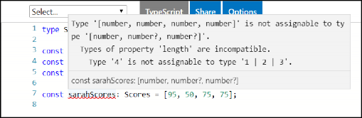
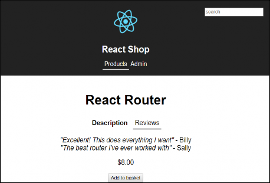
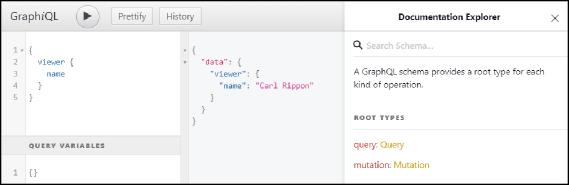
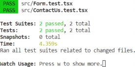

Beginner's guide to modern React web development with TypeScript 3
Carl Rippon

BIRMINGHAM - MUMBAI
Copyright 2018 Packt Publishing
All rights reserved. No part of this book may be reproduced, stored in a retrieval system, or transmitted in any form or by any means, without the prior written permission of the publisher, except in the case of brief quotations embedded in critical articles or reviews.
Every effort has been made in the preparation of this book to ensure the accuracy of the information presented. However, the information contained in this book is sold without warranty, either express or implied. Neither the author, nor Packt Publishing or its dealers and distributors, will be held liable for any damages caused or alleged to have been caused directly or indirectly by this book.
Packt Publishing has endeavored to provide trademark information about all of the companies and products mentioned in this book by the appropriate use of capitals. However, Packt Publishing cannot guarantee the accuracy of this information.
Commissioning Editor: Amarabha Banerjee
Acquisition Editor: Devanshi Doshi
Content Development Editor: Francis Carneiro
Technical Editor: Surabhi Kulkarni
Copy Editor: Safis Editing Project Coordinator: Kinjal Bari Proofreader: Safis Editing Indexer: Rekha Nair
Graphics: Alishon Mendonsa
Production Coordinator: Aparna Bhagat First published: November 2018 Production reference: 1281118
Published by Packt Publishing Ltd. Livery Place
35 Livery Street Birmingham B3 2PB, UK.
ISBN 978-1-78961-025-3
Mapt is an online digital library that gives you full access to over 5,000 books and videos, as well as industry leading tools to help you plan your personal development and advance your career. For more information, please visit our website.

Spend less time learning and more time coding with practical eBooks and Videos from over 4,000 industry professionals

Improve your learning with Skill Plans built especially for you

Get a free eBook or video every month

Mapt is fully searchable

Copy and paste, print, and bookmark content
Did you know that Packt offers eBook versions of every book published, with PDF and ePub files available? You can upgrade to the eBook version at www.packt.com and as a print book customer, you are entitled to a discount on the eBook copy. Get in touch with us at customercare@packtpub.com for more details.
At www.packt.com, you can also read a collection of free technical articles, sign up for a range of free newsletters, and receive exclusive discounts and offers on Packt books and eBooks.
Carl Rippon has been involved in the software industry for over 20 years, developing a complex line of business applications in various sectors. He has spent the last eight years building single page applications using a wide range of JavaScript technologies, including Angular, ReactJS, and TypeScript. Carl has written over 100 blog posts on various technologies.
I'd like to thank Sarah, Ellie-Jayne, and Lily-Rose for all the support they've given me while writing this book. Thanks to everyone in the Packt editorial team for their hard work and great feedback, especially Francis Carneiro and Surabhi Kulkarni. Special thanks also to Devanshi Doshi for reaching out to me with this opportunity.
Ashok Kumar S has been working in the mobile development domain for about six years. In his early days, he was a JavaScript and Node developer. Thanks to his strong web development skills, he has mastered web and mobile development. He is a Google-certified engineer, a speaker at global level conferences (including DroidCon Berlin and MODS), and he also runs a YouTube channel called AndroidABCD for Android developers. He is a computer science and engineering graduate who is passionate about innovation in technology. He contributes to open source heavily with a view to improving his e-karma.
He has also written books on Wear OS programming and mastering the Firebase toolchain. In his spare time, he writes articles and makes videos on programming. Ashok Kumar has also reviewed books on mobile and web development, namely Mastering JUnit 5, Android Programming for Beginners, and developing Enterprise applications using JavaScript.
I would especially like to thank my mother for her boundless support in every possible way, not to mention family members Shylaja, Sumitra, Krishna, Vinisha, and my fianc, Geetha Shree.
Dave has had over 16 years' experience as a software engineer. After working for a number of creative agencies in London and then as a contract tech lead for a global e-commerce company, he is now tech lead at Seccl Technology, a start-up based in Bath, UK, that is building pioneering digital services for the financial industry, working with a serverless infrastructure in the cloud, and providing wonderful experiences through their web applications. He has worked with TypeScript for about five years and has seen it mature a lot over the years. Dave has worked specifically on React applications for over two years, as well on serverless code for the Seccl platform.
Pogo Kid is Dave's consultancy where he provides support for companies wanting to improve their serverless, React, and TypeScript applications. He has also reviewed a couple of book proposals for Manning on TypeScript.
He has had the privilege of bringing leadership to development teams across the world, including many household names. He is a firm believer that when systems have the correct architecture and the team has a good mix of passion and skill, users will have a wonderful experience.
Daniel Deutsch is working as a web developer in various companies. Although most of his work is structured around client-side development, he is also able to contribute to different problem areas in software development, like the backend, devops, or project management. Coming from legal fields and also studying law he aims for bringing the 2 areas together and create additional value for both industries. As his personal interest focuses on machine learning, he likes to incorporate more of those disciplines in his day to day work.
Daniel's ultimate goal is to structure a business around motivated people to create something that brings value to humanity and lasts for a long time period.
If you're interested in becoming an author for Packt, please visit authors.packtpub.com and apply today. We have worked with thousands of developers and tech professionals, just like you, to help them share their insight with the global tech community. You can make a general application, apply for a specific hot topic that we are recruiting an author for, or submit your own idea.
Chapter 1: TypeScript Basics 7
Understanding the benefits of TypeScript 9
Catching coding errors early 9
Better developer experience and productivity 11
Using future JavaScript features 11
Creating interfaces, types aliases, and classes 25
Optional properties and parameters 32
Property setters and getters 45
Structuring code into modules 48
Specifying files for compilation 59
Chapter 2: What is New in TypeScript 3 68
JavaScript rest and spread syntax 71
Type checking with a type predicate 81
Type narrowing with a type assertion 83
Additions to compiler options 87
Cross-project Go to Definition 88
Chapter 3: Getting Started with React and TypeScript 96
Creating a React and TypeScript project 97
Creating a project manually 101
Creating our folder structure 101
Creating a simple React component 104
Creating start and build scripts 107
Creating a class component 108
Creating a basic class component 110
Handling class component events 121
Class component life cycle methods 131
getSnapshotBeforeUpdate and componentDidUpdate 137
Deprecated life cycle methods 141
Creating a function component 141
Creating a basic function component 141
Stateful function components 144
Function component life cycle hooks 146
Optimizing function component rendering 148
Chapter 4: Routing with React Router 151
Installing React Router with routing types 152
Using the NavLink component 162
Implementing page redirects 171
String literal union types 196
Discriminated union pattern 197
Using the instanceof keyword 203
Using a user-defined type guard 205
Chapter 6: Component Patterns 221
Container and presentational components 222
Adding reviews to a product 226
Creating a basic tab component 229
Leveraging the compound component pattern 233
Sharing state with React context 236
Completing Tabs with render props 241
Using render prop for tab headings 242
Using children prop for tab content 243
Adding asynchronous data fetching 249
Implementing the withLoader HOC 251
Consuming the withLoader HOC 254
Chapter 7: Working with Forms 259
Creating a form with controlled components 260
Creating controlled inputs 262
Reducing boilerplate code with generic components 270
Creating a basic form component 271
Adding a basic Field component 272
Sharing state with React context 275
Implementing our new ContactUs component 279
Adding a validation rules prop to form 281
Tracking validation error messages 283
Triggering validation rule execution from field 288
Rendering validation error messages 290
Adding a submit button to the form 293
Adding a onSubmit form prop 293
Consuming the onSubmit form prop 296
Principles and key concepts 303
Creating state and action types 308
Connecting our React app to the store 315
Adding the store Provider component 315
Connecting components to the store 316
Connecting ProductsPage to the store 316
Connecting ProductsPage to the loading store state 319
Adding product state and actions to the store 322
Adding basket state and actions to the store 324
Connecting ProductPage to the store 326
Creating and connecting BasketSummary to the store 329
Managing state with useReducer 331
Chapter 9: Interacting with RESTful APIs 338
Consuming a promised-based function 342
Creating a promised based function 342
Using axios with class components 351
Using axios with function components 367
Chapter 10: Interacting with GraphQL APIs 375
GraphQL query and mutation syntax 376
Using axios as a GraphQL client 384
Getting a GitHub personal access token 385
Querying the GraphQL server 388
Using Apollo GraphQL client 391
Migrating from axios to Apollo 392
Using the query component to query GraphQL 393
Adding a repository search component 396
Implementing the search form 397
Implementing the search query 399
Rendering the search result 403
Implementing a mutation with Apollo 405
Working with cached data in Apollo 407
Clearing the caching using refetchQueries 408
Updating the cache after a Mutation 409
Chapter 11: Unit Testing with Jest 414
Creating a basic pure function test 416
Understanding Jest watch options 419
Adding structure to unit test results 420
Creating a basic component test 422
Improving our tests with react-testing-library 425
Installing react-testing-library 425
Removing CSS class references from our tests 425
Using fireEvent for user interaction 427
Creating a second test for a valid form submission 428
Using a mock function in Jest 435
Mocking Axios with axios-mock-adapter 437
Chapter 1: TypeScript Basics 446
Chapter 2: What is New in TypeScript 3 447
Chapter 3: Getting Started with React and TypeScript 449
Chapter 4: Routing with React Router 451
Chapter 6: Component Patterns 455
Chapter 7: Working with Forms 458
Chapter 9: Interacting with RESTful APIs 462
Chapter 10: Interacting with GraphQL APIs 465
Chapter 11: Unit Testing with Jest 466
React was built by Facebook in order to provide more structure to their code base and allow it to scale much better. React worked so well for Facebook that they eventually open sourced it. Today, React is one of the most popular JavaScript libraries for building frontends. It allows us to build small, isolated, and highly reusable components that can be composed together in order to create complex frontends.
TypeScript was built by Microsoft to help developers more easily build large frontend applications. It is a superset of JavaScript, bringing a rich type system to it. This type system helps developers to catch bugs early and allows tools to be created to robustly navigate and refactor code.
This book will teach you how you can use both of these technologies to create large sophisticated frontends efficiently that are easy to maintain.
This book is primarily aimed at web developers who want to create large web applications with React and TypeScript. A basic understanding of JavaScript and HTML is assumed.
Chapter 1, TypeScript Basics, introduces the TypeScript type system, covering the basic types. It moves on to cover how we can configure the incredibly flexible TypeScript compiler. Linting and code formatting are also introduced, along with their configuration.
Chapter 2, What is New in TypeScript 3, steps through the significant new features that were introduced in version 3 of TypeScript. Tuples feature heavily in this chapter, along with the closely related rest and spread syntax and how we can use these constructs with strong types. Setting up multiple related TypeScript projects efficiently is also covered, before moving on to improvements that have been made when setting default prop values in a React component.
Chapter 3, Getting Started with React and TypeScript, begins with how projects that use both these technologies can be created. The chapter then introduces how strongly-typed React components can be built in both a class-based and functional manner. Managing state and hooking into life cycle events are also key topics in this chapter.
Chapter 4, Routing with React Router, introduces a library that can help us efficiently create an app with multiple pages. It covers how to create page links, and declare the components that should be rendered. Step by step, the chapter covers how to implement route parameters, query parameters, and nested routes. The chapter also covers how to load components from a route on demand in order to optimize performance in apps entailing lots of large pages.
Chapter 5, Advanced Types, focuses solely on TypeScript types. On this occasion, more advanced, but still very useful, types are covered, such as generic types, union types, overload signatures, and keyof and lookup types.
Chapter 6, Component Patterns, covers a number of common patterns for building React components while still maintaining strong types. Container components are stepped through first, followed by composite components. The popular render props pattern and higher-order components are also covered in this chapter.
Chapter 7, Working with Forms, covers how forms can be implemented efficiently with React and TypeScript. A generic form component is built step by step, including validation and submission.
Chapter 8, React Redux, covers how this popular library can help manage state across an app. A strongly typed Redux store is built with actions and reducers. The chapter finishes by looking at how a new React function can allow a Redux style structure within components without Redux.
Chapter 9, Interacting with RESTful APIs, begins with detailed coverage of asynchronous code. The chapter then moves on to cover how we can interact with RESTful APIs using a native JavaScript function, as well as a popular open source library.
Chapter 10, Interacting with GraphQL APIs, begins by introducing the syntax for reading and writing data. The chapter covers how to interact with a GraphQL server with an HTTP library before moving on to using a popular purpose-built library.
Chapter 11, Unit Testing with Jest, covers how to test both pure functions and React components. A popular open source library is looked at to make tests less brittle when the internals of components are refactored. Some of the great features of Jest are stepped through, such as snapshot testing, mocking, and code coverage.
Answers, Contains the answers to all the exercises present in the chapters of this book.
You need to know the basics of JavaScript, including the following:

An understanding of some of the primitive JavaScript types, such as string, number, Boolean, null, and undefined

An understanding of how to create variables and reference them, including arrays and objects

An understanding of how to create functions and call them

An understanding of how to create conditional statements with the if and else keywords
You need to know the basics of HTML, including the following:

An understanding of basic HTML tags, such as div, ul, p, a, h1, and h2, and how to compose them together to create a web page

An understanding of how to reference a CSS class to style an HTML element
An understanding of basic CSS is also helpful, but not essential:


How to size elements and include margins and padding How to position elements

How to color elements
You will need the following technologies installed on your computer:

Google Chrome: This can be installed at https://www.google.com/chrome/.

Node.js and npm: These are used throughout this book. You can install them
at https://nodejs.org/en/download/. If you already have these installed, make sure that Node.js is at least version 8.2 and that npm is at least version 5.2.

TypeScript: This can be installed via npm by entering the following command in a terminal:
npm install -g typescript

Visual Studio Code: You'll need this to write React and TypeScript code. This can be installed from https://code.visualstudio.com/.
You can download the example code files for this book from your account at www.packt.com. If you purchased this book elsewhere, you can visit www.packt.com/support and register to have the files emailed directly to you.
You can download the code files by following these steps:
Log in or register at www.packt.com.
Select the SUPPORT tab.
Click on Code Downloads & Errata.
Enter the name of the book in the Search box and follow the onscreen instructions.
Once the file is downloaded, please make sure that you unzip or extract the folder using the latest version of:


WinRAR/7-Zip for Windows Zipeg/iZip/UnRarX for Mac 7-Zip/PeaZip for Linux
The code bundle for the book is also hosted on GitHub at https://github.com/ PacktPublishing/Learn-React-with-TypeScript-3. In case there's an update to the code, it will be updated on the existing GitHub repository.
We also have other code bundles from our rich catalog of books and videos available at https://github.com/PacktPublishing/. Check them out!
We also provide a PDF file that has color images of the screenshots/diagrams used in this book. You can download it here: https://www.packtpub.com/sites/default/files/ downloads/9781789610253_ColorImages.pdf.
There are a number of text conventions used throughout this book.
CodeInText: Indicates code words in text, database table names, folder names, filenames, file extensions, pathnames, dummy URLs, user input, and Twitter handles. Here is an example: "Let's create a new file called tsconfig.json in the root of our project."
A block of code is set as follows:
import * as React from "react";
const App: React.SFC = () => { return <h1>My React App!</h1>;
};
When we wish to draw your attention to a particular part of a code block, the relevant lines or items are set in bold:
interface IProps { title: string;
content: string; cancelCaption?: string; okCaption?: string;
}
Any command-line input or output is written as follows:
cd my-components
npm install tslint tslint-react tslint-config-prettier --save-dev
Warnings or important notes appear like this.
Tips and tricks appear like this.
Bold: Indicates a new term, an important word, or words that you see on screen. For example, words in menus or dialog boxes appear in the text like this. Here is an example: "We need to click the Install option to install the extension."
Feedback from our readers is always welcome.
General feedback: If you have questions about any aspect of this book, mention the book title in the subject of your message and email us at customercare@packtpub.com.
Errata: Although we have taken every care to ensure the accuracy of our content, mistakes do happen. If you have found a mistake in this book, we would be grateful if you would report this to us. Please visit www.packt.com/submit-errata, selecting your book, clicking on the Errata Submission Form link, and entering the details.
Piracy: If you come across any illegal copies of our works in any form on the internet, we would be grateful if you would provide us with the location address or website name.
Please contact us at copyright@packt.com with a link to the material.
If you are interested in becoming an author: If there is a topic that you have expertise in, and you are interested in either writing or contributing to a book, please visit authors.packtpub.com.
Please leave a review. Once you have read and used this book, why not leave a review on the site that you purchased it from? Potential readers can then see and use your unbiased opinion to make purchase decisions, we at Packt can understand what you think about our products, and our authors can see your feedback on their book. Thank you!
For more information about Packt, please visit packt.com.
Facebook has become an incredibly popular app. As its popularity grew, so did the demand for new features. React was Facebook's answer to help more people work on the codebase and deliver features quicker. React worked so well for Facebook that they eventually open sourced it. Today, React is a mature library for building component-based frontends that is extremely popular and has a massive community and ecosystem.
TypeScript is also a popular, mature library maintained by a big company namely, Microsoft. It allows users to add strong types to their JavaScript code, helping them to be more productive, particularly in large code bases.
This book will teach you how you can use both of these awesome libraries to build robust frontends that are easy to maintain. The first couple of chapters in the book focus solely on TypeScript. You'll then start to learn about React and how you can compose robust frontends using Typescript components with strong typing.
In this chapter, we'll cover TypeScript's relationship to JavaScript and the benefits it brings. A basic understanding of JavaScript is therefore required. We'll also cover the basics of TypeScript that you'll commonly use when writing code for the browser.
You'll come to understand the need to use TypeScript for building a frontend and the sort of projects for which TypeScript really shines. You will also see how to transpile your TypeScript code into JavaScript so that it can run in a browser. Last but not least, you'll learn how you can perform additional checks on your TypeScript code to make it readable and maintainable.
By the end of the chapter, you'll be ready to start learning how you can use TypeScript for building frontends with React.
In this chapter, we'll cover the following topics:


Understanding the benefits of TypeScript Understanding basic types


Creating interfaces, types aliases, and classes Structuring code into modules


Configuring compilation TypeScript linting

We will use the following technologies in this chapter:

TypeScript playground: This is a website at https://www.typescriptlang.org/ play/ that allows you to play around with and understand the features in TypeScript without installing it.

Node.js and npm: TypeScript and React are dependent on these. You can install them at: https://nodejs.org/en/download/. If you already have these installed, make sure Node.js is at least Version 8.2 and npm is at least Version 5.2.

TypeScript: This can be installed via npm, entering the following command in a terminal:
npm install -g typescript
All the code snippets in this chapter can be found online at: https://
github.com/carlrip/LearnReact17WithTypeScript/tree/master/01- TypeScriptBasics

Visual Studio Code: We'll need an editor to write our TypeScript code. This one can be installed from https://code.visualstudio.com/. Other editors that could be used can be found at https://github.com/Microsoft/TypeScript/wiki/ TypeScript-Editor-Support.
When a JavaScript codebase grows, it can become hard to read and maintain. TypeScript is an extension of JavaScript, adding static types. The TypeScript compiler reads in TypeScript code that includes type information and produces clean, readable JavaScript with the type information transformed and removed. The compiled code can then run in our favorite browsers and Node.js.
TypeScript offers several benefits over JavaScript:

Coding errors can be caught in the development process earlier

Static types allow tools to be built that improve the developer experience and productivity

JavaScript features that aren't implemented in all the browsers yet can actually be used in an app that targets those browsers
We'll go through these points in detail in the following sections.
The type information helps the TypeScript compiler catch bugs and typos before our users run into them. In code editors such as Visual Studio Code, a mistake is underlined in red immediately after the user has gone wrong. As an example, create a file called utils.js and paste in the following code, which calculates the total price on an order line:
function calculateTotalPrice(product, quantity, discount) { var priceWithoutDiscount = product.price * quantity;
var discountAmount = priceWithoutDiscount * discount; return priceWithoutDiscount - discountAmount;
}

There is a bug in the code that might be difficult for us to spot. If we open the file in Visual Studio Code, no errors are highlighted. If we change the extension of the file to .ts, Visual Studio Code immediately underlines bits of the code that need our attention in red:
Most of the errors are TypeScript asking for some type information. So, let's add some types to our code:
interface IProduct { name: string; unitPrice: number;
}
function calculateTotalPrice(product: IProduct, quantity: number, discount: number): number {
var priceWithoutDiscount: number = product.price * quantity; var discountAmount: number = priceWithoutDiscount * discount; return priceWithoutDiscount - discountAmount;
}
Don't worry if you don't understand what we just added; we'll go through types in the next section. The key point is that we now have a single error highlighted to us, which is, in fact, the bug:
The bug is that our function references a price property in the product object that doesn't exist. The property that we should reference is unitPrice.
Let's fix the bug in the previous section by renaming price to unitPrice. Notice how Visual Studio Code gives us IntelliSense lists unitPrice as an option because it looking at our type definition:
There is another benefit of TypeScript that is important to understand. TypeScript allows us to use some features in JavaScript that haven't yet been adopted by all browsers but still target those browsers. TypeScript achieves this by transpiling the use of these features down to JavaScript code that the targeted browser does support.
As an example, let's look at the exponentiation operator (**) in ES7, which isn't supported in IE. Let's create a file called future.ts and enter the following code:
var threeSquared: number = 3 ** 2; console.log(threeSquared);
When we run the program in a browser, it should put 9 into the console. Before we do that, let's run the code against the TypeScript compiler to get the transpiled JavaScript. Run the following command in a terminal in the same directory as future.ts:
tsc future
This should generate a file called future.js with the following content:
var threeSquared = Math.pow(3, 2); console.log(threeSquared);
So, TypeScript converted the exponentiation operator to a call to the Math.pow function, which is supported in IE. To confirm that this works, paste the generated JavaScript code into the console in IE and the output should be 9.
This example is purposely simple but probably not that useful. Async/await, spread operators, rest parameters, and arrow functions are far more useful features that IE doesn't support but TypeScript allows the use of. Don't worry if you don't know what the features in the last sentence are, as we'll cover them when we need them in the book.
Before understanding how we declare variables and functions with types in TypeScript, let's briefly look at primitive types, which are the most basic types. Primitive types are simple values that have no properties. TypeScript shares the following primitive types with JavaScript:


string: Represents a sequence of Unicode characters number: Represents both integers and floating-point numbers boolean: Represents a logical true or false
undefined: Represents a value that hasn't been initialized yet
null: Represents no value
Types for JavaScript variables are determined at runtime. Types for JavaScript variables can also change at runtime. For example, a variable that holds a number can later be replaced by a string. Usually, this is unwanted behavior and can result in a bug in our app.
TypeScript annotations let us declare variables with specific types when we are writing our code. This allows the TypeScript compiler to check that the code adheres to these types before the code executes at runtime. In short, type annotations allow TypeScript to catch bugs where our code is using the wrong type much earlier than we would if we were writing our code in JavaScript.
TypeScript annotations let us declare variables with types using the :Type syntax.
Let's browse to the TypeScript playground and enter the following variable declaration into the left-hand pane:
let unitPrice: number;
The transpiled JavaScript will appear on the right-hand side as follows:
That let has been converted to var. This is because the compiler that the playground uses is set to target a wide range of browsers, some of which don't support let. Also, notice that the type annotation has disappeared. This is because type annotations don't exist in JavaScript.
var unitPrice;
Let's add a second line to our program:
unitPrice = "Table";
Notice that a red line appears under unitPrice, and if you hover over it, you are correctly informed that there is a type error:
You can also add type annotations to function parameters for the return value using the same :Type syntax. Let's enter the following function into the playground:
function getTotal(unitPrice: number, quantity: number, discount: number): number {
const priceWithoutDiscount = unitPrice * quantity; const discountAmount = priceWithoutDiscount * discount; return priceWithoutDiscount - discountAmount;
}
We have used both const and let to declare variables in different examples. let will allow the variable to change the value after the declaration, whereas const variables can't change. In the preceding function, priceWithoutDiscount and discountAmount never change the value after the initial assignment, so we have used const.
We've declared unitPrice, quantity, and discount parameters, all as numbers. The return type annotation comes after the function's parentheses, which is also a number in the preceding example.
Let's call our function with an incorrect type for quantity and assign the result to a variable with an incorrect type:
let total: string = getTotal(500, "one", 0.1);
We find that one is underlined in red, highlighting that there is a type error:
If we then correct one to 1, total should be underlined in red, highlighting that there is a type problem with that:
The TypeScript compiler uses type annotations to check whether values assigned to variables and function parameters are valid for their type.
We have seen how type annotations are really valuable, but they involve a lot of extra typing. Luckily, TypeScript's powerful type inference system means we don't have to provide annotations all the time. We can use type inference when we immediately set a variable value.
Let's look at an example:
Let's add the following variable assignment in the TypeScript playground:
let flag = false;
If we hover our mouse over the flag variable, we can see that TypeScript has inferred the type as boolean:
If we add another line beneath this, to incorrectly set flag to Table, we get a type error:
What if we declare a variable with no type annotation and no value? What does TypeScript infer as the type? Let's enter the following code in the TypeScript playground and find out:
let flag;
If we hover our mouse over flag, we see it has been given the any type:
So, the TypeScript compiler gives a variable with no type annotation and no immediately assigned value, the any type. The any type is specific to TypeScript; it doesn't exist in JavaScript. It is a way of opting out of type checking on a particular variable. It is commonly used for dynamic content or values from third-party libraries. However, TypeScript's increasingly powerful type system means that we need to use any less often these days.
void is another type that doesn't exist in JavaScript. It is generally used to represent a non- returning function.
Let's look at an example:
Let's enter the following function into the TypeScript playground:
function logText(text: string): void { console.log(text);
}
The function simply logs some text into the console and doesn't return anything. So, we've marked the return type as void.
If we remove the return type annotation and hover over the function name,
logText, we'll see that TypeScript has inferred the type to be void:
This saves us a few keystrokes while writing functions that don't return anything.
The never type represents something that would never occur and is typically used to specify unreachable areas of code. Again, this doesn't exist in JavaScript.
Time for an example:
Type the following code into the TypeScript playground:
function foreverTask(taskName: string): never { while (true) {
console.log(`Doing ${taskName} over and over again ...`);
}
}
In the preceding example, we used a JavaScript template literal to construct the string to log to the console. Template literals are enclosed by back-ticks (``) and can include a JavaScript expression in curly braces prefixed with a dollar sign (${expression}). Template literals are great when we need to merge static text with variables.
The function invokes an infinite loop and never returns, and so we have given it a type annotation of never. This is different to void because void means it will return, but with no value.
Let's change the foreverTask function to break out of the loop:
function foreverTask(taskName: string): never { while (true) {
console.log(`Doing ${taskName} over and over again ...`); break;
}
}
The TypeScript compiler quite rightly complains:
Let's now remove the break statement and the never type annotation. If we hover over the foreverTask function name with our mouse, we see that TypeScript has inferred the type to be void, which is not what we want in this example:
The never type is useful in places where the code never returns. However, we will probably need to explicitly define the never type annotation because the TypeScript compiler isn't smart enough yet to infer that.
Enumerations allow us to declare a meaningful set of friendly names that a variable can be set to. We use the enum keyword, followed by the name we want to give to it, followed by the possible values in curly braces.
Here's an example:
Let's declare an enum for order statuses in the TypeScript playground:
enum OrderStatus { Paid,
Shipped, Completed, Cancelled
}
If we look at the transpiled JavaScript, we see that it looks very different:
var OrderStatus; (function (OrderStatus) {
OrderStatus[OrderStatus["Paid"] = 1] = "Paid"; OrderStatus[OrderStatus["Shipped"] = 2] = "Shipped"; OrderStatus[OrderStatus["Completed"] = 3] = "Completed"; OrderStatus[OrderStatus["Cancelled"] = 4] = "Cancelled";
})(OrderStatus || (OrderStatus = {}));
This is because enumerations don't exist in JavaScript, so the TypeScript compiler is transpiling the code into something that does exist.
Let's declare a status variable, setting the value to the shipped status:
let status = OrderStatus.Shipped;
Notice how we get nice IntelliSense when typing the value:
By default, the numerical values start from 0 and increment. However, the starting value can be explicitly declared in the enum, as in the following example, where we set Paid to 1:
enum OrderStatus { Paid = 1, Shipped, Completed, Cancelled
}
Let's set our status variable to the shipped status and log this to the console:
let status = OrderStatus.Shipped; console.log(status);
If we run the program, we should see 2 output in the console:

In addition, all the values can be explicitly declared, as in the following example:
enum OrderStatus { Paid = 1,
Shipped = 2,
Completed = 3,
Cancelled = 0
}
The object type is shared with JavaScript and represents a non-primitive type. Objects can contain typed properties to hold bits of information.
Let's work through an example:
Let's enter the following code into the TypeScript playground, which creates an object with several properties of information:
const customer = { name: "Lamps Ltd", turnover: 2000134, active: true
};
If we hover over name, turnover, and active, we'll see that TypeScript has smartly inferred the types to be string, number, and boolean respectively.
If we hover over the customer variable name, we see something interesting:
Rather than the type being object, it is a specific type with name, turnover, and active properties. On the next line, let's set the turnover property to some other value:
customer.turnover = 500000;
As we type the turnover property, IntelliSense provides the properties that are available on the object:
We used const to declare the customer variable and then was able to change one of its property values later in the program. Shouldn't this have thrown an error? Well, the customer variable reference hasn't changed just some properties within it. So, this is fine with the TypeScript compiler.
This line of code is perfectly fine, so we don't get any complaints from the compiler. If we set the turnover to a value that has an incorrect type, we'll be warned as we would expect:
Now let's set a property on customer that doesn't exist yet:
customer.profit = 10000;
We'll see that TypeScript complains:
This makes sense if we think about it. We've declared customer with name, turnover, and active properties, so setting a profit property should cause an error. If we wanted a profit property, we should have declared it in the original declaration.
In summary, the object type is flexible because we get to define any properties we require, but TypeScript will narrow down the type to prevent us incorrectly typing a property name.
Arrays are structures that TypeScript inherits from JavaScript. We add type annotations to arrays as usual, but with square brackets at the end to denote that this is an array type.
Let's take a look at an example:
Let's declare the following array of numbers in the TypeScript playground:
const numbers: number[] = [];
Here, we have initialized the array as empty.
We can add an item to the array by using the array's push function. Let's add the number 1 to our array:
numbers.push(1);

We used const to declare the numbers variable and was able to change its array elements later in the program. The array reference hasn't changed
just the elements within it. So, this is fine with the TypeScript compiler.
We can use type inference to save a few keystrokes if we declare an array with some initial values. As an example, if we type in the following declaration and hover over the numbers variable, we'll see the type has been inferred as number[].
const numbers = [1, 3, 5];
We can access an element in an array by using the element number in square brackets. Element numbers start at 0.
Let's take an example:
Let's log out the number of elements under the numbers variable declaration, as follows:
console.log(numbers[0]); console.log(numbers[1]); console.log(numbers[2]);
Let's now click the Run option on the right-hand side of the TypeScript playground to run our program. A new browser tab should open with a blank page. If we press F12 to open the Developer tools and go to the console section, we'll see 1, 3, and 5 output to the console.
There are several ways to iterate through elements in an array. One option is to use a for loop, as follows:
for (let i in numbers) { console.log(numbers[i]);
}
If we run the program, we'll see 1, 3, and 5 output to the console again.
Arrays also have a useful function for iterating through their elements, called
forEach. We can use this function as follows:
numbers.forEach(function (num) { console.log(num);
});
forEach calls a nested function for each array element, passing in the array element. If we hover over the num variable, we'll see it has been correctly inferred as a number. We could have put a type annotation here, but we have saved ourselves a few keystrokes:
In the Understanding basic types section, we introduced ourselves to objects, which are types that can have their own properties. Interfaces, type aliases, and classes are ways that we can define an object structure before we start using it.
Following here is the customer object we worked with, where we declared the customer
variable with an initial object value:
const customer = { name: "Lamps Ltd", turnover: 2000134, active: true
};
Let's try to declare the customer variable and set its value on a subsequent line:
let customer: object; customer = {
name: "Lamps Ltd", turnover: 2000134, active: true
};
So far, so good. However, let's see what happens when we try to change the customers turnover value:
customer.turnover = 2000200;
The lack of IntelliSense when we type turnover isn't what we are used to. When we've finished typing the line, we get a compiler error:
The TypeScript compiler doesn't know about the properties in the customer
object and so thinks there's a problem.
So, we need another way of defining an object structure with the ability to set property values later in the program. That's where interfaces, type aliases, and classes come in; they let us define the structure of an object by letting us define our own types.
An interface is a contract that defines a type with a collection of property and method definitions without any implementation. Interfaces don't exist in JavaScript, so they are purely used by the TypeScript compiler to enforce the contract by type checking.
We create an interface with the interface keyword, followed by its name, followed by the bits that make up the interface in curly braces:
interface Product {
...
}
Properties are one of the elements that can be part of an interface. Properties can hold values associated with an object. So, when we define a property in an interface, we are saying that objects that implement the interface must have the property we have defined.
Let's start to play with an interface in the TypeScript playground:
Enter the following interface:
interface Product { name: string; unitPrice: number;
}
The preceding example creates a Product interface with name and unitPrice properties. Let's go on to use this interface by using it as the type for a table variable:
const table: Product = { name: "Table", unitPrice: 500
}
Let's try to set a property that doesn't exist in the interface:
const chair: Product = { productName: "Table", price: 70
}
As expected, we get a type error:
Properties on an interface can reference another interface because an interface is just a type. The following example shows an OrderDetail interface making use of a Product interface:
interface Product { name: string; unitPrice: number;
}
interface OrderDetail { product: Product; quantity: number;
}
const table: Product = { name: "Table", unitPrice: 500
}
const tableOrder: OrderDetail = { product: table,
quantity: 1
};
This gives us the flexibility to create complex object structures, which is critical when writing large, complex apps.
Interfaces can contain method signatures as well. These won't contain the implementation of the method; they define the contracts for when interfaces are used in an implementation.
Let's look at an example:
Let's add a method to the OrderDetail interface we just created. Our method is called getTotal and it has a discount parameter of type number and returns a number:
interface OrderDetail { product: Product; quantity: number;
getTotal(discount: number): number;
}
Notice that the getTotal method on the interface doesn't specify anything about how the total is calculated it just specifies the method signature that should be used.
Having adjusted our OrderDetail interface, our tableOrder object, which implemented this interface, will now be giving a compilation error. So, let's resolve the error by implementing getTotal:
const tableOrder: OrderDetail = { product: table,
quantity: 1,
getTotal(discount: number): number {
const priceWithoutDiscount = this.product.unitPrice * this.quantity;
const discountAmount = priceWithoutDiscount * discount; return priceWithoutDiscount - discountAmount;
}
};
Notice that the implemented method has the same signature as in the
The method implementation uses the this keyword to get access to properties on the object. If we simply referenced product.unitPrice and quantity without this, we would get a compilation error, because TypeScript would assume these variables are local within the method.
OrderDetail interface.
getTotal(discountPercentage: number): number {
const priceWithoutDiscount = this.product.unitPrice * this.quantity;
const discountAmount = priceWithoutDiscount * discountPercentage;
return priceWithoutDiscount - discountAmount;
}
We'll see that we don't get a compilation error. Let's change the method name now:
total(discountPercentage: number): number {
const priceWithoutDiscount = this.product.unitPrice * this.quantity;
const discountAmount = priceWithoutDiscount * discountPercentage;
return priceWithoutDiscount - discountAmount;
}
This does cause an error because a total method doesn't exist on the
OrderDetail interface:
We could try changing the return type:
const tableOrder: OrderDetail = { product: table,
quantity: 1,
getTotal(discountPercentage: number): string {
const priceWithoutDiscount = this.product.unitPrice * this.quantity;
const discountAmount = priceWithoutDiscount * discountPercentage;
return (priceWithoutDiscount - discountAmount).toString();
}
};
This actually doesn't produce a compilation error in the TypeScript playground, but it should do!
So, let's use Visual Studio Code for this example. After we've opened Visual Studio Code in a folder of our choice, let's create a file called interfaces.ts and paste in the interface definitions for the Product and OrderDetail interfaces, along with the table variable declaration.
We can then enter the preceding implementation of the OrderDetail interface. As expected, we get a compilation error:
Changing the parameter type also results in a compilation error:
The errors provided by TypeScript are fantasticthey are very specific about where the problem is, allowing us to quickly correct our mistakes.
So, when implementing a method from an interface, the parameter names aren't important, but the other parts of the signature are. In fact, we don't even need to declare the parameter names in the interface:
interface OrderDetail {
...
getTotal(number): number;
}
However, omitting the parameter names arguably makes the interface harder to understandhow do we know exactly what the parameter is for?
Optional properties and parameters
We might want to make a property optional because not every situation where the interface is implemented requires it. Let's take the following steps in our OrderDetail interface:
Let's create an optional property for the date it was added. We specify an optional value by putting a ? at the end of the property name but before the type annotation:
interface OrderDetail { product: Product; quantity: number; dateAdded?: Date,
getTotal(discount: number): number;
}
We'll see that our implementation of this interface, tableOrder, isn't broken. We can choose to add dateAdded to tableOrder but it isn't required.
We might also want to make a method parameter optional. We do this in a similar way by putting a ? after the parameter name. In our example, let's make discount optional in the OrderDetail interface:
interface OrderDetail { product: Product; quantity: number; dateAdded?: Date,
getTotal(discount?: number): number;
}
We can change the method implementation signature as well:
getTotal(discount?: number): number {
const priceWithoutDiscount = this.product.unitPrice * this.quantity;
const discountAmount = priceWithoutDiscount * (discount || 0);
return priceWithoutDiscount - discountAmount;
}
x || y is shorthand for if x is truthy then use x, otherwise, use y. The following values are falsy values: false, 0, "", null, undefined, and NaN. All other values are truthy.
We've also dealt with the case when a discount isn't passed into the method by using (discount || 0) in the discountAmount variable assignment.
With our optional parameter in place, we can call getTotal without passing a value for the discount parameter:
tableOrder.getTotal()
The preceding line doesn't upset the TypeScript compiler.
We can stop a property from being changed after it has initially been set by using the
readonly keyword before the property name.
Let's give this a try on our Product interface by making the name property
readonly:
interface Product { readonly name: string; unitPrice: number;
}
Let's also make sure we have an instance of the Product interface in place:
const table: Product = { name: "Table", unitPrice: 500
};
Let's change the name property table now on the next line:
table.name = "Better Table";
As expected, we get a compilation error:
readonly properties are a simple way of freezing their values after being initially set. A common use case is when you want to code in a functional way and prevent unexpected mutations to a property.
Interfaces can extend other interfaces so that they inherit all the properties and methods from its parent. We do this using the extends keyword after the new interface name and before the interface name that is being extended.
Let's look at the following example:
We create a new interface, taking Product as a base, and add information about discount codes:
interface Product { name: string; unitPrice: number;
}
interface DiscountCode { code: string; percentage: number;
}
interface ProductWithDiscountCodes extends Product { discountCodes: DiscountCode[];
}
We can create an instance of the interface in the usual way, filling in properties from the base interface as well as the child interface:
const table: ProductWithDiscountCodes = { name: "Table",
unitPrice: 500, discountCodes: [
{ code: "SUMMER10", percentage: 0.1 },
{ code: "BFRI", percentage: 0.2 }
]
};
Interfaces allow us to create complex but flexible structured types for our TypeScript program to use. They are a really important feature that we can use to create a robust, strongly-typed TypeScript program.
In simple terms, a type alias creates a new name for a type. To define a type alias, we use the type keyword, followed by the alias name, followed by the type that we want to alias.
We'll explore this with the following example:
Let's create a type alias for the getTotal method in the OrderDetail interface we have been working with. Let's try this in the TypeScript playground:
type GetTotal = (discount: number) => number;
interface OrderDetail { product: Product; quantity: number; getTotal: GetTotal;
}
Nothing changes with objects that implement this interface it is purely a way we can structure our code. It arguably makes the code a little more readable.
Type aliases can also define the shape of an object. We could use a type alias for our Product and OrderDetail types that we previously defined with an interface:
type Product = { name: string; unitPrice: number;
};
type OrderDetail = { product: Product; quantity: number;
getTotal: (discount: number) => number;
};
We use these types in exactly the same way as we used our interface-based types:
const table: Product = { name: "Table", unitPrice: 500
};
const orderDetail: OrderDetail = { product: table,
quantity: 1,
getTotal(discount: number): number {
const priceWithoutDiscount = this.product.unitPrice * this.quantity;
const discountAmount = priceWithoutDiscount * discount; return priceWithoutDiscount - discountAmount;
}
};
Classes have lots of features. So, in this section we'll look at the basic features of a class. We use the class keyword followed by the class name, followed by the definition of the class.
Let's look at this in more depth with the following example:
We could use a class to define the Product type we previously defined as an interface and as a type alias:
class Product { name: string; unitPrice: number;
}
We create an instance of our Product class by using the new keyword followed by the class name and parentheses. We then go on to interact with the class, setting property values or calling methods:
const table = new Product(); table.name = "Table"; table.unitPrice = 500;
Notice that when we use this approach we don't need a type annotation for the table variable because the type can be inferred.
Classes have many more features than type aliases and interfaces though. One of these features is the ability to define the implementation of methods in a class.
Let's explore this with an example:
Let's change the OrderDetail type we have been working within previous sections to a class. We can define the implementation of the getTotal method in this class:
class OrderDetail { product: Product; quantity: number;
getTotal(discount: number): number {
const priceWithoutDiscount = this.product.unitPrice * this.quantity;
const discountAmount = priceWithoutDiscount * discount; return priceWithoutDiscount - discountAmount;
}
}
We can create an instance of OrderDetail, specifying a product and quantity, and then calling the getTotal method with a discount to get the total price:
const table = new Product(); table.name = "Table"; table.unitPrice = 500;
const orderDetail = new OrderDetail(); orderDetail.product = table; orderDetail.quantity = 2;
const total = orderDetail.getTotal(0.1); console.log(total);
If we run this and look at the console, we should see an output of 900.
We can use classes and interfaces together by defining the contract in an interface and then implementing the class as per the interface. We specify that a class is implementing a particular interface using the implements keyword.
As an example, we can define an interface for the order detail and then a class that implements this interface:
interface IOrderDetail { product: Product; quantity: number;
getTotal(discount: number): number;
}
class OrderDetail implements IOrderDetail { product: Product;
quantity: number;
getTotal(discount: number): number {
const priceWithoutDiscount = this.product.unitPrice * this.quantity;
const discountAmount = priceWithoutDiscount * discount; return priceWithoutDiscount - discountAmount;
}
}
In the preceding example, we've prefixed the interface with I so that readers of the code can quickly see when we are referencing interfaces.
Constructors are functions that perform the initialization of new instances of a class. In order to implement a constructor, we implement a function called constructor. It's common to set property values in the constructor to simplify consumption of the class.
Let's look at the following example:
Let's create a constructor in the OrderDetail class that allows us to set the
product and quantity:
class OrderDetail implements IOrderDetail { product: Product;
quantity: number;
constructor(product: Product, quantity: number) { this.product = product;
this.quantity = quantity;
}
getTotal(discount: number): number {
...
}
}
If we create an instance of the class, we are forced to pass in the product and
quantity:
const orderDetail = new OrderDetail(table, 2);
This is nice because we've reduced three lines of code to one line. However, we can make our class even nicer to work with by making the default quantity parameter 1 if nothing is passed in:
constructor(product: Product, quantity: number = 1) { this.product = product;
this.quantity = quantity;
}
We now don't have to pass in a quantity if it is 1:
const orderDetail = new OrderDetail(table);
We can save ourselves a few keystrokes and let the TypeScript compiler implement the product and quantity properties by using the public keyword before the parameters in the constructor:
class OrderDetail implements IOrderDetail {
constructor(public product: Product, public quantity: number
= 1) {
this.product = product; this.quantity = quantity;
}
getTotal(discount: number): number {
...
}
}
Classes can extend other classes. This is the same concept as interfaces extending other interfaces, which we covered in the Extending interfaces section. This is a way for class properties and methods to be shared with child classes.
As with interfaces, we use the extends keyword followed by the class we are extending. Let's look at an example:
Let's create a ProductWithDiscountCodes from our Product class:
class Product { name: string; unitPrice: number;
}
interface DiscountCode { code: string; percentage: number;
}
class ProductWithDiscountCodes extends Product { discountCodes: DiscountCode[];
}
We can then consume the ProductWithDiscountCodes class as follows, leveraging properties from the base class as well as the child class:
const table = new ProductWithDiscountCodes(); table.name = "Table";
table.unitPrice = 500; table.discountCodes = [
{ code: "SUMMER10", percentage: 0.1 },
{ code: "BFRI", percentage: 0.2 }
];
class Product {
constructor(public name: string, public unitPrice: number) {
}
}
interface DiscountCode { code: string; percentage: number;
}
class ProductWithDiscountCodes extends Product { constructor(public name: string, public unitPrice: number) {
super(name, unitPrice);
}
discountCodes: DiscountCode[];
}
Abstract classes are a special type of class that can only be inherited from and not instantiated. They are declared with the abstract keyword, as in the following example:
We can define a base Product class as follows:
abstract class Product { name: string; unitPrice: number;
}
If we try to create an instance of this, the compiler will complain, as we would expect:
We can create a more specific usable class for food products by extending
Product:
class Food extends Product { constructor(public bestBefore: Date) {
super();
}
}
Here, we are adding a bestBefore date in our Food class. We can then create an instance of Food, passing in the bestBefore date:
const bread = new Food(new Date(2019, 6, 1));
Abstract classes can have abstract methods that child classes must implement. Abstract methods are declared with the abstract keyword in front of them, as in the following example:
Let's add an abstract method to our base Product class:
abstract class Product { name: string; unitPrice: number;
abstract delete(): void;
}
After we add the abstract method, the compiler immediately complains about our Food class because it doesn't implement the delete method:
So, let's fix this and implement the delete method:
class Food extends Product {
deleted: boolean;
constructor(public bestBefore: Date) { super();
}
delete() {
this.deleted = false;
}
}
So far, all our class properties and methods have automatically had the public access modifier. This means they are available to interact with class instances and child classes. We can explicitly set the public keyword on our class properties and methods immediately before the property or method name:
class OrderDetail {
public product: Product;
public quantity: number;
public getTotal(discount: number): number {
const priceWithoutDiscount = this.product.unitPrice * this.quantity; const discountAmount = priceWithoutDiscount * discount;
return priceWithoutDiscount - discountAmount;
}
}
As you might have guessed, there is another access modifier, called private, which allows the member to only be available to interact with inside the class and not on class instances or child classes.
Let's look at an example:
Let's add a delete method in our OrderDetail class, which sets a private
deleted property:
class OrderDetail {
public product: Product; public quantity: number; private deleted: boolean;
public delete(): void { this.deleted = true;
...
}
Let's create an instance of OrderDetail and try to access the deleted property:
const orderDetail = new OrderDetail(); orderDetail.deleted = true;
As expected, the compiler complains:
There is a third access modifier, protected, which allows the member to be available to interact with inside the class and on child classes, but not on class instances.
Our classes so far have had simple property declarations. However, for more complex scenarios, we can implement a property with a getter and a setter. When implementing getters and setters, generally, you'll need a private property to hold the property value:

getter is a function with the property name and the get keyword at the beginning and no parameters. Generally, this will return the value of the associated private property.

setter is a function with the same name with the set keyword at the beginning and a single parameter for the value. This will set the value of the associated private property.

The private property is commonly named the same as the getter and setter
with an underscore in front.
Let's take a look at an example:
Let's create getters and setters for the unitPrice property in our Product class. The setter ensures the value is not less than 0. The getter ensures null or undefined is never returned:
class Product { name: string;
private _unitPrice: number; get unitPrice(): number {
return this._unitPrice || 0;
}
set unitPrice(value: number) { if (value < 0) {
value = 0;
}
this._unitPrice = value;
}
}
Let's consume the Product class and try this out:
const table = new Product(); table.name = "Table"; console.log(table.unitPrice); table.unitPrice = -10; console.log(table.unitPrice);
If we run this, we should see two 0's in the console.
Static properties and methods are held in the class itself and not in class instances. They can be declared using the static keyword before the property or method name.
Let's look at the following example:
Let's make the getTotal method static on the OrderDetail class we have been using:
class OrderDetail { product: Product; quantity: number;
static getTotal(discount: number): number {
const priceWithoutDiscount = this.product.unitPrice * this.quantity;
const discountAmount = priceWithoutDiscount * discount; return priceWithoutDiscount - discountAmount;
}
}
We get compilation errors where we try to reference the properties on the class. This is because the static method isn't in the class instance and therefore can't access these properties:
To make the static method work, we can move its dependencies on the class instance to parameters in the function:
static getTotal(unitPrice: number, quantity: number, discount: number): number {
const priceWithoutDiscount = unitPrice * quantity; const discountAmount = priceWithoutDiscount * discount; return priceWithoutDiscount - discountAmount;
}
We can now call the static method on the class type itself, passing in all the parameter values:
const total = OrderDetail.getTotal(500, 2, 0.1); console.log(total);
If we run the preceding program, we should get an output of 900 in the console.
By default, TypeScript generated JavaScript code that executes in what is called the global scope. This means code from one file is automatically available in another file. This in turn means that the functions we implement can overwrite functions in other files if the names are the same, which can cause our applications to break.
Let's look at an example in Visual Studio Code:
Let's create a file called product.ts and enter the following interface for a product:
interface Product { name: string; unitPrice: number;
}
Let's create another file, called orderDetail.ts, with the following content:
class OrderDetail { product: Product; quantity: number;
getTotal(discount: number): number {
const priceWithoutDiscount = this.product.unitPrice * this.quantity;
const discountAmount = priceWithoutDiscount * discount; return priceWithoutDiscount - discountAmount;
}
}
The compiler doesn't give us any complaints. In particular, the reference to the Product interface in the OrderDetail class is able to be resolved, even though it's in a different file. This is because both Product and OrderDetail are in the global scope.
Operating in the global scope is problematic because item names can conflict across different files, and as our code base grows, this is harder to avoid. Modules resolve this issue and help us write well organized and reusable code.
Modules feature in JavaScript as part of ES6, which is great. However, lots of code exists in other popular module formats that came before this standardization. TypeScript allows us to write our code using ES6 modules, which can then transpile into another module format if specified.
Here is a brief description of the different module formats that TypeScript can transpile to:

Asynchronous Module Definition (AMD): This is commonly used in code targeted for the browser and uses a define function to define modules.

CommonJS: This format is used in Node.js programs. It uses module.exports
to define modules and require to define dependencies.

Universal Module Definition (UMD): This can be used in both browser apps and Node.js programs.

ES6: This is the native JavaScript module format and uses the export keyword to define modules and import to define dependencies.
In the following sections (and, in fact, this whole book), we'll write our code using ES6 modules.
Exporting code from a module allows it to be used by other modules. In order to export from a module, we use the export keyword. We can specify that an item is exported using export directly before its definition. Exports can be applied to interfaces, type aliases, classes, functions, constants, and so on.
Let's start to adjust our example code from the previous section to operate in modules rather than the global scope:
Firstly, let's export the Product interface:
export interface Product { name: string;
unitPrice: number;
}
After we make this change, the compiler will complain about the reference to the
Product interface in the OrderDetail class:
This is because Product is no longer in the global scope but OrderDetail still is. We'll resolve this in the next section, but let's look at alternative ways we can export the Product interface first.
We can use an export statement beneath the item declarations. We use the export keyword followed by a comma-delimited list of item names to export in curly braces:
interface Product { name: string; unitPrice: number;
}
export { Product }
With this approach, we can also rename exported items using the as keyword:
interface Product { name: string; unitPrice: number;
}
export { Product as Stock }
Importing allows us to import items from an exported module. We do this using an import statement that includes the item names to import in curly braces and the file path to get the items from (excluding the ts extension). We can only import items that are exported in the other module file.
Let's resolve the issue with our OrderDetail class by importing the Product
interface:
import { Product } from "./product";
class OrderDetail { product: Product; quantity: number;
getTotal(discount: number): number {
const priceWithoutDiscount = this.product.unitPrice * this.quantity;
const discountAmount = priceWithoutDiscount * discount; return priceWithoutDiscount - discountAmount;
}
}
We can rename imported items using the as keyword in an import statement. We then reference the item in our code using the new name:
import { Product as Stock } from "./product";
class OrderDetail { product: Stock; quantity: number;
getTotal(discount: number): number {
const priceWithoutDiscount = this.product.unitPrice * this.quantity;
const discountAmount = priceWithoutDiscount * discount; return priceWithoutDiscount - discountAmount;
}
}
We can specify a single item that can be exported by default using the default keyword:
export default interface { name: string;
unitPrice: number;
}
Notice that we don't need to name the interface. We can then import a default exported item using an import statement without the curly braces with a name of our choice:
import Product from "./product";
We need to compile our TypeScript code before it can be executed in a browser. We do this by running the TypeScript compiler, tsc, on the files we want to compile. TypeScript is very popular and is used in many different situations:


It is often introduced into large existing JavaScript code bases It comes by default in an Angular project


It is often used to add strong types to a React project It can even be used in Node.js projects
All these situations involve slightly different requirements for the TypeScript compiler. So, the compiler gives us lots of different options to hopefully meet the requirements of our particular situation.
Let's give this a try by opening Visual Studio Code in a new folder and creating a new file, called orderDetail.ts, with the following content:
export interface Product { name: string;
unitPrice: number;
}
export class OrderDetail { product: Product; quantity: number;
getTotal(discount: number): number {
const priceWithoutDiscount = this.product.unitPrice * this.quantity;
}
}
We can open a Terminal in Visual Studio Code by going to the View menu and choosing Terminal. Let's enter the following command in the Terminal:
tsc orderDetail
Hopefully, no errors should be output from the compiler and it should generate a file called orderDetail.js, containing the following transpiled JavaScript:
"use strict";
exports. esModule = true;
var OrderDetail = (function () { function OrderDetail() {
}
OrderDetail.prototype.getTotal = function (discount) { var priceWithoutDiscount = this.product.unitPrice *
this.quantity;
var discountAmount = priceWithoutDiscount * discount; return priceWithoutDiscount - discountAmount;
};
return OrderDetail;
}());
exports.OrderDetail = OrderDetail;
We'll continue to use orderDetail.ts in the following sections as we explore how the compiler can be configured.
As mentioned earlier, there are lots of configuration options for the TypeScript compiler. All the configuration options can be found at https://www.typescriptlang.org/docs/ handbook/compiler-options.html. The following sections detail some of the more common options that are used.
This determines the ECMAScript version the transpiled code will be generated in.
The default is ES3, which will ensure the code works in a wide range of browsers and their different versions. However, this compilation target will generate the most amount of code because the compiler will generate polyfill code for features that aren't supported in ES3.
The ESNext option is the other extreme, which compiles to the latest supported proposed ES features. This will generate the least amount of code, but will only work on browsers that have implemented the features we have used.
As an example, let's compile orderDetail.ts targeting ES6 browsers. Enter the following in the terminal:
tsc orderDetail --target es6
Our transpiled JavaScript will be very different from the last compilation and much closer to our source TypeScript because classes are supported in es6:
export class OrderDetail { getTotal(discount) {
const priceWithoutDiscount = this.product.unitPrice * this.quantity;
const discountAmount = priceWithoutDiscount * discount; return priceWithoutDiscount - discountAmount;
}
}
By default, the transpiled JavaScript files are created in the same directory as the TypeScript files. --outDir can be used to place these files in a different directory.
Let's give this a try and output the transpiled orderDetail.js to a folder called dist. Let's enter the following in the terminal:
tsc orderDetail --outDir dist
A dist folder will be created containing the generated orderDetail.js file.
This specifies the module format that the generated JavaScript should use. The default is the CommonJS module format if ES3 or ES5 are targeted. ES6 and ESNext are common options today when creating a new project.
This option makes the TypeScript compiler run indefinitely. Whenever a source file is changed, the compiling process is triggered automatically to generate the new version. This is a useful option to switch on during our developments:
Let's give this a try by entering the following in a terminal:
tsc orderDetail --watch
The compiler should run and, when completed, give the message Watching for file changes. Let's change the getTotal method in the OrderDetail class to handle situations when discount is undefined:
getTotal(discount: number): number {
const priceWithoutDiscount = this.product.unitPrice * this.quantity;
const discountAmount = priceWithoutDiscount * (discount || 0);
return priceWithoutDiscount - discountAmount;
}
When we save orderDetail.ts, the compiler will say File change detected. Starting incremental compilation... and carry out the compilation.
To exit the watch mode, we can kill the terminal by clicking the bin icon in the Terminal.
This forces us to explicitly specify the any type where we want to use it. This forces us to think about our use of any and whether we really need it.
Let's explore this with an example:
Let's add a doSomething method to our OrderDetail class that has a parameter called input with no type annotation:
export class OrderDetail {
...
doSomething(input) { input.something(); return input.result;
}
}
Let's do a compilation with the --noImplicitAny flag in the Terminal:
tsc orderDetail --noImplicitAny
The compiler outputs the following error message because we haven't explicitly said what type the input parameter is:
orderDetail.ts(14,15): error TS7006: Parameter 'input' implicitly has an 'any' type.
We can fix this by adding a type annotation with any or, better still, something more specific:
doSomething(input: {something: () => void, result: string}) { input.something();
return input.result;
}
If we do a compilation with --noImplicitAny again, the compiler is happy.
This ensures we return a value in all branches of a function if the return type isn't void. Let's see this in action with an example:
In our OrderDetail class, let's say we have the following implementation for our getTotal method:
getTotal(discount: number): number { if (discount) {
const priceWithoutDiscount = this.product.unitPrice * this.quantity;
const discountAmount = priceWithoutDiscount * discount; return priceWithoutDiscount - discountAmount;
} else {
// We forgot about this branch!
}
}
We've forgotten to implement the branch of code that deals with the case where there is no discount. If we compile the code without the --noImplicitReturns flag, it compiles fine:
tsc orderDetail
However, let's see what happens if we compile the code with the -- noImplicitReturns flag:
tsc orderDetail --noImplicitReturns
We get the following error, as expected:
orderDetail.ts(9,31): error TS7030: Not all code paths return a value.
When this is set, *.map files are generated during the transpilation process. This will allow us to debug the TypeScript version of the program (rather than the transpiled JavaScript). So, this is generally switched on during development.
This tells the TypeScript compiler how to resolve modules. This can be set to classic or node. If we are using ES6 modules, this defaults to classic, which means the TypeScript compiler struggles to find third-party packages such as Axios. So, we can explicitly set this to node to tell the compiler to look for modules in "node_modules".
As we have seen, there are lots of different switches that we can apply to the compilation process, and repeatedly specifying these on the command line is a little clunky. Luckily, we can specify these options in a file called tsconfig.json. The compiler options we have looked at in previous sections are defined in a compilerOptions field without the "--" prefix.
Let's take a look at an example:
Let's create a tsconfig.json file with the following content:
{
"compilerOptions": { "target": "esnext",
"outDir": "dist",
"module": "es6", "moduleResolution": "node", "sourceMap": true, "noImplicitReturns": true, "noImplicitAny": true
}
}
Let's run a compile without specifying the source file and any flags:
tsc
The compilation will run fine, with the transpiled JavaScript being output to the dist
folder along with a source map file.
Specifying files for compilation
There are several ways to tell the TypeScript compiler which files to process. The simplest method is to explicitly list the files in the files field:
{
"compilerOptions": {
...
},
"files": ["product.ts", "orderDetail.ts"]
}
However, that approach is difficult to maintain as our code base grows. A more maintainable approach is to define file patterns for what to include and exclude with the include and exclude fields.
The following example looks at the use of these fields:
Let's add the following include fields, which tell the compiler to compile TypeScript files found in the src folder and its subfolders:
{
"compilerOptions": {
...
},
"include": ["src/**/*"]
}
At the moment, our source files aren't in a folder called src, but let's run a compile anyway:
tsc
As expected, we get No inputs were found in the config file... from the compiler.
Let's create an src folder and move orderDetail.ts into this folder. If we do a compile again, it will successfully find the files and do a compilation.
So, we have lots of options for adapting the TypeScript compiler to our particular situation. Some options, such as --noImplicitAny, force us to write good TypeScript code. We can take the checks on our code to the next level by introducing linting into our project, which we'll look at in the next section.
As we have seen, the compiler does lots of useful checks against our TypeScript code to help us write error-free code. We can take this a step further and lint the code to help us make our code even more readable and maintainable. TSLint is a linter that is very popular in TypeScript projects, and we will explore it in this section.
The home page for TSLint is at https://palantir.github.io/tslint/. We'll install TSLint in the next section.
We'll install TSLint in this section, along with a Visual Studio Code extension that will highlight linting problems right in the code:
Let's install TSLint globally via npm, as follows:
npm install -g tslint
Now, we can open Visual Studio Code and go to the extensions area (Ctrl + Shift
+ X) and type tslint in the search box at the top-left. The extension is called TSLint and was published by egamma:
We need to click the Install option to install the extension.
After it has been installed, we'll need to reload Visual Studio Code for the extension to become enabled.
The rules that tslint uses when checking our code are configurable in a file called
tslint.json. In order to explore some of the rules, we first need a TypeScript file:
So, let's create a file called orderDetail.ts with the following content in Visual Studio Code:
export interface Product { name: string;
unitPrice: number;
}
export class OrderDetail { product: Product; quantity: number;
getTotal(discount: number): number {
const priceWithoutDiscount = this.product.unitPrice * this.quantity;
const discountAmount = priceWithoutDiscount * discount; return priceWithoutDiscount - discountAmount;
}
}
Let's now create a tslint.json file. We define the rules we want to implement in a rules field. Let's add the following rule:
{
"rules": {
"member-access": true
}
}
A full list of the rules can be found at: https://palantir.github.io/tslint/ rules/. The member-access rule forces us to explicitly declare the access modifier for classes. We haven't explicitly defined the property and method access modifiers in the OrderDetail class because they are public by default. So, with our linting rule in place, Visual Studio Code will highlight the lack of access modifiers to us:
As we put a public access modifier in front of the properties and method, the warnings go away:
export class OrderDetail { public product: Product; public quantity: number;
public getTotal(discount: number): number {
const priceWithoutDiscount = this.product.unitPrice * this.quantity;
const discountAmount = priceWithoutDiscount * discount; return priceWithoutDiscount - discountAmount;
}
}
The member-access rule forces us to write more code how can this be a good thing? The rule is useful if you're reading the code and don't know TypeScript well enough to understand that class members without access modifiers are public. So, it's great if our team consists of developers who don't know TypeScript that well yet, but not necessarily for an experienced team of TypeScript developers.
Lots of the tslint rules are like member-access in some teams, they will work well and in others, they don't really add value. This is why rules are configurable!
tslint has a handy collection of built-in rulesets that can be used. We can use these by specifying the ruleset name in the extends field. We can use multiple rulesets by putting all their names in the array:
Let's adopt the opinionated set of rules that tslint ships with, called "tslint:recommended". So, in our tslint.json file, let's remove the rules field and add an extends field, as follows:
{
"extends": ["tslint:recommended"]
}
We immediately get lint errors when tslint.json is saved. The error is complaining about the lack of an I prefix on our Product interface. The logic behind the rule is that, while reading code, if a type starts with an I, we immediately know that it is an interface.
Let's pretend that this rule isn't valuable to us. We can override this rule from "tslint:recommended" in the "rules" field. The rule is called "interface- name". So, let's override this to false:
{
"extends": ["tslint:recommended"], "rules": {
"interface-name": false
}
}
When tslint.json is saved, the linting errors immediately go away.
We can exclude files from the linting process. This is useful for excluding third-party code. We do this by specifying an array of files in an exclude field in the linterOptions field:
{
"extends": ["tslint:recommended"],
"linterOptions": {
"exclude": ["node_modules/**/*.ts"]
}
}
The preceding configuration excludes third-party node packages from the linting process.
In this section, we are going to install another extension in Visual Studio Code, called Prettier, which will automatically format our code. As well as putting a stop to all the ongoing debates over styles, it will help us adhere to some of the TSLint rules:
Let's open Visual Studio Code, go to the Extensions area, and type prettier in the search box. The extension is called Prettier - Code formatter and was published by Esben Petersen:
We need to click the Install option to install the extension.
After it has been installed, we'll need to reload Visual Studio Code for the extension to become enabled.
The last step is to make sure the Format on Save option is ticked in User Settings. Press Ctrl +, (comma) to open the settings screen and type Format On Save in the search box to find the setting. If the setting isn't ticked, then tick it:
At the start of this chapter, there was a section on why we would use TypeScript to build a frontend. We now have first-hand experience of TypeScript catching errors early and giving us productivity features such as IntelliSense. We learned that TypeScript is just an extension of JavaScript. So, we get to use all of the features in JavaScript plus additional stuff from TypeScript. One of these additional things is type annotations, which help the compiler spot errors and light up features such as code navigation in our code editor.
We haven't covered everything about types yet, but we have enough knowledge to build fairly complex TypeScript programs now. Classes, in particular, allow us to model complex real-world objects nicely. We learned about modules and how they keep us out of that dangerous global scope. Modules allow us to structure code nicely and make it reusable.
We can even use these if we need to support IE, because of that magical TypeScript compiler.
We learned a fair bit about the TypeScript compiler and how it can work well in different use cases because it is very configurable. This is going to be important for when we start to use TypeScript with React later in the book.
TSLint and Prettier were the icings on the cake. It's down to us and our team to debate and decide the TSLint rules we should go with. The benefit of both these tools is that they force consistency across our code base, which makes it more readable.
Here are some questions to test what you have learned in this first chapter. The answers can be found in the appendix.
Good luck!
What are the 5 primitive types?
What would the inferred type be for the flag variable be in the following code?
const flag = false;
What's the difference between an interface and a type alias?
What is wrong with the following code? How could this be resolved?
class Product {
constructor(public name: string, public unitPrice: number) {}
}
let table = new Product(); table.name = "Table"; table.unitPrice = 700;
If we want our TypeScript program to support IE11, what should the compiler-- target option be?
Is it possible to get the TypeScript compiler to transpile ES6 .js files? If so, how?
How can we prevent console.log() statements from getting into our code?
http://www.typescriptlang.org has great documentation on TypeScript. It is worth looking at the following pages of this site to cement your knowledge, or using them as a quick reference guide:

Basic types: https://www.typescriptlang.org/docs/handbook/basic-types. html


Interfaces: https://www.typescriptlang.org/docs/handbook/interfaces.html Classes: https://www.typescriptlang.org/docs/handbook/classes.html Modules: https://www.typescriptlang.org/docs/handbook/modules.html Compiler Options: https://www.typescriptlang.org/docs/handbook/ compiler-options.html
The full list of tslint rules can be found at https://palantir.github.io/tslint/rules/.
What is New in TypeScript 3
In its six years of existence, TypeScript has continued to move forward and mature nicely. Is TypeScript 3 a significant release for React developers? What exactly are the new features that we have to add to our toolkit in TypeScript 3? These questions will be answered in this chapter, starting with the tuple type and how it can now be successfully used with the rest and spread JavaScript syntax, which is very popular in the React community. We'll then move on to the new unknown type and how it can be used as an alternative to the any type. Further more, we'll break TypeScript projects up into smaller projects with the new project references in TypeScript. Finally, we'll go about defining default properties in a strongly- typed React component that has improved in TypeScript 3.
By the end of the chapter, we'll be ready to start learning how you can use TypeScript 3 to build frontends with React. In this chapter, we'll cover the following topics:

Tuples


The unknown type Project references Default JSX properties
In this chapter, we will use the same technologies as in Chapter 1, TypeScript Basics:
TypeScript playground: This is a website at https://www.typescriptlang.org/ play/, which allows us to play around with and understand the features in TypeScript without installing it.

Node.js and npm: TypeScript and React are dependent on these. You can install them from https://nodejs.org/en/download/. If you already have these installed, make sure npm is at least version 5.2.

TypeScript: This can be installed via npm, entering the following command in a terminal:
npm install -g typescript

It is important that we are using TypeScript 3 in this chapter. You can check your TypeScript version by using the following command in a terminal:
tsc -v
If you need to upgrade to the latest version, you can run the following command:
npm install -g typescript@latest
All the code snippets in this chapter can be found at https://github.com/ carlrip/LearnReact17WithTypeScript/tree/master/02-WhatsNewInTS3.

Visual Studio Code: We'll need an editor to write our React and TypeScript code. This one can be installed from https://code.visualstudio.com/. We will also need the TSLint (by egamma) and Prettier (by Estben Petersen) extensions installed in Visual Studio Code.
Tuples have had a few enhancements in TypeScript 3, so that they can be used with the popular rest and spread JavaScript syntax. Before we get into the specific enhancements, we'll go through what tuples are, along with what the rest and spread syntax is. A tuple is like an array but the number of elements are fixed. It's a simple way to structure data and use some type safety.
Let's have a play with tuples:
In the TypeScript playground, let's enter the following example of a tuple variable:
let product: [string, number];
We've initialized a product variable to a tuple type with two elements. The first element is a string and the second a number.
We can store a product name and its unit price in the product variable on the next line, as follows:
product = ["Table", 500];
Let's try to store the product name and unit price the other way around:
product = [500, "Table"];
Not surprisingly, we get a compilation error. If we hover over 500, the compiler quite rightly complains that it was expecting a string. If we hover over "Table", the compiler complains that it expects a number:
So, we do get type safety, but tuples tell us nothing about what should be in the elements. So, they are nice for small structures or structures where the elements are obvious.
The following examples are arguably fairly readable:
let flag: [string, boolean]; flag = ["Active", false]
let last3Scores: [string, number, number, number] last3Scores = ["Billy", 60, 70, 75];
let point: [number, number, number]; point = [100, 200, 100];
However, the following example is not so readable:
let customer: [string, number, number]; customer = ["Tables Ltd", 500100, 10500];
What exactly do those last two numbers represent?
We can access items in a tuple in the same way as an array, by using the element's index. So, let's access the product name and unit price in our product variable in the TypeScript playground:
let product: [string, number]; product = ["Table", 500]; console.log(product[0]); console.log(product[1]);
If we run the program, we'll get "Table" and 500 output to the console.
We can iterate through elements in a tuple like we can an array, using a for loop or the array forEach function:
let product: [string, number]; product = ["Table", 500];
for (let element in product) { console.log(product[element]);
}
product.forEach(function(element) { console.log(element);
});
Running the program, will output Table and 500 to the console twice. Notice that we don't need to add a type annotation to the element variable because the TypeScript compiler cleverly infers this.
So, that's the tuple type, but's what's new in TypeScript 3? The enhancements have been largely driven by the popularity of JavaScript's rest and spread syntax, so let's briefly cover this in the next section.
A rest parameter has nothing to do with Representational state transfer protocol (REST).
In JavaScript, a rest parameter collects multiple arguments and condenses them into a single argument. It is called rest because it collects the rest of the arguments into a single argument.
We define a rest parameter with three dots preceding the parameter name. Let's go through a quick example:
Let's create a logScores function that takes in a scores rest parameter that just outputs the parameter to the console:
function logScores(...scores) { console.log(scores);
This is pure JavaScript - we'll introduce types to rest parameters when we look at the new features in TypeScript 3.
}
We can call logScores as follows:
logScores(50, 85, 75);
If we run this, we'll get an array of the three elements we passed in as parameters output to the console. So, our scores parameter has collected all the arguments into an array.
The spread syntax is the opposite of rest parameters. It allows an iterable, such as array, to be expanded into function arguments.
Let's look at an example:
Let's redefine our logScore function with specific parameters:
function logScore(score1, score2, score3) { console.log(score1, score2, score3);
}
Note that this is still pure JavaScript no types just yet!
Let's define a scores array:
const scores = [75, 65, 80];
Finally, let's use the spread syntax to pass our scores variable into our logScore function:
logScore(...scores);
If you are using the TypeScript playground, you'll get the compilation
error, expected 3 arguments, but got 0 or more. The program still runs though, because this is perfectly valid JavaScript. 75, 65, 80 will be output to the console if we do run it.
In the following sections, we'll see how the new features in TypeScript 3 help us help the compiler to better understand what we are trying to do when using rest and spread. This will allow us to resolve the compilation errors seen in the preceding example.
Before TypeScript 3, tuples had to have a fixed amount of elements. TypeScript 3 gives us a little more flexibility with rest elements. rest elements are similar to rest parameters, described in the last section, but they work with tuple element types. A rest element allows us to define an open-ended tuple.
Time to go through an example:
In the TypeScript playground, let's create a tuple with the first element being a string and subsequent elements being numbers:
type Scores = [string, ...number[]];
We should be able to use this structure to store someone's name with an infinite amount of scores. Let's give this a go for Billy and three scores:
const billyScores: Scores = ["Billy", 60, 70, 75];
Let's move on to try Sally and four scores:
const sallyScores: Scores = ["Sally", 60, 70, 75, 70];
Both these variables compile fine, as we would expect, because we have defined the numbers as open-ended.
Tuple function parameters in TypeScript 3 allow us to create strongly-typed rest
parameters.
Time for an example:
When we first looked at rest parameters, we created a pure JavaScript version of logScores that collected an unlimited amount of arguments in a scores variable:
function logScores(...scores) { console.log(scores);
}
In TypeScript 3, we can now make this example strongly-typed with a tuple rest
parameter. Let's give this a try in the TypeScript playground:
function logScores(...scores: [...number[]]) { console.log(scores);
}
Let's call our function with some scores:
logScores(50, 85, 75);
We don't get a compiler error, and if we run the program, we get an array containing 50, 85, 75 output in the console.
We can create an enhanced version of our function that uses the Scores type from the
Open-ended tuples section.
The function will take in the name, as well as an unlimited set of scores:
type Scores = [string, ...number[]];
function logNameAndScores(...scores: Scores) { console.log(scores);
}
Let's try to call our function with some scores from Sally:
logNameAndScores("Sally", 60, 70, 75, 70);
If we run the program, Sally and her array of scores will be output to the console.
TypeScript 3 allows us to use tuples with spread expressions. Let's look at an example:
Let's go back to the problematic pure JavaScript example we looked at for using the spread syntax:
function logScore(score1, score2, score3) { console.log(score1 + ", " + score2 + ", " + score3);
}
const scores = [75, 65, 80]; logScore(...scores);
The TypeScript compiler raised the error Expected 3 arguments, but got 0
or more.
Let's resolve this now with enhanced tuples in TypeScript 3. We'll start by adding types to the function parameters:
function logScore(score1: number, score2: number, score3: number) {
console.log(score1, score2, score3);
}
There's nothing new yet, and we're still getting the compilation error.
Let's change the scores variable into a fixed tuple:
const scores: [number, number, number] = [75, 65, 80];
That's it the compilation error has gone! All we needed to do was tell the compiler how many items were in scores for it to successfully spread into the logScore function.
So, in TypeScript 3, we can spread into fixed tuples. What about open-ended tuples? Let's give that a try:
const scoresUnlimited: [...number[]] = [75, 65, 80]; logScore(...scoresUnlimited);
In TypeScript 3, we can now define an empty tuple type. Let's have a little play with this in the TypeScript playground:
Let's create the following type alias for an empty tuple:
type Empty = [];
Let's declare a variable of this type and assign it to an empty array:
const empty: Empty = [];
Now, let's try to declare a variable of this type and assign it to a non-empty array:
const notEmpty: Empty = ["Billy"];
As expected, we get a compilation error:
type Scores = [] | [number] | [number, number] | [number, number, number] const benScores: Scores = [];
const samScores: Scores = [55]; const bobScores: Scores = [95, 75];
const jayneScores: Scores = [65, 50, 70];
const sarahScores: Scores = [95, 50, 75, 75];
All the scores are valid except Sarah's, because four scores aren't allowed in the Scores
The final tuple enhancement in TypeScript 3 is the ability to have optional elements. Optional elements are specified using a ? at the end of the element type.
Let's look at another example using our scores theme:
Let's create a type for between one and three scores:
type Scores = [number, number?, number?];
So, we should be able to create variables to hold between one and three scores:
const samScores: Scores = [55]; const bobScores: Scores = [95, 75];
const jayneScores: Scores = [65, 50, 70];
As expected, this compiles just fine.
What about four elements? Let's give this a go:
const sarahScores: Scores = [95, 50, 75, 75];
We get a compilation error, as we would expect:

If we try no elements, we again get a compilation error:
const benScores: Scores = [];
When defining optional elements in a tuple, they are restricted to the end of the tuple. Let's try to define a required element after an optional element:
type ProblematicScores = [number?, number?, number];
We get a compilation error, as expected:
Optional elements also work in a function rest parameter. Let's try this:
Let's use our scores type in our logScores function we worked with in earlier sections:
type Scores = [number, number?, number?];
function logScores(...scores: Scores) { console.log(scores);
}
logScores(45, 80);
As expected, if we pass in four scores, we receive Expected 1-3 arguments, but got 4:
logScores(45, 70, 80, 65);
When we have optional parameters, it is likely our function's implementation will need to know which arguments have been passed. We can use the tuple's length property to do this:
Let's create an enhanced version of our scores logger,
called logScoresEnhanced, which thanks us if we log all 3 scores:
type Scores = [number, number?, number?]; function logScoresEnhanced(...scores: Scores) {
if (scores.length === 3) {
console.log(scores, "Thank you for logging all 3 scores");
} else { console.log(scores);
}
}
Now, let's call this function with various parameters:
logScoresEnhanced(60, 70, 75);
logScoresEnhanced(45, 80); logScoresEnhanced(95);
If we run the program, we only get thanked after the first call when we pass all three scores.
All the enhancements to tuples in TypeScript 3 allow us to use the rest and spread syntax in a strongly-typed fashion. We'll make use of this feature later in the book, when we work with React components.
unknown is a new type that has been added in TypeScript 3. Before TypeScript 3, we may have used the any type when we weren't sure of all the properties and methods in an object from a third-party library. However, when we declare a variable with the any type, the TypeScript compiler won't do any type checking on it. The unknown type can be used in these situations to make our code more type-safe. This is because unknown types are type- checked. So, unknown can often be used as an alternative to any.
In the TypeScript playground, let's go through an example of a function using any and an improved version using unknown:
First, let's create a logScores function that takes in a parameter of type any. It logs out the name and scores properties from the argument to the console:
function logScores(scores: any) { console.log(scores.firstName); console.log(scores.scores);
}
Let's call this function with the following:
logScores({ name: "Billy",
scores: [60, 70, 75]
});
If we run the program, we get undefined followed by [60, 70, 75] in the console. We passed in a correct object parameter, but our function logs firstName instead of name to the console. The program compiled just fine and didn't produce an error at runtime, but didn't give the result we wanted. This is all because we told the compiler not to check any types with the any type.
Let's start to create a better version of this function with the unknown type:
function logScoresBetter(scores: unknown) { console.log(scores.firstName); console.log(scores.scores);
}
We immediately get compiler warnings where we reference the properties in scores:
So, the compiler is checking our scores variable now, which is great, and is even warning us about the firstName property. However, the scores property is also giving a complication error but is valid. So, how do we tell the compiler this? We need to explicitly do some type checking ourselves in our code. We'll cover a couple of ways of doing this in the following sections.
One way we can perform type checking in a function is with another function that has a return type as a type predicate. Let's explore this and eventually create a new version of our logScores function:
First, we'll define a new function called scoresCheck to do the necessary type checking:
const scoresCheck = ( scores: any
): scores is { name: string; scores: number[] } => { return "name" in scores && "scores" in scores;
};
This takes in a scores parameter that has a type predicate, scores is { name: string; scores: number[] }, ensuring it contains the correctly typed name and scores properties. The function simply returns whether
the scores parameter contains the name and scores properties.
Let's use this function in our logScores function:
function logScores(scores: unknown) { if (scoresCheck(scores)) {
console.log(scores.firstName); console.log(scores.scores);
}
}
We immediately get the compilation error we want:
The type predicate, scores is { name: string, scores: number[] }, allows the TypeScript compiler to narrow down the type in the if block that logs the properties to the console. This results in scores.scores compiling fine, but scores.firstName is giving an error, which is just what we want.
The type predicate is the key bit. Without it, the TypeScript compiler will still throw errors on the valid scores.scores reference. Try removing the type predicate and see for yourself.
Note that we can make the predicate a little more readable with a type alias:
type Scores = { name: string; scores: number[] }
const scoresCheck = ( scores: any
): scores is Scores => {
return "name" in scores && "scores" in scores;
};
Using a type predicate in this way is called a type guard. There are other ways of implementing type guards, which we'll cover later in the book.
The other way of performing type checking we are going to look at when using unknown is to use type assertion. Type assertion lets us tell the compiler what the type is with the
as keyword.
Let's create yet another version of our logScores function as an example:
First, let's create a type alias for the structure we want the function parameter to be:
type Scores = { name: string; scores: number[]
};
In our logScores function, we can now use the as keyword to tell the compiler what type to expect:
function logScores(scores: unknown) { console.log((scores as Scores).firstName); console.log((scores as Scores).scores);
}
That's enough information for the compiler to pinpoint the problem:
The unknown type allows us to reduce our use of the any type and create more strongly- typed and robust TypeScript programs. We do have to write more code, though, when referencing unknown types. The additional code we need to write needs to check the type of the unknown variable so that the TypeScript compiler can be sure we are accessing valid members within it.
TypeScript 3 allows TypeScript projects to depend on other TypeScript projects by allowing
tsconfig.json to reference other tsconfig.json files.
In order to explore this, we are going to work through an example of a TypeScript project referencing another project in Visual Studio Code:
Firstly, let's create a new folder called Shared. This is going to be the project for shared code that could potentially be used in many other projects.
In our Shared folder, let's create the following tsconfig.json as a starting point:
{
"compilerOptions": { "target": "es5",
"outDir": "dist",
"module": "es6", "sourceMap": true, "noImplicitReturns": true, "noImplicitAny": true, "rootDir": "src"
},
"include": ["src/**/*"]
}
Let's create an src folder containing a TypeScript file called utils.ts with the following function, randomString:
export function randomString() {
return Math.floor((1 + Math.random()) * 0x10000).toString(16);
}
This is a function that creates a random string of characters, as the name suggests. We are going to use this function in another project.
Let's start to create our second project now, so go back up to the root of our solution, and create a folder called ProjectA.
Inside ProjectA, let's create the following tsconfig.json as a starting point:
{
"compilerOptions": { "target": "es5",
"outDir": "dist",
"module": "es6", "sourceMap": true, "noImplicitReturns": true, "noImplicitAny": true
},
"include": ["src/**/*"]
}
Let's also create a folder called src in ProjectA, containing a TypeScript file called person.ts, with the following code:
import { randomString } from "../../Shared/dist/utils"; class Person {
id: string;
name: string; constructor() {
this.id = randomString();
}
}
The code defines a simple class of information about a person. The unique identifier of the person is set to a random string in the constructor using the randomString function from our Shared project.
Let's open up the terminal, go to our Shared folder, and compile our Shared
project:
cd Shared tsc
The Shared project compiles just fine.
Let's try to compile ProjectA now:
cd ..
cd ProjectA tsc
We get a compilation error:
error TS7016: Could not find a declaration file for module '../../Shared/dist/utils'. '.../Shared/dist/utils.js' implicitly has an 'any' type.
The first step in setting up TypeScript 3's multiple projects feature is to reference projects using a new field called references in tsconfig.json. This field is an array of objects that specify projects to reference.
In our working example, let's make ProjectA start to understand the Shared project:
Let's change the tsconfig.json in ProjectA to reference the Shared project:
{
"compilerOptions": {
...
},
"references": [
{ "path": "../shared" }
]
}
If we want the dependent project's generated JavaScript code to be included in the same file as the current project, we can
set prepend to true on the dependency.
{ "path": "../shared", "prepend": true }
]
We're not going to use prepend in our example though.
If we compile ProjectA again, a different error is raised:
error TS6306: Referenced project '.../shared' must have setting "composite": true
The error gives a great clue as to what is wrong. We'll resolve this problem with the missing
composite setting in the next section.
Just referencing another project isn't enough for the TypeScript compiler to properly handle multiple projects. We need to add some additional compiler options in the dependent project.
The compilerOptions field has a new field called composite, which must be set to true if we are using multiple projects. This ensures certain options are enabled so that this project can be referenced and built incrementally for any project that depends on it.
When composite is true, declaration must also be set to true, forcing the corresponding .d.ts file to be generated, containing the project's types. This allows TypeScript to only build dependent projects when types are changed and not rebuild all the dependent projects all the time.
Let's make the following changes to our working example:
Let's open up tsconfig.json in the Shared project and make the following changes:
{
"compilerOptions": { "composite": true, "declaration": true,
...
},
}
In the terminal, let's go to the Shared project directory and compile our Shared
project:
cd ..
cd Shared tsc
The project compiles okay. Let's now try to compile ProjectA again in the terminal:
cd ..
cd ProjectA tsc
This time, ProjectA compiles just fine.
In order for the Go to Definition feature in Visual Studio Code to work across projects, we need to set the declarationMap setting in tsconfig.json.
Let's continue with our multiple project example:
Let's open person.ts in ProjectA, right-click on the randomString reference, and select Go to Definition:

We are taken to the declaration file rather than the source file:
We can resolve that by setting declarationMap in tsconfig.json in the
Shared project:
{
"compilerOptions": { "composite": true, "declaration": true, "declarationMap": true,
...
},
}
If we compile the Shared project and try the Go to Definition feature again, we are taken to the source file, as we would want.
So, by setting declarationMap to true in the dependent project, along with composite
and declaration, we get great support for multiple TypeScript projects.
The TypeScript 3 compiler includes the ability to perform smart incremental builds using the --build flag. Let's give this a try in our example multiple project solution:
First, let's go to the root of the solution, open the terminal, and enter the following:
tsc --build ProjectA --verbose
The --verbose flag tells the compiler to tell us the details of what it's doing. The messages confirm to us that it has picked up the Shared project as well as ProjectA:
Projects in this build:
Shared/tsconfig.json
ProjectA/tsconfig.json
The compiler then checks each project to see if it's up to date. If the project is up to date, we get something like the following:
Project 'Shared/tsconfig.json' is up to date because newest input 'Shared/src/utils.ts' is older than oldest output 'Shared/dist/utils.js'
Let's make a change in the utils.ts file in the Shared project by adding a space somewhere, removing it, and then saving the file.
Let's build ProjectA again:
tsc --build ProjectA --verbose
As expected, we get a message to indicate that the Shared project is out of date and will be rebuilt:
Project 'Shared/tsconfig.json' is out of date because oldest output 'Shared/dist/utils.js' is older than newest input 'Shared/src/utils.ts
Building project '.../Shared/tsconfig.json'
If we want to force a rebuild, even if projects are up to date, we can use the -- force flag. Let's give this a try:
tsc --build ProjectA --force --verbose
When we do this, the compiler will still check whether projects are up to date (and tell us), but then it goes on to build each project.
So, in addition to great multiple-project support, we can speed up solution builds using the
--build flag. As the solution grows over time, this becomes increasingly valuable. If ever we want to force a rebuild of a project, we can use the --force flag along with --build.
TypeScript 3 has also improved how we can set default properties on React components with --strictNullChecks. Before TypeScript 3, we had to set properties that had default values as optional and perform null checks when referencing them. We haven't introduced React yet in this book, so we'll only touch on this briefly at this point.
Let's look through an example to get a feel for the improvement:
The following is a React component with some default properties in TypeScript
2.9. The component is called SplitText and it takes in some text, splits it, and renders the bits that have been split in a list:
interface IProps { text: string; delimiter?: string;
}
class SplitText extends Component<IProps> { static defaultProps = {
delimiter: ","
};
render() {
const bits = this.props.text.split(this.props.delimiter!); return (
<ul>
{bits.map((bit: string) => (
<li key={bit}>{bit}</li>
))}
</ul>
);
}
}
const App = () => (
<div>
<SplitText text="Fred,Jane,Bob" />
</div>
);
export default App;
The component has a delimiter property that defaults to ",". In TypeScript 2.9, we need to make delimiter an optional property, otherwise we get a compiler error if we don't specify it in the calling component (even though there is a default).
Also notice that we need to put a ! after we reference delimiter in
the bits variable declaration. This is to tell the compiler that this will never be undefined.
Here's the component that calls SplitText:
const App = () => (
<div>
<SplitText text="Fred,Jane,Bob" />
</div>
);
Here's what it looks like when rendered:
Now, let's look at the component in TypeScript 3:
interface IProps { text: string; delimiter: string;
}
class SplitText extends React.Component<IProps> { static defaultProps = {
delimiter: ","
};
const bits = this.props.text.split(this.props.delimiter); return (
<ul>
{bits.map((bit: string) => (
<li key={bit}>{bit}</li>
))}
</ul>
);
}
}
Notice that we didn't need to make the delimiter property optional. Also notice that we didn't need to tell the compiler that this.props.delimiter can't be undefined.
So, in summary, we don't have to fiddle around to make default properties work nicely in TypeScript 3!
This is our first taste of React. Don't worry if the code examples don't make much sense at this point. We'll start to learn about React components in Chapter 3, Getting Started with React and TypeScript.
Using the rest and spread syntax is very common nowadays, particularly when building React apps. We've seen how TypeScript 3, with the enhancement of tuples, allows us to use rest and spread in a strongly-typed fashion.
We've also seen how we can use the unknown type to reduce our use of the any type.
The unknown type does require us to write more code, but it also allows us to create a more strongly-typed, more maintainable code base.
TypeScript has always made working with large code bases easier. With the introduction of project references, we can now split our solution into smaller projects more easily. This approach makes large solutions even more maintainable and flexible, and also yields faster build times with the new --build flag.
We briefly went through how using defaultprops in a React component has improved. We'll be using this frequently as we start to learn how to build strongly-typed React components in subsequent chapters.
In order to cement what we have learned about TypeScript 3, have a go at the following questions:
We have the following function, which draws a point:
function drawPoint(x: number, y: number, z: number) {
...
}
We also have the following point variable:
const point: [number, number, number] = [100, 200, 300];
How can we call the drawPoint function in a terse manner?
We need to create another version of the drawPoint function, where we can call it by passing the x, y, and z point values as parameters:
drawPoint(1, 2, 3);
Internally, in the implementation of drawPoint, we draw the point from a tuple type [number, number, number]. How can we define the method parameter(s) with the required tuple?
In your implementation of drawPoint, how can you make z in the point optional?
We have a function called getData, which calls a web API to get some data. The number of different API resources is still growing, so we've chosen to use any as the return type:
function getData(resource: string): any { const data = ... // call the web API
if (resource === "person") {
data.fullName = `${data.firstName} ${data.surname}`;
}
return data;
}
How can we make getData more type-safe by leveraging the unknown type?
What build flag can we use to determine which projects are out of date and need to be rebuilt without doing a rebuild?
The following links are good resources for further information on TypeScript 3.0:

The Microsoft blog post that announced the TypeScript 3.0 release is worth a read: https://blogs.msdn.microsoft.com/typescript/2018/07/30/ announcing-typescript-3-0/

The TypeScript documentation has got good information on project references, which is worth looking at: https://www.typescriptlang.org/docs/handbook/ project-references.html
Getting Started with React and
TypeScript
React is a JavaScript library that helps us build the frontend of an app. It allows us to structure our apps using powerful and reusable components. It helps us manage the data that the components use, and their state, in a structured fashion. It uses something called a virtual DOM to efficiently render our frontend.
TypeScript can work beautifully with React, giving us the ability to add static types to our React components. The types help our code editor to surface problems while we write our React components, and give us tools to safely refactor them.
In this chapter, we'll look at two different ways to create a React and TypeScript
project. We'll create our first React component, which will be a confirmation dialog. Early topics we'll cover are JSX and strongly typed props. We'll look at handling the dialog's button click events.
We'll then look at declaring and interacting with strongly typed states, which will be used to hide and show the dialog. We'll discuss component life cycle methods, and touch on the ones that have been removed in React 17.
Finally, we'll look at function components, and when these are used. In this chapter, we'll cover the following topics:


Creating a React and TypeScript project Creating a class component


Handling class component events Class component states


Class component life cycle methods Creating a function component
We use the following technologies in this chapter:

Node.js and npm: TypeScript and React are dependent on these. Install them from the following link: https://nodejs.org/en/download/. If you already have these installed, make sure npm is at least version 5.2.

Visual Studio Code: We'll need an editor to write our React and TypeScript code, which can be installed from https://code.visualstudio.com/. We'll also need the TSLint extension (by egamma) and the Prettier extension (by Estben Petersen).
All the code snippets in this chapter can be found online at https://
github.com/carlrip/LearnReact17WithTypeScript/tree/master/03- GettingStartedWithReactAndTypeScript.

Babel Repl: We'll use this online tool briefly to explore JSX. This can be found at https://babeljs.io/repl.
There are several ways to create a React and TypeScript project. We'll start by quickly creating a project using a popular tool called create-react-app.
create-react-app is a command-line tool that we can use to quickly create a React and TypeScript app with lots of useful pieces.
Open Visual Studio Code in an empty folder of your choice. Let's create an app using this tool:
We use the create-react-app npm package to create a React and TypeScript project by entering the following:
npx create-react-app my-react-ts-app --typescript
The npx tool temporarily installs the create-react-app npm package and uses it to create our project.
We chose to call our project my-react-ts-app. We also specified -- typescript, which is the bit that tells the tool to set the project up with TypeScript.
The tool will take a minute or so to create your project.
Note that the version of React we use needs to be at least version 16.7.0- alpha.0. We can check this in the package.json file. If the version of React in package.json is less that 16.7.0-alpha.0 then we can install this version using the following command:
npm install react@16.7.0-alpha.0
npm install react-dom@16.7.0-alpha.0
When the project is created, add TSLint as a development dependency, along with some rules that work well with React and Prettier:
cd my-react-ts-app
npm install tslint tslint-react tslint-config-prettier --save- dev
Now add a tslint.json file, containing some rules:
{
"extends": ["tslint:recommended", "tslint-react", "tslint- config-prettier"],
"rules": {
"ordered-imports": false,
"object-literal-sort-keys": false, "no-debugger": false,
"no-console": false,
},
"linterOptions": { "exclude": [
"config/**/*.js",
"node_modules/**/*.ts", "coverage/lcov-report/*.js"
]
}
}
Here we are merging the generally recommended rules with specific ones for React and Prettier. We've enabled the use of debugger and console statements, which will come in handy from time to time as we develop our app.
We've also suppressed the rule about the ordering of import statements and object literal keys, to make life easier as we copy bits of code from this book.
We can now start the app running in a development server, by entering the following command:
npm start
After a few seconds, a browser window opens, with our app running:
Our React code is in the src folder.
With our app still running, open the App.tsx file. You'll immediately see a linting error on the render method, because we haven't specified the modifier:
So, let's fix that by adding public as the modifier:
class App extends Component {
public render() { return ( ... );
}
}
While we are still in App.tsx, let's change the anchor tag to the following:
<a className="App-link" href="https://reactjs.org" target="_blank" rel="noopener noreferrer">
Learn React and TypeScript
</a>
Save the file, and go back to the app in the browser. The app has automatically changed, showing the new content. Nice!
create-react-app has configured a lot of great stuff for us in our project. This is great if we just want to quickly start learning React, and skip over how the React and TypeScript code is packaged up to be served from a web server.
In the next section, we'll do manually do some of what create-react-app did for us automatically. This will start to give us an understanding of what needs to happen when React and TypeScript apps are packaged up.
We need a folder structure that gives us decent separation between the project's configuration files, source code, and files to distribute to our web server.
All our configuration files will go in our project route:
Open Visual Studio Code in an empty folder of your choice, and create a folder called src. This will hold our source code.
Let's also create a folder called dist. This will hold the files to distribute to our web server.
The package.json file defines our project name, description, build commands, dependent
npm modules, and much more.
Open a terminal window, and run the following command:
npm init
This will prompt you for various bits of information about the project, and then create a package.json file containing that information.
We installed TypeScript globally in Chapter 1, TypeScript Basics. In this section, we are going to install it locally within our project. Having TypeScript locally simplifies the build process a little bit.
We can install TypeScript just within our project by running the following command in the terminal:
The --save-dev command marks the TypeScript dependency as being only for development purposes.
npm install typescript --save-dev
As outlined in Chapter 1, TypeScript Basics, tsconfig.json specifies how our TypeScript code is compiled and transpiled.
Let's create a new file called tsconfig.json in the root of our project, and enter the following:
{
"compilerOptions": { "target": "es5",
"module": "es6", "moduleResolution": "node", "lib": ["es6", "dom"], "sourceMap": true,
"jsx": "react", "strict": true,
"noImplicitReturns": true, "rootDir": "src",
"outDir": "dist",
},
"include": ["**/*.ts", "**/*.tsx"], "exclude": ["node_modules"]
}
in Chapter 1, TypeScript Linting, introduced us to TSLint. Add it to your project as follows:
Install TSLint by entering the following command in the terminal:
npm install tslint --save-dev
Add a basic tslint.json file at the root of our project, and enter the following:
{
"extends": ["tslint:recommended", "tslint-react", "tslint-
config-prettier"], "linterOptions": {
"exclude": ["node_modules/**/*.ts"]
}
}
Let's add the React library to our project, by running the following command in the terminal:
npm install react react-dom
We also want the TypeScript types for React. So, add these to our project as a development dependency, as follows:
npm install @types/react @types/react-dom --save-dev
We need an HTML page that is going to host our React app. Create a file called index.html in our dist folder, and enter the following:
<!DOCTYPE html>
<html>
<head>
<meta charset="utf-8"/>
</head>
<body>
<div id="root"></div>
<script src="bundle.js"></script>
</body>
</html>
The HTML from our React app will be injected into the div with id ="root". All the app's JavaScript code will eventually be bundled together into a file called bundle.js in the dist folder.
Of course, neither of these exist at the momentwe'll do this in a later section.
Creating a simple React component
Let's create a very simple React component. Create a file called index.tsx in your src
folder, and enter the following:
import * as React from "react";
const App: React.SFC = () => { return <h1>My React App!</h1>;
};
The tsx extension distinguishes TypeScript React components from vanilla JavaScript React components, which have a
jsx extension. React.SFC is a TypeScript type we can use for React
components that don't have any internal state. We'll learn more about these components later in this book, and we'll look at state later in this chapter.
Our component simply returns My React App! in an h1 tag.
The next step is to inject our React component into index.html. We can do that by using the ReactDOM.render function. ReactDOM.render takes in our component as the first parameter, and the HTML element to inject it into as the next element.
Let's add the highlighted lines into index.tsx:
import * as React from "react";
import * as ReactDOM from "react-dom";
const App: React.SFC = () => { return <h1>My React App!</h1>;
};
ReactDOM.render(<App />, document.getElementById("root") as HTMLElement);
Now that we have a small app in place, we need to package it up. We'll cover that in the next section.
Webpack is a popular tool that we can use to bundle all our JavaScript code into the bundle.js file that our index.html is expecting.
Install webpack and its command-line interface into our project as development dependencies, by entering the following command in the terminal:
npm install webpack webpack-cli --save-dev
Webpack also has a handy web server that we can use during development. So, let's install that as well via the terminal:
npm install webpack webpack-dev-server --save-dev
There's one final task to complete before we can start configuring webpack. This is to install a webpack plugin called ts-loader, which will help it load our TypeScript code. Install this as follows:
npm install ts-loader --save-dev
Now that we have all this webpack stuff in our project, it's time to configure it. Create a file called webpack.config.js in the project root, and enter the following into it:
const path = require("path"); module.exports = {
entry: "./src/index.tsx",
module: { rules: [
{
test: /\.tsx?$/, use: "ts-loader",
exclude: /node_modules/
}
]
},
resolve: {
extensions: [".tsx", ".ts", ".js"]
},
output: {
path: path.resolve( dirname, "dist"), filename: "bundle.js"
},
devServer: {
contentBase: path.join( dirname, "dist"),
}
};
There's a fair bit going on here, so let's break it down:

The module.exports is our webpack configuration object.

The entry field tells webpack where to start looking for modules to bundle. In our project, this is index.tsx.

The module field tells webpack how different modules will be treated. Our project is telling webpack to use ts-loader to handle files with ts and tsx extensions.

The resolve field tells webpack how to resolve modules. In our project, we need to process tsx and .ts files, as well as the standard .js files.

The output field tells webpack where to bundle our code. In our project, this is the file called bundle.js in the dist folder.

The devServer field configures the webpack development server. We are telling it that the root of the web server is the dist folder, and to serve files on port 9000.
We should now have the following folders, with the following files within them:
dist/
bundle.js
index.html
node_modules/
src/
index.tsx
package.json
tsconfig.json
tslint.json
webpack.config.js
We are nearly ready to run our app nowthere's just one more thing to do, as we'll discuss in the next section.
Creating start and build scripts
We are going to leverage npm scripts to start our app in development mode, and also to build a production version of our app:
Let's open up package.jsonthere should be quite a bit of content in there now. We need to find the scripts section, which will probably have a single script called test in place. Add the highlighted scripts for start and build:
{
...
"scripts": {
"test": "echo \"Error: no test specified\" && exit 1" "start": "webpack-dev-server --env development", "build": "webpack --env production"
},
..
}
Run the following command, which produces a production version of our app:
npm run build
Now, webpack will kick in and do its stuff. If we look in the dist folder, eventually a file called bundle.js will appear. This file contains all the JavaScript minified code, including code from the React library and our simple React component.
Now, enter the following command:
npm start
The webpack development server will start.
If we browse to http://localhost:9000/ we'll see our web app:
With our app still running, in index.tsx, let's change our App component to the following:
const App: React.SFC = () => {
return <h1>My React and TypeScript App!</h1>;
};
If we save index.tsx and go to the browser, we'll see that our app automatically updates with the new content:
We'll leave our manually-configured project there. It doesn't do as much as the create- react-app project, but we have started to gain an understanding of how React and TypeScript projects are packaged up.
So far we have created some very simple components. In this section, we are going to build a component that is a little more complex, and start to get more familiar with some of the different parts of a component.
Together, we'll start to build a component called Confirm that will allow a user to either continue with an operation or stop.
Our component will look like the following screenshot when we've finished:
We're going to use create-react-app to spin up a project quickly, as follows:
Open up Visual Studio Code in a folder of your choice and enter the following in the terminal:
npx create-react-app my-components --typescript
This time we chose to call our project my-components.
Let's add TSLint with some rules as a development dependency to our project:
cd my-components
npm install tslint tslint-react tslint-config-prettier --save- dev
Now add a tslint.json file, containing the following rules:
{
"extends": ["tslint:recommended", "tslint-react", "tslint-
config-prettier"], "rules": {
"ordered-imports": false,
"object-literal-sort-keys": false, "no-debugger": false,
"no-console": false,
},
"linterOptions": { "exclude": [
"config/**/*.js", "node_modules/**/*.ts", "coverage/lcov-report/*.js"
]
}
}
Fix the linting error in App.tsx by adding the missing access modifier on the
render method:
class App extends Component {
public render() { return ( ... );
}
}
We can now start a development server and start our app:
npm start
Next we'll shrink and fix the app header, so that there is enough space for our confirmation component. Change the highlighted lines in app.css:
.App-logo {
animation: App-logo-spin infinite 20s linear;
height: 80px;
}
.App-header {
background-color: #282c34;
height: 200px;
display: flex;
flex-direction: column; align-items: center; justify-content: center; font-size: 16px;
color: white;
}
The app header should now be a little shorter.
We'll keep our app running while we develop our component in the following sections.
Let's look at App.tsx, which has been created for us. This is an example of a class component. We're going to create our own class component now. Follow these steps:
Create a file called Confirm.tsx in the src folder, and enter the following into it:
import * as React from "react";
class Confirm extends React.Component {
}
export default Confirm;
We learned all about classes in Chapter 1, TypeScript Basics. Here we are creating a class that extends the standard Component class from React. Note that we've imported React at the top of our file, and also that we are exporting our class component using a default export at the bottom of our file.
Let's start to implement our Confirm class component now, by creating a
render method:
class Confirm extends React.Component {
public render() { return (
);
}
}
The render method determines what the component needs to display. We define what needs to be displayed using JSX. In simple terms, JSX is a mix of HTML and JavaScript. We'll explore it in more detail in the next section.
For the time being, let's enter the following in our render method:
public render() { return (
<div className="confirm-wrapper confirm-visible">
<div className="confirm-container">
<div className="confirm-title-container">
<span>This is where our title should go</span>
</div>
<div className="confirm-content-container">
<p>This is where our content should go</p>
</div>
<div className="confirm-buttons-container">
<button className="confirm-cancel">Cancel</button>
<button className="confirm-ok">Okay</button>
</div>
</div>
</div>
);
}
At the moment, our render method looks a lot more like HTML than JavaScript, apart from that funny className attributeshouldn't that be class?
We'll cover this and JSX in a little more detail in the next section, but before that, let's consume our Confirm component in the App component.
In App.tsx, we need to import our Confirm component class, as follows:
import Confirm from "./Confirm";
Our Confirm component can be referenced as <Confirm /> in JSX. So, let's add this to the JSX in App.tsx:
<div className="App">
<header className="App-header">
...
</header>
<Confirm />
</div>
If we look at the browser page where our app is running, it should now look like the following:
We are going to make our component look more like a dialog using CSS. Let's create a file called Confirm.css, and enter the following into it:
.confirm-wrapper { position: fixed; left: 0;
top: 0;
width: 100%;
height: 100%; background-color: gray; opacity: 0;
visibility: hidden; transform: scale(1.1);
transition: visibility 0s linear 0.25s, opacity 0.25s 0s, transform 0.25s;
z-index: 1;
}
.confirm-visible { opacity: 1; visibility: visible; transform: scale(1);
transition: visibility 0s linear 0s, opacity 0.25s 0s, transform 0.25s;
}
.confirm-container { background-color: #fff; position: absolute; top: 50%;
left: 50%;
transform: translate(-50%, -50%); border-radius: 0.2em;
min-width: 300px;
}
.confirm-title-container { font-size: 1.3em; padding: 10px;
border-top-left-radius: 0.2em; border-top-right-radius: 0.2em;
}
.confirm-content-container { padding: 0px 10px 15px 10px;
}
.confirm-buttons-container { padding: 5px 15px 10px 15px; text-align: right;
}
.confirm-buttons-container button { margin-left: 10px;
min-width: 80px; line-height: 20px; border-style: solid;
border-radius: 0.2em; padding: 3px 6px; cursor: pointer;
}
.confirm-cancel { background-color: #fff; border-color: #848e97;
}
.confirm-cancel:hover { border-color: #6c757d;
}
.confirm-ok {
background-color: #848e97; border-color: #848e97; color: #fff;
}
.confirm-ok:hover { background-color: #6c757d; border-color: #6c757d;
}
Now let's import our CSS in our Confirm.tsx:
import "./Confirm.css";
Our component in the browser page should now look like the following:
So, a React class component has a special method called render, where we define what our component displays in JSX.
As mentioned in the previous section, JSX looks a bit like HTML. We can have JSX in our JavaScript (or TypeScript) code, as we did in the last section in our render function. JSX isn't valid JavaScript thoughwe need a preprocessor step to convert it into JavaScript.
We're going to use an online Babel REPL to play with JSX:
Open a browser, go to https://babeljs.io/repl, and enter the following JSX in the left-hand pane:
<span>This is where our title should go</span>
The following appears in the right-hand pane, which is what our JSX has compiled down to:
React.createElement( "span",
null,
"This is where our title should go"
);
We can see that it compiles down to a call to React.createElement, which has three parameters:

The element type, which can be an HTML tag name string (such as "span"), a React component type, or a React fragment type


An object containing the props to be applied to the element The children for the element
Let's expand our example by putting div tags around our span:
<div className="confirm-title-container">
<span>This is where our title should go</span>
</div>
This now compiles down to two calls to React.createElement, with
span being passed in as a child to div:
React.createElement( "div",
{ className: "confirm-title-container" }, React.createElement(
"span", null,
"This is where our title should go"
)
);
This is starting to make sense, but so far our JSX has consisted of only HTML. Let's add some JavaScript now, by declaring a props object literal. Let's also reference the title prop inside the span using curly braces:
const props = {
title: "React and TypeScript"
};
<div className="confirm-title-container">
<span>{props.title}</span>
</div>
This is more interesting now. It compiles down to this:
var props = {
title: "React and TypeScript"
};
React.createElement( "div",
{ className: "confirm-title-container" }, React.createElement(
"span", null, props.title
)
);
The key point is that we can inject JavaScript into HTML by using curly braces.
To further illustrate the point, let's empty the props object literal, and use a JavaScript ternary inside span:
const props = {};
<div className="confirm-title-container">
<span>{props.title ? props.title : "React and TypeScript"}</span>
</div>
We see that the nested call to React.createElement uses our ternary as the child of span:
React.createElement( "span",
null,
props.title ? props.title : "React and TypeScript"
)
So, why do we use the className attribute rather than class? Well, we now understand that JSX compiles down to JavaScript, and as class is a keyword in JavaScript, having a class attribute in JSX would clash. So, React uses className instead for CSS class references.
Now that we understand a little more about JSX, let's come back to our Confirm
At the moment, the title and content text for our Confirm component is hardcoded. Let's change these to reference properties (props) that the component takes in.
First, we need to define a TypeScript type for our props. We'll use an interface for this preceding the Confirm class in Confirm.tsx:
interface IProps { title: string; content: string;
}
We can then reference the IProps type in angle brackets, after we reference
React.Component in the class definition:
React.Component is what is called a generic class. Generic classes allow types used within the class to be passed in. In our case, we have passed in our IProps interface. Don't worry if this doesn't make too much sense at the momentwe'll cover generic classes later in the book.
class Confirm extends React.Component<IProps>
We get access to props in our class using this.props.propName. In our JSX, we can now reference props instead of hardcoding the title and content:
...
<div className="confirm-title-container">
<span>{this.props.title}</span>
</div>
<div className="confirm-content-container">
<p>{this.props.content}</p>
</div>
...
Note that we now have a TypeScript compilation error when we reference our
Confirm component in App.tsx. This is because our component now expects title and content attributes, as follows:
Let's add the title and content attributes:
<Confirm
title="React and TypeScript"
content="Are you sure you want to learn React and TypeScript?"
/>
Interface props can be optional, as we discovered in Chapter 1, TypeScript Basics. So, we can also use this mechanism to add optional props to a React component.
Let's add some optional props to allow the button captions to be configurable on our confirmation component:
Add some additional optional props called cancelCaption and okCaption to our interface:
interface IProps { title: string;
content: string; cancelCaption?: string; okCaption?: string;
We put a ? before the type annotation to denote that the prop is optional. Note also that we don't get a compilation error in App.tsx, where we reference, Confirm because we are not required to enter these as attributes on Confirm.
}
Let's reference these props in our JSX now, replacing the hardcoded captions:
<div className="confirm-buttons-container">
<button className="confirm-cancel">
{this.props.cancelCaption}
</button>
<button className="confirm-ok">
{this.props.okCaption}
</button>
</div>
If we look at the browser now, we have no button captions in our running app:
This is because we haven't supplied these values when we reference Confirm in App.tsx.
In the next section, we'll resolve this issue by adding some default values for cancelCaption and okCaption.
Default values can be added to component props when the component is initialized. These can be implemented using a static object literal called defaultProps.
Let's make use of this feature in our Confirm component, as follows:
Create some default values for cancelCaption and okCaption in our class:
class Confirm extends React.Component<IProps> {
public static defaultProps = { cancelCaption: "Cancel", okCaption: "Okay"
};
public render() { ... }
}
If we look at our running app again, we have button captions once more.
Let's finish this section by overriding the defaults, and supplying specific attributes for these captions in App.tsx, as follows:
<Confirm
title="React and TypeScript"
content="Are you sure you want to learn React and TypeScript?"
cancelCaption="No way" okCaption="Yes please!"
/>
Our running app should now look like the following:
So, our Confirm component is nice and flexible now, but the buttons don't do anything yet. We'll tackle this in the following sections.
We can see a list of all the available events with their corresponding types in the index.d.ts file in the node_modules/@types/react folder.
All the native JavaScript events are available for us to handle in JSX. JSX allows us to do this with props that call functions. The prop name is derived by prefixing the native event name with on, using camel case. So the prop name for the click event is onClick in JSX.
We need to be able to control what the buttons do in our Confirm component. Follow these steps:
The first step is handling the click events on those buttons. Let's set the
onClick prop on the Okay button, as follows:
<button className="confirm-ok"
onClick={this.handleOkClick}>...</button>
So, we're telling the button to call a handleOkClick method within our Confirm
class when it is clicked.
Next, let's create the handleOkClick method:
private handleOkClick() { console.log("Ok clicked");
}
Switch to the browser with our app running, and click the Yes please! button. If we look in the console, we should see Ok clicked displayed:
As we can see, it is pretty straightforward to handle events, using mechanisms we are already familiar with. There is actually a problem with our handleOkClick method, though. We'll drill into this and resolve the issue in the next section.
Our event handler suffers from JavaScript's classic this problem. We aren't currently referencing this in our event handler, which is why the problem hasn't surfaced yet.
Let's expose the problem with the handleOkClick method, so that we can better understand what's happening:
Log the component props to the console:
private handleOkClick() { console.log("Ok clicked", this.props);
}
Now, try clicking the Yes please! button again. The following error appears:
The problem is that this doesn't reference our class in the event handlerit is
undefined instead.
Arrow function expressions have shorter syntax than function expressions. They also don't create their own thisso they are a great solution to the this problem.
One solution is to change the handleOkClick method to be an arrow function.
Let's convert our method to an arrow function, as follows:
private handleOkClick = () => { console.log("Ok clicked", this.props);
};
Now try clicking the Yes please! button again. We should see props successfully output to the console.
Moving on, let's implement a click handler on the Cancel button now. First, we need to reference a handler on the Cancel button's onClick prop:
<button className="confirm-cancel"
onClick={this.handleCancelClick}>...</button>
Now we'll create the handleCancelClick arrow function:
private handleCancelClick = () => { console.log("Cancel clicked", this.props);
};
To summarize, in order to avoid the this problem, we can use arrow functions to implement event handlers.
Next, we want the consumer of the component to be able to execute some logic when the buttons are clicked. We'll cover how to do this in the next section.
In the previous section, we saw how props can be set for functions with our onClick event handlers. In this section, we'll implement our own function props, so that the consumer of our component can execute some logic when the Ok and Cancel buttons are pressed.
Let's implement these two additional props on our interface. The function will take no parameters, and not return anything. So, the type is () => void, as follows:
interface IProps { title: string; content: string;
cancelCaption?: string; okCaption?: string; onOkClick: () => void; onCancelClick: () => void;
}
The props are required, so, we immediately get a compilation error in App.tsx
when we reference the Confirm component. We'll fix this a little later.
Next, let's invoke our function props when the buttons are clicked, instead of logging messages to the console:
private handleCancelClick = () => {
this.props.onCancelClick();
};
private handleOkClick = () => {
this.props.onOkClick();
};
We'll fix the compilation error now, by implementing arrow function handlers for these props in App.tsx. First let's create the arrow function handlers:
private handleCancelConfirmClick = () => { console.log("Cancel clicked");
};
private handleOkConfirmClick = () => { console.log("Ok clicked");
};
Now we can reference these functions we where consume the Confirm
component:
<Confirm
...
onCancelClick={this.handleCancelConfirmClick} onOkClick={this.handleOkConfirmClick}
/>
If we go back to our app, we'll see the compilation errors have been resolved. If we click the Ok and Cancel buttons, we get the message output to the console as expected:
State is an object that determines how the component behaves and renders. We need to introduce state into our app, in order to manage whether our confirmation dialog is open or closed.
This particular state is going to live and be managed within the App component, and be passed in as a prop to the Confirm component.
First, create an open prop in the Confirm component by adding it to its props interface:
interface IProps { open: boolean; title: string; content: string;
cancelCaption?: string; okCaption?: string; onOkClick: () => void; onCancelClick: () => void;
}
We're going to use the open prop in the render function to determine whether the dialog is visible or not. The confirm-visible CSS class makes
the dialog visible.
So, on the outermost div, let's use a JavaScript ternary expression in the className attribute to only include confirm-visible when the open prop is true, as follows:
public render() { return (
<div
className={ this.props.open
? "confirm-wrapper confirm-visible"
: "confirm-wrapper"
}
>
...
</div>
);
}
We now have a compilation error in App.tsx because we haven't specified the
open attribute where we use Confirm.
Before we start to create and manage state within App.tsx, let's simply pass
false in the open attribute in Confirm:
<Confirm
open={false}
title="React and TypeScript"
content="Are you sure you want to learn React and TypeScript?"
cancelCaption="No way" okCaption="Yes please!"
onCancelClick={this.handleCancelConfirmClick} onOkClick={this.handleOkConfirmClick}
/>
Let's create a state in App.tsx, and properly manage whether the confirmation dialog is open or closed:
First, let's create an interface for the state above the App class:
interface IState { confirmOpen: boolean;
}
We then tell the App component about the state type, which we can do using the second generic parameter of React.Component:
We have used {} as the props type because there are no props for this component.
class App extends React.Component<{}, IState>
Now that we have specified that our component has a state, we need to initialize it. We initialize component state in the class constructor.
Let's create a constructor, and initialize the confirmOpen state to be true:
constructor(props: {}) { super(props); this.state = {
confirmOpen: true,
};
}
We call super because our class extends React.Component.
The state is held in a private prop in a component class. In the constructor, we can set the state to our required object literal, which in our case has confirmOpen set to true.
We can then use this state when we reference the Confirm component:
<Confirm
open={this.state.confirmOpen}
...
/>
If we look at our running app, the confirmation dialog should be open again.
When the confirmation dialog buttons are clicked, we want to close the dialog. So, we want to change the state of confirmOpen to be false when the buttons are clicked.
We already have arrow function handlers for the button click events, so perhaps we can change state in there:
Let's try to do that in handleOkConfirmClick, replacing the console.log:
private handleOkConfirmClick = () => {
this.state.confirmOpen = false;
};
We get a compilation error, as follows:
The error message is saying that the state is read-only! Why is this so, and how can we change the state?
We need to use a method called setState in the component class to change state. This helps ensure we manage state robustly and efficiently. setState takes a parameter, which is an object literal containing the state we want to change.
Let's change our code to use setState:
private handleOkConfirmClick = () => {
this.setState({ confirmOpen: false });
};
The compilation error disappears, and if we click Yes please! in the running app, the confirmation dialog will now close. We have successfully changed the state.
Change the implementation of handleCancelConfirmClick to close the dialog as well:
private handleCancelConfirmClick = () => {
this.setState({ confirmOpen: false });
};
After we close the confirmation dialog, we have no way to open it.
So, let's add a button labeled Confirm that does that in App.tsx:
<button onClick={this.handleConfirmClick}>Confirm</button>
<Confirm ... />
We need to create the handler that we just referenced:
private handleConfirmClick = () => { this.setState({ confirmOpen: true });
};
We can now click the Confirm button to reopen the confirmation dialog when it has been closed.
Let's add a piece of text above the Confirm button in App.tsx that changes depending on whether the confirmation dialog is canceled or okayed. We'll define an additional state to drive this text:
interface IState { confirmOpen: boolean; confirmMessage: string;
}
Now, let's initialize the message in the constructor:
constructor(props: {}) { super(props); this.state = {
confirmMessage: "Please hit the confirm button",
confirmOpen: true,
};
}
The state is now changed when the confirmation dialog is okayed or canceled:
private handleOkConfirmClick = () => { this.setState({
confirmMessage: "Cool, carry on reading!",
confirmOpen: false
});
};
private handleCancelConfirmClick = () => { this.setState({
confirmMessage: "Take a break, I'm sure you will later
...",
confirmOpen: false
});
};
Finally, we can render the message above the Confirm button:
<p>{this.state.confirmMessage}</p>
<button onClick={this.handleConfirmClick}>Confirm</button>
<Confirm ... />
If we play with the running app now, we'll see the message in our app changing depending on whether we okay or cancel the confirmation dialog.
Although we can set the state prop directly in the constructor when we initialize it, we can't elsewhere in a class component. Instead, state should be changed by calling the setState method in the component class.
Life cycle methods in a class component allow us to run code at particular points in the process. The following is a high-level diagram of the component process, showing when the different methods are invoked:
Diagram of modern React life cycle methods, from React documentation
componentDidMount is invoked when a component has been inserted into the DOM. Here are some common use cases for this method:


Calling a web service to get some data Adding event listeners

Initializing timers

Initializing third-party libraries
We're going to change the app we have been building to give users a time limit of 10 seconds to confirm whether or not they want to learn React and TypeScript. In order to do this, we'll need to make use of the componentDidMount method:
Let's start by making the confirmation dialog closed when the app loads in
App.tsx:
constructor(props: {}) { super(props); this.state = {
confirmMessage: "Please hit the confirm button",
confirmOpen: false
};
}
We're going to count down the seconds from 10 to 0, and then hide the Confirm button when 0 is reached. Let's add and initialize a state for both of these in App.tsx:
interface IState { confirmOpen: boolean; confirmMessage: string; confirmVisible: boolean; countDown: number;
}
constructor(props: {}) { super(props); this.state = {
confirmMessage: "Please hit the confirm button", confirmOpen: false,
confirmVisible: true, countDown: 10
};
}
We'll use timer to count down from 10 to 1 in the App class. Let's create a private prop called timer just above the constructor:
private timer: number = 0;
Now, let's use the componentDidMount method to initialize our timer:
public componentDidMount() {
this.timer = window.setInterval(() => this.handleTimerTick(), 1000);
}
The timer will call a method called handleTimerTick every second. Implement this method as follows:
private handleTimerTick() { this.setState(
{
confirmMessage: `Please hit the confirm button ${ this.state.countDown
} secs to go`,
countDown: this.state.countDown - 1
}
);
}
We are reducing our counter as well, updating the message shown to the user in this method. We need to do some more work here, though: we need to stop the timer, hide the Confirm button, and tell the user they are too late!
Our natural instinct may be to write something like this:
private handleTimerTick() { this.setState(
{
confirmMessage: `Please hit the confirm button ${ this.state.countDown
} secs to go`,
countDown: this.state.countDown - 1
}
);
if (this.state.countDown <= 0) { clearInterval(this.timer); this.setState({
confirmMessage: "Too late to confirm!", confirmVisible: false
});
}
However, this is incorrect, because the state is updated asynchronously, and so this.state.countDown won't have necessarily updated the line after we update it in the setState call.
Instead, we need to move this code to the callback in setState:
private handleTimerTick() { this.setState(
{
confirmMessage: `Please hit the confirm button ${ this.state.countDown
} secs to go`,
countDown: this.state.countDown - 1
},
() => {
if (this.state.countDown <= 0) { clearInterval(this.timer); this.setState({
confirmMessage: "Too late to confirm!", confirmVisible: false
});
}
}
);
}
Let's also stop the timer if the Confirm, Ok, or Cancel buttons are clicked:
private handleConfirmClick = () => { this.setState({ confirmOpen: true }); clearInterval(this.timer);
};
private handleCancelConfirmClick = () => { this.setState(...); clearInterval(this.timer);
};
private handleOkConfirmClick = () => { this.setState(...; clearInterval(this.timer);
};
Our final job is to put a condition around the Confirm button to only show it if the confirmVisible state is true:
<p>{this.state.confirmMessage}</p>
{this.state.confirmVisible && (
<button onClick={this.handleConfirmClick}>Confirm</button>
)}
x && y allows us to concisely express a condition with a single branch in JSX. Basically, the right operand of && isn't evaluated and rendered if the left operand is falsy.
<Confirm ... />
Now, it's time to give this a try. We'll see the countdown when the app first runs:
If we don't confirm within ten seconds, it'll be too late:
componentWillUnmount is invoked just before the component is removed from the DOM. Here are some common use cases for this method:


Removing event listeners Canceling active network requests Removing timers
We are going to use componentWillUnmount in our app to make sure our timer is stopped and removed. Let's add the following in the App class after the componentDidMount method:
public componentWillUnmount() { clearInterval(this.timer);
}
getDerivedStateFromProps is invoked every time a component is rendered. It can be used to change state when certain props change. This is a static method in a component class that returns the changed state, or null if there are no changes to the state.
Let's have a look at this life cycle method in our app. Add the following at the top of the
App class:
public static getDerivedStateFromProps(props: {}, state: IState) { console.log("getDerivedStateFromProps", props, state);
return null;
}
getSnapshotBeforeUpdate is called just before the DOM is updated. The value that is returned from getSnapshotBeforeUpdate is passed on to componentDidUpdate.
componentDidUpdate is called as soon as the DOM is updated. Resizing the window during rendering is an example of when getSnapshotBeforeUpdate can be useful.
Let's have a look at these life cycle methods in our app:
Let's add the following near the top of the App class, under the timer variable declaration:
private renderCount = 0;
Now, let's add the life cycle methods:
public getSnapshotBeforeUpdate(prevProps: {}, prevState: IState) {
this.renderCount += 1; console.log("getSnapshotBeforeUpdate", prevProps, prevState,
{
renderCount: this.renderCount
});
return this.renderCount;
}
public componentDidUpdate(prevProps: {}, prevState: IState, snapshot: number) {
console.log("componentDidUpdate", prevProps, prevState, snapshot, {
renderCount: this.renderCount
});
}
Look at the running app:
We see the methods being invoked in the order we expect, and componentDidUpdate successfully taking in the render count from getSnapshotBeforeUpdate.
shouldComponentUpdate is invoked just before rendering happens. It returns a Boolean value that determines whether rendering should happen. It can be used to optimize performance, preventing unnecessary render cycles.
Let's have a look at this life cycle method in our app by adding the following method:
public shouldComponentUpdate(nextProps: {}, nextState: IState)
{
console.log("shouldComponentUpdate", nextProps, nextState); return true;
}
If we look at the running app, we see that shouldComponentUpdate happens between getDerivedStateFromProps and getSnapshotBeforeUpdate, as we expect.
Let's now prevent rendering by returning false:
public shouldComponentUpdate(nextProps: {}, nextState: IState)
{
console.log("shouldComponentUpdate", nextProps, nextState);
return false;
}
We see getSnapshotBeforeUpdate and componentDidUpdate aren't invoked, because no rendering occurs after the initial render:
public shouldComponentUpdate(nextProps: {}, nextState: IState)
{
console.log("shouldComponentUpdate", nextProps, nextState);
return true;
}
shouldComponentUpdate can increase performance by stopping unnecessary rendering, but it should be used with care. It can introduce bugs that are hard to pin down. Also, the additional code we need to add to check whether a render should occur could in fact slow the app down.
There are a few life cycle methods that have been deprecated and renamed in React 17. We don't need to use these anymoregetDerivedStateFromProps
and getSnapshotBeforeUpdate essentially replaced them. However, here's a brief description of these methods, in case you come across them in existing codebases:


componentWillMount (now UNSAFE_componentWillMount): This is called before the component is added to the DOM during an initial render componentWillReceiveProps (now UNSAFE_componentWillReceiveProps):
This is called when the component props change

componentWillUpdate (now UNSAFE_componentWillUpdate): This is called just before a component updates
As the name suggests, a function component is implemented using a JavaScript function. These components are sometimes referred to as functional stateless components, which can be a little confusing because they can contain states in more recent versions of React.
Let's refactor our Confirm component to be a function component, in order to learn how to implement these:
Open Confirm.tsx and replace the class signature with the following:
const Confirm: React.SFC<IProps> = (props) => {
...
}
We define a function component using an arrow function, passing the props type in as a generic parameter.

We'll learn about generic functions later in the bookso don't worry if this doesn't make perfect sense right now.
We use stateless functional component (SFC) React.SFC to represent these type of components.
Our component is now throwing several compilation errors. We'll resolve these in the next steps.
Function components don't have render methods. Instead, the function itself returns the JSX that should be rendered. So, let's change this part of our function by removing the render signature, and leaving the return statement as it was:
return (
<div
className={ this.props.open
? "confirm-wrapper confirm-visible"
: "confirm-wrapper"
}
>
...
</div>
);
We need to change the event handlers to be arrow function constants, and access props directly rather than through this. We should also move these handlers above the return statement:
const handleCancelClick = () => {
props.onCancelClick();
};
const handleOkClick = () => {
props.onOkClick();
};
return ( ... )
We then reference the props and event handlers directly, rather than through
this in our JSX:
<div
className={
props.open
? "confirm-wrapper confirm-visible"
: "confirm-wrapper"
}
>
<div className="confirm-container">
<div className="confirm-title-container">
<span>{props.title}</span>
</div>
<div className="confirm-content-container">
<p>{props.content}</p>
</div>
<div className="confirm-buttons-container">
<button className="confirm-cancel" onClick=
{handleCancelClick}>
{props.cancelCaption}
</button>
<button className="confirm-ok" onClick={handleOkClick}>
{props.okCaption}
</button>
</div>
</div>
</div>
We also have a problem with the static defaultProps variable. We move this outside our function, and place it as an object literal under the function, as follows:
Confirm.defaultProps = { cancelCaption: "Cancel", okCaption: "Okay"
}
If we look at the running app, all the compilation errors should be resolved, and the app should be working as it was before.
The following code is a template for a function component. Our Confirm component should have a structure similar to this now:
import * as React from "react";
const ComponentName: React.SFC<IProps> = props => { const handler = () => {
...
};
return (
<div>Our JSX</div>
);
};
ComponentName.defaultProps = {
...
};
export default ComponentName;
We've mentioned that function components can have state. In this section, we'll add state to our function Confirm component, to force users to click the Cancel button twice before closing it, as follows:
We'll start by defining and initializing state for the number of times the Cancel
button is clicked, by adding the highlighted line:
const Confirm: React.SFC<IProps> = props => {
const [cancelClickCount, setCancelClickCount] = React.useState(0);
const handleOkClick = () => { props.onOkClick();
};
...
}
This line of code looks a little strange, so let's break it down:


React.useState is a React function that lets us create state, passing in a default value as a parameter. In our case, we pass it a default value of 0. The useState function returns an array containing two elements:

The first array element contains the current value of state

The second array element contains a function to set state to a different value

We destructure the array and store the first array element (the state value) in cancelClickCount, and the second array element (the function to set state) in setCancelClickCount.

The rest of the function now has access to the cancel click count, via the cancelClickCount variable. The function is also able to increment the cancel click count, via the setCancelClickCount variable.
Let's refactor the handleCancelClick arrow function to increment cancelClickCount, and only invoke the onCancelClick prop if the count has reached 2:
const handleCancelClick = () => {
const newCount = cancelClickCount + 1; setCancelClickCount(newCount);
if (newCount >= 2) { props.onCancelClick();
}
};
Now, functions to set the piece of state take in the new state as their parameter.
Next, we'll change the Cancel button caption, to say Really? after the first click:
<button className="confirm-cancel" onClick={handleCancelClick}>
{cancelClickCount === 0 ? props.cancelCaption : "Really?"}
</button>
So, we access the state value in JSX through the variable we destructured when the state was defined.
If we give this a try in the running app, we should find the Cancel button text changes to Really? after the first click, and the confirmation dialog closes after the second click.
After we've got our heads around the code needed to define state, accessing and setting state is fairly simple and elegant.
Let's continue to the next section, and look into how we can hook into a function component's life cycle events.
We can invoke code to execute at certain points in a function component's life cycle. Let's explore this in our Confirm component, starting with when the component is first rendering, as follows:
Let's add the highlighted lines of code just beneath where we define state:
const [cancelClickCount, setCancelClickCount] = React.useState(0);
React.useEffect(() => { console.log("Confirm first rendering");
}, []);

We use React's useEffect function to hook into the component life cycle.

The function takes in an arrow function, which executes when the component is first rendered.

The function takes in a second parameter, which determines when our arrow function is called. This parameter is an array of values that, when changed, will cause the arrow function to be invoked. In our case, we pass in an empty array, so our arrow function will never be called after the first render.

If we now try the running app and open the console, we'll see Confirm first rendering only appears once.
Let's remove the second parameter into useEffect now:
React.useEffect(() => { console.log("Confirm rendering");
});
If we look at the running app and the console, we'll see Confirm rendering appear each time Confirm is rendered.
Let's change this once again to the following:
React.useEffect( () => {
console.log("open changed");
[props.open]
);
If we look at the running app and the console, we'll see open changed appear each time the Confirm component's open prop changes value.
What about hooking into when a component is unmounted? Let's try the following:
React.useEffect(() => { console.log("Confirm first rendering"); return () => {
console.log("Confirm unmounted");
};
}, []);
So, our arrow function can return a function that is executed when the component is unmounted.
Our Confirm component doesn't currently unmount, so, in App.tsx, let's make this not render if the countdown reaches 0:
{this.state.countDown > 0 && (
<Confirm
...
/>
)}
If we look at the running app and the console, we'll see Confirm unmounted appear when the countdown reaches 0.
So, we can execute logic in function components when they are first rendered, when their props change, and when they are unmounted.
This section on hooks is written on React v16.6.0. We will share updated codes when new version releases.
In the next section, we'll look at a method we can use to optimize function component rendering cycles.
Our Confirm component is actually being rendered more than it needs to be. In this section, we are going to optimize this so that it only renders when its props change:
First, let's add a line at the top of our function component, so that we can see when it renders:
console.log("Confirm rendering");
If we look at the running app and the console, we'll see that a render occurs every time the App component counts down. The countdown is in the App component state, and a change to state means the component will be rendered again, along with any child components. This is why, without any optimization, our Confirm component renders on each countdown.
On to the optimization then. It's actually really simple:
const ConfirmMemo = React.memo(Confirm);
export default ConfirmMemo;
So, we wrap our component with a function called memo from React. We then export this wrapper function. The memo function then only renders the component if its props change.
If we look at the running app and the console, we'll see that our component no longer renders on each countdown.
So, given how simple this is, shouldn't we just wrap all our function components with memo? No! There is a performance cost when memo determines whether a component has changed. If the component doesn't actually do any unnecessary rendering, using memo would result in the component being slower.
memo should be used with care, and only on components that are being rendered more than they need to be.
Given that the features of class components and function components are similar, which type should we be using? There is no straightforward answer, really. If our team is used to object-oriented code, perhaps class-based components will be easier to learn. If our team is used to more functional programming techniques, then function-based components may enable them to be more productive.
Both approaches are great ways to create React componentsit's down to you to choose!
In this chapter we learned a couple of different ways we can create a React and TypeScript project. The more manual way taught us just how many moving parts there are. We'll use create-react-app regularly to quickly create our apps in this book.
We learned how all React class components have a render method that returns JSX, which tells React what to display. JSX is very flexible and powerful, because JavaScript expressions can be mixed in with HTML.
We learned how components can be configured using props, and how we can add TypeScript types to props, to help prevent mistakes when consuming components.
Next, we learnt how components manage what is rendered and how they behave using state. Like props, state in a React and TypeScript app is strongly typed. We initialize state in the constructor, and change it via a setState method.
We also learnt about event handlers, which allow us to react to how users interact with our components. JSX gives us handy onEventName attributes for handling events.
Next, we learnt about the various life cycle methods that can be implemented to execute logic at various points in the process. The most commonly used life cycle method is componentDidMount , which occurs when a component has just been added to the DOM.
Finally, we learned about function components, which are an alternative approach to implementing components. In recent versions of React, we are able to use state within them, access common life cycle hooks, and even optimize rendering cycles.
In Chapter 3, Getting Started with React and TypeScript, we will learn about how we can efficiently build React and TypeScript apps that have multiple pages.
Answer the following questions, based on what we have just learned:
During development, what are the TSLint settings for allowing debugger statements and logging to the console?
In JSX, how can we display a button with a label from a prop called
buttonLabel in a class component?
How can we make the buttonLabel prop optional, and default to Do It?
In JSX, how can we display this button only if the doItVisible state is true? (Assume we already have a state type declared containing doItVisible, and it has already been initialized in the constructor.)
How would we create a click handler for this button?
We have a state type declared containing doItDisabled. It has also been initialized in the constructor. How would we set this state to disable the Do it button after we click it?
If the button is clicked when it is in a disabled state, is the click handler still executed?
What life cycle method would we use in a class component to add event handlers to a non-React web component living in our React component?
Which life cycle method would we use to remove this event handler?
We have a function component called Counter. It needs to contain a piece of state called count, and a function to update it called setCount. How can we define this state and default the initial count to 10?
In the preceding Counter component, we have a decrement function that needs to reduce count by 1.
const decrement = () => {
// TODO - reduce count by 1
};

The official React introduction tutorial is worth going through: https:// reactjs.org/tutorial/tutorial.html

The create-react-app documentation is also worth bookmarking: https:// facebook.github.io/create-react-app/docs/getting-started
If our app has multiple pages, we need to manage the navigation between the different pages. React Router is a great library that helps us do just this!
In this chapter, we are going to build a web shop where we can purchase a few tools for React. Our simple shop will have multiple pages that we'll manage using React Router. The shop will look like the following screenshot when we are finished:
In this chapter, we'll learn the following topics:


Installing React Router with routing types Declaring routes


Creating navigation Route parameters


Handling not found routes Implementing page redirects Query parameters


Route prompts Nested routes Animated transitions Lazy loading routes
We'll use the following technologies in this chapter:

Node.js and npm: TypeScript and React are dependent on these. We can install these from https://nodejs.org/en/download/. If we already have these installed, make sure npm is at least at version 5.2.
All the code snippets in this chapter can be found online at https://
github.com/carlrip/LearnReact17WithTypeScript/tree/master/04- ReactRouter.

Visual Studio Code: We'll need an editor to write our React and TypeScript code, which can be installed from https://code.visualstudio.com/. We will also need the TSLint (by egamma) and Prettier (by Estben Petersen) extensions installed within Visual Studio Code.
React Router and its Types are in npm, so we can install them from there.
Before installing React Router, we need to create our React shop project. Let's get ready to do that by choosing an empty folder of our choice and opening Visual Studio Code. To do this, follow these steps:
Let's now open a Terminal and enter the following command to create a new React and TypeScript project:
npx create-react-app reactshop --typescript
Note that the version of React we use needs to be at least version 16.7.0- alpha.0. We can check this in the package.json file. If the version of React
in package.json is less that 16.7.0-alpha.0, then we can install this version using the following command:
npm install react@16.7.0-alpha.0
npm install react-dom@16.7.0-alpha.0
After the project is created, let's add TSLint as a development dependency to our project along with some rules that work well with React and Prettier:
cd reactshop
npm install tslint tslint-react tslint-config-prettier --save-dev
Let's now add a tslint.json file containing some rules:
{
"extends": ["tslint:recommended", "tslint-react", "tslint-
config-prettier"], "rules": {
"ordered-imports": false,
"object-literal-sort-keys": false, "no-debugger": false,
"no-console": false,
},
"linterOptions": { "exclude": [
"config/**/*.js", "node_modules/**/*.ts", "coverage/lcov-report/*.js"
]
}
}
Now, let's enter the following command to install React Router into our project:
npm install react-router-dom
Let's also install the TypeScript types for React Router and save them as a development dependency:
npm install @types/react-router-dom --save-dev
Before going on to the next section, we're going to remove some of the files create- react-app created that we don't need:
First, let's remove the App component. So, let's delete the App.css, App.test.tsx, and App.tsx files. Let's also remove the import reference "./App" in index.tsx.
Let's also remove the service worker by deleting the serviceWorker.ts file and removing the references to it in index.tsx.
In index.tsx, let's change the root component from <App/> to <div/>. Our
index.tsx file should have the following content in it now:
import * as React from 'react';
import * as ReactDOM from 'react-dom'; import './index.css';
ReactDOM.render(
<div />,
document.getElementById('root') as HTMLElement
);
We declare the pages in our app using the BrowserRouter and
Route components. BrowserRouter is the top-level component and this looks for Route
components beneath it to determine all the different page paths.
We are going to declare some pages in our app using BrowserRouter and Route later in this section, but before that we need to create our first two pages. This first page is going to contain the list of our React tools that we are going to sell in our shop. We use the following steps to create our pages:
So, let's start by creating the data for our list of tools by creating a ProductsData.ts file with the following content:
export interface IProduct { id: number;
name: string; description: string; price: number;
}
export const products: IProduct[] = [
{
description:
"A collection of navigational components that compose declaratively with your app",
id: 1,
name: "React Router", price: 8
},
{
description: "A library that helps manage state across your app",
id: 2,
name: "React Redux", price: 12
},
{
description: "A library that helps you interact with a GraphQL backend",
id: 3,
name: "React Apollo", price: 12
}
];
Let's create another file called ProductsPage.tsx containing the following to import React as well as our data:
import * as React from "react";
import { IProduct, products } from "./ProductsData";
We are going to reference the data in our component state, so let's create an interface for this:
interface IState { products: IProduct[];
}
Let's move on to create our class component called ProductsPage, initializing the state to an empty array:
class ProductsPage extends React.Component<{}, IState> { public constructor(props: {}) {
super(props); this.state = {
products: []
};
}
export default ProductsPage;
Let's now implement the componentDidMount life cycle method and set the data to the products array from ProductData.ts:
public componentDidMount() { this.setState({ products });
}
Moving on to implementing the render method, let's welcome our users and set out the products in a list:
public render() { return (
<div className="page-container">
<p>
Welcome to React Shop where you can get all your tools for ReactJS!
</p>
<ul className="product-list">
{this.state.products.map(product => (
<li key={product.id} className="product-list-item">
{product.name}
</li>
))}
</ul>
</div>
);
}
We have used the map function in the products array to iterate through the elements and produce a list item tag, li, for each product. We need to give each li a unique key attribute to help React manage any changes to the list items, which in our case is the id product.
We've referenced some CSS classes, so let's add these to index.css:
.page-container { text-align: center; padding: 20px;
font-size: large;
}
.product-list { list-style: none;
margin: 0;
padding: 0;
}
.product-list-item { padding: 5px;
}
Let's implement our second page now, which is going to be an admin panel. So, let's create a file called AdminPage.tsx with the following function component inside:
import * as React from "react"; const AdminPage: React.SFC = () => {
return (
<div className="page-container">
<h1>Admin Panel</h1>
<p>You should only be here if you have logged in</p>
</div>
);
};
export default AdminPage;
Now that we have two pages in our shop, we can declare our two routes to them. Let's create a file called Routes.tsx with the following content to import React, the BrowserRouter and Route components from React Router, and our two pages:
import * as React from "react";
import { BrowserRouter as Router, Route } from "react-router- dom";
import AdminPage from "./AdminPage"; import ProductsPage from "./ProductsPage";
We have renamed BrowserRouter to Router in the import statement to save a few keystrokes.
Let's go on to implement a function component containing our two routes:
const Routes: React.SFC = () => { return (
<Router>
<div>
<Route path="/products" component={ProductsPage} />
<Route path="/admin" component={AdminPage} />
</div>
</Router>
);
};
During rendering, if the path in a Route component matches the current path, the component will be rendered, and if not, null will be rendered. In our example, ProductPage will be rendered if the path is "/products" and AdminPage will be rendered if the path is "/admin".
export default Routes;
The following is the final step to render our Routes as the root component in
index.tsx:
import * as React from "react";
import * as ReactDOM from "react-dom"; import "./index.css";
import Routes from "./Routes";
ReactDOM.render(<Routes />, document.getElementById("root") as HTMLElement);
We should now be able to run our app:
npm start
The app will probably start on the root page, which will be blank because that path doesn't point to anything.
If we change the path to "/products", our product list should render the following:
If we change the path to "/admin", our admin panel should render the following:
We are going to use the Link component from React Router to create our navigation options by carrying out the following steps:
Let's start by creating a new file called Header.tsx with the following imports:
import * as React from "react";
import { Link } from "react-router-dom"; import logo from "./logo.svg";
Let's create two links using the Link component in a Header function
component:
const Header: React.SFC = () => { return (
<header className="header">
<img src={logo} className="header-logo" alt="logo" />
<h1 className="header-title">React Shop</h1>
<nav>
<Link to="/products" className="header- link">Products</Link>
<Link to="/admin" className="header-link">Admin</Link>
</nav>
</header>
);
};
The Link component allows us to define the path where the link navigates to as well as the text to display.
export default Header;
We've referenced some CSS classes, so, let's add these to index.css:
.header {
text-align: center; background-color: #222; height: 160px;
padding: 20px; color: white;
}
.header-logo {
animation: header-logo-spin infinite 20s linear; height: 80px;
}
@keyframes header-logo-spin { from {
transform: rotate(0deg);
}
to {
transform: rotate(360deg);
}
}
.header-title { font-size: 1.5em;
}
.header-link { color: #fff;
text-decoration: none; padding: 5px;
}
Now that our Header component is in place, let's import into Routes.tsx:
import Header from "./Header";
We can then use it in the JSX as follows:
<Router>
<div>
<Header />
<Route path="/products" component={ProductsPage} />
<Route path="/admin" component={AdminPage} />
</div>
</Router>
If we examine the running app, it should look like the following screenshot with a nice header and two navigation options to go to our Products and Admin pages rendered:

Try clicking the navigation options they work! If we inspect the Products and Admin elements using the browser Developer tools, we see that React Router has rendered them as anchor tags:
If we look at the Network tab in Developer tools while clicking the navigation options, we'll see no network request is being made to serve the pages. This shows that React Router is handling the navigation for us in our React app.
React Router providers another component for linking to pages, called NavLink. This is actually even more suitable for our requirements. The following steps explain how we can refactor our Header component to use NavLink:
So, let's replace Link with NavLink in our Header component and make some improvements:
import * as React from "react";
import { NavLink } from "react-router-dom"; import logo from "./logo.svg";
const Header: React.SFC = () => { return (
<header className="header">
<img src={logo} className="header-logo" alt="logo" />
<h1 className="header-title">React Shop</h1>
<nav>
<NavLink to="/products" className="header-
link">Products</NavLink>
<NavLink to="/admin" className="header- link">Admin</NavLink>
</nav>
</header>
);
};
export default Header;
At this point, our app looks and behaves exactly the same.
NavLink exposes an activeClassName attribute that we can use to style the active link. So, let's use this:
<NavLink to="/products" className="header-link"
activeClassName="header-link-active"> Products
</NavLink>
<NavLink to="/admin" className="header-link"
activeClassName="header-link-active"> Admin
</NavLink>
Let's add the CSS for header-link-active into our index.css:
.header-link-active {
border-bottom: #ebebeb solid 2px;
}
If we switch to the running app now, the active link will be underlined:
So, NavLink is great for the main app navigation where we want to highlight the active link and Link is great for all the other links in our app.
A Route parameter is a variable part of the path that can used in the destination component to conditionally render something.
We need to add another page to our shop to show the description and price of each product, along with an option to add it to the basket. We want to be able to navigate to this page using the "/products/{id}" path, where id is the ID of the product. For example, the path to React Redux would be "products/2". So, the id part of the path is a route parameter. We can do all this by following these steps:
Let's add this route to Routes.tsx in between the two existing routes. The id part of the route is going to be a route parameter, which we define with a colon in front of it:
<Route path="/products" component={ProductsPage} />
<Route path="/products/:id" component={ProductPage} />
<Route path="/admin" component={AdminPage} />
Of course, the ProductPage component doesn't exist yet, so, let's create that by first creating a new file called ProductPage.tsx with the following imports:
import * as React from "react";
import { RouteComponentProps } from "react-router-dom"; import { IProduct, products } from "./ProductsData";
The key part here is that we are going to use the RouteComponentProps type to access the id parameter in the path. Let's define the props type alias for our ProductPage component using the RouteComponentProps generic type and passing in a type with an id property:
Don't worry if you don't understand the angle brackets in the type expression. This denotes a generic type, which we will explore in Chapter 5, Advanced Types.
type Props = RouteComponentProps<{id: string}>;
Ideally, we'd have specified the id property as a number to match the type in the product data. However, RouteComponentProps only allows us to have Route parameters of type string or undefined.
The ProductPage component is going to have state to hold the product that is being rendered and whether it has been added to the basket, so let's define an interface for our state:
interface IState { product?: IProduct; added: boolean;
}
The product is initially going to be undefined, which is why it is defined as optional. Let's create our ProductPage class and initialize the state so that the product is not in the basket:
class ProductPage extends React.Component<Props, IState> { public constructor(props: Props) {
super(props); this.state = {
added: false
};
}
}
export default ProductPage;
When the component is loaded into the DOM, we need to find our product from the product data with the id property from the Route
parameter. RouteComponentProps gives us a match object, containing a
params object, containing our id route parameter. So, let's implement this:
public componentDidMount() {
if (this.props.match.params.id) {
const id: number = parseInt(this.props.match.params.id,
10);
const product = products.filter(p => p.id === id)[0];
this.setState({ product });
}
}
Remember that the id route parameter is a string, which is why we cast it to a number using parseInt before comparing it with the product data in
the filter array.
Now that we have our product in our component state, let's move on to the
render function:
public render() {
const product = this.state.product; return (
<div className="page-container">
{product ? (
<React.Fragment>
<h1>{product.name}</h1>
<p>{product.description}</p>
<p className="product-price">
{new Intl.NumberFormat("en-US", { currency: "USD",
style: "currency"
}).format(product.price)}
</p>
{!this.state.added && (
<button onClick={this.handleAddClick}>Add to basket</button>
)}
</React.Fragment>
) : (
<p>Product not found!</p>
)}
</div>
);
}
There are a few interesting bits in this JSX:

On the first line inside the function, we set a product variable to the product state to save a few keystrokes because we reference the product a lot in the JSX.

The ternary inside div renders the product if there is one. Otherwise, it informs the user that the product cannot be found.

We use React.Fragment in the true part of the ternary because each part of a ternary can only have a single parent and React.Fragment is a mechanism for achieving this, without rendering something like a div tag that is not really needed.

We use Intl.NumberFormat to format the product price as currency with a currency symbol.
We are also calling the handleAddClick method when the Add to basket button is clicked. We haven't implemented this yet, so, let's do that now and set the added state to true:
private handleAddClick = () => { this.setState({ added: true });
};
Now that we've implemented the ProductPage component, let's go back to
Routes.tsx and import it:
import ProductPage from "./ProductPage";
Let's go to our running app and type in "/products/2" as the path:

Not quite what we want! Both ProductsPage and ProductPage have rendered because "/products/2" matches both "/products" and "/products/:id".
To resolve this, we can tell the "/products" route to only render when there is an exact match:
<Route exact={true} path="/products" component={ProductsPage} />
After we make this change and save Routes.tsx, our product page looks much better:
We aren't going to make our users type in the specific paths to visit the products! So, we are going to change ProductsPage to link to ProductPage for each product using the Link component. First, let's import Link into ProductsPage from React Router:
import { Link } from "react-router-dom";
Now, instead of rendering the product name in each list item, we are going to render a Link component that goes to our product page:
public render() { return (
<div className="page-container">
Welcome to React Shop where you can get all your tools for ReactJS!
</p>
<ul className="product-list">
{this.state.products.map(product => (
<li key={product.id} className="product-list-item">
<Link to={`/products/${product.id}`}>{product.name}
</Link>
</li>
))}
</ul>
</div>
);
}
Before we take a look a the running app, let's add the following CSS class in our
index.css:
.product-list-item a { text-decoration: none;
}
What if a user enters a path that doesn't exist in our app? For example, if we try to navigate to "/tools" we get nothing appearing beneath our header. This makes sense, because React Router didn't find any matching routes, so nothing is rendered. However, if the user does navigate to an invalid path, we want to inform them that the path doesn't exist. The following steps make this happen:
So, let's create a new file called NotFoundPage.tsx with the following component:
import * as React from "react";
const NotFoundPage: React.SFC = () => { return (
<div className="page-container">
<h1>Sorry, this page cannot be found</h1>
</div>
);
};
export default NotFoundPage;
Let's import this into our routes in Routes.tsx:
import NotFoundPage from "./NotFoundPage";
Let's then add a Route component to this with the other routes:
<Router>
<div>
<Header />
<Route exact={true} path="/products" component={ProductsPage}
/>
<Route path="/products/:id" component={ProductPage} />
<Route path="/admin" component={AdminPage} />
<Route component={NotFoundPage} />
</div>
</Router>
However, this is going to render for every path:
How can we just render NotFoundPage when it hasn't found another route? The answer is to wrap the Routes in the Switch component in React Router.
Let's first import Switch into Routes.tsx:
import { BrowserRouter as Router, Route, Switch } from "react- router-dom";
Let's now wrap the Route components in a Switch component:
<Switch>
<Route exact={true} path="/products" component={ProductsPage} />
<Route path="/products/:id" component={ProductPage} />
<Route path="/admin" component={AdminPage} />
<Route component={NotFoundPage} />
</Switch>
The Switch component renders only the first matching Route component. If we look at the running app we see that our problem is resolved. If we enter a path that doesn't exist, we get our nice not found message:
React Router has a component called Redirect that we can use to redirect to pages. We use this component in a couple of cases to improve our shop in the following sections.
If we visit the / route path, we'll notice that we get the Sorry, this page cannot be found message. Let's change this to redirect to "/products" when the path is /.
First, we need to import the Redirect component from React Router into
Routes.tsx:
import { BrowserRouter as Router, Redirect, Route, Switch } from "react-router-dom";
We can now use the Redirect component to redirect to "/products" when the path is /:
<Switch>
<Redirect exact={true} from="/" to="/products" />
<Route exact={true} path="/products" component={ProductsPage}
/>
<Route path="/products/:id" component={ProductPage} />
<Route path="/admin" component={AdminPage} />
<Route component={NotFoundPage} />
</Switch>
We've used the exact attribute on Redirect so that it only matches / and not "/products/1" and "/admin". If we give this a try and enter / as the path in our running app, it will immediately redirect to "/products".
We can use the Redirect component to protect pages from unauthorized users. In our shop, we can use this to ensure only logged in users can access our Admin page. We do this through the following steps:
Let's start by adding a route to a LoginPage in Routes.tsx after the route to the
Admin page:
<Route path="/login" component={LoginPage} />
Of course, LoginPage doesn't exist at the moment, so, let's create a file called
LoginPage.tsx and enter the following:
import * as React from "react"; const LoginPage: React.SFC = () => {
return (
<div className="page-container">
<h1>Login</h1>
<p>You need to login ...</p>
</div>
);
};
export default LoginPage;
We can then go back to Routes.tsx and import LoginPage:
import LoginPage from "./LoginPage";
If we go to the running app and navigate to "/login", we will see our Login
page:
We are not going to fully implement our Login page; the page that we have implemented is enough to demonstrate a conditional redirect.
Before we implement the conditional redirect on the "admin" path, we need to add a piece of state for whether a user is logged in or not in Routes.tsx:
const Routes: React.SFC = () => {
const [loggedIn, setLoggedIn] = React.useState(false);
return (
<Router>
...
</Router>
);
};
So, we have used a useState hook to add a state variable called loggedIn and a function to set it called setLoggedIn.
The final step is to add the following inside the Route component with the "/admin" path:
<Route path="/admin">
{loggedIn ? <AdminPage /> : <Redirect to="/login"
/>}
We conditionally render AdminPage if the user is logged in, otherwise, we redirect to the "/login" path. If we now click the admin link in our running app, we get redirected to the Login page.
</Route>
If we change the loggedIn state to be true when we initialize it, we are able to access our Admin page again:
const [loggedIn, setLoggedIn] = React.useState(true);
A query parameter is part of the URL that allows additional parameters to be passed into a path. For example, "/products?search=redux" has a query parameter called search with a redux value.
Let's implement this example and allow the users of the shop to search for a product:
Let's start by adding a variable in the state in ProductsPage.tsx called search, which is going to hold the search criteria:
interface IState { products: IProduct[]; search: string;
}
Given that we need to access the URL, we need to use RouteComponentProps as the props type in ProductsPage. Let's first import this:
import { RouteComponentProps } from "react-router-dom";
We can then use this as the props type:
class ProductsPage extends React.Component<RouteComponentProps, IState> {
We can initialize the search state to an empty string in constructor:
public constructor(props: RouteComponentProps) { super(props);
this.state = { products: [],
search: ""
};
}
We then need to set the search state in componentDidMount to the search query parameter. React Router gives us access to all the query parameters in location.search within the props argument that it passes into the component. We then need to parse that string to get our search query string parameter. We can use the URLSearchParams JavaScript function to do this. We are going to use the static getDerivedStateFromProps life cycle method to do this, which is called when the component loads and when its props parameters change:
public static getDerivedStateFromProps( props: RouteComponentProps,
state: IState
) {
const searchParams = new URLSearchParams(props.location.search);
const search = searchParams.get("search") || ""; return {
products: state.products, search
};
}
Unfortunately, URLSearchParams hasn't been implemented yet in all browsers, so we can use a polyfill called url-search-params-polyfill. Let's install this:
npm install url-search-params-polyfill
Let's import this into ProductPages.tsx:
import "url-search-params-polyfill";
We then can use the search state in the render method by wrapping an if statement around the returned list item to only return something when the value of search is contained within the product name:
<ul className="product-list">
{this.state.products.map(product => {
if (
!this.state.search || (this.state.search &&
product.name
.toLowerCase()
.indexOf(this.state.search.toLowerCase()) > -1)
) {
return (
<li key={product.id} className="product-list-item">
<Link to={`/products/${product.id}`}>{product.name}
</Link>
</li>
);
} else { return null;
}
})}
</ul>
If we enter "/products?search=redux" as the path in our running app, we will see our products list containing only React Redux:
We are going to finish implementing this feature by adding a search input in our app header that sets the search query parameter. Let's start this by creating some state in the Header component for the search value in Header.tsx:
const [search, setSearch] = React.useState("");
We are also going to need to access the query string via React Router and URLSearchParams, so let's import RouteComponentProps, withRouter, and the URLSearchParams polyfill:
import { NavLink, RouteComponentProps, withRouter} from "react- router-dom";
import "url-search-params-polyfill";
Let's add a props parameter to our Header component:
const Header: React.SFC<RouteComponentProps> = props => { ... }
We can now get the search value from the path query string and set the search
state to this when the component first renders:
const [search, setSearch] = React.useState("");
React.useEffect(() => { const searchParams = new
URLSearchParams(props.location.search); setSearch(searchParams.get("search") || "");
}, []);
Let's now add a search input in the render method for the user to enter their search:
public render() { return (
<header className="header">
<div className="search-container">
<input
type="search" placeholder="search" value={search} onChange={handleSearchChange} onKeyDown={handleSearchKeydown}
/>
</div>
<img src={logo} className="header-logo" alt="logo" />
<h1 className="header-title">React Shop</h1>
<nav>
...
</nav>
</header>
);
}
Let's add the search-container CSS class that we just referenced to
index.css:
.search-container { text-align: right; margin-bottom: -25px;
}
Back in Header.tsx, let's add the handleSearchChange method, which is referenced in the render method and will keep our search state up to date with the value being entered:
const handleSearchChange = (e: React.ChangeEvent<HTMLInputElement>) => {
setSearch(e.currentTarget.value);
};
We can now implement the handleSearchKeydown method, which is referenced in the render method. This needs to add the search state value to the path query string when the Enter key is pressed. We can leverage the push method in the history prop that RouteComponentProps gives us:
const handleSearchKeydown = (e: React.KeyboardEvent<HTMLInputElement>) => {
if (e.key === "Enter") { props.history.push(`/products?search=${search}`);
}
};
We need to export the Header component wrapped with the withRouter higher order component in order for the reference to this.props.history to work. So, let's do this and adjust our export expression:
export default withRouter(Header);
Let's give this a try in the running app. If we enter redux in the search input and press the Enter key, the app should navigate to the Products page and filter the products to React Redux:
Sometimes, we might want to ask the user to confirm that they want to navigate away from a page. This is useful if the user is in the middle of data entry on a page and presses a navigation link to go to a different page before they have saved the data. The Prompt component in React Router allows us to do this, as set out in the following steps:
In our app, we are going to prompt users to confirm that they want to navigate away from the Product page if they haven't added the product to their basket. First, in ProductPage.tsx, let's import the Prompt component from React Router:
import { Prompt, RouteComponentProps } from "react-router-dom";
The Prompt component invokes a confirmation dialog during navigation when a certain condition is met. We can use the Prompt component in our JSX as follows:
<div className="page-container">
<Prompt when={!this.state.added} message={this.navAwayMessage}
/>
...
</div>
The when attribute allows us to specify an expression for when the dialog should appear. In our case, this is when the product hasn't been added to the basket.
The message attribute allows us to specify a function that returns the message to display in the dialog.
In our case, we call a navAwayMessage method, which we'll implement next:
private navAwayMessage = () =>
"Are you sure you leave without buying this product?";
Let's give this a try by navigating to the React Router product and then navigating away without clicking the Add to basket button:
We are asked to confirm whether we want to navigate away.
A nested route is when a URL is more than one level deep and it renders multiple components. We are going to implement some nested routes in this section in our Admin page. Our completed Admin page will look like the following screenshot:
The URL in the preceding screenshot is 3 levels deep which renders the following:

The top-level menu containing links for Users and Products.


A menu containing all the users. This is just Fred, Bob, and Jane is our example. Information about the selected user.
Let's start by opening AdminPage.tsx and add import statements for the following from react-router-dom:
import { NavLink, Route, RouteComponentProps } from "react- router-dom";

We'll use the NavLink component to render the menus

The Route component will be used to render the nested routes

The RouteComponentProps type will be used to get the id of a user from the URL
We are going to replace the p tag with an unordered list containing menu options
Users and Products:
<div className="page-container">
<h1>Admin Panel</h1>
<ul className="admin-sections>
<li key="users">
<NavLink to={`/admin/users`} activeClassName="admin-link- active">
Users
</NavLink>
</li>
<li key="products">
<NavLink to={`/admin/products`} activeClassName="admin-link- active">
Products
</NavLink>
</li>
</ul>
</div>
We use the NavLink component to navigate to the nested route for the two options.
Let's add the CSS classes we have just referenced in index.css:
.admin-sections { list-style: none;
margin: 0px 0px 20px 0px; padding: 0;
}
.admin-sections li { display: inline-block; margin-right: 10px;
}
.admin-sections li a { color: #222;
text-decoration: none;
}
.admin-link-active {
border-bottom: #6f6e6e solid 2px;
}
Moving back to AdminPage.tsx, let's add two Route components beneath the menu we have just added. These will handle the /admin/users
and /admin/products paths we referenced in our menu:
<div className="page-container">
<h1>Admin Panel</h1>
<ul className="admin-sections">
...
</ul>
<Route path="/admin/users" component={AdminUsers} />
<Route path="/admin/products" component={AdminProducts} />
</div>
We have just referenced AdminUsers and AdminProducts components that don't exist yet. Let's implement the AdminProducts component first by entering the following beneath the AdminPage component in AdminPage.tsx:
const AdminProducts: React.SFC = () => {
return <div>Some options to administer products</div>;
};
So, this component just renders a bit of text on the screen.
Let's move on to the AdminUsers component now which is more complex. We'll start by defining an interface for a user along with some user data beneath
the AdminProducts component in AdminPage.tsx:
interface IUser { id: number; name: string;
isAdmin: boolean;
}
const adminUsersData: IUser[] = [
{ id: 1, name: "Fred", isAdmin: true },
{ id: 2, name: "Bob", isAdmin: false },
{ id: 3, name: "Jane", isAdmin: true }
];
So, we have 3 users in our example.
Let's start to implement the AdminUsers component then in AdminPage.tsx:
const AdminUsers: React.SFC = () => { return (
<div>
<ul className="admin-sections">
{adminUsersData.map(user => (
<li>
<NavLink to={`/admin/users/${user.id}`} activeClassName="admin-link-active"
>
{user.name}
</NavLink>
</li>
</ul>
</div>
);
};
The component renders a link containing each user's name. The link is to a nested path which will eventually show details about the user.
So, we need to define another route that will call a component to render details about a user. We can do this by using another Route component:
<div>
<ul className="admin-sections">
...
</ul>
<Route path="/admin/users/:id" component={AdminUser} />
</div>
The path we have just defined routes to an AdminUser component we haven't defined yet. So, let's make a start on this beneath the AdminUsers component:
const AdminUser: React.SFC<RouteComponentProps<{ id: string }>> = props => {
return null;
};
We use RouteComponentProps to get the id from the URL path and make this available in the props.
We can now use the id from the path to get the user from our adminUsersData
array:
const AdminUser: React.SFC<RouteComponentProps<{ id: string }>> = props => {
let user: IUser;
if (props.match.params.id) {
const id: number = parseInt(props.match.params.id, 10); user = adminUsersData.filter(u => u.id === id)[0];
} else { return null;
}
return null;
};
Now that we have the user object, we can render the information within it.
const AdminUser: React.SFC<RouteComponentProps<{ id: string }>> = props => {
let user: IUser;
if (props.match.params.id) {
const id: number = parseInt(props.match.params.id, 10); user = adminUsersData.filter(u => u.id === id)[0];
} else { return null;
}
return (
<div>
<div>
<b>Id: </b>
<span>{user.id.toString()}</span>
</div>
<div>
<b>Is Admin: </b>
<span>{user.isAdmin.toString()}</span>
</div>
</div>
);
};
If we go to the running app, go to the Admin page and click on the Products
menu item, it will look like below:
If we click on the Users menu item, we'll see the 3 users that we can click on to get more information about a user. This will look like the first screenshot in this section.
So, in order to implement nested routes, we create the necessary links using NavLink or Link components and route those links to the component to render the content using a Route component. We already knew about these components before this section, so, we just needed to learn how to use these in the context of nested routes.
In this section, we are going to add a bit of animation when users navigate to different pages. We do this using the TransitionGroup and CSSTransition components from the react-transition-group npm package, as shown in the following steps:
So, let's first install this package with its TypeScript types:
npm install react-transition-group
npm install @types/react-transition-group --save-dev
TransitionGroup keeps track of all its children inside its local state and calculates when children are entering or exiting. CSSTransition takes whether children are leaving or exiting from TransitionGroup and applies CSS classes to the children based on that status.
So, TransitionGroup and CSSTransition can wrap our routes and invoke CSS
classes that we can create to animate pages in and out.
So, let's import these components into Routes.tsx:
import { CSSTransition, TransitionGroup } from "react- transition-group";
We also need to import RouteComponentProps from React Router:
import { Redirect, Route, RouteComponentProps, Switch} from "react-router-dom";
Let's use RouteComponentProps as the Route component props type:
const Routes: React.SFC<RouteComponentProps> = props => {
...
}
Let's add the CSSTransition and TransitionGroup components to the JSX around the Switch component:
<TransitionGroup>
<CSSTransition key={props.location.key} timeout={500} classNames="animate"
>
<Switch>
...
</Switch>
</CSSTransition>
</TransitionGroup>
TransitionGroup requires children to have a unique key for it to determine what is exiting and entering. So, we have specified a key attribute on CSSTransition to be the location.key property
from RouteComponentProps. We have specified that the transition is going to run for up to half a second via the timeout attribute. We have also specified the CSS classes that are going to be invoked with an animate prefix via the classNames attribute.
So, let's add these CSS classes in index.css:
.animate-enter { opacity: 0;
z-index: 1;
}
.animate-enter-active { opacity: 1;
transition: opacity 450ms ease-in;
}
.animate-exit { display: none;
}
CSSTransition is going to invoke these CSS classes when its key changes. The CSS classes initially hide the element being transitioned and gradually ease the element's opacity so that it shows.
If we go to index.tsx, we get a compilation error where we reference the Routes component because it is expecting us to pass props such as history from the router:
Unfortunately, we can't use the withRouter higher order component because this would be outside the Router component. To resolve this, we can add a new component called RoutesWrap, which doesn't take in any props and wraps our existing Routes component. The Router will move up to RoutesWrap and will contain a Route component that always renders our Routes component.
So, let's add this RoutesWrap component to Routes.tsx and export
RoutesWrap instead of Routes:
const RoutesWrap: React.SFC = () => { return (
<Router>
<Route component={Routes} />
</Router>
);
};
class Routes extends React.Component<RouteComponentProps, IState> {
...
}
export default RoutesWrap;
The compilation error goes away, which is great.
Let's now remove Router from our Routes component, leaving the div tag as its root:
public render() { return (
<div>
<Header />
<TransitionGroup>
...
</TransitionGroup>
</div>
);
}
If we go to the running app and navigate to the different pages, you'll see a nice fade animation as the page comes into view.
At the moment, all the JavaScript for our app is loaded when the app first loads. This includes the Admin page that users don't use that often. It would be great if the AdminPage component wasn't loaded when the app loads and instead loaded on demand. This is exactly what we are going to do in this section. This is called "lazy loading" components.
The following steps allows us to load things on demand:
First, we are going to import the Suspense component from React, which we are going to use a little later:
import { Suspense } from "react";
Now, we are going to import the AdminPage component differently:
const AdminPage = React.lazy(() => import("./AdminPage"));
We use a React function called lazy which takes in a function that returns a dynamic import, which in turn is assigned to our AdminPage component variable.
After we have done this, we may get a linting error: A dynamic import call in ES5/ES3 requires the 'Promise' constructor. Make sure you have a declaration for the 'Promise' constructor or include 'ES2015' in your `--lib` option. So, in tsconfig.json, let's add the lib compiler option:
"compilerOptions": {
"lib": ["es6", "dom"],
...
}
The next part is to wrap the Suspense component around the AdminPage
component:
<Route path="/admin">
{loggedIn ? (
<Suspense fallback={<div className="page- container">Loading...</div>}>
<AdminPage />
</Suspense>
) : (
<Redirect to="/login" />
)}
</Route>
The Suspense component shows a div tag containing
Loading... whilst AdminPage is being loaded.
Let's try this in the running app. Let's open the browser developer tools and go to the Network tab. In our app, let's go to the Products page and refresh the browser. Let's then clear the content in the Network tab in the developer tools. If we then go to the Admin page in our app and look at the content in the Network tab, we'll see the chunk of JavaScript for the AdminPage component dynamically loaded:
The AdminPage component loads really fast, so we never really see the Loading
... div tag. So, let's slow the connection down in the browser developer tools:
If we then refresh the browser, and go to the Admin page again, we'll see
Loading ...:
In this example, the AdminPage component isn't that big so this approach doesn't really positively impact performance. However, loading larger components on demand can really help performance, particularly on slow connections.
React Router gives us a comprehensive set of components for managing the navigation between pages in our app. We learned that the top-level component is Router, which looks for Route components beneath it where we define what components should be rendered for certain paths.
The Link component allows us to link to different pages with an app. We learned that the NavLink component is like Link, but it includes the ability to style it depending on whether it is the active path or not. So, NavLink is perfect for the main navigation element in an app and Link is great for other links that appear on pages.
RouteComponentProps is a type that gives us access to route parameters and query parameters. We discovered that React Router doesn't parse query parameters for us, but can use the native JavaScript URLSearchParams interface to do this for us.
The Redirect component redirects to a path under certain conditions. We found that this is perfect for protecting pages that only privileged users can access.
The Prompt component allows us to ask the user to confirm they want to leave a page under a certain condition. We used this on the Product page to double-check whether users wanted to buy the product. Another common use case for this component is confirming navigation away from a data entry page when the inputted data hasn't been saved.
We learnt about how nested routes can provide users with deep links into very specific parts of our app. We simply define the relevant links using Link or NavLink and Route components to handle those links.
We improved our app experience with page transitions using the TransitionGroup and CSSTransition components from the react-transition-group npm package. We wrapped these components around our Route components that define the app paths and added CSS classes to do the animation we want when pages exit and enter into view.
We learnt that the React lazy function along with its Suspense component can be used on large components that are rarely used by users to load them on demand. This helps performance for the startup time of our app.
Let's test our knowledge on React Router with the following questions:
We have the following Route component that shows a list of customers:
<Route path="/customers" component={CustomersPage} />
Will the CustomersPage component render when the page is "/customers"?
Will the CustomersPage component render when the page is
"/customers/24322"?
We only want the CustomersPage component to render when the path is
"/customers". How can we change the attributes on Route to achieve this?
What would be the Route component that could handle
the "/customers/24322" path be? It should put "24322" in a route parameter called customerId.
How can we catch paths that don't exist so that we can inform the user?
How would we implement a search query parameter in CustomersPage? So, "/customers/?search=Cool Company" would show customers with the name "Cool Company".
After a while, we decide to change the "customer" paths to "clients". How can we implement this so that users can still use the existing "customer" paths but have the paths automatically redirect to the new "client" paths?

The React Router documentation at the following link is worth going through:
https://reacttraining.com/react-router

The react-transition-group documentation is also worth looking at to gain further knowledge on transitioning components: https://reactcommunity.org/ react-transition-group/
We've already learned about a fair amount of the type system in TypeScript. In this chapter, we'll continue on this journey, this time diving into some of the more advanced types and concepts that will help us later in the book to create reusable strongly type React components.
We'll learn about how we can combine existing types to create union type. We'll find out in Chapter 8, React Redux, that these types are fundamental to creating strongly typed React Redux code.
We briefly covered type guards in Chapter 2, What is New in TypeScript 3, when we learned about the unknown type. We look at these in more detail in this chapter.
Generics are a TypeScript feature that many libraries use to allow consumers to create strongly typed apps with their library. React itself uses it in class components to allow us to create strongly typed props and states in the component. We cover generics in detail in this chapter.
Overload signatures is a nice feature that allows us to have a single function taking different combinations of parameters. We'll learn how to use these in this chapter.
Lookup and mapped types allow us to dynamically create new types from existing types. We learn all about these at the end of this chapter.

In this chapter, we'll learn about the following topics: Union types


Type guards Generics


Overload signatures Lookup and mapped types
We'll use the following technologies in this chapter:

TypeScript playground: This is a website at http://www.typescriptlang.org/ play that allows us to play and understand the features in TypeScript without installing it. We'll use this the majority of the time in this chapter.

Visual Studio Code: We'll need an editor to write our React and TypeScript code that can be installed from the https://code.visualstudio.com/ website. We will also need the TSLint (by egamma) and Prettier (by Esben
All the code snippets in this chapter can be found online at: https://
github.com/carlrip/LearnReact17WithTypeScript/tree/master/05- AdvancedTypes.
Petersen) extensions installed within Visual Studio Code.
A variable of a string literal type can only be assigned the exact string value specified in the string literal type.
In the TypeScript playground, let's go through an example:
Let's create a string literal type called Control that can only be set to the "Textbox" string:
type Control = "Textbox";
Let's now create a variable called notes with our Control type and set this to
"Textbox":
let notes: Control; notes = "Textbox";
As we would expect, the TypeScript compiler is happy with this.
Now let's set our variable to a different value:
notes = "DropDown";
We get the compilation error Type '"DropDown"' is not assignable to type '"Textbox"':
As with all other types in TypeScript, null and undefined are valid values as well:
notes = null; notes = undefined;
A string literal union type is where we combine multiple string literal types together. Let's continue from the previous example and go through this.
Let's enhance our Control type to be a union of string literals:
type Control = "Textbox" | "DropDown"
We combine types in a union type using |.
Setting our notes variable to either "Textbox" or "DropDown" is now perfectly valid:
let notes: Control; notes = "Textbox"; notes = "DropDown";
Let's extend our Control type to include more string literals:
type Control = "Textbox" | "DropDown" | "DatePicker" | "NumberSlider";
We can now set our notes variable to any of these values:
notes = "DatePicker"; notes = "NumberSlider";
If we think about it, this is really useful. We could have declared the notes variable as
a string, but declaring it with the specific string literals it can contain makes it super type- safe.
The discriminated union pattern allows us to handle the logic for different union types. Let's go through an example:
Let's first create three interfaces to represent a textbox, a date picker, and a number slider:
interface ITextbox { control: "Textbox"; value: string; multiline: boolean;
}
interface IDatePicker { control: "DatePicker"; value: Date;
}
interface INumberSlider { control: "NumberSlider"; value: number;
}
They all have a property called control, which will be the discriminant in the pattern.
Let's move on to combine these interfaces into a union type called Field:
type Field = ITextbox | IDatePicker | INumberSlider;
So, we can create union types from any types, and not just string literals. In this case, we have created a union type from three interfaces.
Let's now create a function to initialize the value in the Field type:
function intializeValue(field: Field) { switch (field.control) {
case "Textbox": field.value = ""; break;
case "DatePicker": field.value = new Date(); break;
case "NumberSlider": field.value = 0; break;
default:
const shouldNotReach: never = field;
}
}
The value we need to set depends on the discriminant property, control. So, we have used a switch statement to branch on this property.
The default branch in the switch statement is where things get interesting. This branch should never be reached, so we have put a statement with the never type in that branch. We'll see the value of doing this after the next steps.
Let's pretend time has passed and we have a new requirement for checkbox fields. Let's implement an interface for this:
interface ICheckbox { control: "Checkbox"; value: boolean;
}
Let's also add this to the union Field type:
type Field = ITextbox | IDatePicker | INumberSlider | ICheckbox;
We'll immediately see that our initializeValue function throws a compilation error on the never declaration:
This is very valuable because the never statement ensures we don't forget to add a branch of code for the new checkbox requirement.
So, let's go and implement this additional branch for the "Checkbox" field:
function intializeValue(field: Field) { switch (field.control) {
case "Textbox": field.value = ""; break;
case "DatePicker": field.value = new Date(); break;
case "NumberSlider": field.value = 0; break;
case "Checkbox": field.value = false; break;
default:
const shouldNotReach: never = field;
}
}
So, union types allow us to combine any types together to form another type. This allows us to create stricter types, particularly when working with strings. The discriminated union pattern allows us to have branches of logic for different types in the union, and the never type helps us catch all the changes that need to happen when we add a new type into the union type.
Type guards allow us to narrow down the specific type of an object within a conditional branch of code. They are useful when working with union types, when we need to implement a branch of code that deals with a specific type in the union.
We already worked with a type guard in the last section when we implemented
the intializeValue function. The switch statement on the discriminant property
control allowed us to set the value on each type in the union.
There are other ways we can implement type guards. The following sections go through different ways.
The typeof keyword is a JavaScript keyword that returns a string that represents the type. So, we can use this in a condition to narrow down the type.
Let's go through an example:
We have a union type that can be a string or an array of strings:
type StringOrStringArray = string | string[];
We need to implement a function called first that takes in a parameter of type
StringOrStringArray and returns a string:
function first(stringOrArray: StringOrStringArray): string {
}
The function needs to return the first character if stringOrArray is a
string; otherwise, it should return the first array element:
function first(stringOrArray: StringOrStringArray): string { if (typeof stringOrArray === "string") {
return stringOrArray.substr(0, 1);
} else {
return stringOrArray[0];
}
}
If we hover over stringOrArray in the first branch, we see that the type has been successfully narrowed to string:
If we hover over stringOrArray in the second branch, we see that the type has been successfully narrowed to string[]:
To check our function works, we can add the following:
console.log(first("The")); console.log(first(["The", "cat"]));
If we run the program, T and The will be output to the console.
The typeof keyword can only be used with JavaScript types, though. To illustrate that point, let's create an enhanced version of our function:
We'll call our function firstEnhanced. We want to make the second branch specifically deal with the string[] type and mark the third branch as a place that should never be reached. Let's give this a try:
function firstEnhanced(stringOrArray: StringOrStringArray): string
{
if (typeof stringOrArray === "string") { return stringOrArray.substr(0, 1);
} else if (typeof stringOrArray === "string[]") { return stringOrArray[0];
} else {
const shouldNotReach: never = stringOrArray;
}
}
The TypeScript compiler isn't happy with the second branch:
The message gives us a clue as to what is going on. The JavaScript typeof keyword works with JavaScript types, which are string, number, boolean, symbol, undefined, object, and function; hence the union type in the error message combining these types. So, typeof in our second branch will actually return "object".
Let's implement this properly:
function firstEnhanced(stringOrArray: StringOrStringArray): string
{
if (typeof stringOrArray === "string") { return stringOrArray.substr(0, 1);
} else if (typeof stringOrArray === "object") { return stringOrArray[0];
} else {
const shouldNotReach: never = stringOrArray;
}
}
The TypeScript compiler is now happy again.
So, typeof is great for branching on JavaScript types but not ideal for TypeScript specific types. Let's find out how we can bridge this gap in the following sections.
The instanceof keyword is another JavaScript keyword. It checks whether an object has a particular constructor function. It is typically used to determine whether an object is an instance of a class.
Let's go through an example:
We have two classes representing Person and Company:
class Person { id: number;
firstName: string; surname: string;
}
class Company { id: number; name: string;
}
We also have a union type combining both of these classes:
type PersonOrCompany = Person | Company;
We now need to write a function that takes in a Person or Company and outputs their name to the console:
function logName(personOrCompany: PersonOrCompany) { if (personOrCompany instanceof Person) {
console.log(`${personOrCompany.firstName}
${personOrCompany.surname}`);
} else { console.log(personOrCompany.name);
}
}
When using instanceof, we have the variable we are checking before it and the constructor name (the class name) after it.
If we hover over personOrCompany in the first branch, we get the Person type:
If we hover over personOrCompany in the second branch, we get the Company
type:
So, instanceof is great for narrowing down the type if we are dealing with classes. However, there are lots of TypeScript types we use that aren't JavaScript types or based on classes. So, what do we do in these situations? Let's find out in the following sections.
The in keyword is another JavaScript keyword that can be used to check whether a property is in an object.
Let's implement the example from the last section using the in keyword:
Instead of classes for the Person and Company structures, we have interfaces this time:
interface IPerson { id: number; firstName: string; surname: string;
interface ICompany { id: number;
name: string;
}
We again create a union type from the Person and Company structures:
type PersonOrCompany = IPerson | ICompany;
Finally, let's implement our function using the in keyword:
function logName(personOrCompany: PersonOrCompany) { if ("firstName" in personOrCompany) {
console.log(`${personOrCompany.firstName}
${personOrCompany.surname}`);
} else { console.log(personOrCompany.name);
}
}
We put the property name in double quotes before the in keyword, followed by the object to check.
If we hover over personOrCompany in the first branch, we get the
IPerson type. If we hover over personOrCompany in the second branch, we get the ICompany type.
So, the in keyword is pretty flexible. It can be used with any object to narrow down its type by checking if a property exists.
There is one final type guard we will go through in the next section.
In situations where we can't use the other type guards, we can create our own. We can do this by creating a function with the return type as type predicate. We actually used a user- defined type guard earlier in the book when we went through the unknown type.
Let's implement the example from the last two sections using our own type guard function:
We have the same interfaces and union type:
interface IPerson { id: number; firstName: string; surname: string;
}
interface ICompany { id: number;
name: string;
}
type PersonOrCompany = IPerson | ICompany;
So, let's implement the type guard function that returns whether the object is of type IPerson:
function isPerson(personOrCompany: PersonOrCompany): personOrCompany is IPerson {
return "firstName" in personOrCompany;
}
The type predicate personOrCompany is IPerson helps the TypeScript compiler narrow down the type. To confirm this, hovering over personOrCompany in the first branch should give the IPerson type. If we then hover
over personOrCompany in the second branch, we should get the ICompany type.
Generics can be applied to a function or a whole class. It's a mechanism for allowing the consumers, own type to be used with the generic function or class. The following sections go through examples of both of these.
Let's go through an example of a generic function. We are going to create a wrapper function around the fetch JavaScript function for getting data from a web service:
Let's start by creating the function signature:
function getData<T>(url: string): Promise<T> {
}
We place a T in angled brackets after the function name to denote that it is a generic function. We can actually use any letter, but T is commonly used. We then use T in the signature where the type is generic. In our example, the generic bit is the return type, so we are returning Promise<T>.
If we wanted to use an arrow function, this would be:
const getData = <T>(url: string): Promise<T> => {
};
Let's now implement our function:
function getData<T>(url: string): Promise<T> { return fetch(url).then(response => {
if (!response.ok) {
throw new Error(response.statusText);
}
return response.json();
});
}
Finally, let's consume the function:
interface IPerson { id: number;
name: string;
}
getData<IPerson>("/people/1").then(person => console.log(person));
We pass the type we want to use in the function in angle brackets after the function name. In our case, it is IPerson.
If we hover over person in the then callback, we see that person is correctly typed to IPerson:
So, as the name suggests, a generic function is a function that works with a generic type. An alternative implementation for the previous example would be to use any as the return type, but that wouldn't be type-safe.
We can make a whole class generic. Let's dive into an example of a generic class that stores data in a list:
Let's define our class first without any content:
class List<T> {
}
We mark the class as generic by putting <T> after the class name.
Inside the class, let's create a private property for the data in the list:
private data: T[] = [];
We refer to the generic type using T. In our example, our data property is an array of whatever type the class has been declared with.
Let's now add a public method to get all the data in the list:
public getList(): T[] { return this.data;
}
We reference the generic array as the return type with T[].
Let's implement a method for adding an item to the list:
public add(item: T) { this.data.push(item);
}
We reference the data item being passed in with the generic type T. The implementation simply uses the arrays push method to add the item to our private array.
Let's also implement a method for removing an item from the list:
public remove(item: T) {
this.data = this.data.filter((dataItem: T) => { return !this.equals(item, dataItem);
});
}
private equals(obj1: T, obj2: T) {
return Object.keys(obj1).every(key => { return obj1[key] === obj2[key];
});
}
We again reference the data item being passed in with the generic type T. The implementation uses the arrays filter method to filter the item out of our private array. The filter predicate uses a private method that checks whether two objects are equal.
So, now that we've implemented our generic list class, let's create a type and some data in preparation for consuming it:
interface IPerson { id: number;
name: string;
}
const billy: IPerson = { id: 1, name: "Billy" };
Let's now create an instance of our generic class:
const people = new List<IPerson>();
We put the type we want to use with the class after the class name in angled brackets.
We can now interact with the class by adding and removing billy:
people.add(billy); people.remove(billy);
Let's try to use a different type with our list instance:
people.add({name: "Sally"});
We get a compilation error, as we would expect:
Let's save all the items in our list instance to a variable:
const items = people.getList();
If we hover over the items variable, we see that the type has been correctly inferred to IPerson[]:
So, a generic class allows us to use the class with different types but still maintain strong typing.
We actually used generic classes earlier in the book where we implemented React class components with props and state:
interface IProps { ... } interface IState { ... }
class App extends React.Component<IProps, IState> {
...
}
Here, the React.Component class has two generic parameters for the props and state.
So, generics are a really important concept that we'll use heavily in this book to create strongly typed React components.
Overload signatures allow a function to be called with different signatures. This feature can be used nicely to streamline a set of functions that a library offers to consumers. Wouldn't it be nice for a library that contained condenseString public functions and condenseArray to be streamlined so that it just contained a single public condense function? We'll do just this in this section:
We have a function that removes spaces from a string:
function condenseString(string: string): string { return string.split(" ").join("");
}
We have another function that removes spaces from array items:
function condenseArray(array: string[]): string[] { return array.map(item => item.split(" ").join(""));
}
We now want to combine these two functions into a single function. We can do this as follows using union types:
function condense(stringOrArray: string | string[]): string | string[] {
return typeof stringOrArray === "string"
? stringOrArray.split(" ").join("")
: stringOrArray.map(item => item.split(" ").join(""));
}
Let's consume our unified function:
const condensedText = condense("the cat sat on the mat");
As we enter the function parameter, IntelliSense reminds us that we need to enter a string or an array of strings:
If we hover over the condensedText variable, we see that the inferred type is the union type:
It's time to add two signature overloads to improve the consumption of our function:
function condense(string: string): string; function condense(array: string[]): string[];
function condense(stringOrArray: string | string[]): string | string[] { ... }
We add function overload signatures before the main function signature. We've added an overload for when we work with a string, and a second overload for when we work with an array of strings.
Let's consume our overloaded function:
const moreCondensedText = condense("The cat sat on the mat");
We get improved IntelliSense now as we type the parameter. We also get up and down arrows to scroll through the two different signatures:
If we hover over the moreCondensedText variable, we see that we get better type inference:
So, overload signatures improve the experience for developers consuming our functions. They can give improved IntelliSense and type inference.
The keyof is a keyword in TypeScript that creates a union type of all the properties in an object. The type that is created is called a lookup type. This allows us to create types dynamically, based on the properties of an existing type. It's a useful feature that we can use to create generic but strongly typed code against varying data.
Let's go through an example:
We have the following IPerson interface:
interface IPerson { id: number;
name: string;
}
Let's create a lookup type on this interface using keyof:
type PersonProps = keyof IPerson;
If we hover over the PersonProps type, we see that a union type containing
"id" and "name" has been created:
Let's add a new property to IPerson:
interface IPerson { id: number;
name: string; age: number
}
If we hover over the PersonProps type again, we see that the type has been automatically extended to include "age":

So, the PersonProps type is a lookup type because it looks up the literals it needs to contain.
Let's create something useful now with a lookup type:
We're going to create a Field class that contains the field name, a label, and a default value:
class Field { name: string; label: string;
defaultValue: any;
}
This is a start, but we can make name more strongly typed by making our class generic:
class Field<T, K extends keyof T> { name: K;
label: string; defaultValue: any;
}
We have created two generic parameters on the class. The first one is for the type of the object containing the field, and the second one is for the property name within the object.
It will probably make more sense if we create an instance of the class. Let's do just that using IPerson from the last example and passing "id" in as the field name:
const idField: Field<IPerson, "id"> = new Field();
Let's try and reference a property that doesn't exist in IPerson:
const addressField: Field<IPerson, "address"> = new Field();
We get a compilation error, as we would expect:
Catching problems like this is the benefit of the lookup type, rather than using a
string type.
Let's move our attention to the defaultValue property in our Field class. This is not type-safe at the moment. For example, we can set idField to a string:
idField.defaultValue = "2";
Let's resolve this and make defaultValue type-safe:
class Field<T, K extends keyof T> { name: K;
label: string; defaultValue: T[K];
}
We are looking up the type using T[K]. For idField, this will resolve to the type of the id property in IPerson, which is number.
The line of code that sets idField.defaultValue now throws a compilation error, as we would expect:
Let's change "2" to 2:
idField.defaultValue = 2;
The compilation error disappears.
So, lookup types can be useful when creating generic components for variable data types.
Let's move on to mapped types now. Again, these let us create new types from an existing type's properties. However, mapped types allow us to specifically define the properties in the new type by mapping them from the existing property.
Let's go through an example:
First, let's create a type that we will map from in the next step:
interface IPerson { id: number;
name: string;
}
Now let's create a new version of the interface where all the properties are
readonly using mapped type:
type ReadonlyPerson = { readonly [P in keyof IPerson]: IPerson[P]
};
The important bit that creates the map is [P in keyof IPerson]. This iterates through all the properties in IPerson and assigns each one to P to create the type. So, the type that is generated in the previous example is the following:
type ReadonlyPerson = { readonly id: number readonly name: string
};
Let try this out to see if our type really is readonly:
let billy: ReadonlyPerson = { id: 1,
name: "Billy"
};
billy.name = "Sally";
As we expect, a compilation error is thrown where we try to set the readonly
property to a new value:
So our mapped type worked! A more generic version of this mapped type is actually in TypeScript as a standard type, and is Readonly<T>.
Let's use the standard readonly type now:
let sally: Readonly<IPerson> = { id: 1,
name: "sally"
};
Let's try changing the values in our readonly:
Sally.name = "Billy";
A compilation error is thrown, as we would expect:
If we were in Visual Studio Code and used the Go to Definition option on the
Readonly type, we would get the following:
type Readonly<T> = {
readonly [P in keyof T]: T[P];
};
This is very similar to our ReadonlyPerson type, but IPerson has been substituted with generic type T.
Let's have a go at creating our own generic mapped type now:
We are going to create a mapped type that makes all the properties of an existing type of type string:
type Stringify<T> = { [P in keyof T]: string };
Let's try to consume our mapped type:
let tim: Stringify<IPerson> = { id: "1",
name: "Tim"
};
Let's try to set id to a number:
tim.id = 1
The expected compilation error is thrown:
So, mapped types are useful in situations when we need a new type that is based on an existing type. Along with Readonly<T>, there are quite a few standard mapped types in TypeScript, such as Partial<T>, which creates a mapped type making all the properties optional.
We've learned some of the more advanced types in TypeScript in this chapter, starting with union types. Union types are extremely useful, allowing us to create new types by unioning existing types together. We discovered that unioning together string literals allow us to create a type that is more specific and type-safe than a regular string.
We explored various ways of implementing type guards. Type guards are useful to help the compiler narrow down a union type in branches of logic. They are also useful when working with the unknown type to tell the compiler what the type is in branches of logic.
Generics, as the name suggests, allow us to create generic types. Having covered this topic in detail, the type-safety for props and state in React components makes a lot more sense now. We will continue to use generic classes and functions heavily in the rest of the book.
We learned that overload signatures allow us to have a function that has different parameters and return types. We can now use this feature to good effect to streamline public functions we expose in a library.
We learned about how we can dynamically create new types from existing type properties using both lookup and mapped types. We are now aware that there are lots of useful standard TypeScript mapped types such as Readonly<T> and Partial<T>.
Let's have a go at some questions on advanced types:
We have an interface that represents a course result, as follows:
interface ICourseMark { courseName: string; grade: string;
}
We can use this interface as follows:
const geography: ICourseMark = { courseName: "Geography", grade: "B"
}
The grades can only be A, B, C, or D. How can we create a stronger typed version of the grade property in this interface?
We have the following functions that validate that numbers and strings are populated with a value:
function isNumberPopulated(field: number): boolean { return field !== null && field !== undefined;
}
function isStringPopulated(field: string): boolean {
return field !== null && field !== undefined && field !== "";
}
How can we combine these into a single function called isPopulated with signature overloads?
How can we implement a more flexible version of the isPopulated function with generics?
We have the follow type alias of stages:
type Stages = { pending: 'Pending', started: 'Started',
completed: 'Completed',
};
How can we programmatically turn this into the 'Pending' | 'Started' | 'Completed' union type?
We have the following union type:
type Grade = 'gold' | 'silver' | 'bronze';
How can we programmatically create the following type:
type GradeMap = { gold: string; silver: string; bronze: string
};
The TypeScript documentation has a great section on advanced types that is worth looking at:
https://www.typescriptlang.org/docs/handbook/advanced-types.html
In this chapter, we will continue with the React shop we were building previously.
We'll build a reusable tab component as well as a reusable loading indicator component that will both be used on the product page in our shop. The chapter will start by splitting the product page into a container and a presentational component before working on the tab component, leveraging the compound component and render props patterns. We'll then move on to implement a loading indicator component using the higher-order component pattern.
In this chapter, we'll learn about the following topics:


Container and presentational components Compound components


Render props pattern Higher-order components
We'll use the following technologies in this chapter:

Node.js and npm: TypeScript and React are dependent on these. We can install these from: https://nodejs.org/en/download/. If we already have these installed, make sure npm is at least version 5.2.

Visual Studio Code: We'll need an editor to write our React and TypeScript code, which can be installed from https://code.visualstudio.com/. We will also need the TSLint (by egamma) and Prettier (by Estben Petersen) extensions installed within Visual Studio Code.

React shop: We'll start from the project we began in the chapter where we looked at React Router. This is available on GitHub at: https://github.com/carlrip/ LearnReact17WithTypeScript/tree/master/04-ReactRouter.

All the code snippets in this chapter can be found online at: https://
github.com/carlrip/LearnReact17WithTypeScript/tree/master/06- ComponentPatterns.
Splitting pages up into container and presentational components makes the presentational component easier to reuse. The container component is responsible for how things work, fetching any data from a web API and managing state. The presentational component
is responsible for how things look. Presentational components receive data via their properties and also have property event handlers so that their container can manage the user interactions.
We are going use this pattern in our React shop to split the product page into container and presentational components. The ProductPage component will be the container and we'll introduce a new component called Product that will be the presentational component:
Let's start by opening our shop project in Visual Studio Code and entering the following command in a terminal to start the app:
npm start
If we navigate to a product, let's remind ourselves what the product page looks like:
Let's create a new file called Product.tsx that will contain our presentational component with the following content:
import * as React from "react";
const Product: React.SFC<{}> = props => { return <React.Fragment>TODO</React.Fragment>;
};
export default Product;
Our presentational component is a function component.
Presentational components receive data via props and also delegate event handling via props. So, let's create props for the product data item, whether it has been added to the basket, and the handler for adding it to the basket:
import * as React from "react";
import { IProduct } from "./ProductsData";
interface IProps { product: IProduct; inBasket: boolean;
onAddToBasket: () => void;
}
const Product: React.SFC<IProps> = props => { return <React.Fragment>TODO</React.Fragment>;
};
export default Product;
If we look at ProductsPage.tsx, we are going to copy the JSX for when there is a product that is the React.Fragment section. We then paste this into the return statement for our Product component:
const Product: React.SFC<IProps> = props => { return (
<React.Fragment>
<h1>{product.name}</h1>
<p>{product.description}</p>
<p className="product-price">
{new Intl.NumberFormat("en-US", { currency: "USD",
style: "currency"
}).format(product.price)}
</p>
{!this.state.added && (
<button onClick={this.handleAddClick}>Add to basket</button>
)}
</React.Fragment>
);
};
We have a few reference issues now to resolve.
Let's define a product variable above the return statement to resolve the issue with the product reference in the JSX:
const product = props.product;
return (
...
)
Whether the product is in the basket is passed in via the inBasket prop now. So, let's change the conditional around the Add to Basket button to use this prop:
{!props.inBasket && (
<button onClick={this.handleAddClick}>Add to basket</button>
)}
The final reference issue we need to resolve is with the handler for clicking the Add to Basket button. Let's first create a handler that simply calls the onAddToBasket prop:
const product = props.product;
const handleAddClick = () => { props.onAddToBasket();
};
return (
...
);
We can remove the this reference where we reference this handler in the JSX:
{!props.inBasket && (
<button onClick={handleAddClick}>Add to basket</button>
)}
That's our Product presentational component complete for the time being. So, let's reference our Product component in our ProductPage component.
First, let's import our Product component into ProductPage.tsx:
import Product from "./Product";
Now, let's replace the section we copied in the JSX with our Product component:
return (
<div className="page-container">
<Prompt when={!this.state.added} message={this.navAwayMessage}
/>
{product ? (
<Product product={product}
inBasket={this.state.added} onAddToBasket={this.handleAddClick}
/>
) : (<p>Product not found!</p>)}
</div>
);
We pass the product, whether the product has been added to basket, and the handler for adding to the basket together as props to the Product component.
If we look at the shop again and go to the product page, it will look exactly the same.
So, we just implemented our first container and presentational components. Container components are great as the top-level component within a page, fetching data from a web API, and managing all the state within the page. Presentational components just focus on what needs to be rendered to the screen. A benefit of this pattern is that presentational components can be used elsewhere in the app more easily. For example, our Product component could fairly easily be used on other pages that we create in our shop.
Another benefit of this pattern is that presentational components are generally easier to unit-test. In our example, our Product component is a pure function and so unit-testing this is simply a case of checking that the output is correct for different inputs because there are no side-effects. We'll cover unit testing in detail later in the book.
We'll continue to enhance our product page in the next section by adding reviews to it and adding tabs to separate the product description from the reviews.
Before we create our Tabs compound component, let's add reviews to the product page:
First, we need to add an interface for the review data structure in
ProductsData.ts:
export interface IReview { comment: string; reviewer: string;
}
We can now add reviews to our product interface :
export interface IProduct {
...
reviews: IReview[];
}
We can now add reviews to our product data array:
const products: IProduct[] = [
{
id: 1,
...
reviews: [
{
comment: "Excellent! This does everything I want", reviewer: "Billy"
},
{ comment: "The best router I've ever worked with", reviewer: "Sally" }
]
},
{
id: 2,
..
reviews: [
{
comment: "I've found this really useful in a large app I'm working on",
reviewer: "Billy"
},
{
comment: "A bit confusing at first but simple when you get used to it",
reviewer: "Sally"
}
]
},
{
id: 3,
..
reviews: [
{
comment: "I'll never work with a REST API again!", reviewer: "Billy"
},
{
comment: "It makes working with GraphQL backends a breeze", reviewer: "Sally"
}
]
}
];
So, we add a reviews property to each product that is an array of reviews. Each review is an object containing comment and reviewer properties as defined by the IReview interface.
With our data in place, let's add the reviews to our Product component after the description:
<p>{product.description}</p>
<div>
<ul className="product-reviews">
{product.reviews.map(review => (
<li key={review.reviewer} className="product-reviews-item">
<i>"{review.comment}"</i> - {review.reviewer}
</li>
))}
</ul>
</div>
<p className="product-price">
...
</p>
So, we are using the map function on the reviews array to display comment and
reviewer in a list.
We have referenced some new CSS classes, so let's add these into index.css:
.product-reviews { list-style: none; padding: 0px;
}
.product-reviews .product-reviews-item { display: block;
padding: 8px 0px;
}
If we look at the running app and go to a product, we'll now see the reviews:
Now that we have added the reviews, we can work on our Tabs component in the next section.
Our job now is to separate the description from the reviews using a tab component that we are going to build. We are going to create a simple tab component first and refactor this into the compound component pattern in the next section.
It's time to start on our tab component:
First, let's create a file called Tabs.tsx for our tab component with the following content in it as a skeleton class component:
import * as React from "react";
interface IProps {} interface IState {}
class Tabs extends React.Component<IProps, IState> { public constructor(props: IProps) {
super(props); this.state = {};
}
public render() { return;
}
}
export default Tabs;
We have chosen to create a class-based component because our component will have to track state for whichever tab heading is active.
So, let's complete the interface for our state by adding a property that will give the active heading name:
interface IState {
activeHeading: string;
}
interface IProps {
headings: string[];
}
So, our component can take in an array of heading names in a headings prop.
Let's create the initial value for the activeHeading state in the constructor now:
public constructor(props: IProps) { super(props);
this.state = {
activeHeading:
this.props.headings && this.props.headings.length > 0
? this.props.headings[0]
: ""
};
}
So, the active heading will initially be set to the first element in the headings array. The ternary ensures our component doesn't produce an error if no tabs have been passed to it by the consumer.
Moving on to the render method now, let's render our tabs in a list by mapping over the headings prop:
public render() { return (
<ul className="tabs">
{this.props.headings.map(heading => (
<li className={heading === this.state.activeHeading ? "active" : ""}
>
{heading}
</li>
))}
</ul>
);
}
We have referenced some CSS classes including active, which is set using a ternary based on whether it is the active tab heading being rendered or not.
Let's add these CSS classes to index.css now:
.tabs {
list-style: none; padding: 0;
}
.tabs li {
display: inline-block; padding: 5px;
margin: 0px 5px 0px 5px; cursor: pointer;
}
.tabs li:focus { outline: none;
}
.tabs li.active {
border-bottom: #222 solid 2px;
}
Before we can see what our tab component looks like, we need to consume it.
So, let's add this on the Product component by first importing the Tabs
component:
import Tabs from "./Tabs";
We can now add the Tabs component in between the product name and description:
<h1>{product.name}</h1>
<Tabs headings={["Description", "Reviews"]} />
<p>{product.description}</p>
We pass the Tabs component the two tab headings we want to display, which are
Description and Reviews.
Let's see what this looks like:

That's a good start. The first tab is underlined from the active CSS style just as we wanted. If we click on the Reviews tab nothing happens, though.
So, let's reference the click handler back in Tabs.tsx for each tab:
<li
onClick={this.handleTabClick}
className={heading === this.state.activeHeading ? "active" : ""}
>
{heading}
</li>
Let's implement the click handler as well now:
private handleTabClick = (e: React.MouseEvent<HTMLLIElement>) => { const li = e.target as HTMLLIElement;
const heading: string = li.textContent ? li.textContent : ""; this.setState({ activeHeading: heading });
};
We first extract the heading from the textContent of li. We then set the activeHeading state to this. This will cause React to re-render the component with the clicked tab shown as being active.
Notice that we help the TypeScript compiler declare the li variable as HTMLLIElement using the as keyword. Without doing this, the compiler wouldn't be happy with us accessing the textContent property within it.
If we go to the running app again, we can now click on our tabs and see the active state changing.
Our tab headings can only be strings at the moment. What if we want to allow the consumer of the component to define richer content in the headings? For example, a consumer might want to put an icon in front of a tab heading or make a heading bold. So, the consuming JSX could look something like this:
<Tabs>
<Tabs.Tab name="Description" initialActive={true}>
<b>Description</b>
</Tabs.Tab>
<Tabs.Tab name="Reviews"> Reviews
</Tabs.Tab>
</Tabs>
In the previous example, Tabs and Tabs.Tab are compound components:

Tabs is the component that renders the Tabs.Tab components within it. It also manages the state for whichever tab is active.

Tabs.Tab renders a single heading. It takes a unique tab name as a property, which allows the active tab to be managed. It also takes in a
boolean property called initialActive that sets that tab to be active when
first loaded. The heading that is rendered is the content within the Tabs.Tab tag. So, the first tab will render Description in bold.
So, let's refactor our basic tabs component into a compound component that can be used similarly to the previous example:
Our Tabs component no longer takes in any properties, so, let's remove the IProps interface. We can remove the constructor because we no longer need to initialize the state from the props. Let's also change the name of our state property from activeHeading to activeName as well:
interface IState {
activeName: string;
}
class Tabs extends React.Component<{}, IState> { public render() {
...
}
...
}
We are going to work on the Tab component within Tabs, first. So, let's create an interface for its properties:
interface ITabProps { name: string; initialActive?: boolean;
}

The name property is a unique name for the tab. This will be used later to help us manage the active tab.

The initialActive property specifies whether the tab is active when the component first loads.
Let's add the following Tab function component inside our Tabs class component now:
class Tabs extends React.Component<IProps, IState> {
public static Tab: React.SFC<ITabProps> = props => <li>TODO - render the nodes child nodes</li>;
public render() {...}
...
}
This is the start of the component that will render each tab. The Tab component is defined as a static property on the Tabs component. This means Tab lives on the actual Tabs class and not in its instances. So, we must remember we don't have access to any Tabs instance members (for instance, this). However, we can reference Tab in JSX using Tabs.Tab now, which was one of our requirements.
At the moment, Tab is just rendering li with a note reminding us that we need to somehow render the child nodes of the component. Remember that we want the consuming markup for our Tabs component to be as follows:
<Tabs.Tab name="Description" initialActive={true}>
<b>Description</b>
/Tabs.Tab>
So, our render function needs to somehow render <b> Description </b> inside our li tag. How do we do this? The answer is via a special property called children:
public static Tab: React.SFC<ITabProps> = props =>
React component properties can be of any type, including React nodes. The children property is a special property that React gives a component that contains the component's child nodes. We render a
component's child nodes in JSX by referencing the children property in curly brackets.
<li>{props.children}</li>;
Our Tab component is not finished, but we'll leave it like this for the time being. We now need to move on to the Tabs component.
The render method in the Tabs class is simply going to render its child nodes now. Let's replace this method with the following:
public render() { return (
<ul className="tabs">{this.props.children}</ul>
);
}
We again use the magical children property to render the child nodes within
Tabs.
We are progressing well with our compound Tabs and Tab components but our project no longer compiles because we have the tab click handler, handleTabClick, that is not referenced anymore. We need to somehow reference it from the Tab component when a tab heading is clicked, but remember Tab doesn't have access to members of Tabs. So, how can we do this? We'll find the answer to this problem in the next section.
React context allows state to be shared between components. It works really well with compound components. We are going to use it in our Tabs and Tab components to share state between them:
Our first task is to create an interface for the context we are going to use in
Tabs.tsx at the top of the file just beneath the import statements:
interface ITabsContext { activeName?: string;
handleTabClick?: (name: string) => void;
}
So, our context will contain the active tab name as well as a reference to a tab click handler. These are the two bits of state that need to be shared between the components.
Next, let's create the context underneath the ITabsContext interface:
const TabsContext = React.createContext<ITabsContext>({});
We've used the createContext function in React to create our context, which is a generic function that creates a context of a generic type, which in our case in ITabsContext.
We are required to pass the default context value as the parameter value to createContext but that doesn't make sense in our case, so we just pass an empty {} object to keep the TypeScript compiler happy. This is why both the properties in ITabsContext are optional.
It's time to use this context now in our compound components. The first thing we need to do is to define the context provider in the Tabs render method:
public render() { return (
<TabsContext.Provider
value={{
activeName: this.state ? this.state.activeName : "", handleTabClick: this.handleTabClick
}}
>
<ul className="tabs">{this.props.children}</ul>
</TabsContext.Provider>
);
}
There are a few things going on here, so let's break this down:

The constant for our context we declared earlier, TabsContext, is available in JSX as a <TabsContext /> component.

The context provider fills the context with values. Given that Tabs manages the state and event handling, it makes sense for the provider to be referenced there.

We reference the provider using <TabsContext.Provider />.

The provider takes in a property called value for the context value. We set this to an object containing the active tab name and the tab click event handler.
We need to adjust the tab click handler slightly because the click isn't going to be handled directly in Tabs anymore. So, we simply need to take in the active tab name as a parameter and then set the active tab name state within the method:
private handleTabClick = (name: string) => { this.setState({ activeName: name });
};
Now that we have fed the context some data, it's time to consume this in the
Tab component:
public static Tab: React.SFC<ITabProps> = props => (
<TabsContext.Consumer>
{(context: ITabsContext) => {
const activeName = context.activeName
? context.activeName
: props.initialActive
? props.name
: "";
const handleTabClick = (e: React.MouseEvent<HTMLLIElement>)
=>
{
if (context.handleTabClick) {
context.handleTabClick(props.name);
}
};
return (
<li
onClick={handleTabClick}
className={props.name === activeName ? "active" : ""}
>
{props.children}
</li>
);
}}
</TabsContext.Consumer>
);
This again looks a little daunting, so let's break it down:

We can consume a context via a Consumer component within the context component. So, this is <TabsContext.Consumer /> in our case.

The child for Consumer needs to be a function that has a parameter for the context value and returns some JSX. Consumer will then render the JSX we return.
Don't worry if this is still a little confusing. We'll cover this pattern in a lot more detail later when we cover children props and render props.

This context function gives us everything we need to render the tab. We have access to the state from the context argument as well as access to the Tab component props object.

The first line of the function determines the active tab name by using what is in the context. If the active tab in the context is an empty string, we use the current tab name if it has been defined as the initial active tab.

The second line of the function creates a tab click handler that calls the context tab click handler if it has been specified.

The return statement is as it was before, but we've been able to add a reference to the tab click handler and the class name now.
So, that's it for our tabs compound component. The syntax for React context may seem a little strange at first, but when you get used to it, it is really simple and elegant.
Before we can give this a try, we need to consume our compound component in our Product component. Let's replace our previous consumption of the Tabs component with the following highlighted JSX:
<React.Fragment>
<h1>{product.name}</h1>
<Tabs>
<Tabs.Tab name="Description" initialActive={true}>
<b>Description</b>
</Tabs.Tab>
<Tabs.Tab name="Reviews">Reviews</Tabs.Tab>
</Tabs>
<p>{product.description}</p>
...
</React.Fragment>
This is exactly the JSX we wanted to achieve when we started to build the compound tabs component. If we go to the running app and browse to the product page, our tabs component works perfectly, with the description tab in bold:
So, compound components are great for components that rely on each other.
The <Tabs.Tab /> syntax really calls out the fact that Tab needs to be used with Tabs.
React context works really well with compound components allowing the components, in the compound to easily share state. The state can even include functions such as event handlers.
We used a form of the render props pattern in the previous section where we leveraged the children prop. We used this to allow a consumer of our Tab component to render custom content for the tab heading. This is great, but what if we want to allow the consumer to render custom content in different sections of the component? In our Tabs component, we haven't allowed the consumer to render the content of the tab yet. We definitely want the consumer to be able to specify custom content for this, but how do we do this now that we've already used the children prop for the heading?
The answer is simple but not obvious at first. The answer is that, because props can be anything, they can be a function that renders content just like the special children prop. These types of prop are called render props. We can have as many render props as we like, giving us the flexibility to allow multiple sections of a component to be rendered by the consumer.
We actually used a render prop in the last section when we used React context. The way we consumed the context was via a render prop.
Next, we'll complete our Tabs component by leveraging the render props pattern.
We are going to complete our Tabs component now by using the render props pattern. Before we implement our first render prop, let's think about how we want the
consumer to consume our Tabs component when it has been completed. The following JSX is how we would ideally consume the Tabs component from the Product component:
<Tabs>
<Tabs.Tab name="Description" initialActive={true}
heading={() => <b>Description</b>}
>
<p>{product.description}</p>
</Tabs.Tab>
<Tabs.Tab name="Reviews"
heading={() => "Reviews"}
>
<ul className="product-reviews">
{product.reviews.map(review => (
<li key={review.reviewer}>
<i>"{review.comment}"</i> - {review.reviewer}
</li>
))}
</ul>
</Tabs.Tab>
</Tabs>
Let's go through the steps of the key parts in this:

We are still using compound components. Render props work perfectly fine with these components.

The heading for each tab is no longer defined in the child of the Tab component. Instead, we use a heading render prop where we can still render a simple string or richer content.

The tab content is then specified as the child of the Tab component.
Using render prop for tab headings
So, let's change the implementation of the tab headings to use a render prop:
In Tabs.tsx, let's start by adding a new property in the tab props interface for the heading:
interface ITabProps { name: string; initialActive?: boolean;
heading: () => string | JSX.Element;
}
This property is a function with no parameters that returns a string or some JSX. This is the definition of our render prop.
Changing the implementation is very straightforward. We simply replace the call to the children prop function with our new render prop function in the return statement in the Tab component:
return (
<li
onClick={handleTabClick}
className={props.name === activeName ? "active" : ""}
>
{props.heading()}
</li>
);
Let's switch the consumption of Tabs in Product.tsx to the following:
<Tabs>
<Tabs.Tab name="Description" initialActive={true}
heading={() => <b>Description</b>}
/>
<Tabs.Tab name="Reviews" heading={() => "Reviews"} />
</Tabs>
We may get a TSLint warning: Lambdas are forbidden in JSX attributes due to their rendering performance impact. It is useful to know that lambdas can be problematic so that we can keep this in mind for when we do experience a performance problem. However, we are going to switch this rule off in tslint.json by specifying "jsx-no-lambda" as false:
{
"extends": ["tslint:recommended", "tslint-react", "tslint-config-
prettier"], "rules": {
...
"jsx-no-lambda": false
},
...
If we want to be super performance-conscious, instead of using a lambda function we can reference a method within the component.
}
After we have saved the new TSLint settings, the compiler complaint will hopefully go away. Note that we may need to kill the Terminal and npm start the app again for the compiler complaint to go away.
If we try using the product page in our app, it will behave just as it did before.
So, implementing the render prop pattern is very simple. The most time-consuming thing with this pattern is understanding what it can do and how it works. Once we've got to grips with it, it is an excellent pattern we can use to provide rendering flexibility to consumers of our components.
We have just one more section to go now before our Tab component is complete.
Using children prop for tab content
The finish line is in sight now for our Tab component. The final task is to allow consumers to render tab content. We'll use the children prop to do this:
Firstly, in Tabs.tsx, let's change the handleTabClick property in our context interface to include the content to render:
interface ITabsContext { activeName: string;
handleTabClick?: (name: string, content: React.ReactNode) => void;
}
We are also going to hold the active content in state along with the active tab name. So, let's add this to the state interface for Tabs:
interface IState { activeName: string;
activeContent: React.ReactNode;
}
Let's now change the tab click handler in Tabs to set the state for the active content along with the active tab name:
private handleTabClick = (name: string, content: React.ReactNode)
=> {
this.setState({ activeName: name, activeContent: content });
};
In the Tab component, let's call the tab click handler with the additional parameter for the tab content by passing the children prop:
const handleTabClick = (e: React.MouseEvent<HTMLLIElement>) => { if (context.handleTabClick) {
context.handleTabClick(props.name, props.children);
}
};
Now let's render the active content from our state in the Tabs render method under where we render the tab headings:
<TabsContext.Provider ...
>
<ul className="tabs">{this.props.children}</ul>
<div>{this.state && this.state.activeContent}</div>
</TabsContext.Provider>
Let's change how we consume the Tabs component in the Product component:
<h1>{product.name}</h1>
<Tabs>
<Tabs.Tab name="Description" initialActive={true}
heading={() => <b>Description</b>}
>
<p>{product.description}</p>
</Tabs.Tab>
<Tabs.Tab name="Reviews" heading={() => "Reviews"}>
<ul className="product-reviews">
{product.reviews.map(review => (
<li key={review.reviewer}>
<i>"{review.comment}"</i> - {review.reviewer}
</li>
))}
</ul>
</Tabs.Tab>
</Tabs>
<p className="product-price">
...
</p>
The tab content is now nested within each Tab component exactly how we wanted.
Let's give this a try. If we go to the product page we notice an issue:
The content isn't being rendered when the page first loads. If we click on the
Reviews tab or the Description tab, the content then loads.
The problem is that we don't have any code to render the content when the tabs initially load. So, let's resolve this in the Tab component by adding the highlighted lines:
public static Tab: React.SFC<ITabProps> = props => (
<TabsContext.Consumer>
{(context: ITabsContext) => {
if (!context.activeName && props.initialActive) { if (context.handleTabClick) {
context.handleTabClick(props.name, props.children); return null;
}
}
const activeName = context.activeName
? context.activeName
: props.initialActive
? props.name
: "";
...
}}
</TabsContext.Consumer>
);
The highlighted lines invoke the tab click handler if there is no active tab in the context and the tab is flagged as initially active. In this case, we return null because invoking the tab click will set the state for the active tab, which will cause another rendering cycle.
Our tabs component should now be complete. Let's check by going to the product page:
The content renders as we expect. If we click on the Reviews tab, this renders fine as well:

In the next section, we'll look at the final pattern in this chapter.
A higher-order component (HOC) is a functional component that takes in a component as a parameter and returns an enhanced version of that component. That may not make a lot of sense, so we're going to go through an example in this section. Our example creates a HOC called withLoader that can be applied to any component in order to add a loading spinner when the component is busy. We are going to use this in our React shop (that we worked on in the last section) in the product page whilst data is being fetched. It will look like the following when we have finished:
At the moment, the data fetching in our shop is instantaneous because all the data is local. So, before working on the withLoader component, let's refactor the data fetching functions to include a delay and be asynchronous as well. This will better simulate a real data fetching function that gets the data using a web API:
In ProductData.ts, let's add the following arrow function that can be used to get a product:
export const getProduct = async (id: number): Promise<IProduct | null> => {
await wait(1000);
const foundProducts = products.filter(customer => customer.id === id);
return foundProducts.length === 0 ? null : foundProducts[0];
};
The function takes in the product ID and uses the filter function in the
products array to find the product and then returns it.
The function is prefixed with the async keyword because it is asynchronous.
The function also calls a function called wait asynchronously with the await
keyword in front of it. So, let's create the wait function:
const wait = (ms: number): Promise<void> => {
return new Promise(resolve => setTimeout(resolve, ms));
};
Don't worry if the async and await keywords along with promises don't make much sense at the moment. We'll look at these in detail later in the book.
This function uses the standard JavaScript setTimeout function to wait for the number of milliseconds we specify in the function parameter. The function returns a Promise that is resolved when setTimeout completes.
So, we have a function that now fetches a product asynchronously taking at least 1 second. Let's plug this into our product page. The ProductPage component is a container component responsible for fetching data, so let's plug this in here.
First, let's import the getProduct function into ProductPage:
import { getProduct, IProduct } from "./ProductsData";
Let's add a property called loading to the state of ProductPage to indicate whether the data is loading or not:
interface IState { product?: IProduct; added: boolean; loading: boolean;
}
Let's also initialize this state to true in the constructor:
public constructor(props: Props) { super(props);
this.state = { added: false, loading: true
};
}
Now, we can use the getProduct function when the ProductPage component loads:
public async componentDidMount() { if (this.props.match.params.id) {
const id: number = parseInt(this.props.match.params.id, 10);
const product = await getProduct(id); if (product !== null) {
this.setState({ product, loading: false });
}
}
}
We call getProduct asynchronously using the await keyword. In order to do this, we need to mark the componentDidMount lifecycle method as asynchronous with the async keyword. After we've got the product, we set it in the state and reset the loading flag to false.
npm start
If we go to the product page, we see that it takes roughly 1 second for the product to load now. You may notice Product not found! being displayed whilst the product loads. This is because the product is not set on the initial render. We'll ignore this for the time being because our withLoader HOC will resolve this issue.
So, now that we are getting data asynchronously and roughly taking 1 second, we are ready to implement our withLoader HOC and use it on the product page. We'll do just this in the next section.
We're going to create a loader spinner component called withLoader that can be used with any component to indicate that the component is busy doing something:
Let's start by creating a new file called withLoader.tsx with the following content:
import * as React from "react";
interface IProps { loading: boolean;
}
const withLoader = <P extends object>( Component: React.ComponentType<P>
): React.SFC<P & IProps> => ({ loading, ...props }: IProps) =>
// TODO - return a loading spinner if loading is true otherwise return the component passed in
export default withLoader;
There are a few things going on here, so let's break this down:


withLoader is a function that that takes in a component of type P. withLoader calls a function component.

The properties for the function component are defined as P & IProps, which is an intersection type.
An intersection type combines multiple types into one. So X, and Y, and Z combine all the properties and methods of X, Y, and Z together into a new type.

So, the properties for the SFC include all the properties from the component passed in along with a loading boolean property that we defined.

The props are destructured into a loading variable and a props variable containing all the other properties using a rest parameter.
So, the remaining work we have to do is return our loading spinner if loading is true, otherwise we just need to return the component passed in. We can do this using a ternary expression highlighted in the following code:
const withLoader = <P extends object>( Component: React.ComponentType<P>
): React.SFC<P & IProps> => ({ loading, ...props }: IProps) =>
loading ? (
<div className="loader-overlay">
<div className="loader-circle-wrap">
<div className="loader-circle" />
</div>
</div>
) : (
<Component {...props} />
);
The component passed in is returned in the second ternary branch. We use the spread syntax to spread the properties in the props variable into the component.
The loading spinner is returned in the first ternary branch.
The loading spinner references some CSS classes, so let's add these into
index.css:
.loader-overlay { position: fixed; top: 0;
left: 0;
width: 100%;
height: 100%;
background-color: Black;
opacity: 0.3;
z-index: 10004;
}
.loader-circle-wrap { position: fixed; top: 0;
right: 0;
bottom: 0;
left: 0; height: 100px; width: 100px; margin: auto;
}
.loader-circle {
border: 4px solid #ffffff; border-top: 4px solid #899091; border-radius: 50%;
width: 100px; height: 100px;
animation: loader-circle-spin 0.7s linear infinite;
}
The loader-overlay class creates a black see-through overlay over the whole page. The loader-circle-wrap class creates a 100px by 100px square in the center of the overlay. The loader-circle class creates the spinning circle.
Our withLoader HOC is now complete.
For reference, a class-based version of withLoader is shown in the following code block:
const withLoader = <P extends object>(Component: React.ComponentType<P>) => class WithLoader extends React.Component<P & IProps> {
public render() {
const { loading, ...props } = this.props as IProps; return loading ? (
<div className="loader-overlay">
<div className="loader-circle-wrap">
<div className="loader-circle" />
</div>
</div>
) : (
<Component {...props} />
);
}
};
In the next section, we'll consume our withLoader component in the product page in our shop app.
Consuming a HOC is very simple. We simply wrap the HOC around the component that we want to enhance. The easiest place to do this is in the export statement.
Let's add the withLoader HOC we created in the previous section to our product page:
So, we are going to wrap the Product component with withLoader. First, let's import withLoader into Product.tsx:
import withLoader from "./withLoader";
Now we can wrap withLoader around Product in the export statement:
export default withLoader(Product);
We now get a compilation error in the ProductPage component because it expects to pass Product a loading property.
So, let's pass the loading property from the loading state where we reference
Product in ProductPage:
<Product loading={this.state.loading} product={product} inBasket={this.state.added}
onAddToBasket={this.handleAddClick}
/>
Whilst still in ProductPage.tsx, we should revise the condition that renders the Product component. We now want to render Product if the product is still being loaded. This will then render the loading spinner:
{product || this.state.loading ? (
<Product loading={this.state.loading} product={product} inBasket={this.state.added}
onAddToBasket={this.handleAddClick}
/>
) : (
<p>Product not found!</p>
)}
This gives us another compilation error, though, because the product property within the Product component doesn't expect to be undefined. However, it will be undefined when the product is being loaded.
So, let's make this property optional in IProps for the Product component:
interface IProps { product?: IProduct; inBasket: boolean;
onAddToBasket: () => void;
}
This then gives further compilation errors in the JSX in the Product component where we reference the product property because it now will be
undefined during the loading of the data.
A simple resolution to this is to render null if we don't have a product. The withLoader HOC that wraps Product will render a loading spinner in this case, anyway. So, we are just keeping the TypeScript compiler happy here:
const handleAddClick = () => { props.onAddToBasket();
};
if (!product) { return null;
}
return (
<React.Fragment>
...
</React.Fragment>
);
So, HOCs are great for enhancing components where the enhancement is something that can be applied to many components. Our loader spinner is a common use case for a HOC. Another very common usage of the HOC pattern is when using React Router. We used the React Router withRouter HOC previously in this book to access parameters for a path.
In this chapter, we learned about container components and how they can be used to manage state and what presentational components need to do. Presentational components can then focus on what they need to look like. This allows presentational components to be more easily reused in multiple places and unit-tested.
We learned that compound components are components that rely on each other. Declaring compound children as static members on the parent class make it clear to a consumer that the components should be used together. React context is a convenient way for compound components to share their state.
We learned about the special children prop that can be used to access and render a component's children. We then learned that we can create our own render props to give consumers great flexibility for custom-rendering sections of a component.
In the last section, we learned about higher-order components and how they can be used to implement common enhancements to components. We already consumed the React Router higher-order component when gaining access to a paths parameters earlier in the book.
Let's put what we have learned about component patterns to the test with some questions:
What special property does React give us to access a component's, children?
How many components can share state with React context?
When consuming the React context, what pattern does it use to allow us to render our content with the context?
How many render props can we have in a component?
How many children props do we have in a component?
We only used withLoader on the product page. We use the following function in ProductData.ts to get all the products:
export const getProducts = async (): Promise<IProduct[]> => { await wait(1000);
return products;
};
Can you use this to implement a loader spinner on the products page by consuming the withLoader HOC?
Is it possible to create a loader spinner using the children props pattern? The consuming JSX would be something like the following:
<Loader loading={this.state.loading}>
<div>
The content for my component ...
</div>
</Loader>
If so, have a go at implementing it.

React context is explained in detail in the React documentation at the following link: https://reactjs.org/docs/context.html

Higher-order components are detailed in the React documentation at the following link: https://reactjs.org/docs/higher-order-components.html

The render props pattern is explained in the React documentation at the following link: https://reactjs.org/docs/render-props.html
Forms are extremely common in the apps we build. In this chapter, we'll learn how to build forms using controlled components in React and TypeScript. We'll build a Contact Us form for the React shop we have been working on in other chapters as our learning exercise.
We'll quickly discover that there is a fair amount of boilerplate code involved in creating forms, so we'll look at building a generic form component to reduce the boilerplate code. Client-side validation is critical to the user experience of the forms we build, so we'll also cover this topic in a fair amount of depth.
Finally, form submission is a critical consideration. We'll cover how to handle submission errors, as well as success.

In this chapter, we'll discuss the following topics: Creating a form with controlled components


Reducing boilerplate code with generic components Validating forms

We'll use the following technologies in this chapter:

Node.js and npm: TypeScript and React are dependent on these. Install them from the following link: https://nodejs.org/en/download/. If you already have these installed, make sure npm is at least version 5.2.
Visual Studio Code: We'll need an editor to write our React and TypeScript code, which can be installed from https://code.visualstudio.com/. We'll also need the TSLint extension (by egamma) and the Prettier extension (by Estben Petersen).
In order to restore code from a previous chapter, the LearnReact17WithTypeScript repository at https://github.com/ carlrip/LearnReact17WithTypeScript can be downloaded. The relevant folder can then be opened in Visual Studio Code and then npm install can be entered in the terminal to do the restore. All the code snippets in this chapter can be found online at https://github.com/carlrip/ LearnReact17WithTypeScript/tree/master/07-WorkingWithForms.

React shop: We'll start with the React shop project we finished in Chapter 6, Component Patterns. This is available on GitHub at https://github.com/ carlrip/LearnReact17WithTypeScript/tree/master/06-ComponentPatterns.
Forms are a common part of most apps. In React, the standard way to create a form is with what is called controlled components. A controlled component has its value synchronized with state in React. This will make more sense when we've implemented our first controlled component.
We are going to extend the React shop we have been building to include a Contact Us form. This will be implemented using controlled components.
Before we start work on our form, we need a page to host the form in. The page will be a container component, and our form will be a presentational component. We also need to create a navigation option that takes us to our new page.
We'll write the following codes before starting to implement our form:
If you haven't already, open the React shop project in Visual Studio Code. Create a new file called ContactUsPage.tsx in the src folder, containing the following code:
import * as React from "react";
class ContactUsPage extends React.Component { public render() {
return (
<div className="page-container">
<h1>Contact Us</h1>
If you enter your details we'll get back to you as soon as we can.
</p>
</div>
);
}
}
export default ContactUsPage;
This component will eventually contain state, so, we have created a class-based component. This simply renders a heading with some instructions at the moment. Eventually, it will reference our form.
Let's now add this page to the available routes. Open Routes.tsx, and import our page:
import ContactUsPage from "./ContactUsPage";
In the render method for the Routes component, we can now add a new route to our page just above the admin route:
<Switch>
<Redirect exact={true} from="/" to="/products" />
<Route path="/products/:id" component={ProductPage} />
<Route exact={true} path="/products" component={ProductsPage} />
<Route path="/contactus" component={ContactUsPage} />
<Route path="/admin">
...
</Route>
<Route path="/login" component={LoginPage} />
<Route component={NotFoundPage} />
</Switch>
Open Header.tsx now, which contains all the navigation options. Let's add a
NavLink to our new page just above the admin link:
<nav>
<NavLink to="/products" className="header-link" activeClassName="header-link-active">
Products
</NavLink>
<NavLink to="/contactus" className="header-link" activeClassName="header-link-active">
Contact Us
</NavLink>
<NavLink to="/admin" className="header-link" activeClassName="header-link-active">
Admin
</NavLink>
</nav>
Run the project in your development server, by entering the following in the terminal:
npm start
You should see a new navigation option that takes us to our new page:
In this section, we'll start to create our form containing our first controlled input:
Create a new file called ContactUs.tsx in the src folder containing the following code:
import * as React from "react";
const ContactUs: React.SFC = () => { return (
<form className="form" noValidate={true}>
<div className="form-group">
<label htmlFor="name">Your name</label>
<input type="text" id="name" />
</div>
</form>
);
};
export default ContactUs;
This is a function component that renders a form containing a label and an input for the user's name.
We have referenced some CSS classes, so let's add these to the bottom of
index.css:
.form {
width: 300px;
margin: 0px auto 0px auto;
}
.form-group { display: flex;
flex-direction: column; margin-bottom: 20px;
}
.form-group label {
align-self: flex-start; font-size: 16px;
margin-bottom: 3px;
}
.form-group input, select, textarea { font-family: Arial;
font-size: 16px; padding: 5px;
border: lightgray solid 1px; border-radius: 5px;
}
The form-group class wraps each field in our form, displaying the label above the input with nice spacing.
Let's reference our form from our page now. Go to ContactUsPage.tsx and import our component:
import ContactUs from "./ContactUs";
We can then reference our component in the render method at the bottom of the
div container:
<div className="page-container">
<h1>Contact Us</h1>
<p>If you enter your details we'll get back to you as soon as we can.</p>
<ContactUs />
</div>
If we look at the running app and go to the Contact Us page, we'll see our name field rendered:
We can enter our name into this field, but nothing will happen yet. We want the entered name to be stored in the ContactUsPage container component state. This is because ContactUsPage will eventually manage the form submission.
Let's add a state type to ContactUsPage:
interface IState { name: string; email: string; reason: string; notes: string;
}
class ContactUsPage extends React.Component<{}, IState> { ... }
As well as the person's name, we are going to capture their email address, reason for contacting the shop, and any additional notes.
Let's also initialize the state in a constructor:
public constructor(props: {}) { super(props);
this.state = { email: "",
name: "",
notes: "",
reason: ""
};
}
We now need to get the name value from the state in ContactUsPage into the ContactUs component. This will allow us to display the value in the input. We can do this by first creating props in the ContactUs component:
interface IProps { name: string; email: string; reason: string; notes: string;
}
const ContactUs: React.SFC<IProps> = props => { ... }
We have created props for all the data we are going to eventually capture in our form.
Now, we can bind the name input value to the name prop:
<div className="form-group">
<label htmlFor="name">Your name</label>
<input type="text" id="name" value={props.name} />
</div>
We can now pass these from the state in ContactUsPage:
<ContactUs name={this.state.name} email={this.state.email} reason={this.state.reason} notes={this.state.notes}
/>
Let's go to the running app and go to our Contact Us page. Try typing something into the name input.
Nothing seems to happen... something is preventing us from entering the value.
We have just set the input value to some React state, so React is now controlling the value of the input. This is why we no longer appear to be able to type into it.
We are part-way through creating our first controlled input. However, controlled inputs aren't much use if users can't enter anything into them. So, how can we make our input editable again?
The answer is that we need to listen to changes to the input value, and update the state accordingly. React will then render the new input value from the state.
Let's listen to changes to the input via the onChange prop:
<input type="text" id="name" value={props.name}
onChange={handleNameChange} />
Let's create the handler we have just referenced as well:
const ContactUs: React.SFC<IProps> = props => {
const handleNameChange = (e: React.ChangeEvent<HTMLInputElement>)
=> {
props.onNameChange(e.currentTarget.value);
};
return ( ... );
};
Note that we've used the generic React.ChangeEvent command with the type of the element we are handling (HTMLInputElement).
The currentTarget prop in the event argument gives us a reference to the element that the event handler is attached to. The value property within this gives us the latest value of the input.
The handler references an onNameChange function prop that we haven't defined yet. So, let's add this to our interface, along with similar props for the other fields:
interface IProps { name: string;
onNameChange: (name: string) => void;
email: string;
onEmailChange: (email: string) => void;
reason: string;
onReasonChange: (reason: string) => void;
notes: string;
onNotesChange: (notes: string) => void;
}
We can now pass these props from ContactUsPage into ContactUs:
<ContactUs name={this.state.name}
onNameChange={this.handleNameChange} email={this.state.email} onEmailChange={this.handleEmailChange} reason={this.state.reason} onReasonChange={this.handleReasonChange} notes={this.state.notes} onNotesChange={this.handleNotesChange}
/>
Let's create the change handlers we've just referenced in ContactUsPage that set the relevant state:
private handleNameChange = (name: string) => { this.setState({ name });
};
private handleEmailChange = (email: string) => { this.setState({ email });
};
private handleReasonChange = (reason: string) => { this.setState({ reason });
};
private handleNotesChange = (notes: string) => { this.setState({ notes });
};
If we now go to the Contact Us page in the running app and enter something into the name, this time the input behaves as expected.
Let's add fields for email, reason, and notes in our render method for
ContactUs:
<form className="form" noValidate={true} onSubmit={handleSubmit}>
<div className="form-group">
<label htmlFor="name">Your name</label>
<input type="text" id="name" value={props.name} onChange={handleNameChange} />
</div>
<div className="form-group">
<label htmlFor="email">Your email address</label>
<input type="email" id="email" value={props.email} onChange={handleEmailChange} />
</div>
<div className="form-group">
<label htmlFor="reason">Reason you need to contact us</label>
<select id="reason" value={props.reason} onChange={handleReasonChange}>
<option value="Marketing">Marketing</option>
<option value="Support">Support</option>
<option value="Feedback">Feedback</option>
<option value="Jobs">Jobs</option>
<option value="Other">Other</option>
</select>
</div>
<div className="form-group">
<label htmlFor="notes">Additional notes</label>
<textarea id="notes" value={props.notes} onChange={handleNotesChange} />
</div>
</form>
For each field, we render a label and the appropriate editor inside a div
container, with a form-group class to space our fields out nicely.
All the editors reference handlers for handling changes to their value. All the editors also have their value set from the appropriate ContactUs prop. So, all the field editors have controlled components.
Let's have a closer look at the select editor. We set the value in the select tag using a value attribute. However, this doesn't exist in the native select tag.
Usually, we have to include a selected attribute in the relevant option tag within the select tag:
<select id="reason">
<option value="Marketing">Marketing</option>
<option value="Support" selected>Support</option>
<option value="Feedback">Feedback</option>
<option value="Jobs">Jobs</option>
<option value="Other">Other</option>
</select>
React adds the value prop to the select tag, and manages the selected attribute on the option tag for us, behind the scenes. This allows us to consistently manage input, textarea, and selected in our code.
Let's now create the change handlers for these fields that call the function props we created earlier:
const handleEmailChange = (e: React.ChangeEvent<HTMLInputElement>)
=> {
props.onEmailChange(e.currentTarget.value);
};
const handleReasonChange = (e: React.ChangeEvent<HTMLSelectElement>) => {
props.onReasonChange(e.currentTarget.value);
};
const handleNotesChange = (e: React.ChangeEvent<HTMLTextAreaElement>) => {
props.onNotesChange(e.currentTarget.value);
};
This completes our basic Contact Us form, using various controlled form elements. We haven't implemented any validation or submitted the form yet. We'll get to these later in the chapter.
We're already noticing lots of similar code for each field for getting changes to fields into state. In the next section, we are going to start work on a generic form component and switch to using this for our Contact Us form.
Generic form components will help reduce the amount of code required to implement a form. We are going to do just this in this section, refactoring what we did in the last section for our ContactUs component.
Let's think about how we would ideally consume the generic components to produce the new version of the ContactUs component. It could be something like the following JSX:
<Form
defaultValues={{ name: "", email: "", reason: "Support", notes: "" }}
>
<Form.Field name="name" label="Your name" />
<Form.Field name="email" label="Your email address" type="Email" />
<Form.Field name="reason" label="Reason you need to contact us"
type="Select" options={["Marketing", "Support", "Feedback", "Jobs", "Other"]} />
<Form.Field name="notes" label="Additional notes" type="TextArea" />
</Form>
In this example, there are two generic compound components: Form and Field. Here are some key points:

The Form component is the container for the compound, managing the state and the interactions.

We pass default values in for the fields in a defaultValues prop on the Form
component.

The Field component renders the label and an editor for each field.

Each field has a name prop that will determine the property name in the state that the field value is stored under.


Each field has a label prop that specifies the text to display in each field label. The specific field editor is specified using a type prop. The default editor is a text-based input.

If the editor type is Select, then we can specify the options that appear in this using an options prop.
The JSX to render the new ContactUs component is much shorter than the original version, and arguably easier to read. The state management and event handlers are hidden away and encapsulated within the Form component.
It's time to start work on our generic Form component:
Let's start by creating a new file in the src folder called Form.tsx, containing the following content:
import * as React from "react"; interface IFormProps {} interface IState {}
export class Form extends React.Component<IFormProps, IState> { constructor(props: IFormProps) {}
public render() {}
}
Form is a class-based component because it needs to manage state. We have named the props interface IFormProps because later on we'll need an interface for field props.
Let's add a defaultValues prop to the IFormProps interface. This will hold the default value for every field in the form:
export interface IValues { [key: string]: any;
}
interface IFormProps {
defaultValues: IValues;
}
We use an additional interface called IValues for the default value type. This is an indexable key/value type that has a string type key and an any type value. The key will be the field name, and the value will be the field value.
So, the value for the defaultValues prop could be this:
{ name: "", email: "", reason: "Support", notes: "" }
Let's move on to the state in Form now. We are going to store the field values in a state property called values:
interface IState {
values: IValues;
}
Note that this is the same type as the defaultValues prop, which is IValues.
We are going to initialize the state with the default values in the constructor now:
constructor(props: IFormProps) { super(props);
this.state = {
values: props.defaultValues
};
}
The final bit we are going to do in this section is to start implementing the
render method in the Form component:
public render() { return (
<form className="form" noValidate={true}>
{this.props.children}
</form>
);
}
We render the child components in a form tag, using the magical children prop we used in the last chapter.
This leads us nicely to the Field component, which we'll implement in the next section.
The Field component needs to render a label and an editor. It will live in a static property called Field inside the Form component. Consumers can then reference this component using Form.Field:
Let's start by creating an interface for the field props in Form.tsx just above
IFormProps:
interface IFieldProps { name: string;
type?: "Text" | "Email" | "Select" | "TextArea"; options?: string[];
}

The name prop is the name of the field.

The label prop is the text to display in the field label.

The type prop is the type of editor to display. We have used a union type for this prop, containing the available types we are going to support. Note that we have defined this as an optional prop, so we'll need to define a default value for this a little later.

The options prop, which is only applicable to the Select editor type, is also optional. This defines the list of options to display in the drop-down in a string array.
Now, let's add a skeleton static Field property in Form for the Field
component:
public static Field: React.SFC<IFieldProps> = props => { return ();
};
Before we forget, let's add that default for the field type prop. We define this as follows, outside and underneath the Form class:
Form.Field.defaultProps = { type: "Text"
};
So, the default type will be a text-based input.
Now, let's have a go at rendering the field:
public static Field: React.SFC<IFieldProps> = props => {
const { name, label, type, options } = props;
return (
<div className="form-group">
<label htmlFor={name}>{label}</label>
<input type={type.toLowerCase()} id={name} />
</div>
);
}

We start by destructuring name, label, type, and options from the props object.

The field is wrapped in a div container, which spaces the fields out vertically, using the form-group class we already implemented in index.css.

The label is then rendered just before the input inside the div container, with the htmlFor attribute of the label referencing the id of the input.
This is a good start, but not all the different field editors are inputs. In fact, this will only work for types Text and Email.
So, let's adjust this slightly and wrap a conditional expression around the input:
<label htmlFor={name}>{label}</label>
{(type === "Text" || type === "Email") && (
<input type={type.toLowerCase()} id={name} />
)}
Next, let's deal with the TextArea type by adding the highlighted JSX:
{(type === "Text" || type === "Email") ... }
{type === "TextArea" && (
<textarea id={name} />
)}
We can now render the final editor we are going to support, as follows:
{type === "TextArea" ... }
{type === "Select" && (
<select>
{options && options.map(option => (
<option key={option} value={option}>
{option}
</option>
))}
</select>
)}
We render a select tag, containing the options specified by using the map function in the options array prop. Note that we give each option a unique key attribute to keep React happy when detecting any changes to the options.
We now have basic Form and Field components in play, which is great. However, the implementation is still pretty useless because we are not managing the field values yet in state. Let's cover that in the next section.
The state for field values lives in the Form component. However, the values are rendered and changed with the Field component. The Field component doesn't have access to the state within Form, because the state lives in the Form instance and Field doesn't.
This is very similar to the compound Tabs component we implemented in the last chapter. We shared state between the components in the Tabs compound using React context.
We are going to use the same approach for our Forms component in this section:
Let's start by creating an interface for the form context in Form.tsx:
interface IFormContext { values: IValues;
}
The context just contains values that have the same type, IValues, as in our state.
Let's create the context component now just under IFormContext using
React.createContext:
const FormContext = React.createContext<IFormContext>({ values: {}
});
We keep the TypeScript compiler happy by setting the initial context value to an empty literal value.
In the render method in Form, create the context value containing the values from the state:
public render() {
const context: IFormContext = { values: this.state.values
};
return ( ... )
}
Wrap the context provider around the form tag in the render method's JSX:
<FormContext.Provider value={context}>
<form ... >
...
</form>
</FormContext.Provider>
We can now consume the context in the Field SFC:
<FormContext.Consumer>
{context => (
<div className="form-group">
</div>
)}
</FormContext.Consumer>
Now that we have access to the context, let's render the values from it in all three editors:
<div className="form-group">
<label htmlFor={name}>{label}</label>
{(type === "Text" || type === "Email") && (
<input type={type.toLowerCase()} id={name}
value={context.values[name]} />
)}
{type === "TextArea" && (
<textarea id={name} value={context.values[name]} />
)}
{type === "Select" && (
<select value={context.values[name]}>
...
</select>
)}
</div>
The TypeScript compiler is now happy with our Form and Field components. So, we could start work on the new ContactUs implementation.
However, users will not be able to enter anything into our form yet, because we are not handling changes and passing new values to state. We now need to implement change handlers.
Let's start by creating a setValue method in the Form class:
private setValue = (fieldName: string, value: any) => {
const newValues = { ...this.state.values, [fieldName]: value }; this.setState({ values: newValues });
};
Here are the key points in this method:

This method takes in the field name and new value as parameters.

The new state for the values object is created using a new object called newValues, which spreads the old values from the state and then adds the new field name and value.

The new values are then set in the state.
We then create a reference to this method in the form context so that the Field
component can access it. Let's add this to the form context interface first:
interface IFormContext { values: IValues;
setValue?: (fieldName: string, value: any) => void;
}
We set the property as optional to keep the TypeScript compiler happy when the form context component is created.
We can then create a reference to the setValue method in Form when the context value is created:
const context: IFormContext = { setValue: this.setValue, values: this.state.values
};
We now have access to invoke this method from the Field component. In Field, just after we destructure the props object, let's create a change handler that will invoke the setValue method:
const { name, label, type, options } = props;
const handleChange = ( e:
| React.ChangeEvent<HTMLInputElement>
| React.ChangeEvent<HTMLTextAreaElement>
| React.ChangeEvent<HTMLSelectElement>, context: IFormContext
) => {
if (context.setValue) {
context.setValue(props.name, e.currentTarget.value);
}
};
Let's look at the key points in this method:

The TypeScript change event type is ChangeEvent<T>, where T is the type of the element that is being handled.

The handler's first parameter, e, is the React change event handler parameter. We union all the different change handler types for our different editors, so that we can handle all changes in a single function.

The handler's second parameter is the form context.

We need a conditional statement to check that the setValue method is not
undefined, to keep the TypeScript compiler happy.

We can then call the setValue method with the field name and new value.
We can then reference this change handler in the input tag, as follows:
<input
type={type.toLowerCase()} id={name} value={context.values[name]}
onChange={e => handleChange(e, context)}
/>
Note that we use a lamda function so that we can pass in the context value to
handleChange.
We can do the same in the textarea tag:
<textarea id={name}
value={context.values[name]}
onChange={e => handleChange(e, context)}
/>
We can also do this in the select tag:
<select value={context.values[name]}
onChange={e => handleChange(e, context)}
>
...
</select>
So, our Form and Field components are now nicely working together, rendering fields and managing their values. In the next section, we'll give our generic components a try by implementing a new ContactUs component.
In this section, we are going to implement a new ContactUs component using our Form
and Field components:
Let's start by removing the props interface from ContactUs.tsx.
The content within the ContactUs SFC will be very different to the original version. Let's start by removing the content so that it looks as follows:
const ContactUs: React.SFC = () => { return ();
};
Let's import our Form component into ContactUs.tsx:
import { Form } from "./Form";
We can now reference the Form component, passing some default values:
return (
<Form
defaultValues={{ name: "", email: "", reason: "Support", notes: "" }}
>
</Form>
);
Let's add the name field:
<Form
defaultValues={{ name: "", email: "", reason: "Support", notes: "" }}
>
<Form.Field name="name" label="Your name" />
</Form>
Note we haven't passed the type prop because this will default to a text-based input, which is just what we require.
Let's add the email, reason, and notes fields now:
<Form
defaultValues={{ name: "", email: "", reason: "Support", notes: "" }}
>
<Form.Field name="name" label="Your name" />
<Form.Field name="email" label="Your email address" type="Email"
<Form.Field name="reason"
label="Reason you need to contact us" type="Select"
options={["Marketing", "Support", "Feedback", "Jobs", "Other"]}
/>
<Form.Field name="notes" label="Additional notes" type="TextArea"
/>
</Form>
The ContactUsPage is going to be much simpler now. It won't contain any state because that is managed within the Form component now. We also don't need to pass any props to the ContactUs component:
class ContactUsPage extends React.Component<{}, {}> { public render() {
return (
<div className="page-container">
<h1>Contact Us</h1>
<p>
If you enter your details we'll get back to you as soon
as we can.
</p>
<ContactUs />
</div>
);
}
}
If we go to the running app and go to the Contact Us page, it renders as required and accepts the values we enter.
Our generic form component is progressing nicely, and we have consumed it to implement the ContactUs component as we had hoped. In the next section, we are going to improve our generic component even further by adding validation.
Including validation on a form improves the user experience, by giving them immediate feedback on whether the information entered is valid. In this section, we are going to add validation to our Form component and then consume it in our ContactUs component.
The validation rules we are going to implement in the ContactUs component are these:


The name and email fields should be populated The name field should be at least two characters
We are going to execute validation rules when the field editor loses focus.
In the next section, we'll add a prop to the Form component that allows consumers to specify validation rules.
Let's think about how we would want to specify validation rules to a form. We need to be able to specify one or more rules for a field. Some rules could have a parameter, such as a minimum length. It would be nice if we could specify the rules, as in the example that follows:
<Form
...
validationRules={{
email: { validator: required },
name: [{ validator: required }, { validator: minLength, arg: 3 }]
}}
>
...
</Form>
Let's have a go at implementing the validationRules prop on the Form component:
Start by defining a type for the Validator function in Form.tsx:
export type Validator = ( fieldName: string, values: IValues,
args?: any
) => string;
A Validator function will take in the field name, the values for the whole form, and an optional argument specific to the function. A string containing the validation error message will be returned. If the field is valid, a blank string will be returned.
Let's use this type to create a Validator function to check that a field called
required under the Validator type is populated:
export const required: Validator = ( fieldName: string,
values: IValues, args?: any
): string =>
values[fieldName] === undefined || values[fieldName] === null || values[fieldName] === ""
? "This must be populated"
: "";
We export the function so that it can be used in our ContactUs implementation later. The function checks whether the field value is undefined, null, or an empty string and if so, it returns a This must be populated validation error message.
If the field value isn't undefined, null, or an empty string, then an empty string is returned to indicate the value is valid.
Similarly, let's create a Validator function for checking that a field input is over a minimum length:
export const minLength: Validator = ( fieldName: string,
values: IValues, length: number
): string =>
values[fieldName] && values[fieldName].length < length
? `This must be at least ${length} characters`
: "";
The function checks whether the length of the field value is less than the length argument, and if so it returns a validation error message. Otherwise, an empty string is returned to indicate the value is valid.
Now, let's add the ability to pass validation rules via a prop to the Form
component:
interface IValidation { validator: Validator; arg?: any;
}
[key: string]: IValidation | IValidation[];
}
interface IFormProps { defaultValues: IValues; validationRules: IValidationProp;
}

The validationRules prop is an indexable key/value type, where the key is the field name and the value is one or more validation rules of type IValidation.

A validation rule contains the validation function of type Validator, and an argument to pass into the validation function.
With the new validationRules prop in place, let's add this to the ContactUs
component. Import the validator functions first:
import { Form, minLength, required } from "./Form";
Now, let's add the validation rules to the ContactUs component JSX:
<Form
defaultValues={{ name: "", email: "", reason: "Support", notes: "" }}
validationRules={{
email: { validator: required },
name: [{ validator: required }, { validator: minLength, arg: 2
}]
}}
>
...
</Form>
Now, our form is valid if the name and email are populated, and the name is at least two characters long.
That's the validationRules prop complete. In the next section, we'll track the validation error messages in preparation for rendering them on the page.
We need to track the validation error messages in state as the user completes the form and fields become valid or invalid. Later on, we'll be able to render the error messages to the screen.
The Form component is responsible for managing all the form states, so we'll add the error message state to there, as follows:
Let's add the validation error message state to the form state interface:
interface IErrors {
[key: string]: string[];
}
interface IState { values: IValues; errors: IErrors;
}
The errors state is an indexable key/value type where the key is the field name and the value is an array of validation error messages.
Let's initialize the errors state in the constructor:
constructor(props: IFormProps) { super(props);
const errors: IErrors = {}; Object.keys(props.defaultValues).forEach(fieldName => {
errors[fieldName] = [];
});
this.state = {
errors,
values: props.defaultValues
};
}
The defaultValues prop contains all the field names in its keys. We iterate through the defaultValues keys, setting the appropriate errors key to an empty array. As a result, when the Form component initializes, none of the fields contain any validation error messages, which is exactly what we want.
The Field component is eventually going to render the validation error messages, so we need to add these to the form context. Let's start by adding these to the form context interface:
interface IFormContext { errors: IErrors; values: IValues;
setValue?: (fieldName: string, value: any) => void;
}
Let's add an errors empty literal as the default value when the context is created. This is to keep the TypeScript compiler happy:
const FormContext = React.createContext<IFormContext>({
errors: {},
values: {}
});
We can now include the errors in the context value:
public render() {
const context: IFormContext = { errors: this.state.errors, setValue: this.setValue, values: this.state.values
};
return (
...
);
}
Now, the validation errors are in the form state, and also in the form context for the Field component to access. In the next section, we'll create a method that is going to invoke the validation rules.
So far, we can define validation rules, and have state to track validation error messages, but nothing is invoking the rules yet. This is what we are going to implement in this section:
We need to create a method within the Form component that is going to validate a field, calling the specified validator function. Let's create a method called validate that takes in the field name and its value. The method will return an array of validation error messages:
private validate = ( fieldName: string, value: any
): string[] => {
};
Let's get the validation rules for the field and initialize an errors array. We'll collect all the errors in the errors array as the validators are executed. We'll also return the array of errors after all the validators have been executed:
private validate = ( fieldName: string, value: any
): string[] => {
const rules = this.props.validationRules[fieldName]; const errors: string[] = [];
// TODO - execute all the validators
return errors;
}
The rules can be an IValidation array or just a single IValidation. Let's check for this and call the validator function if we just have a single validation rule:
const errors: string[] = [];
if (Array.isArray(rules)) {
// TODO - execute all the validators in the array of rules
} else {
if (rules) {
const error = rules.validator(fieldName, this.state.values, rules.arg);
if (error) { errors.push(error);
}
}
}
return errors;
Let's now deal with the branch of code for when there are multiple validation rules. We can use the forEach function on the rules array to iterate through the rules and execute the validator function:
if (Array.isArray(rules)) {
rules.forEach(rule => {
const error = rule.validator( fieldName, this.state.values,
rule.arg
);
if (error) { errors.push(error);
});
} else {
...
}
return errors;
The final bit of code we need to implement in the validate method is to set the new errors form state:
if (Array.isArray(rules)) {
...
} else {
...
}
const newErrors = { ...this.state.errors, [fieldName]: errors }; this.setState({ errors: newErrors });
return errors;
We spread the old errors state into a new object, and then add the new errors for the field.
The Field component needs to call into this validate method. We are going to add a reference to this method to the form context. Let's add it to the IFormContext interface first:
interface IFormContext { values: IValues; errors: IErrors;
setValue?: (fieldName: string, value: any) => void;
validate?: (fieldName: string, value: any) => void;
}
We can now add it to the context value in the render method in Form:
public render() {
const context: IFormContext = { errors: this.state.errors, setValue: this.setValue, validate: this.validate, values: this.state.values
};
return (
...
);
}
Our form validation is coming along nicely, and we now have a method we can call to invoke all the rules for a field. However, this method isn't being called from anywhere yet as the user fills out the form. We'll do that in the next section.
When the user fills in the form, we want the validation rules to trigger when a field loses focus. We'll implement this in this section:
Let's create a function that is going to handle the blur event for all three of the different editors:
const handleChange = (
...
};
const handleBlur = ( e:
| React.FocusEvent<HTMLInputElement>
| React.FocusEvent<HTMLTextAreaElement>
| React.FocusEvent<HTMLSelectElement>, context: IFormContext
) => {
if (context.validate) {
context.validate(props.name, e.currentTarget.value);
}
};
return ( ... )

The TypeScript blur event type is FocusEvent<T>, where T is the type of the element that is being handled.

The handler's first parameter, e, is the React blur event handler parameter. We union all the different handler types for our different editors, so that we can handle all the blur events in a single function.

The handler's second parameter is the form context.

We need a conditional statement to check that the validate method is not
undefined, to keep the TypeScript compiler happy.

We can then call the validate method with the field name and new value we need to validate.
We can now reference this handler in the Field JSX for the text and email editor:
{(type === "Text" || type === "Email") && (
<input
type={type.toLowerCase()} id={name} value={context.values[name]}
onChange={e => handleChange(e, context)}
onBlur={e => handleBlur(e, context)}
/>
)}
We set the onBlur prop to a lamda expression that calls our handleBlur
function, passing in the blur argument as well as the context value.
Let's reference the handler in the other two editors now:
{type === "TextArea" && (
<textarea id={name}
value={context.values[name]}
onChange={e => handleChange(e, context)}
onBlur={e => handleBlur(e, context)}
/>
)}
{type === "Select" && (
<select value={context.values[name]}
onChange={e => handleChange(e, context)}
onBlur={e => handleBlur(e, context)}
>
...
</select>
)}
Our field is now executing validation rules when it loses focus. There's one more task to do before we can give our Contact Us page a try, which we'll do in the next section.
In this section, we are going to render the validation error messages in the Field
component:
Let's display all errors in a span with the form-error CSS class we have already implemented. We display these at the bottom of the div container of the form- group:
<div className="form-group">
<label htmlFor={name}>{label}</label>
{(type === "Text" || type === "Email") && (
...
)}
{type === "TextArea" && (
...
)}
{type === "Select" && (
...
)}
{context.errors[name] && context.errors[name].length > 0 && context.errors[name].map(error => (
<span key={error} className="form-error">
{error}
</span>
))}
</div>
So, we first check that we have errors for the field name, and then use the map
function in the errors array to render a span for each error.
We have referenced a CSS form-error class, so let's add this to index.css:
.form-error {
font-size: 13px; color: red;
margin: 3px auto 0px 0px;
}
It's time to give the Contact Us page a try. If our app isn't started, start it using npm start and go to the Contact Us page. If we tab through the name and email fields, the required validation rule triggers and error messages are displayed:
Submitting the form is the final part of the form implementation. The consumer of the Form component will handle the actual submission, which will probably result in a call to a web API. Our Form component will simply call a function in the consumer code when the form is submitted.
In this section, we are going to add a submit button to our Form component:
Let's add a submit button to the Form JSX, wrapped in a div container within
form-group:
<FormContext.Provider value={context}>
<form className="form" noValidate={true}>
{this.props.children}
<div className="form-group">
<button type="submit">Submit</button>
</div>
</form>
</FormContext.Provider>
Style the button with the following CSS in index.css:
.form-group button { font-size: 16px; padding: 8px 5px; width: 80px;
border: black solid 1px; border-radius: 5px; background-color: black; color: white;
}
.form-group button:disabled { border: gray solid 1px; background-color: gray; cursor: not-allowed;
}
We now have a black submit button on our form that is gray when disabled.
In our Form component, we need a new prop that allows a consumer to specify the submit
function to be called. We'll do this in this section:
Let's start by creating a new prop function called onSubmit in the Form props interface:
export interface ISubmitResult { success: boolean;
}
interface IFormProps { defaultValues: IValues; validationRules: IValidationProp;
onSubmit: (values: IValues) => Promise<ISubmitResult>;
}
The function will take in the field values and asynchronously return whether the submission was successful, with any validation errors that occurred on the server.
We are going to track whether the form is being submitted or not in the Form state. We are also going to track whether the form has successfully been submitted in the Form state:
interface IState { values: IValues; errors: IErrors; submitting: boolean; submitted: boolean;
}
Let's initialize those state values in the constructor:
constructor(props: IFormProps) {
...
this.state = { errors, submitted: false,
submitting: false,
values: props.defaultValues
};
}
We can now disable the submit button if the form is being submitted, or has successfully been submitted:
<button type="submit"
disabled={this.state.submitting || this.state.submitted}
>
Submit
</button>
Let's reference a submit handler in the form tag:
<form className="form" noValidate={true}
onSubmit={this.handleSubmit}>
...
</form>
We can now start to implement the submit handler we just referenced:
private handleSubmit = async (e: React.FormEvent<HTMLFormElement>)
=> {
e.preventDefault();
};
We call preventDefault in the submit event argument to stop the browser automatically posting the form.
We need to make sure all the fields are valid before starting the form submission process. Let's reference and create a validateForm function that does this:
private validateForm(): boolean { const errors: IErrors = {};
let haveError: boolean = false; Object.keys(this.props.defaultValues).map(fieldName => {
errors[fieldName] = this.validate( fieldName, this.state.values[fieldName]
);
if (errors[fieldName].length > 0) { haveError = true;
}
});
this.setState({ errors }); return !haveError;
}
private handleSubmit = async (e: React.FormEvent<HTMLFormElement>)
=> {
e.preventDefault();
if (this.validateForm()) {
}
};
The validateForm function iterates through the fields, calling the validate function that has already been implemented. The state is updated with the latest validation errors, and we return whether there are any errors or not in any of the fields.
Let's implement the rest of the submit handler now:
private handleSubmit = async (e: React.FormEvent<HTMLFormElement>)
=> {
e.preventDefault();
if (this.validateForm()) {
this.setState({ submitting: true });
const result = await this.props.onSubmit(this.state.values); this.setState({
errors: result.errors || {}, submitted: result.success, submitting: false
});
}
};
If the form is valid, we start by setting the submitting state to true. We then call the onSubmit prop function asynchronously. When the onSubmit prop function has finished, we set any validation errors from the function in the state along with whether the submission was successful. We also set in the state the fact that the submission process has finished.
Now, our Form component has an onSubmit function prop. In the next section, we'll consume this in our Contact Us page.
In this section, we'll consume the onSubmit form prop in the ContactUs component. The ContactUs component won't manage the submissionit will simply delegate to the ContactUsPage component to handle the submission:
Let's start by importing ISubmitResult and IValues, and creating a props interface in the ContactUs component for the onSubmit function:
import { Form, ISubmitResult, IValues, minLength, required } from "./Form";
interface IProps {
onSubmit: (values: IValues) => Promise<ISubmitResult>;
const ContactUs: React.SFC<IProps> = props => { ... }
Create a handleSubmit function that will invoke the onSubmit prop:
const ContactUs: React.SFC<IProps> = props => {
const handleSubmit = async (values: IValues): Promise<ISubmitResult> => {
const result = await props.onSubmit(values); return result;
};
return ( ... );
};
The onSubmit prop is asynchronous, so we need to prefix our function with
async and prefix the onSubmit call with await.
Bind this submit handler in the form onSubmit prop in the JSX:
return (
<Form ... onSubmit={handleSubmit}>
...
</Form>
);
Let's move on to the ContactUsPage component now. Let's start by creating the submit handler:
private handleSubmit = async (values: IValues): Promise<ISubmitResult> => {
await wait(1000); // simulate asynchronous web API call return {
errors: {
email: ["Some is wrong with this"]
},
success: false
};
};
In practice, this will probably call a web API. In our example, we wait asynchronously for one second and return a validation error with the email field.
Let's create the wait function we just referenced:
const wait = (ms: number): Promise<void> => {
return new Promise(resolve => setTimeout(resolve, ms));
};
Let's wire up the handleSubmit method to the ContactUs onSubmit prop now:
<ContactUs onSubmit={this.handleSubmit} />
We have referenced IValues and ISubmitResult, so let's import these:
import { ISubmitResult, IValues } from "./Form";
If we go to the Contact Us page in the running app, fill out the form, and click the Submit button, we are informed that there is a problem with the email field, as we would expect:
Let's change the submit handler in ContactUsPage to return a successful result:
private handleSubmit = async (values: IValues): Promise<ISubmitResult> => {
await wait(1000); // simulate asynchronous web API call
return { success: true
};
};
Now, if we go to the Contact Us page in the running app again, fill out the form, and click the Submit button, the submission goes through fine and the Submit button is disabled:
So, that's our Contact Us page complete, together with our generic Form and Field
components.
In this chapter, we discussed controlled components, which are React's recommended method for handling form data entry. With controlled components, we let React control input values via component state.
We looked at building generic Form and Field components containing state and change handlers, so that we don't need to implement individual state and change handlers for every field in every form in our apps.
We then created some standard validation functions, and added the ability to add validation rules within the generic Form component and render validation errors automatically in the Field component.
Finally, we added the ability to handle form submission when consuming the generic Form component. Our Contact Us page was changed to use the generic Form and Field components.
Our generic components only deal with very simple forms. Not surprisingly, there are a fair number of well-established form libraries already out in the wild. A popular choice is Formik, which is similar in some ways to what we have just built but much more powerful.
Check whether all that information about forms in React and TypeScript has stuck by trying the following implementations:
Extend our generic Field component to include a number editor, using the native number input.
Implement an urgency field on the Contact Us form to indicate how urgent a response is. The field should be numeric.
Implement a new validator function in the generic Form component, which validates whether a number falls between two other numbers.
Implement a validation rule on the urgency field to ensure the input is a number between 1 and 10.
The following links are good sources of further information on forms in React:

There is a section in the React documentation on forms at https://reactjs.org/ docs/forms.html.

The Formik library is well worth looking into. This can be found at https:// github.com/jaredpalmer/formik.
So far in this book, we have managed state within our React components. We've also used React context when state needs to be shared between different components. This approach works well for many applications. React Redux helps us to robustly handle complex
state scenarios. It shines when user interactions result in several changes to state, perhaps some that are conditional, and particularly when the interaction results in web service calls. It's also great when there is lots of shared state across the application.
We are going to continue building our React shop in this chapter, adding React Redux to help us manage our state interactions. We'll eventually add a basket summary component in the header of our shop, which informs the user of how many items are in their basket. Redux will help us update this component when items are added to the basket.
In the final section of the chapter, we'll explorer a Redux-like method for managing complex state within a component. This is a middle ground between managing state in a Redux store and just within a component using setState or useState.
In this chapter, we'll learn the following topics:


Principles and key concepts Installing Redux


Creating reducers Creating actions Creating a store


Connecting our React App to the store Managing state with useReducer
We'll use the following technologies in this chapter:

Node.js and npm: TypeScript and React are dependent on these. We can install these from https://nodejs.org/en/download/. If we already have these installed, make sure npm is at least at version 5.2.

Visual Studio Code: We'll need an editor to write our React and TypeScript code, which can be installed from https://code.visualstudio.com/. We will also need the TSLint (by egamma) and Prettier (by Estben Petersen) extensions installed within Visual Studio Code.

React shop: We'll start from the React shop project we finished in the last chapter. This is available on GitHub at https://github.com/carlrip/ LearnReact17WithTypeScript/tree/master/07-WorkingWithForms/04-
In order to restore code from a previous chapter,
the LearnReact17WithTypeScript repository at https://github.com/ carlrip/LearnReact17WithTypeScript can be downloaded. The relevant folder can then be opened in Visual Studio Code and then npm
install can be entered in the terminal to do the restore. All the code
snippets in this chapter can be found online at https://github.com/ carlrip/LearnReact17WithTypeScript/tree/master/08- ReactRedux%EF%BB%BF.
FormSubmission.
In this section, we'll start by going through the three principles in Redux and then dive into the core concepts.
Let's take a look at the three principles of Redux:

Single source of truth: This means that the whole application state is stored in a single object. In a real app, this object is likely to contain a complex tree of nested objects.

State is read-only: This means that state can't be directly changed. This is a bit like saying we can't directly change the state within a component. In Redux, the only way to change state is to dispatch what's called an action.

Changes are made with pure functions: The functions that are responsible for changing the state are called reducers.
The whole state of the application lives inside what is called a store. The state is stored in a JavaScript object like the one following:
{
products: [{ id: 1, name: "Table", ...}, {...}, ...], productsLoading: false,
currentProduct: { id: 2, xname: "Chair", ... },
basket: [{ product: { id: 2, xname: "Chair" }, quantity: 1 }],
};

In this example, the single object contains these: An array of products


Whether the products are being fetched from a web API The current product the user is looking at

The items in the users basket
The state won't contain any functions or setters or any getters. It's a simple JavaScript object. The store also orchestrates all the moving parts in Redux. This includes pushing actions though reducers to update state.
So, the first thing that needs to happen in order to update state in a store is to dispatch an
action. An action is another simple JavaScript object like the one following:
{
type: "PRODUCTS/LOADING"
}
The type property determines the type of action that needs to be performed. This is an important and required part of the action. The reducer won't know how to change the state without the type in the action object. In the previous example, the action doesn't contain anything else other than the type property. This is because the reducer doesn't need any more information in order to make the change to state for this type of action.
The following example is another action:
{
type: "PRODUCTS/GETSINGLE",
product: { id: 1, name: "Table", ...}
}
This time, an additional bit of information is included in the action in a product property. This additional information is needed by the reducer to make the change to state for this type of action.

A pure function always returns the same result for a given set of parameters. So, these functions don't depend on any state outside the scope of the function that isn't passed into the function. Pure functions also don't change any state outside the scope of the function.
So, reducers are pure functions that make the actual state changes.
The following is an example of a reducer:
export const productsReducer = (state = initialProductState, action) => { switch (action.type) {
case "PRODUCTS/LOADING": {
return {
...state, productsLoading: true
};
}
case "PRODUCTS/GETSINGLE": {
return {
...state,
currentProduct: action.product, productsLoading: false
}
default:
}
return state || initialProductState;
};
Here is something about reducers:

Reducers take in two parameters for the current state and the action that is being performed

The state argument defaults to an initial state object for when the reducer is called for the very first time

A switch statement is used on the action type and creates a new state object appropriately for each action type in each of its branches

To create the new state, we spread the current state into a new object and then overwrite it with properties that have changed

The new state is returned from the reducer
You'll notice that the actions and reducer we have just seen didn't have TypeScript types. Obviously, we'll include the necessary types when we implement these in the following sections.
Before we can use Redux, we need to install it along with the TypeScript types. We will also install an additional library called redux-thunk, which we need in order to implement asynchronous actions:
If we haven't already, let's open our React shop project in Visual Studio Code from where we left off in the last chapter. So, let's install the core Redux library via npm in the terminal:
npm install redux
Note that the core Redux library contains TypeScript types within it. So, there is no need for an additional install for these.
npm install react-redux
Let's also install the TypeScript types for react-redux:
npm install --save-dev @types/react-redux
Let's install redux-thunk as well:
npm install redux-thunk
Lastly, we can install the TypeScript types for redux-thunk:
npm install --save-dev @types/redux-thunk
We are going to extend the React shop we have been building in previous chapters and add Redux to manage the state on the Products page. In this section, we'll create actions to start the process of getting the products into the page. There will be one action to get the products. There will be another action to change some new loading state, which we'll eventually tie to the withLoading HOC that we already have in our project.
Before we make a start on the Redux actions, let's create a fake API in ProductsData.ts
for fetching products:
export const getProducts = async (): Promise<IProduct[]> => { await wait(1000);
return products;
};
So, the function asynchronously waits a second before returning the products.
We need to start our action's implementation by creating some types. We'll do this next.
It's time to finally make a start on enhancing our React shop with Redux. We'll start by creating some types for the state and actions for our Redux store:
Let's create a new file called ProductsTypes.ts in the src folder with the following import statement at the top:
import { IProduct } from "./ProductsData";
Let's create an enumeration for the two different action types that we are going to implement:
export enum ProductsActionTypes { GETALL = "PRODUCTS/GETALL", LOADING = "PRODUCTS/LOADING"
}
Redux doesn't dictate the format of the action type strings. So, the format of the action type strings is our choice. We need to make sure the strings are unique though across the actions types in the store. So, we've included two bits of information in the string:

The area of the store the action is concerned with. In our case, this is
PRODUCTS.

The specific operation within that area. In our case, we have GETALL for getting all the products and LOADING to indicate products are being fetched.
We could have chosen PRODUCTS-GETALL or Get All Products. We just need to make sure the strings are unique. We have used an enumeration to give us nice IntelliSense when we consume these when implementing the action and reducer.
We can now create interfaces for the two actions:
export interface IProductsGetAllAction { type: ProductsActionTypes.GETALL, products: IProduct[]
}
export interface IProductsLoadingAction { type: ProductsActionTypes.LOADING
}
The IProductsGetAllAction interface is for an action that will be dispatched when the products need to be fetched. The IProductsLoadingAction interface is for an action that will cause the reducer to change the loading state.
Let's combine the action types together with a union type:
export type ProductsActions =
| IProductsGetAllAction
| IProductsLoadingAction
This will be the type for the action parameter passed into the reducer.
Lastly, let's create an interface for this area of the state in the store:
export interface IProductsState { readonly products: IProduct[]; readonly productsLoading: boolean;
}
So, our state will contain an array of products, and whether products are being loaded.
Notice that the properties are prefixed with the readonly keyword. This will help us avoid changing the state directly.
In this section, we are going to create two actions for getting the products and indicating that products are being loaded.
Let's start by creating a ProductsActions.ts file with the following import statement:
import { ActionCreator, AnyAction, Dispatch } from "redux";
These are a few types from Redux that we are going to use when implementing our actions.
One of our actions is going to be asynchronous. So, let's import a type from
redux-thunk ready for when we implement this action:
import { ThunkAction } from "redux-thunk";
Let's add another import statement so that we can use our fake API:
import { getProducts as getProductsFromAPI } from "./ProductsData";
We've renamed the API function to getProductsFromAPI to avoid a name clash because we are going to create an action called getProducts a little later.
Let's also import the types we created in the last section:
import { IProductsGetAllAction, IProductsLoadingAction, IProductsState, ProductsActionTypes } from "./ProductsTypes";
We are going to create what is called an action creator now. An action creator does what it says on the tin: it's a function that creates and returns an action! Let's create an action creator for creating the product loading action:
const loading: ActionCreator<IProductsLoadingAction> = () => { return {
type: ProductsActionTypes.LOADING
}
};

We use the generic ActionCreator type containing the appropriate action interface for the function signature

The function simply returns the required action object
We can write this function more succinctly using an implicit return statement as follows:
const loading: ActionCreator<IProductsLoadingAction> = () => ({ type: ProductsActionTypes.LOADING
});
We'll use this shorter syntax from now on when implementing action creators.
Let's move on to implementing the action creator for getting products. This is more complex, so let's start with the function signature:
export const getProducts: ActionCreator<ThunkAction<Promise<AnyAction>, IProductsState, null, IProductsGetAllAction>> = () => {};
We again use the generic ActionCreator type, but this time it contains more than just the action interface that will eventually be returned. This is because this particular action is asynchronous.
We use ThunkAction inside ActionCreator for asynchronous actions, which is, in turn, a generic type with four parameters:

The first parameter is the return type, which should ideally be Promise<IProductsGetAllAction>. However, the TypeScript compiler struggles to resolve this, so, we have opted for the slightly looser Promise<AnyAction> type.


The second parameter is the state interface that the action is concerned with. The third parameter is the type of parameter passed into the action creator, which is null in our case because there is no parameter.
The last parameter is the type of the action.
We export this action creator because this is going to be eventually called from the ProductsPage component.
Asynchronous actions need to return an asynchronous function that will eventually dispatch our action:
export const getProducts: ActionCreator<ThunkAction<Promise<AnyAction>, IProductsState, null, IProductsGetAllAction>> = () => {
return async (dispatch: Dispatch) => {
};
};
So, the first thing that function does is return another function, flagging that it is asynchronous, using the async keyword. The inner function takes the dispatcher from the store as a parameter.
Let's implement the inner function then:
return async (dispatch: Dispatch) => {
dispatch(loading());
const products = await getProductsFromAPI(); return dispatch({
products,
type: ProductsActionTypes.GETALL
});
};

The first thing we do is dispatch our other action so that the loading state is eventually changed accordingly by the reducer


The next step is to get the products asynchronously from the fake API The final step is to dispatch the required action
Now that we have created a couple of actions, we'll create a reducer in the next section.
A reducer is a function that is responsible for creating new state for a given action. So, the function takes in an action with the current state and returns the new state. In this section, we'll create a reducer for the two actions we have created on products.
Let's start by creating a file called ProductsReducer.ts with the following import statements:
import { Reducer } from "redux";
import { IProductsState, ProductsActions, ProductsActionTypes } from "./ProductsTypes";
We are importing the Reducer type from Redux along with types for the actions and state we created earlier.
Next, we need to define what the initial state is:
const initialProductState: IProductsState = { products: [],
productsLoading: false
};
So, we are setting the products to an empty array and product loading state to
false.
We can now start to create the reducer function:
export const productsReducer: Reducer<IProductsState, ProductsActions> = (
state = initialProductState, action
) => {
switch (action.type) {
// TODO - change the state
}
return state;
};
We've typed the function with the Reducer generic type from Redux, passing in our state and action types. This gives us a nice level of type safety.

The function takes in parameters for the state and action as required by Redux.


The state defaults to the initial state object we just set in the previous step. At the end of the function, we return the default state if the action type is not recognized by the switch statement.
Let's carry on implementing our reducer:
switch (action.type) {
case ProductsActionTypes.LOADING: { return {
...state, productsLoading: true
};
}
case ProductsActionTypes.GETALL: { return {
...state,
products: action.products, productsLoading: false
};
}
}
We have implemented a switch branch for each action. Both branches follow the same pattern by returning a new state object that has the old state spread into it and the appropriate properties merged over the top.
So, that's our first reducer complete. In the next section, we'll create our store.
In this section, we'll create a store that is going to hold our state and manage the actions and reducer:
Let's start off by creating a new file called Store.tsx with the following import statement to get the bits and pieces we need from Redux:
import { applyMiddleware, combineReducers, createStore, Store } from "redux";
createStore is a function we'll eventually use to create our store

We need the applyMiddleware function because we need to use the Redux Thunk middleware to manage our asynchronous actions

The combineReducers function is a function we can use to merge our reducers together

Store is a TypeScript type we can use for the store
Let's import redux-thunk:
import thunk from "redux-thunk";
Finally, let's import our reducer and state type:
import { productsReducer } from "./ProductsReducer"; import { IProductsState } from "./ProductsTypes";
A key part of the store is the state. So, let's define an interface for this:
export interface IApplicationState { products: IProductsState;
}
At this point, the interface simply contains our products state.
Let's put our reducer in the Redux combineReducer function now:
const rootReducer = combineReducers<IApplicationState>({ products: productsReducer
});
With the state and root reducer defined, we can create our store. We are actually going to create a function that creates the store:
export default function configureStore(): Store<IApplicationState>
{
const store = createStore(rootReducer, undefined, applyMiddleware(thunk));
return store;
}

The function that creates our store is called configureStore and returns the generic Store type with our specific store state passed in to it.
The function uses the Redux createStore function to create and return the store. We pass in our reducer as well as the Redux Thunk middleware. We pass undefined as the initial state because our reducer takes care of the initial state.
We've made a great start on our store. In the next section, we'll start to connect our React shop to our store.
In this section, we'll connect the Products page to our store. The first job is to add the React Redux Provider component which we'll do in the next section.
The Provider component can pass the store to components beneath it at any level. So, in this section we are going to add Provider right at the top of our component hierarchy so that all our components can access it:
Let's open our existing index.tsx and import the Provider component from React Redux:
import { Provider} from "react-redux";
Let's also import the Store type from React Redux:
import { Store } from "redux";
The final thing we need to import is the following from our store:
import configureStore from "./Store";
import { IApplicationState } from "./Store";
We are then going to create a little function component after the import statements:
interface IProps {
store: Store<IApplicationState>;
}
const Root: React.SFC<IProps> = props => { return ();
};
This Root component is going to be our new root element. It takes our store in as a prop.
So, we need to include the old root element, Routes, in our new root component:
const Root: React.SFC<IProps> = props => { return (
<Routes />
);
};
There's one more thing to add to this component, which is the Provider
component from React Redux:
return (
<Provider store={props.store}>
<Routes />
</Provider>
);
We've placed Provider at the top of the component tree with our store passed into it.
With our new root component complete, let's change our root render function:
const store = configureStore();
ReactDOM.render(<Root store={store} />, document.getElementById( "root"
) as HTMLElement);
We first create the store using our configureStore function and then pass this into our Root component.
So, this is the first step in connecting our components to the store. In the next section, we'll complete this connection for our ProductPage component.
Connecting ProductsPage to the store
The first component we are going to connect to the store is going to be the ProductsPage
component.
Let's open up ProductsPage.tsx and start to refactor it:
First, let's import the connect function from React Redux:
import { connect } from "react-redux";
We'll use the connect function at the end of this section to connect the
ProductsPage component to the store.
Let's import the store state type and the getProducts action creator from our store:
import { IApplicationState } from "./Store"; import { getProducts } from "./ProductsActions";
The ProductPage component won't contain any state now because this will be held in the Redux store. So, let's start by removing the state interface, the
static getDerivedStateFromProps method, as well as the constructor. The
ProductsPage component should now have the following shape:
class ProductsPage extends React.Component<RouteComponentProps> { public async componentDidMount() { ... }
public render() { ... }
}
The data is going to come from the store via props now. So, let's refactor our props interface:
interface IProps extends RouteComponentProps { getProducts: typeof getProducts;
loading: boolean; products: IProduct[];
}
class ProductsPage extends React.Component<IProps> { ... }

So, we'll get the following data passed from the store to our component: The getProducts action creator


A flag called loading that indicates whether products are being fetched The array of products
So, let's adjust the componentDidMount life cycle method to invoke the
getProducts action creator to start the process of products being fetched:
public componentDidMount() {
this.props.getProducts();
}
We no longer reference the products array directly from ProductsData.ts. So, let's remove that from the input statement so that it looks as follows:
import { IProduct } from "./ProductsData";
There is still no sign of the search state we used to have. We are just going to pick this up at the start of the render method now and not store it in state at all:
public render() {
const searchParams = new URLSearchParams(this.props.location.search);
const search = searchParams.get("search") || "";
return ( ... );
}
Let's stay in the render method and replace the old state references:
<ul className="product-list">
{this.props.products.map(product => { if (!search || (search &&
product.name.toLowerCase().indexOf(search.toLowerCase()) > -1)
) { ... }
})}
</ul>
Under the class, but before the export statement, let's create a function that will map the state coming from the store to the component props:
const mapStateToProps = (store: IApplicationState) => { return {
loading: store.products.productsLoading, products: store.products.products
};
};
So, we are getting whether products are being loaded as well as the products from the store and passing these to our props.
There is one more prop we need to map to and that is the getProducts function prop. Let's create another function that will map this action from the store to this function prop in the component:
const mapDispatchToProps = (dispatch: any) => { return {
getProducts: () => dispatch(getProducts())
};
};
There's one more job to do at the bottom of the file. This is to wrap the React Redux connect HOC around our ProductsPage component before it is exported:
export default connect( mapStateToProps, mapDispatchToProps
)(ProductsPage);
The connect HOC connects the component to our store, which is provided to us by the Provider component higher up in the component tree. The connect HOC also invokes the mapper functions that map the state and action creators from the store into the component props.
It's finally time to give our enhanced page a try. Let's start the dev server and the app via the terminal:
npm start
We should find the page behaves exactly the same as it did before. The only difference is now the state is being managed in our Redux store.
Connecting ProductsPage to the loading store state
In this section, we are going to add a loading spinner to the Products page. Before we can do this, we are going to extract the list of products out into its own component. We can then add the withLoader HOC to the extracted component:
Let's create a new file for the extracted component called ProductsList.tsx
with the following imports:
import * as React from "react";
import { Link } from "react-router-dom"; import { IProduct } from "./ProductsData"; import withLoader from "./withLoader";
The component will take in props for the products array and the search string:
interface IProps { products?: IProduct[]; search: string;
}
We'll call the component ProductList and it will be an SFC. Let's start to create the component:
const ProductsList: React.SFC<IProps> = props => { const search = props.search;
return ();
};
We can now move the ul tag from the ProductsPage component JSX into our return statement in our new ProductList component:
return (
<ul className="product-list">
{props.products && props.products.map(product => {
if (
!search || (search &&
product.name.toLowerCase().indexOf(search.toLowerCase())
> -1)
) {
return (
<li key={product.id} className="product-list-item">
<Link to={`/products/${product.id}`}>{product.name}
</Link>
</li>
);
} else { return null;
}
})}
</ul>
);
Note that we remove references to this after moving the JSX.
To finish off the ProductList component, let's export it wrapped with our
withLoader HOC:
export default withLoader(ProductsList);
Let's change the return statement in ProductPage.tsx to reference the extracted component:
return (
<div className="page-container">
<p>
Welcome to React Shop where you can get all your tools for ReactJS!
</p>
<ProductsList search={search}
products={this.props.products} loading={this.props.loading}
/>
</div>
);
We mustn't forget to import the ProductsList component having referenced it:
import ProductsList from "./ProductsList";
Finally, we can remove the imported Link component in ProductsPage.tsx as this is no longer referenced.
If we go to the running app and browse to the Products page, we should now see a loading spinner while the products load:
So, our Products page is nicely wired up to our Redux store now. In the next section, we'll wire up the Product page to the store.
Adding product state and actions to the store
Connecting the ProductPage component to our store is first going to require a little work in our store. We need additional state for the current product, as well as whether it has been added to the basket. We also need additional actions and reducer code to get a product and add it to the basket:
First, let's add additional state for the current product in ProductsTypes.ts:
export interface IProductsState {
readonly currentProduct: IProduct | null;
...
}
While we are in ProductTypes.ts, let's add the action type for getting a product:
export enum ProductsActionTypes { GETALL = "PRODUCTS/GETALL", GETSINGLE = "PRODUCTS/GETSINGLE", LOADING = "PRODUCTS/LOADING"
}
Let's also add the action type for getting a product:
export interface IProductsGetSingleAction { type: ProductsActionTypes.GETSINGLE; product: IProduct;
}
We can then add this action type to our union actions type:
export type ProductsActions = IProductsGetAllAction |
IProductsGetSingleAction | IProductsLoadingAction;
Let's move on to creating the new action creator in ProductsActions.ts. First, let's import our fake API to get a product:
import { getProduct as getProductFromAPI, getProducts as getProductsFromAPI} from "./ProductsData";
We can then import the type for the action creator we need to implement:
import { IProductsGetAllAction, IProductsGetSingleAction, IProductsLoadingAction, IProductsState, ProductsActionTypes } from "./productsTypes";
Let's implement the action creator for getting a product:
export const getProduct: ActionCreator<ThunkAction<Promise<any>, IProductsState, null, IProductsGetSingleAction>> = (id: number) =>
{
return async (dispatch: Dispatch) => { dispatch(loading());
const product = await getProductFromAPI(id); dispatch({
product,
type: ProductsActionTypes.GETSINGLE
});
};
};
This is very similar to the getProducts action creator. The only difference in structure is that the action creator takes in a parameter for the product ID.
Move on to the reducer now in ProductsReducer.ts. Let's first set the current product to null in the initial state:
const initialProductState: IProductsState = {
currentProduct: null,
...
};
In the productReducer function, let's add a branch in the switch statement for our new action type:
switch (action.type) {
...
case ProductsActionTypes.GETSINGLE: { return {
...state,
currentProduct: action.product, productsLoading: false
};
}
}
We spread the old state into a new object, overwrite the current project, and set the loading state to false.
So, that's some of the state management that the Product page needs in the Redux store. However, we aren't managing the basket yet in our store. We'll do this in the next section.
Adding basket state and actions to the store
We'll add state management for our basket in this section. We'll create a new section in our store for this.
First, let's create a new file for the types called BasketTypes.ts with the following content:
import { IProduct } from "./ProductsData";
export enum BasketActionTypes { ADD = "BASKET/ADD"
}
export interface IBasketState { readonly products: IProduct[];
}
export interface IBasketAdd { type: BasketActionTypes.ADD; product: IProduct;
}
export type BasketActions = IBasketAdd;

There is only one piece of state in our basket and that's an array of products in the basket.

There is only one action as well. This is to add a product to the basket.
Let's create a file called BasketActions.ts with the following content:
import { BasketActionTypes, IBasketAdd } from "./BasketTypes"; import { IProduct } from "./ProductsData";
export const addToBasket = (product: IProduct): IBasketAdd => ({ product,
type: BasketActionTypes.ADD
});
This is the action creator for adding to the basket. The function takes in a product and returns it in the action with the appropriate action type.
On to the reducer now. Let's create a file called BasketReducer.ts with the following import statements:
import { Reducer } from "redux";
import { BasketActions, BasketActionTypes, IBasketState } from "./BasketTypes";
Let's create an object for the initial basket state:
const initialBasketState: IBasketState = { products: []
};
Let's create the reducer now:
export const basketReducer: Reducer<IBasketState, BasketActions> = (state = initialBasketState, action) => {
switch (action.type) {
case BasketActionTypes.ADD: { return {
...state,
products: state.products.concat(action.product)
};
}
}
return state || initialBasketState;
};
This follows the same pattern as productsReducer.
One interesting point to note is how we elegantly add the product to the products array without mutating the original array. We use the JavaScript concat function, which creates a new array by merging the original with the parameter passed in. This is a great function to use in reducers where state changes involve adding items to arrays.
Let's open up Store.ts now and import the new reducer and state for the basket:
import { basketReducer } from "./BasketReducer"; import { IBasketState } from "./BasketTypes";
Let's add the basket state to the store:
export interface IApplicationState {
basket: IBasketState;
}
We have two reducers now. So, let's add the basket reducer to the
combineReducers function call:
export const rootReducer = combineReducers<IApplicationState>({
basket: basketReducer,
products: productsReducer
});
Now that we've adjusted our store, we can connect our ProductPage component to it.
Connecting ProductPage to the store
In this section, we'll connect the ProductPage component to our store:
Let's first import the following into ProductPage.tsx:
import { connect } from "react-redux";
import { addToBasket } from "./BasketActions"; import { getProduct } from "./ProductsActions"; import { IApplicationState } from "./Store";
We are going to reference the store's getProduct now and not the one from ProductsData.ts. So, let's remove this from this import so that it looks like the following:
import { IProduct } from "./ProductsData";
Next, let's move the state into props:
interface IProps extends RouteComponentProps<{ id: string }> { addToBasket: typeof addToBasket;
getProduct: typeof getProduct; loading: boolean;
product?: IProduct; added: boolean;
}
class ProductPage extends React.Component<IProps> { ... }
So, the IState interface and the Props type should be removed after this movement.
We can remove the constructor as we don't need to initialize any state now. This is all done in the store.
Let's change the componentDidMount life cycle method to call the action creator for getting the product:
public componentDidMount() {
if (this.props.match.params.id) {
const id: number = parseInt(this.props.match.params.id, 10);
this.props.getProduct(id);
}
}
Notice that we also remove the async keyword because the method is no longer asynchronous.
Moving on to the render function, let's replace the references to state with references to props:
public render() {
const product = this.props.product; return (
<div className="page-container">
<Prompt when={!this.props.added} message={this.navAwayMessage}
/>
{product || this.props.loading ? (
<Product loading={this.props.loading} product={product} inBasket={this.props.added}
onAddToBasket={this.handleAddClick}
/>
) : (
<p>Product not found!</p>
)}
</div>
);
}
Let's look at the click handler now and refactor it to call the action creator for adding to the basket:
private handleAddClick = () => { if (this.props.product) {
this.props.addToBasket(this.props.product);
}
};
On to the final few steps now in the connection process. Let's implement the function that maps the action creators from the store into the component props:
const mapDispatchToProps = (dispatch: any) => { return {
addToBasket: (product: IProduct) => dispatch(addToBasket(product)),
getProduct: (id: number) => dispatch(getProduct(id))
};
};
Mapping the state to the component props is a little more complex. Let's start with the simple mappings:
const mapStateToProps = (store: IApplicationState) => { return {
basketProducts: store.basket.products, loading: store.products.productsLoading,
product: store.products.currentProduct || undefined
};
};
Note that we map a null currentProduct to undefined.
The remaining prop we need to map to is added. We need to check whether the current product in the store is in the basket state in order to set this boolean value. We can use the some function in the products array for this:
const mapStateToProps = (store: IApplicationState) => { return {
added: store.basket.products.some(p => store.products.currentProduct ? p.id === store.products.currentProduct.id : false),
...
};
};
The last step is to use the connect HOC from React Redux to wire the
ProductPage component to the store:
export default connect( mapStateToProps, mapDispatchToProps
)(ProductPage);
We can now go to the running app, visit the product page, and add it to the basket. The Add to basket button should disappear after it is clicked. If we browse to a different product and then come back to a product we've already added to the basket, the Add to basket button shouldn't be present.
So, we now have both the Products and Product pages connected to our Redux store. In the next section, we'll create a basket summary component and connect that to the store.
Creating and connecting BasketSummary to the store
In this section, we'll create a new component called BasketSummary. This will show the number of items in the basket and will be located in the top right of our shop. The following screenshot shows what the basket summary will look like in the top right of the screen:
Let's create a file called BasketSummary.tsx with the following content:
import * as React from "react";
interface IProps { count: number;
}
const BasketSummary: React.SFC<IProps> = props => {
return <div className="basket-summary">{props.count}</div>;
};
export default BasketSummary;
This is a simple component that takes in the number of products in the basket as a prop and displays this value in a div styled with a basket-summary CSS class.
Let's add the CSS class we have just referenced in index.css:
.basket-summary { display: inline-block; margin-left: 10px; padding: 5px 10px;
border: white solid 2px;
}
We're going to add our basket summary to our header component. So, let's import it into Header.tsx:
import BasketSummary from "./BasketSummary";
Let's also import the connect function from React Redux:
import { connect } from "react-redux";
Let's import the state type for our store as well:
import { IApplicationState } from "./Store";
Add a prop for the number of products in the basket to the Header component:
interface IProps extends RouteComponentProps { basketCount: number;
}
class Header extends React.Component<IProps, IState> { public constructor(props: IProps) { ... }
...
}
We're going to keep the search state local in this component.
Let's add the BasketSummary component to the Header component JSX now:
<header className="header">
<div className="search-container">
<BasketSummary count={this.props.basketCount} />
</div>
...
</header>
The next step is to map the number of products in the store basket to the
basketCount prop:
const mapStateToProps = (store: IApplicationState) => { return {
basketCount: store.basket.products.length
};
};
Lastly, we can connect the Header component to the store:
export default connect(mapStateToProps)(withRouter(Header));
Now that the Header component is consuming the BasketSummary component and is also connected to the store, we should be able to add products to the basket in the running app and see the basket summary increase.
So, that completes this section on connecting components to the store. We have connected a few different components to the store, so hopefully this process is making good sense now.
In the next section, we'll explore a Redux-like approach for managing state within a component.
Redux is great for managing complex state across our app. It is a little heavy though if the state we are managing only exists within a single component. Obviously, we can manage these cases with setState (for class components) or useState (for function components). However, what if the state is complex? There may be lots of pieces of state and the state interactions may involve lots of steps with some of them being asynchronous. In this section, we'll explore an approach for managing these cases with the useReducer function in React. Our example will be contrived and simple but it will give us an understanding of this approach.
We are going to add a Like button to the Product page in our React shop. Users will be able to like a product several times. The Product component will keep track of the number of likes and the date and time of the last like in its state:
We'll start by opening Product.tsx and creating an interface, before the Product component, for our state, containing the number of likes and the date of the last like:
interface ILikeState { likes: number; lastLike: Date | null;
}
We'll create a variable to hold the initial state, also outside of Product:
const initialLikeState: ILikeState = { likes: 0,
lastLike: null
};
Let's now create a type for the action:
enum LikeActionTypes { LIKE = "LIKE"
}
interface ILikeAction {
type: LikeActionTypes.LIKE; now: Date;
}
We'll also create a union type containing all the action types. In our example, we only have one action type but let's do this to understand an approach that scales:
type LikeActions = ILikeAction;
Inside the Product component, let's call the useReducer function in React to get our state and dispatch function:
const [state, dispatch]: [ ILikeState,
(action: ILikeAction) => void
] = React.useReducer(reducer, initialLikeState);
Let's break this down:

We pass into useReducer a function called reducer (which we haven't created yet).

We also pass into useReducer our initial state.

useReducer returns an array containing two elements. The first element is the current state and the second is a dispatch function to invoke an action.
Let's refactor this line and destructure the state so that we can reference the pieces of state directly:
const [{ likes, lastLike }, dispatch]: [ ILikeState,
(action: ILikeAction) => void
] = React.useReducer(reducer, initialLikeState);
At the bottom of the JSX in the Product component, let's add JSX to render how many likes we have and a button to add likes:
{!props.inBasket && (
<button onClick={handleAddClick}>Add to basket</button>
)}
<div className="like-container">
{likes > 0 && (
<div>{`I like this x ${likes}, last at ${lastLike}`}</div>
)}
<button onClick={handleLikeClick}>
{likes > 0 ? "Like again" : "Like"}
</button>
</div>
Let's add the like-container CSS class we have just referenced into index.css:
.like-container { margin-top: 20px;
}
.like-container button { margin-top: 5px;
}
Let's also implement the click handler on the Like button:
const handleLikeClick = () => {
dispatch({ type: LikeActionTypes.LIKE, now: new Date() });
};
Our last task is to implement the reducer function outside the Product
component, just under the LikeActions type:
const reducer = (state: ILikeState = initialLikeState, action: LikeActions) => {
switch (action.type) { case LikeActionTypes.LIKE:
return { ...state, likes: state.likes + 1, lastLike: action.now };
}
return state;
};
If we try this out, we'll initially see a Like button after we navigate to the Product page. If we click it, the button text turns to Like again and a piece of text appears above it indicating how many likes there are and the last time it was liked.
This implementation feels very similar to implementing actions and reducers in a Redux store but this is all within a component. This is overkill for the example we have just been through but could prove useful where we need to manage lots more pieces of state.
We started the chapter by introducing ourselves to Redux, learning the principles and key concepts. We learned that the state is stored in a single object and changed by pure functions called reducers when actions are dispatched.
We created our own store in our React shop to put the theory into practice. Here are some key points we learned in our implementation:


Enumerations for action types give us nice IntelliSense when referencing them. Using interfaces to define the actions gives a nice level of type safety and allows us to create a union type that a reducer can use for the actions it has to deal with.

Using read-only properties within the state interface helps us avoid mutating the state directly.


Synchronous action creators simply return the required action object. Asynchronous action creators return a function that eventually returns the action object.

The reducer contains a branch of logic for each action type it deals with, creating new state by spreading old state into a new object and then overwriting it with changed properties.

A function called createStore from Redux creates the actual store. We pass all our reducers merged together along with Redux Thunk middleware to
manage asynchronous actions.
We then connected some components to the store. Here are the key points in this process:

A Provider component from React Redux needs to sit above all the components that want to consume the store. This takes in a prop that contains the store.

A connect HOC from React Redux then wires up the individual components to the store. This takes in two parameters than can be used to map the state and action creators to the component props.
There are lots of bits and pieces to get our heads around when implementing Redux within our React apps. It does shine in scenarios where the state management is complex
because Redux forces us to break the logic up into separate pieces that are easy to understand and maintain.
We learned that we can use a Redux-like approach within just a single component by leveraging React's useReducer function. This can be used when the state is complex and just exists in a single component.
Before we end this chapter, let's test our knowledge with some questions:
Is the type property in action objects required, and does this property need to be called type? Can we call it something else?
How many properties can the action object contain?
What is an action creator?
Why did we need Redux Thunk in our Redux store in our React shop app?
Could we have used something else other than Redux Thunk?
In our basketReducer we have just implemented, why didn't we just use the push function to add the item to the basket state? That is, what is wrong with the highlighted line?
export const basketReducer: Reducer<IBasketState, BasketActions> = (
state = initialBasketState, action
) => {
switch (action.type) {
case BasketActionTypes.ADD: {
state.products.push(action.product);
}
}
return state || initialBasketState;
};
The following links are good resources of further information on React Redux:

The Redux online docs are well worth reading at https://redux.js.org.

In addition to these core Redux docs, the React Redux docs are worth looking at as well. These are at https://react-redux.js.org/.
The Redux Thunk GitHub is at https://github.com/reduxjs/redux-thunk. The home page contains some useful information and samples.
Interacting with RESTful APIs
Interacting with RESTful APIs is a very common task we need to do when building an app, and it always results in us having to write asynchronous code. So, to begin with in this chapter, we'll have a detailed look at asynchronous code in general.
There are many libraries that we can use to help us interact with REST APIs. In this chapter, we'll look at both a native browser function and a popular open source library for interacting with REST APIs. We'll discover the additional features that the open source library has over the native function. We will also look at how we can interact with a REST API in both React class and function-based components.

In this chapter, we'll learn the following topics: Writing asynchronous code

Using fetch


Using axios with class components Using axios with function components
We use the following technologies in this chapter:


TypeScript playground: This is a website at https://www.typescriptlang.org/ play/ that allows us to play with asynchronous code without installing anything. Node.js and npm: TypeScript and React are dependent on these. We can install these from https://nodejs.org/en/download/. If we already have these
installed, make sure npm is at least at version 5.2.

TypeScript: This can be installed via npm with the following command in a terminal:
npm install -g typescript

Visual Studio Code. We'll need an editor to write our React and TypeScript code, which can be installed from https://code.visualstudio.com/. We will also need the TSLint (by egamma) and Prettier (by Estben Petersen) extensions installed within Visual Studio Code.
All the code snippets in this chapter can be found online at https://
github.com/carlrip/LearnReact17WithTypeScript/tree/master/09- RestfulAPIs.

jsonplaceholder.typicode.com: We will use this online service to help us learn how to interact with a RESTful API.
TypeScript code is executed synchronously by default, where each line of code is executed after each other. However, TypeScript code can also be asynchronous, which means things can happen independently of our code. Calling a REST API is an example of asynchronous code because the API request is handled outside of our TypeScript code. So, interacting with a REST API forces us to write asynchronous code.
Let's go through an example of using callbacks in asynchronous code in the TypeScript playground. Let's enter the following code:
let firstName: string; setTimeout(() => {
firstName = "Fred";
console.log("firstName in callback", firstName);
console.log("firstName after setTimeout", firstName);
The code calls the JavaScript setTimeout function, which is asynchronous. It takes in a callback as the first parameter and the number of milliseconds the execution should wait until the callback is executed as the second parameter.
We use an arrow function as the callback function, where we set the firstName variable to "Fred" and output this to the console. We also log firstName in the console immediately after the call to setTimeout.
So, which console.log statement will get executed first? If we run the code and look at the console, we'll see that the last line is executed first:

The key point is that after setTimeout is called, execution carries on to the next line of code. Execution doesn't wait for the callback to be called. This can make code that includes callbacks harder to read than synchronous code, particularly when we have callbacks nested within callbacks. This is referred to as callback hell by many developers!
So, how do we handle errors in asynchronous callback code? We'll find out in the next section.
In this section, we are going to explore how we can handle errors when using callback code:
Let's start by entering the following code in the TypeScript playground:
try {
setTimeout(() => {
throw new Error("Something went wrong");
}, 1000);
} catch (ex) {
console.log("An error has occurred", ex);
}
We are again using setTimeout to experiment with callbacks. This time, we throw an error inside the callback. We are hoping to catch the error outside the callback using a try / catch around the setTimeout function.
If we run the code, we see that we don't catch the error:
We must handle errors within the callback. So, let's adjust our example to the following:
interface IResult { success: boolean; error?: any;
}
let result: IResult = { success: true }; setTimeout(() => {
try {
throw new Error("Something went wrong");
} catch (ex) { result.success = false; result.error = ex;
}
}, 1000);
console.log(result);
This time, the try / catch is within the callback. We use a variable, result, to determine whether the callback was executed successfully, along with any error. The IResult interface gives us a nice bit of type safety with the result variable.
If we run this code, we'll see that we successfully handle the error:
So, handling errors along with reading callback-based code is a challenge. Luckily, there are alternative approaches that deal with these challenges, which we'll go through in the next sections.
Consuming a promised-based function
Let's have a quick look at some code that exposes a promise-based API:
fetch("https://jsonplaceholder.typicode.com/posts")
.then(response => response.json())
.then(data => console.log(data))
.catch(json => console.log("error", json));

This function is the native JavaScript fetch function for interacting with RESTful APIs

The function takes in a URL for the request


It has a then method to handle the response and reading of the response body It has a catch method to handle any errors
The code execution flows down as we would read it. We also don't have to do any additional work in the then methods to handle errors. So, this is much nicer than working with callback-based asynchronous code.
In the next section we'll create our own promised based function.
Creating a promised based function
In this section, we'll create a wait function to asynchronously wait a number of milliseconds that passed in as a parameter:
Let's enter the following into the TypeScript playground:
const wait = (ms: number) => {
return new Promise((resolve, reject) => {
if (ms > 1000) { reject("Too long");
}
setTimeout(() => { resolve("Sucessfully waited");
}, ms);
});
};

The function starts by returning a Promise object, which takes in the function that needs to be executed asynchronously as its constructor parameter

The promise function takes in a resolve parameter, which is a function that we call when the function has finished executing

The promise function also takes in a reject parameter, which is a function that we call when the function errors

Internally, we are using setTimeout with a callback to do the actual waiting
Let's consume our promised-based wait function:
wait(500)
.then(result => console.log("then >", result))
.catch(error => console.log("catch >", error));
The function simply outputs the result or error to the console after waiting 500 milliseconds.
So, let's give this a try and run it:
As we can see, the output in the console indicates that the then method is executed.
If we call the wait function with a parameter greater than 1000, the catch
method should be invoked. Let's give this a try:
wait(1500)
.then(result => console.log("then >", result))
.catch(error => console.log("catch >", error));
As expected, the catch method is executed:
async and await are two JavaScript keywords we can use to make asynchronous code read almost identically to synchronous code:
Let's look at an example of consuming our wait function we created in the last section by entering the following code into the TypeScript playground, after the wait function declaration:
const someWork = async () => { try {
const result = await wait(500); console.log(result);
} catch (ex) { console.log(ex);
}
};
someWork();

We have created an arrow function called someWork that is marked as asynchronous with the async keyword.

We then call wait prefixed with the await keyword. This halts execution of the next line until wait has completed.

The try / catch will catch any errors.
So, the code is very similar to how you would write it in a synchronous manner.
If we run this example, we get confirmation that the console.log statement in the try branch waited until the wait function had completely finished before executing:
Let's change the wait to 1500 milliseconds:
const result = await wait(1500);
If we run this, we see that an error is raised and caught:
So, async and await make our code nice and easy to read. A bonus for using these in TypeScript is that the code can be transpiled to work in older browsers. So, for example, we can code with async and await and still support IE.
The fetch function is a native JavaScript function that we can use to interact with RESTful APIs. In this section, we'll go through some common RESTful API interactions using fetch, starting with getting data. Throughout this section, we are going to interact with the fantastic JSONPlaceholder REST API.
In this section, we'll use fetch to get some posts from the JSONPlaceholder REST API, starting with a basic GET request.
Let's open up the TypeScript playground and enter the following:
fetch("https://jsonplaceholder.typicode.com/posts")
.then(response => response.json())
.then(data => console.log(data));
Here are some key points:

The first parameter in the fetch function is the URL for the request

fetch is a promised-based function

The first then method handles the response

The second then method handles when the body has been parsed as JSON
If we run the code, we should see an array of posts output to the console:
Very often, we need to check the status of the request. We can do this as follows:
fetch("https://jsonplaceholder.typicode.com/posts").then(response => { console.log(response.status, response.ok);
});


The response status property gives the HTTP status code of the response The response ok property is a boolean and returns whether the HTTP status code is in the 200 range
If we run the previous code, we get 200 and true output to the console. Let's try an example request where the post doesn't exist:
fetch("https://jsonplaceholder.typicode.com/posts/1001").then(response => { console.log(response.status, response.ok);
});
If we run the preceding code, we get 404 and false output to the console.
As we would expect with a promised-based function, we handle errors in the catch
method:
fetch("https://jsonplaceholder.typicode.com/posts")
.then(response => response.json())
.then(data => console.log(data))
.catch(json => console.log("error", json));
However, the catch method doesn't catch responses that aren't in the 200 range. An example of this was in the previous example, where we got 404 in the response status code. So, an HTTP error status code can be handled in the first then method and not the catch method.
So, what is the catch method for? The answer is to catch network errors.
So, that's how to get data using fetch. In the next section, we'll cover posting data.
In this section, we'll use fetch to create some data with the JSONPlaceholder REST API.
Creating data via a REST API usually involves using the HTTP POST method with the data we want to create in the request body.
Let's open up the TypeScript playground and enter the following:
fetch("https://jsonplaceholder.typicode.com/posts", { method: "POST",
body: JSON.stringify({
body: "This is an interesting post about ...", userId: 1
})
})
.then(response => { console.log(response.status); return response.json();
})
.then(data => console.log(data));
The fetch call is largely the same as for getting data. The key difference is the second parameter, which is an options object that can contain the method and body for the request. Notice also that the body needs to be a string.
If we run the preceding code, we get a 201 and an object containing the generated post ID in the console.
Very often, we need to include HTTP headers in the request. We can specify these in the
options object in a headers property:
fetch("https://jsonplaceholder.typicode.com/posts", { method: "POST",
headers: {
"Content-Type": "application/json", Authorization: "bearer some-bearer-token"
},
body: JSON.stringify({ title: "Interesting post",
body: "This is an interesting post about ...", userId: 1
})
})
.then(response => { console.log(response.status); return response.json();
})
.then(data => console.log(data));
Request headers can be used in this way for any HTTP method and not just an HTTP POST. For example, we can use this for a GET request as follows:
fetch("https://jsonplaceholder.typicode.com/posts/1", {
headers: {
"Content-Type": "application/json", Authorization: "bearer some-bearer-token"
}
}).then(...);
So, that's how to use fetch to post data to a REST API. In the next section, we'll look at changing data.
In this section, we'll use fetch to change some data via a REST API.
A common way to change data is via a PUT request. Let's open up the TypeScript playground and enter the following:
fetch("https://jsonplaceholder.typicode.com/posts/1", { method: "PUT",
headers: {
"Content-Type": "application/json"
},
body: JSON.stringify({ title: "Corrected post",
body: "This is corrected post about ...", userId: 1
})
})
.then(response => { console.log(response.status); return response.json();
})
.then(data => console.log(data));
So, the structure of a fetch call to do an HTTP PUT is very similar to a POST request. The only difference is that we specify the method property in the options object as PUT.
If we run the preceding code, we get 200 and the updated POST object output to the console.
Some REST APIs offer PATCH requests, which allow us to submit changes to a portion of a resource. Let's open up the TypeScript playground and enter the following:
fetch("https://jsonplaceholder.typicode.com/posts/1", { method: "PATCH",
headers: {
"Content-type": "application/json"
},
body: JSON.stringify({ title: "Corrected post"
})
})
.then(response => { console.log(response.status); return response.json();
})
.then(data => console.log(data));
So, we are submitting a change to the title of the post with the PATCH HTTP method. If we run the preceding code, we get 200 and the updated post object output to the console.
So, that's how to PUT and PATCH using fetch. In the next section, we'll delete some data.
Generally, we delete data via a DELETE HTTP method on a REST API. Let's enter the following in the TypeScript playground:
fetch("https://jsonplaceholder.typicode.com/posts/1", { method: "DELETE"
}).then(response => { console.log(response.status);
});
So, we are requesting to delete a post with the DELETE method. If we run the preceding code, we get 200 output to the console.
So, we've learned how to interact with a RESTful API with the native fetch function. In the next section, we'll look at doing the same with a popular open source library and understanding its benefits over fetch.
axios is a popular open source JavaScript HTTP client. We're going to build a little React app that creates, reads, updates, and deletes posts from the JSONPlaceholder REST API. Along the way, we'll discover some of the benefits of axios over fetch. Our first job in the next section is to install axios.
Before we install axios, we are going to quickly create our little React app:
In a folder of our choice, let's open Visual Studio Code and its Terminal and enter the following command to create a new React and TypeScript project:
npx create-react-app crud-api --typescript
Note that the version of React we use needs to be at least version 16.7.0- alpha.0. We can check this in the package.json file. If the version of React in package.json is older than 16.7.0-alpha.0, then we can install this version using the following command:
npm install react@16.7.0-alpha.0
npm install react-dom@16.7.0-alpha.0
After the project is created, let's add TSLint as a development dependency to our project, along with some rules that work well with React and Prettier:
cd crud-api
npm install tslint tslint-react tslint-config-prettier --save-dev
Let's now add a tslint.json file containing some rules:
{
"extends": ["tslint:recommended", "tslint-react", "tslint-config-
prettier"], "rules": {
"ordered-imports": false,
"object-literal-sort-keys": false, "jsx-no-lambda": false,
"no-debugger": false, "no-console": false,
},
"linterOptions": { "exclude": [
"config/**/*.js", "node_modules/**/*.ts", "coverage/lcov-report/*.js"
]
}
}
If we open App.tsx, there is a linting error. So, let's resolve this by adding public as the modifier on the render method:
class App extends Component {
public render() { return ( ... );
}
}
Now we can install axios using NPM:
npm install axios
Note that axios has TypeScript types within it, so, we don't need to install them.
Let's start our app running before we continue with development:
npm start
The app will then start up and run in our browser. In the next section, we'll use axios to get posts from JSONPlaceholder.
In this section, we are going to render posts from JSONPlaceholder in the App component.
We'll start off by getting the posts using a basic GET request with axios, and then rendering them in an unordered list:
Let's open App.tsx and add an import statement for axios:
import axios from "axios";
Let's also create an interface for the posts that will come from JSONPlaceholder:
interface IPost { userId: number; id?: number; title: string; body: string;
}
We are going to store the posts in state, so let's add an interface for this:
interface IState { posts: IPost[];
}
class App extends React.Component<{}, IState> { ... }
Let's then initialize the post-state to an empty array in a constructor:
class App extends React.Component<{}, IState> {
public constructor(props: {}) { super(props);
this.state = { posts: []
};
}
}
When getting data from a REST API, we usually do this in
the componentDidMount life cycle method. So, let's do this with axios to get our posts:
public componentDidMount() { axios
.get<IPost[]>("https://jsonplaceholder.typicode.com/posts")
.then(response => {
this.setState({ posts: response.data });
});
}

We use the get function in axios to get data, which is a promised-based function like fetch


This is a generic function that accepts the response body type as a parameter We pass the URL we are requesting as the parameter to the get function

We can then handle the response in the then method

We get access to the response body via the data property in the response object that is typed, as per the generic parameter
So, straight away this is nicer than fetch in two ways:

We can easily type the response

There is one step (rather than two) to get the response body
Now that we have the posts in the component state, let's render the posts in the
render method. Let's also remove the header tag:
public render() { return (
<div className="App">
<ul className="posts">
{this.state.posts.map(post => (
<li key={post.id}>
<h3>{post.title}</h3>
<p>{post.body}</p>
</li>
))}
</ul>
</div>
);
}
We use the posts array's map function to display the posts in an unordered list.
We reference a posts CSS class, so let's add this to index.css:
.posts {
list-style: none; margin: 0px auto; width: 800px; text-align: left;
}

If we look at the running app, it will now look like the following:
So, a basic GET request with axios is nice and easy. We need to use the componentDidMount life cycle method in a class component to make a REST API call that will have data from the response rendered.
How do we handle errors though? We'll cover this in the next section.
Let's adjust the URL in our request:
.get<IPost[]>("https://jsonplaceholder.typicode.com/postsX")
If we look at the running app, the posts are no longer being rendered.
We want to handle this situation and give the user some feedback. We can do this using a catch method:
axios
.get<IPost[]>("https://jsonplaceholder.typicode.com/postsX")
.then( ... )
.catch(ex => { const error =
ex.response.status === 404
? "Resource not found"
: "An unexpected error has occurred"; this.setState({ error });
});
So, unlike fetch, HTTP status error codes can be handled in the catch method. The error object argument in catch contains a response property containing information about the response, including the HTTP status code.
We just referenced a piece of state called error in the catch method. We'll use this in the next step to render the error message. However, we first need to add this state to our interface and initialize it:
interface IState { posts: IPost[]; error: string;
}
class App extends React.Component<{}, IState> { public constructor(props: {}) {
super(props); this.state = {
posts: [],
error: ""
};
}
}
Let's then render the error if it contains a value:
<ul className="posts">
...
</ul>
{this.state.error && <p className="error">{this.state.error}</p>}
Let's add the error CSS class we just referenced to index.css:
.error { color: red;
}
If we look at the running app now, we'll see Resource not found in red.
Let's now change the URL to a valid URL so that we can move on to looking at how we can include HTTP headers in the next section:
.get<IPost[]>("https://jsonplaceholder.typicode.com/posts")
So, handling HTTP errors with axios is different than with fetch. We handle them in the first then method with fetch, whereas we handle them in the catch method with axios.
In order to include HTTP headers in the request, we need to add a second parameter to the
get function, which can contain various options, including HTTP headers.
Let's add an HTTP header for the content type in our request:
.get<IPost[]>("https://jsonplaceholder.typicode.com/posts", { headers: {
"Content-Type": "application/json"
}
})
So, we define the HTTP headers in an object in a property called headers.
If we look at the running app, it will be exactly the same. The JSONPlaceholder REST API doesn't require the content type, but other REST APIs that we interact with may do.
In the next section, we'll look at something that is not easily achieved in the fetch function, which is the ability to specify a timeout on the request.
Timing out requests after a certain amount of time can improve the user experience in our app:
Let's add a timeout to our request:
.get<IPost[]>("https://jsonplaceholder.typicode.com/posts", { headers: {
"Content-Type": "application/json"
},
timeout: 1
})
So, adding a timeout to an axios request is super simple. We just add a timeout property to the options object with an appropriate number of milliseconds. We have specified just 1 millisecond, so that we can hopefully see the request timing out.
Let's handle a timeout now in the catch method:
.catch(ex => { const error =
ex.code === "ECONNABORTED"
? "A timeout has occurred"
: ex.response.status === 404
? "Resource not found"
: "An unexpected error has occurred"; this.setState({ error });
});
So, we check the code property in the caught error object in order to determine whether a timeout has occurred.
If we look at the running app, we should get confirmation that a timeout has occurred with A timeout has occurred displayed in red.
Let's now change the timeout to something more sensible so that we can move on to looking at how we can allow users to cancel requests in the next section:
.get<IPost[]>("https://jsonplaceholder.typicode.com/posts", {
...
timeout: 5000
})
Allowing the user to cancel a request can improve the user experience in our app. We'll do this with the help of axios in this section:
First, we are going to import the CancelTokenSource type from axios:
import axios, { CancelTokenSource } from "axios";
Let's add a cancel token and a loading flag to our state:
interface IState { posts: IPost[]; error: string;
cancelTokenSource?: CancelTokenSource; loading: boolean;
}
Let's initialize the loading state in the constructor:
this.state = { posts: [],
error: "",
loading: true
};
We've defined the cancel token as optional so we don't need to initialize it in the constructor.
Next, we'll generate the cancel token source and add it to the state, just before we make the GET request:
public componentDidMount() {
const cancelToken = axios.CancelToken;
const cancelTokenSource = cancelToken.source(); this.setState({ cancelTokenSource });
axios
.get<IPost[]>(...)
.then(...)
.catch(...);
}
We can then use the token in the GET request as follows:
.get<IPost[]>("https://jsonplaceholder.typicode.com/posts", {
cancelToken: cancelTokenSource.token,
...
})
We can handle cancellations in the catch method as follows. Let's also set the
loading state to false:
.catch(ex => {
const error = axios.isCancel(ex)
? "Request cancelled"
: ex.code === "ECONNABORTED"
? "A timeout has occurred"
: ex.response.status === 404
? "Resource not found"
: "An unexpected error has occurred"; this.setState({ error, loading: false });
});
So, we use the isCancel function in axios to check if the request has been canceled.
While we are in the componentDidMount method, let's set the loading state to
false in the then method as well:
.then(response => {
this.setState({ posts: response.data, loading: false });
})
In the render method, let's add a Cancel button, which will allow the user to cancel the request:
{this.state.loading && (
<button onClick={this.handleCancelClick}>Cancel</button>
)}
<ul className="posts">...</ul>
Let's implement the Cancel button handler that we have just referenced:
private handleCancelClick = () => { if (this.state.cancelTokenSource) {
this.state.cancelTokenSource.cancel("User cancelled operation");
}
};
In order to cancel the request, the cancel method is called on the cancel token source.
So, users can now cancel requests by clicking the Cancel button.
Now, this is going to be hard to test because the REST API we are using is really fast! So, in order to see a canceled request, let's cancel it in
the componentDidMount method immediately after the request is sent:
axios
.get<IPost[]>( ... )
.then(response => { ... })
.catch(ex => { ... });
cancelTokenSource.cancel("User cancelled operation");
If we look at the running app, we should see verification that the request was cancelled by Request cancelled being displayed in red.
So, axios makes it really easy to improve our app's user experience by adding the ability to cancel requests.
Before we move on to the next section, wherein we look at using axios to create data, let's remove the line we just added to cancel the request immediately after it was made.
Let's move on to creating data now. We are going to allow the user to enter a post title and body and save it:
Let's first create a new state for the title and body:
interface IState {
...
editPost: IPost;
}
Let's initialize this new state as well:
public constructor(props: {}) { super(props);
this.state = {
...,
editPost: { body: "",
title: "", userId: 1
}
};
}
We'll create an input and textarea to capture the post title and body from the user:
<div className="App">
<div className="post-edit">
<input
type="text" placeholder="Enter title"
value={this.state.editPost.title} onChange={this.handleTitleChange}
/>
<textarea placeholder="Enter body"
value={this.state.editPost.body}
onChange={this.handleBodyChange}
/>
<button onClick={this.handleSaveClick}>Save</button>
</div>
{this.state.loading && (
<button onClick={this.handleCancelClick}>Cancel</button>
)}
...
</div>
Let's implement the change handlers we have just referenced to update the state:
private handleTitleChange = (e: React.ChangeEvent<HTMLInputElement>) => {
this.setState({
editPost: { ...this.state.editPost, title: e.currentTarget.value }
});
};
private handleBodyChange = (e: React.ChangeEvent<HTMLTextAreaElement>) => {
this.setState({
editPost: { ...this.state.editPost, body: e.currentTarget.value
}
});
};
We can add a bit of CSS in index.css to make this all look reasonable:
.post-edit { display: flex;
flex-direction: column; width: 300px;
margin: 0px auto;
}
.post-edit input {
font-family: inherit; width: 100%;
margin-bottom: 5px;
}
.post-edit textarea { font-family: inherit; width: 100%;
margin-bottom: 5px;
}
.post-edit button { font-family: inherit; width: 100px;
}
We can also start work on the save click handler and POST the new post to the REST API using axios:
private handleSaveClick = () => { axios
.post<IPost>( "https://jsonplaceholder.typicode.com/posts",
{
body: this.state.editPost.body, title: this.state.editPost.title, userId: this.state.editPost.userId
},
{
headers: {
"Content-Type": "application/json"
}
}
)
};
We can handle response using the then method:
.then(response => { this.setState({
posts: this.state.posts.concat(response.data)
});
});
So, we concatenate the new post with the existing post to create a new posts array for the state.
The structure of the post function call is very similar to get. In fact, we could add error handling, a timeout, and the ability to cancel the request in the same way as we did for get.
If we add a new post in the running app and click the Save button, we see it added to the bottom of the posts list.
Next up, we will allow users to update posts.
Let's move on to updating data now. We are going to allow the user to click an Update
button in an existing post to change and save it:
Let's first create an Update button in each list item in the posts:
<li key={post.id}>
<h3>{post.title}</h3>
<p>{post.body}</p>
<button onClick={() => this.handleUpdateClick(post)}> Update
</button>
</li>
We can now implement the Update button click handler, which sets the post being edited in the component state:
private handleUpdateClick = (post: IPost) => { this.setState({
editPost: post
});
};
In our existing save click handler, we need two branches of code now for the existing POST request and the PUT request we need to implement:
private handleSaveClick = () => {
if (this.state.editPost.id) {
// TODO - make a PUT request
} else {
axios
.post<IPost>( ... )
.then( ... );
}
};
Let's implement the PUT request now:
if (this.state.editPost.id) {
axios
.put<IPost>(
`https://jsonplaceholder.typicode.com/posts/${ this.state.editPost.id
}`, this.state.editPost,
{
"Content-Type": "application/json"
}
}
)
.then(() => { this.setState({
editPost: { body: "",
title: "", userId: 1
},
posts: this.state.posts
.filter(post => post.id !== this.state.editPost.id)
.concat(this.state.editPost)
});
});
} else {
...
}
So, we filter out and concatenate the updated post to create a new posts array for the state.
The structure of the put function call is very similar to get and post. Again, we could add error handling, a timeout, and the ability to cancel the request in the same way as we did for get.
In the running app, if we click an Update button in a post, change the title and body, and click the Save button, we see it removed from where it was and added to the bottom of the posts list with the new title and body.
If we want to PATCH a post, we can use the patch axios method. This has the same structure as put but instead of passing the whole object that is being changed, we can just pass the values that need updating.
In the next section, we will allow users to delete posts.
Let's move on to deleting data now. We are going to allow the user to click a Delete button in an existing post to delete it:
Let's first create a Delete button in each list item in the posts:
<li key={post.id}>
<h3>{post.title}</h3>
<p>{post.body}</p>
<button onClick={() => this.handleUpdateClick(post)}> Update
</button>
<button onClick={() => this.handleDeleteClick(post)}> Delete
</button>
</li>
We can now create the Delete button click handler:
private handleDeleteClick = (post: IPost) => { axios
.delete(`https://jsonplaceholder.typicode.com/posts/${post.id}`)
.then(() => { this.setState({
posts: this.state.posts.filter(p => p.id !== post.id)
});
});
};
So, we use the axios delete method to make an HTTP DELETE request, which follows the same structure as the other methods.
If we go to the running app, we should see a delete button in each post. If we click one of the buttons, we'll see it removed from the list after a short delay.
So, that concludes this section on axios with class components. We've seen that the axios functions are a little cleaner than fetch, and features such as the ability to have typed responses, timeouts, and request cancellation make it a popular choice for many developers. In the next section, we'll refactor the App component we have just implemented to be a function component.
In this section, we'll implement REST API calls using axios in a function component. We'll refactor the App component we built in the last section:
First, we are going to declare a constant, called defaultPosts that is going to hold the default posts state we'll use a little later. We'll add this after the IPost interface and set this to an empty array:
const defaultPosts: IPost[] = [];
We'll remove the IState interface because the state will be structured as individual pieces of state now.
We'll also remove the previous App class component.
Next, let's start the App function component under the defaultPosts constant:
const App: React.SFC = () => {}
We can now create the state for the posts, error, cancel token, loading flag, and posts being edited:
const App: React.SFC = () => {
const [posts, setPosts]: [IPost[], (posts: IPost[]) => void] = React.useState(defaultPosts);
const [error, setError]: [string, (error: string) => void] = React.useState("");
const cancelToken = axios.CancelToken;
const [cancelTokenSource, setCancelTokenSource]: [CancelTokenSource,(cancelSourceToken: CancelTokenSource) => void]
= React.useState(cancelToken.source());
const [loading, setLoading]: [boolean, (loading: boolean) => void] = React.useState(false);
const [editPost, setEditPost]: [IPost, (post: IPost) => void] = React.useState({
body: "",
title: "", userId: 1
});
}
So, we use the useState function to define and initialize all these pieces of state.
We want to make the REST API call to get the posts when the component has first been mounted. We can use the useEffect function, after the lines where the state is defined, to do this passing of an empty array as the second parameter:
React.useEffect(() => {
// TODO - get posts
}, []);
Let's call the REST API to get the posts in the arrow function:
React.useEffect(() => {
axios
.get<IPost[]>("https://jsonplaceholder.typicode.com/posts", { cancelToken: cancelTokenSource.token,
headers: {
"Content-Type": "application/json"
},
timeout: 5000
});
}, []);
Let's handle the response and set the post-state along with setting the loading state to false:
React.useEffect(() => { axios
.get<IPost[]>(...)
.then(response => { setPosts(response.data); setLoading(false);
});
}, []);
Let's also handle any errors, setting the error state along with the loading state to false:
React.useEffect(() => { axios
.get<IPost[]>(...)
.then(...)
.catch(ex => {
const err = axios.isCancel(ex)
? "Request cancelled"
: ex.code === "ECONNABORTED"
? "A timeout has occurred"
: ex.response.status === 404
? "Resource not found"
: "An unexpected error has occurred"; setError(err);
setLoading(false);
});
}, []);
We can move on to the event handlers now. These are very similar to the class component implementation, with const replacing the private access modifier, as well as this.state and this.setState being replaced by the specific state variables and state setter functions. We'll start with the Cancel button click handler:
const handleCancelClick = () => { if (cancelTokenSource) {
cancelTokenSource.cancel("User cancelled operation");
}
};
Next, we can add the change handlers for the title and body inputs:
const handleTitleChange = (e: React.ChangeEvent<HTMLInputElement>)
=> {
setEditPost({ ...editPost, title: e.currentTarget.value });
};
const handleBodyChange = (e: React.ChangeEvent<HTMLTextAreaElement>) => {
setEditPost({ ...editPost, body: e.currentTarget.value });
};
The Save button click handler is next:
const handleSaveClick = () => { if (editPost.id) {
axios
.put<IPost>(
`https://jsonplaceholder.typicode.com/posts/${editPost.id}`, editPost,
{
headers: {
"Content-Type": "application/json"
}
}
)
.then(() => { setEditPost({
body: "",
title: "",
userId: 1
});
setPosts(
posts.filter(post => post.id !== editPost.id).concat(editPost)
);
});
} else { axios
.post<IPost>( "https://jsonplaceholder.typicode.com/posts",
{
body: editPost.body, title: editPost.title, userId: editPost.userId
},
{
headers: {
"Content-Type": "application/json"
}
}
)
.then(response => { setPosts(posts.concat(response.data));
});
}
};
Let's do the Update button next:
const handleUpdateClick = (post: IPost) => { setEditPost(post);
};
The last handler is for the Delete button:
const handleDeleteClick = (post: IPost) => { axios
.delete(`https://jsonplaceholder.typicode.com/posts/${post.id}`)
.then(() => {
setPosts(posts.filter(p => p.id !== post.id));
});
};
Our final task is to implement the return statement. Again, this is very similar to the class component render method, with references to this removed:
return (
<div className="App">
<div className="post-edit">
<input
type="text" placeholder="Enter title" value={editPost.title} onChange={handleTitleChange}
/>
<textarea placeholder="Enter body" value={editPost.body}
onChange={handleBodyChange}
/>
<button onClick={handleSaveClick}>Save</button>
</div>
{loading && <button onClick={handleCancelClick}>Cancel</button>}
<ul className="posts">
{posts.map(post => (
<li key={post.id}>
<h3>{post.title}</h3>
<p>{post.body}</p>
<button onClick={() => handleUpdateClick(post)}>Update</button>
<button onClick={() => handleDeleteClick(post)}>Delete</button>
</li>
))}
</ul>
{error && <p className="error">{error}</p>}
</div>
);
That's it! Our function component that interacts with a REST API is complete. If we try this, it should behave exactly as it did before.
The main difference in terms of REST API interaction is that we use the useEffect function to make a REST API call to get data that needs to be rendered. We still do this when the component has been mounted, like we do in class-based components. It's just a different way of tapping into that component life cycle event.
Callback-based asynchronous code can be difficult to read and maintain. Who's spent hours trying to track down the root cause of a bug in callback-based asynchronous code? Or just spent hours trying to understand what a piece of callback-based asynchronous code is trying to do? Thankfully, we now have alternative ways of writing asynchronous code.
Promise-based functions are a great improvement over callback-based asynchronous code because the code is a lot more readable and errors can be handled more easily. The async and await keywords arguably make reading asynchronous code even easier than promised-based function code because it is very close to what the synchronous equivalent would look like.
Modern browsers have a nice function called fetch for interacting with REST APIs. This is a promised-based function allowing us to easily make a request and nicely manage the response.
axios is a popular alternative to fetch. The API is arguably cleaner and allows us to better handle HTTP error codes. Timeouts and canceling requests are also made very simple using axios. axios is also TypeScript-friendly, having types baked into the library.
Having played with both axios and fetch, which is your favorite?
We can interact with REST APIs in both class- and function-based components. When calling a REST API to get data to display in a first component render, we need to wait until just after the component has been mounted. In class components, we do this using the componentDidMount life cycle method. In function components, we do this using the useEffect function, passing an empty array as the second parameter. Having experienced interacting with REST APIs in both types of components, which component type are you going to use on your next React and TypeScript project?
REST APIs aren't the only type of API we are likely going to need to interact with. GraphQL is a popular alternative API server. We'll learn how we can interact with GraphQL servers in the next chapter.
Let's answer the following questions to help our knowledge of what we have just learned stick:
What will the output be in the console if we ran the following code in a browser?
try {
setInterval(() => {
throw new Error("Oops");
}, 1000);
} catch (ex) {
console.log("Sorry, there is a problem", ex);
}
Assuming that post 9999 doesn't exist, what would be the output in the console if we ran the following code in a browser?
fetch("https://jsonplaceholder.typicode.com/posts/9999")
.then(response => {
console.log("HTTP status code", response.status); return response.json();
})
.then(data => console.log("Response body", data))
.catch (error => console.log("Error", error));
If we did a similar exercise with axios, what would be the output in the console when running the following code?
axios
.get("https://jsonplaceholder.typicode.com/posts/9999")
.then(response => {
console.log("HTTP status code", response.status);
})
.catch(error => {
console.log("Error", error.response.status);
});
What is the benefit of using the native fetch over axios?
How can we add a bearer token to the following axios request?
axios.get("https://jsonplaceholder.typicode.com/posts/1")
We are using the following axios PUT request to update a post title?
axios.put("https://jsonplaceholder.typicode.com/posts/1", { title: "corrected title",
body: "some stuff"
});
The body hasn't changed thoughit's just the title we want to update. How can we change this to a PATCH request to make this REST call more efficient?
We have implemented a function component to display a post. It uses the following code to get the post from a REST API?
React.useEffect(() => { axios
.get(`https://jsonplaceholder.typicode.com/posts/${id}`)
.then(...)
.catch(...);
});
What is wrong with the preceding code?
The following links are good resources for further information on the topics we have covered in this chapter:


More information about promises can be found at https://developer.mozilla. org/en-US/docs/Web/JavaScript/Reference/Global_Objects/Promise Additional information about async and await is at https://developer.
mozilla.org/en-US/docs/Web/JavaScript/Reference/Statements/async_

More information about the fetch function can be found at https://developer. mozilla.org/en-US/docs/Web/API/Fetch_API

The axios GitHub page is at https://github.com/axios/axios
Interacting with GraphQL APIs
GraphQL is an open source web API language for reading and writing data that is maintained by Facebook. It allows the client to specify exactly what data is returned and request multiple data areas in a single request. This efficiency and flexibility makes it a compelling alternative to a REST API. GraphQL also supports both reading and writing data.
In this chapter, we'll start by experimenting with some GraphQL queries against GitHub to get familiar with the syntax by using the GitHub GraphQL API explorer. We'll explore how we both read and write GraphQL data and how to specify exactly the way we want the data in the response returned to us.
We'll then consume the GitHub GraphQL server in a React and TypeScript application to build a little app that searches for a GitHub repository and returns some information about it. We'll use our knowledge from the last chapter on axios to interact with the GitHub GraphQL server to start off with. We'll then switch to using Apollo, which is a client library that makes interacting with GraphQL servers a breeze.
We'll cover the following topics in this chapter:


GraphQL query and mutation syntax Using axios as a GraphQL client Using Apollo GraphQL client Working with cached data in Apollo
We use the following technologies in this chapter:

Node.js and npm: TypeScript and React are dependent on these. We can install them from https://nodejs.org/en/download/. If we already have these installed, make sure npm is at least at version 5.2.

Visual Studio Code: We'll need an editor to write our React and TypeScript code, which can be installed from https://code.visualstudio.com/. We will also need the TSLint (by egamma) and Prettier (by Estben Petersen) extensions installed within Visual Studio Code.

GitHub: We'll need a GitHub account. We can sign up at the following link if we haven't got an account: https://github.com/join.
All the code snippets in this chapter can be found online at https://
github.com/carlrip/LearnReact17WithTypeScript/tree/master/10- GraphAPIs.

GitHub GraphQL API Explorer: We'll use this tool to play with the syntax of GraphQL queries and mutations. The tool is at https://developer.github.com/ v4/explorer/.
In order to read GraphQL data, we make what is called a query. In this section, we'll start by covering the basic GraphQL syntax and move on to how to include nested objects in a query result, and then how we can create reusable queries by allowing parameters to be passed into them.
In this section, we'll use the GitHub GraphQL API explorer to get information about our GitHub user account:
Let's open the following URL in a browser to open the tool:
https://developer.github.com/v4/explorer/.
We will need to be signed in to our GitHub account if we aren't already.
In the panel in the top-left corner, let's enter the following and click the Execute Query button:
query { viewer {
name
}
}
This is our first GraphQL query. Here are some key points:

We prefix a query with the query keyword. This is actually optional.

viewer is the name of the object we want to get.

name is a field within viewer that we want to return.
The query result will appear on the right-hand side:
The data we requested is returned as a JSON object. The JSON contains a data object that contains a viewer object containing the name field. The name value should be our name, since this is the name stored in our GitHub account.
On the right-hand side of the results pane there is a Docs link. If we click this link, a Documentation Explorer appears:

If we then click on the Query link, all the objects are shown that can be queried, including viewer, which is the one we just queried. If we click into this, we see all the fields that are available within viewer.
Let's add avatarUrl to our query, as this is an additional field available to us:
query { viewer {
name
avatarUrl
}
}
So, we simply add the avatarUrl field inside the viewer object with a carriage return between the name and avatarUrl fields. If we execute the query, we
see avatarUrl added to the JSON result. This should be a path to an image of us.
So, we are already seeing how flexible GraphQL is with being able to specify exactly which fields we want returned in the response. In the next section, we'll take this further
by specifying the nested objects we want to return.
Let's make a far more complex query in this section. We'll search for a GitHub repository, return information about it, including the number of stars it has and the last issues that have been raised as a nested array:
Let's start by entering the following query and executing it:
query {
repository (owner:"facebook", name:"react") { name
description
}
}
This time, we are asking for the repository object, but passing two parameters for the owner and name of the repository. We are asking for the name and description of the repository to be returned.
We see that the repository and fields we asked for are returned:
Let's now request the number of stars against the repository. To do this, we ask for the totalCount field within the stargazers nested object:
query {
repository (owner:"facebook", name:"react") { name
description
stargazers { totalCount
}
}
}
If we execute the query, we see these results returned:
Let's now add an alias to totalCount within stargazers:
stargazers {
stars:totalCount
}
If we execute the query, we see the stars count is returned against the alias we specified:
{
"data": { "repository": {
"name": "react",
"description": "A declarative, efficient, and flexible
JavaScript library for building user interfaces.", "stargazers": {
"stars": 114998
}
}
}
}
Let's move on to requesting the last 5 issues within the repository:
{
repository (owner:"facebook", name:"react") { name
description stargazers {
stars:totalCount
}
issues(last: 5) { edges {
node { id
publishedAt
}
}
}
}
}
We request the issues object by passing 5 into the last parameter. We then request an edges object containing a node object that in turn contains the issue fields we are interested in.
So, what are the edges and node objects? Why can't we just request the fields we want directly? Well, this structure is in place to facilitate cursor-based pagination.
If we execute the query, we get the last 5 issues included in our result.
The query we have just made is hardcoded to get data for a specific repository. In this section, we'll define variables in the query, which essentially allow parameters to be passed into it:
We can add query variables in parentheses after the query keyword, separated by commas. Each parameter is defined by declaring its name with its type after a semicolon. This is similar to defining parameters in a TypeScript function with type annotations. The variable names need to be prefixed with $. The ! after the type signifies that this is required. So, in our case, both variables are required in order for the query to be executed. The variables can then be referenced within the query, which, in our case, is where we request the repository object:
query ($org: String!, $repo: String!) { repository (owner:$org, name:$repo) {
...
}
}
Before we execute the query, we need to specify the variable values. We do this in the Query Variables pane in the bottom-left corner in a JSON object:
{
"org": "facebook",
"repo": "react"
}
If we execute the query, we get the results for the repository we asked for:
Let's turn our attention to writing to a GraphQL server now. We do this with what are called mutations. In this section, we'll create a mutation to add a GitHub star to a repository:
In order to star a repository, we need the repository id. So, let's add this to the query we have been working on to get this:
query ($org: String!, $repo: String!) { repository (owner:$org, name:$repo) {
id
...
}
}
Let's copy the id that is returned in the result. The id for the React repository is the shown in the following:
MDEwOlJlcG9zaXRvcnkxMDI3MDI1MA==
We can now write our first mutation:
mutation ($repoId: ID!) {
addStar(input: { starrableId: $repoId }) { starrable {
stargazers { totalCount
}
}
}
}
Here are some key points on this mutation:

We prefix a mutation with the mutation keyword.

We put parameters to be passed into the mutation after the mutation keyword in parentheses. In our case, we have a single parameter for the repository id we want to star.

addStar is the mutation function we are calling, which has a parameter called input that we need to pass to it.

input is actually an object that has a field called starrableId we need to include. The value of this is the repository id we want to star, so we set it to our repository id variable $repoId.

After the mutation parameters, we can specify what we want returned in the response. In our case, we want to return the number of stars on the repository.
We can specify the parameter value for the repository id in the Query Variables
pane:
{
"repoId": "MDEwOlJlcG9zaXRvcnkxMDI3MDI1MA=="
}
If we execute the mutation, the star will be added to the repository and the new total number of stars will be returned:
Interacting with a GraphQL server is done via HTTP. We learned in Chapter 9, Interacting with Restful APIs, that axios is a great HTTP client. So, in this chapter, we'll cover how to interact with a GraphQL server using axios.
To help us learn, we'll create a React and TypeScript app to return information about our GitHub account. So, our first tasks are to get a token that will give us access to query
the GitHub GraphQL server and scaffold a React and TypeScript app.
The GitHub GraphQL server requires a bearer token for us to interact with it. So, let's go and generate a personal access token:
Let's sign in to our GitHub account and go to our Settings page by opening the menu under our avatar and choosing Settings.
In the left-hand menu, we then need to choose the Developer settings option. This will take us to the Developer settings page.
We can then choose the Personal access tokens option in the left-hand menu.
We will then see a Generate new token button that we can click to generate our bearer token. We will likely be prompted to input our password after clicking the button.
Before the token is generated, we are asked to specify the scopes. Let's enter a token description, tick repo and user, and then click the Generate token button.
The token is then generated and displayed in the page for us to copy and use in our React app.
Now that we have our bearer token, let's scaffold a React and TypeScript app in the next section.
We'll follow the usual steps for scaffolding a React and TypeScript app:
Let's open Visual Studio Code in a folder of our choice and open the terminal. Let's enter the following command to create a new React and TypeScript project:
npx create-react-app repo-search --typescript
Note that the version of React we use needs to be at least version 16.7.0- alpha.0. We can check this in the package.json file. If the version of React in package.json is less than 16.7.0-alpha.0, then we can install this version using the following command:
npm install react@16.7.0-alpha.0
npm install react-dom@16.7.0-alpha.0
After the project is created, let's add TSLint as a development dependency to our project, along with some rules that work well with React and Prettier:
cd repo-search
npm install tslint tslint-react tslint-config-prettier --save- dev
Let's now add a tslint.json file containing some rules:
{
"extends": ["tslint:recommended", "tslint-react", "tslint-
config-
prettier"], "rules": {
"ordered-imports": false,
"object-literal-sort-keys": false, "jsx-no-lambda": false,
"no-debugger": false, "no-console": false,
},
"linterOptions": { "exclude": [
"config/**/*.js", "node_modules/**/*.ts", "coverage/lcov-report/*.js"
]
}
}
If we open App.tsx, there is a linting error. So, let's resolve this by adding public as the modifier on the render method:
class App extends Component {
public render() { return ( ... );
}
}
Now we can install axios using npm:
npm install axios
Let's start our app running before we continue with the developments:
npm start
Let's do a little more in our app before we make our first GraphQL query in axios. Let's create a new file called Header.tsx in the src directory containing the following import:
import React from "react"; import axios from "axios";
This component will eventually contain our name and avatar from GitHub.
Let's return nothing from our Header component for the time being:
export const Header: React.SFC = () => { return null;
}
Now let's go back to App.tsx and import the Header component we have just created:
import { Header } from "./Header";
We can now adjust the JSX in App.tsx, including our Header component:
<div className="App">
<header className="App-header">
<Header />
</header>
</div>
As our final task in this section, let's change the App-Header CSS class in
App.css so that the header isn't so tall:
.App-header {
background-color: #282c34; min-height: 200px; display: flex;
flex-direction: column; align-items: center; justify-content: center; font-size: 16px;
color: white;
}
Now that we have our React and TypeScript project in place, let's make a GraphQL query using axios:
In Header.tsx, we'll start by creating two interfaces for the GraphQL query response and the viewer data within it:
interface IViewer { name: string; avatarUrl: string;
}
interface IQueryResult { data: {
viewer: IViewer;
};
}
Let's create some state within our Header component for the viewer:
const [viewer, setViewer]: [ IViewer,
(viewer: IViewer) => void
] = React.useState({name: "", avatarUrl: ""});
It's nearly time to make the GraphQL query. We are going to do this when the component has just been mounted. We can use the useEffect function to do this:
React.useEffect(() => {
// TODO - make a GraphQL query
}, []);
We pass an empty array as the second parameter so that the query only executes when the component is mounted and not on each render.
Let's use axios then to make the GraphQL query:
React.useEffect(() => {
axios
.post<IQueryResult>( "https://api.github.com/graphql",
{
query: `query { viewer {
name
avatarUrl
}
}`
}
)
}, []);
Notice that we are doing an HTTP POST even though we are reading data. GraphQL requires us to use an HTTP POST because the details of the query are in the request body.
We are also using the interface we used earlier, IQueryResult, for the response data.
As mentioned earlier, we need to pass our bearer token in the HTTP Authorization header. So, let's do that:
axios
.post<IQueryResult>( "https://api.github.com/graphql",
{
query: `query { viewer {
name avatarUrl
}
}`
},
{
headers: {
Authorization: "bearer our-bearer-token"
}
}
)
Obviously, we need to substitute in our real bearer token that we obtained earlier from GitHub.
We aren't handling the response yet, so let's do that and set the viewer state variable:
axios
.post<IQueryResult>(
...
)
.then(response => {
setViewer(response.data.data.viewer);
});
Now that we have the data in state from the GraphQL query, let's render our avatar and name along with our app title:
return (
<div>
<img src={viewer.avatarUrl} className="avatar" />
<div className="viewer">{viewer.name}</div>
<h1>GitHub Search</h1>
</div>
);
Let's add the avatar CSS class we just referenced into App.css:
.avatar { width: 60px;
border-radius: 50%;
}
If we look at the running app, we should see our avatar and name in our app header:
So, we've just interacted with a GraphQL server using an HTTP library. All GraphQL requests are made using the HTTP POST method, even for reading data. All
GraphQL requests are made to the same endpoint as well. The resource we want data from isn't in the URL, it's in the request body. So, whilst we can use an HTTP library, like axios, for querying GraphQL servers, it feels a little strange.
In the next section, we'll look at a GraphQL client that will help us query a GraphQL server in a more natural way.
Apollo client is a client library for interacting with GraphQL servers. It has many benefits over using a generic HTTP library like axios, such as being able to read and write data declaratively with React components right in our JSX and having caching switched on right out of the box.
In this section, we'll refactor what we built in the last section with axios to use Apollo, and then extend our app a little more to include a GitHub repository search.
Our first job is to install Apollo into our project.
To add Apollo client to our project, let's install the following packages via npm:
npm install apollo-boost react-apollo graphql


apollo-boost contains everything we need to set up our Apollo client react-apollo contains React components we are going to use to interact with the GraphQL server

graphql is a core package that we'll use to parse GraphQL queries
We'll also install some TypeScript types as well for graphql:
npm install @types/graphql --save-dev
We need to make sure TypeScript includes the es2015 and esNext libraries when it compiles our code. So, let's add the following lib field to tsconfig.json:
{
"compilerOptions": { "target": "es5",
"lib": ["es2015", "dom", "esnext"],
...
},
...
}
We now have everything in place to start interacting with the GitHub GraphQL server with Apollo.
Now that we have installed all the Apollo bits and pieces, let's migrate our axios code to Apollo.
We are going to start in App.tsx, where we will define our Apollo client and provide it to all the components beneath the App in the component hierarchy:
In App.tsx, let's import apollo-boost, along with the ApolloProvider
component from react-apollo:
import ApolloClient from "apollo-boost"; import { ApolloProvider } from "react-apollo";
Just above the App class component, let's create our ApolloClient:
const client = new ApolloClient({
uri: "https://api.github.com/graphql", headers: {
authorization: `Bearer our-bearer-token`
}
});
Obviously, we need to substitute in our real bearer token we obtained earlier from GitHub.
The last step is to use the ApolloProvider component to provide the ApolloClient we have created to all the other components in our app. We do this by putting ApolloProvider as the root component and passing it our ApolloClient object:
public render() { return (
<ApolloProvider client={client}>
<div className="App">
<header className="App-header">
<Header />
</header>
</div>
</ApolloProvider>
);
}
Now that the ApolloClient is set up, we can start interacting with the GraphQL server.
Using the query component to query GraphQL
We are now going to use the Query component to get our GitHub name and avatar, replacing the axios code:
Let's start by removing the axios import statement and instead of having the following imports:
import gql from "graphql-tag";
import { Query } from "react-apollo";
Our IViewer interface will remain the same, but we need to tweak our
IQueryResult interface slightly:
interface IQueryResult { viewer: IViewer;
}
We are going to define our GraphQL query next:
const GET_VIEWER = gql`
{
viewer { name avatarUrl
}
}
`;
So, we set the query to a GET_VIEWER variable and we have defined our query in a template literal. However, the gql function just before the template literal is a little odd. Shouldn't the template literal be in parentheses? This is actually called a tagged template literal, where the gql function from the core GraphQL library parses the template literal next to it. We end up with a query in GET-VIEWER that Apollo can use and execute.
We are now going to start to define our query. We can define our query directly in JSX using the Query component from react-apollo. However, in order to add some type safety, we are going to create a new component called GetViewerQuery that inherits from Query and defines the result type as a generic parameter:
class GetViewerQuery extends Query<IQueryResult> {}
We don't need any state anymore, so we can remove the viewer and setViewer
variables.
We can also remove the useEffect function call that makes the axios query because we are going to do our query in JSX now.
So, let's use our GetViewerQuery component to invoke our query:
return (
<GetViewerQuery query={GET_VIEWER}>
{({ data }) => {
if (!data || !data.viewer) { return null;
}
return (
<div>
<img src={data.viewer.avatarUrl} className="avatar"
/>
<div className="viewer">{data.viewer.name}</div>
<h1>GitHub Search</h1>
</div>
);
}}
</GetViewerQuery>
);

We pass the GetViewerQuery component our query we created earlier in a
query prop.


The query result is returned in the children function of GetViewerQuery. The children function argument contains an object containing the data in a
data property. We destructure this data into a data variable.

If there isn't any data, we escape early and return null.

If we have data, we then return the JSX for our avatar and name referencing the data property.

If we look at our running app, it should look exactly the same as the axios version. We may need to npm start the app again if it's showing an error.
return (
<GetViewerQuery query={GET_VIEWER}>
{({ data, loading }) => {
if (loading) {
return <div className="viewer">Loading ...</div>;
}
...
}}
</GetViewerQuery>
);
Another useful piece of information that we can get from the children function argument is information about an error that has occurred. Let's use this to display the error message, if there is one:
return (
<GetViewerQuery query={GET_VIEWER}>
{({ data, loading, error }) => {
if (error) { return <div
className="viewer">{error.toString()}</div>;
}
...
}}
</GetViewerQuery>
);
This Apollo implementation is really elegant. It's clever how the Query component makes the web request at the correct point in the component lifecycle and allows us to feed the rest of the component tree the data.
In the next section, we'll continue to enhance our app with Apollo.
In this section, we'll add a component to search for a GitHub repository and return some information about it:
Let's start by creating a new file called RepoSearch.tsx containing the following imports:
import * as React from "react"; import gql from "graphql-tag";
import { ApolloClient } from "apollo-boost";
We are going to take in ApolloClient as a prop. So, let's add an interface for that:
interface IProps {
client: ApolloClient<any>;
}
Next, we'll scaffold our component:
const RepoSearch: React.SFC<IProps> = props => { return null;
}
export default RepoSearch;
Let's reference this in our App component, now in App.tsx, by first importing it:
import RepoSearch from "./RepoSearch";
We can now add this under the app header passing in ApolloClient:
<ApolloProvider client={client}>
<div className="App">
<header className="App-header">
<Header />
</header>
<RepoSearch client={client} />
</div>
</ApolloProvider>
Our repository search component is nicely set up now. In the next, section we can implement a search form.
Let's implement a search form that allows the user to supply an organization name and repository name:
Back in RepoSearch.tsx, let's start to define the state for the search fields, starting with the interface:
interface ISearch { orgName: string; repoName: string;
}
Now we can create a variable to hold our search state, along with a function to set it:
const RepoSearch: React.SFC<IProps> = props => {
const [search, setSearch]: [ ISearch,
(search: ISearch) => void
] = React.useState({ orgName: "", repoName: ""
});
return null;
}
Let's define the search form in our JSX:
return (
<div className="repo-search">
<form onSubmit={handleSearch}>
<label>Organization</label>
<input
type="text" onChange={handleOrgNameChange} value={search.orgName}
/>
<label>Repository</label>
<input
type="text" onChange={handleRepoNameChange}
value={search.repoName}
/>
<button type="submit">Search</button>
</form>
</div>
);
We've referenced a few bits that aren't implemented yet. So, we'll implement this one by one.
Let's add the repo-search class we referenced in App.css. We'll also style the labels and inputs along with the Search button as well:
.repo-search { margin: 30px auto; width: 300px;
font-family: Arial; font-size: 16px; text-align: left;
}
.repo-search label { display: block; margin-bottom: 3px; font-size: 14px;
}
.repo-search input { display: block; margin-bottom: 10px; font-size: 16px; color: #676666;
width: 100%;
}
.repo-search button { display: block; margin-bottom: 20px; font-size: 16px;
}
Next, let's implement the input change handlers that simply update the search
state:
const handleOrgNameChange = (e: React.ChangeEvent<HTMLInputElement>) => {
setSearch({ ...search, orgName: e.currentTarget.value });
};
const handleRepoNameChange = (e: React.ChangeEvent<HTMLInputElement>) => {
setSearch({ ...search, repoName: e.currentTarget.value });
};
The final bit we need to implement is the search handler:
const handleSearch = (e: React.FormEvent<HTMLFormElement>) => { e.preventDefault();
// TODO - make GraphQL query
};
We call preventDefault on the event argument to stop a full postback occurring.
So, that's the search form started. We'll implement the GraphQL query in the next section.
We are now at the point where we need to make the GraphQL query to do the actual search:
Let's start by creating an interface for the repository data we expect to get back from the query:
interface IRepo { id: string; name: string;
description: string; viewerHasStarred: boolean; stargazers: {
totalCount: number;
};
issues: { edges: [
{
node: {
id: string; title: string; url: string;
};
}
];
};
}
This is the structure we got back from the GitHub GraphQL Explorer in an earlier section.
We are going to need a default value for this state. So, let's define this:
const defaultRepo: IRepo = { id: "",
name: "", description: "",
viewerHasStarred: false, stargazers: {
totalCount: 0
},
issues: { edges: [
{
node: { id: "",
title: "",
url: ""
}
}
]
}
};
We can also define an interface for the query result as a whole:
interface IQueryResult { repository: IRepo;
}
Now we can create the query itself using a tagged template literal:
const GET_REPO = gql`
query GetRepo($orgName: String!, $repoName: String!) { repository(owner: $orgName, name: $repoName) {
id name
description viewerHasStarred stargazers {
totalCount
}
issues(last: 5) { edges {
node { id title url
publishedAt
}
}
}
}
}
`;
This is the query we made in the GitHub GraphQL Explorer in an earlier section. Unlike our previous queries, this one has parameters that we'll need to include when we execute the query a little later.
We need to store the data we get from the query in state. So, let's create a state variable called repo, along with a function to set it:
const [repo, setRepo]: [ IRepo,
(repo: IRepo) => void
] = React.useState(defaultRepo);
We are also going to store any problems with the search in state as well:
const [searchError, setSearchError]: [ string,
(searchError: string) => void
] = React.useState("");
Let's update the handleSearch arrow function to clear any search error state before we do the search:
const handleSearch = (e: React.FormEvent<HTMLFormElement>) => { e.preventDefault();
setSearchError("");
};
Let's go on and use ApolloClient passed in as a prop to make the query:
const handleSearch = (e: React.FormEvent<HTMLFormElement>) => { e.preventDefault();
setSearchError("");
props.client
.query<IQueryResult>({ query: GET_REPO
});
};
There is more work to do here, though. First, we need to pass in the query parameters for the organization name and repository name from the values we have in our search state:
.query<IQueryResult>({ query: GET_REPO,
variables: { orgName: search.orgName, repoName: search.repoName }
})
Now it's time to handle the response in the then method and set the repo state to the data in the response:
props.client
.query<IQueryResult>( ... )
.then(response => { setRepo(response.data.repository);
});
We will also handle any errors in the catch method and update the
searchError state:
props.client
.query<IQueryResult>(...)
.then(...)
.catch(error => { setSearchError(error.message);
});
If we try a search in the running app, the query will be made okay, but we are not showing the results yet. Let's do that in the next section.
Let's render the data we have got from the repository query:
Let's render the repository name with its number of stars, along with its description, under the search form if we have a search result:
return (
<div className="repo-search">
<form ...>
...
</form>
{repo.id && (
<div className="repo-item">
<h4>
{repo.name}
{repo.stargazers ? ` ${repo.stargazers.totalCount} stars` : ""}
</h4>
<p>{repo.description}</p>
</div>
)}
</div>
);
We'll also render the last 5 repository issues:
...
<p>{repo.description}</p>
<div>
Last 5 issues:
{repo.issues && repo.issues.edges ? (
<ul>
{repo.issues.edges.map(item => (
<li key={item.node.id}>{item.node.title}</li>
))}
</ul>
) : null}
</div>
If a problem has occurred, let's render the error message we have captured in state:
{repo.id && (
...
)}
{searchError && <div>{searchError}</div>}
Let's add a bit of CSS in App.css for the title of the repository in the search result:
.repo-search h4 { text-align: center;
}
If we search for a repository, we should now see information about the repository rendered:
We are now getting comfortable querying a GraphQL server with Apollo. In the next section, we'll tackle mutations.
Let's allow users to star a GitHub repository in our app. This will involve sending a
mutation via Apollo:
First, let's import the Mutation component from react-apollo:
import { Mutation } from "react-apollo";
Now let's create the mutation. The is the same query we executed in the GitHub GraphQL Explorer earlier:
const STAR_REPO = gql` mutation($repoId: ID!) {
addStar(input: { starrableId: $repoId }) { starrable {
stargazers { totalCount
}
}
}
}
`;
In the JSX, under where we render the description, let's place the Mutation
component:
<p>{repo.description}</p>
<div>
{!repo.viewerHasStarred && (
<Mutation mutation={STAR_REPO}
variables={{ repoId: repo.id }}
>
{() => (
// render Star button that invokes the mutation when clicked
)}
</Mutation>
)}
</div>
<div>
Last 5 issues:
...
</div>

We only render the mutation if the viewer hasn't already starred the repository

The Mutation component takes in the mutation we just defined along with the variables, which is the repository id in our case
The Mutation component has a children function that gives us access to the
addStar function. So, let's render a Star! button that calls addStar when clicked:
<Mutation
...
>
{(addStar) => (
<div>
<button onClick={() => addStar()}> Star!
</button>
</div>
)}
</Mutation>
)}
The Mutation component also tells us when the mutation is being executed via a loading property in a second argument in the children function. Let's use this to disable the button and inform the user that the star is being added:
<Mutation
...
>
{(addStar, { loading }) => (
<div>
<button disabled={loading} onClick={() => addStar()}>
{loading ? "Adding ..." : "Star!"}
</button>
</div>
)}
</Mutation>
The Mutation component also tells us when there is an error. So, let's use this and render the error if one happens:
<Mutation
...
>
{(addStar, { loading, error }) => (
<div>
<button ...>
</button>
{error && <div>{error.toString()}</div>}
</div>
)}
</Mutation>
If we try to add a star to a repository, the star should be successfully added. We can go to the GitHub repository in github.com to verify this.
So, we are really getting to grips with Apollo now that we've implemented both queries and a mutation. There is one thing that was a little odd, though, that we may have spotted. The number of stars doesn't update in our app after we star a repository. Even if we search for the repository again, the number of stars is the number before we started it. However, if we refresh the browser and search for the repository again, we do get the correct number of stars. So, what's going on here? We'll find out in the next section.
We ended the last section with a bit of a mystery. Why aren't we getting the up-to-date number of stars in a repository search after we've started it? The answer is that Apollo caches the repository data after the initial search. When the same query is executed, it gets the results from its cache, rather than getting the data from the GraphQL server.
Let's double-check that this is the case:
Let's go to our app and open Developer tools on the Network tab and clear any previous requests:
Let's do a search. We'll see a couple of requests to the GitHub GraphQL server:
Under the Developer tools, Network tab, let's clear the requests, and then in our app let's click the Search button again. We'll see that no network requests will be made, but the data is rendered. So, the data must be coming from a local cache.
So, our ApolloClient that we configured using apollo-boost automatically caches queries in an in-memory cache. In the next section, we'll learn how to clear the cache so that our app shows the correct number of stars after a repository has been starred.
We need a way of clearing the cached query result after a mutation has happened. One way of doing this is to use the refetchQueries prop on the Mutation component:
Let's give this a go. The refetchQueries prop takes in an array of objects that contain the queries with the corresponding variable values that should be removed from the cache:
<Mutation mutation={STAR_REPO}
variables={{ repoId: repo.id }}
refetchQueries={[
{
query: GET_REPO, variables: {
orgName: search.orgName, repoName: search.repoName
}
]}
>
...
</Mutation>
If we star a repository now, the number of stars doesn't update straight away. However, if the Search button is pressed, the stars are updated.
So, the cache was cleared but the experience still isn't ideal. Ideally, we want the number of stars to be updated immediately after the Star! button is clicked.
If we think through what we have just done, we are trying to bypass the cache. However, the cache is in place to help our app perform well.
Let's think through the problem one more time:

We have some information about a repository in a cache that includes the number of stars it has.

When we star the repository, we want to see that the number of stars has been incremented by one.

What if we could just increment the number of stars in the cache by one? This should hopefully resolve the problem.
So, let's give this a go and update the cache after the mutation has finished:
First, let's remove the refetchQueries prop we implemented in the last section.
There is an update prop on the Mutation component that we can leverage to update the cache. So, let's start to implement this:
<Mutation mutation={STAR_REPO} update={cache => {
// Get the cached data
// update the cached data
// update our state
}}
>
...
</Mutation>
So, we need to implement an arrow function that updates the cache that is available as an argument:
<Mutation
...
update={cache => {
const data: { repository: IRepo } | null = cache.readQuery({
query: GET_REPO, variables: {
orgName: search.orgName, repoName: search.repoName
}
});
if (data === null) { return;
}
}}
>
...
</Mutation>
So, the cache has a readQuery function that we can use to get the cached data. If no data is found in the cache then we can exit the function without doing anything else.
So, now that we have the data from the cache, we can increment the number of stars. To do this, we create a new object and spread the props from the cached repository into it and overwrite it with the incremented number of stars and the fact that the viewer has starred the repository:
update={cache => {
...
if (data === null) { return;
}
const newData = {
...data.repository, viewerHasStarred: true, stargazers: {
...data.repository.stargazers,
totalCount: data.repository.stargazers.totalCount + 1
}
}}
We can then update the cache with its writeQuery function. We pass in the query with the variable values and the new data to store in the cache:
update={cache => {
...
const newData = {
...
};
cache.writeQuery({ query: GET_REPO, variables: {
orgName: search.orgName, repoName: search.repoName
},
data: { repository: newData }
});
}}
There's one more job to do, which is to update the repo state so that the number of stars updates immediately onscreen:
update={cache => {
...
cache.writeQuery(...);
setRepo(newData);
}}
That should be it. If we try to star a repository in our app again, we should see that the number of stars is immediately incremented.
Caching is one of the great features that Apollo gives us out-of-the-box. The update prop on the Mutation component gives us a precise way to update our cache.
The refetchQueries prop on the Mutation component is a more heavy-handed and less efficient way of forcing a cache to be updated.
GraphQL shines over REST because it allows us to efficiently get the data we need in the shape we need with far less effort. The GitHub GraphQL Explorer is a great tool for getting comfortable with the syntax. There are two main types of requests we can make to a GraphQL server:

We can execute a query to read data

We can execute a mutation to write data
Queries allow us to specify the objects and fields we want in the response. We can rename them by using aliases. We can parameterize a query by defining variables. We can give variables types and specify whether each one is required or not with ! at the end. There are query features that we didn't cover in this chapter, such as conditionally including fields and the powerful paging capability. In summary, it's an extremely powerful query language!
Mutations share some of the same features as queries, such as being able to pass parameters into them. It's great how we get to control what data is included in the response as well.
GraphQL operates over HTTP with HTTP POST requests to a single URL. The HTTP body contains the query or mutation information. We can use an HTTP client to interact with a GraphQL server, but we'll probably be more productive with a library like Apollo that is built specifically to interact with GraphQL servers.
React Apollo is a set of React bits and pieces that work with the core Apollo library. It gives us nice Query and Mutation React components for including queries and mutations right in our JSX, making our code arguably easier to read. Before we can use these components, we need to set up our ApolloClient object with the URL to the GraphQL server and any credentials. We also need to include an ApolloProvider component high in our component tree, above all the components that need GraphQL data.
Caching is switched on out-of-the-box when we scaffold our project with apollo-boost. The Mutation component gives us update and refetchQueries props to manage cache updates.
All in all, GraphQL is a very productive way to interact with backends, and it works really nicely with React and TypeScript apps.
So, we've learned many different aspects of React and TypeScript in this book so far. One big topic that we haven't covered yet is how we can robustly test the apps we build. We'll cover this in the next chapter.
Let's have a go at some questions to test our knowledge on what we have just learned:
In the GitHub GraphQL Explorer, create a query to return the last five open issues in the React project. Return the issue title and the URL in the response.
Enhance the last query and make the number of issues that are returned a parameter and make this default to five.
Create a mutation in the GitHub GraphQL Explorer to unstar a starred repository. The mutation should take a required repository id in as a parameter.
What part of the HTTP request does the GraphQL query go in?
What part of the HTTP request does the GraphQL mutation go in?
How can we make the response from the react-apollo Query component type safe?
Is caching on or off by default when you scaffold a project with react-boost?
What prop can we use on the Mutation component to update the local cache?
The following links are good resources of further information on GraphQL in general, along with React and Apollo:

The GraphQL docs are at https://graphql.org/learn/

The Apollo docs are at https://www.apollographql.com/docs/

The React section of the Apollo docs is at https://www.apollographql.com/ docs/react/
Building a robust suite of unit tests that catches real bugs and doesn't flag false positives as we refactor our code is one of the hardest tasks we do as software developers. Jest is a great testing tool that helps us meet this challenge, as we'll find out in this chapter.
Perhaps the easiest bits of an app to unit test are pure functions, because there are no side effects to deal with. We'll revisit the validator functions we built in Chapter 7, Working with Form, and implement some unit tests against them in order to learn how to unit test pure functions.
Unit testing components is the most common type of unit test we'll be carrying out while building our apps. We'll learn about it in detail, and leverage a library to help us implement tests that don't unnecessarily break when we refactor our code.
We'll learn what snapshot testing is, and how we can leverage it to implement our tests quicker. Snapshots can be used for testing pure functions as well as components, so they are a very useful tool to have at our disposal.
Mocking is a challenging topic because if we mock too much, we aren't really testing our app. However, there are certain dependencies that make sense to mock, such as a REST API. We'll revisit the app we built in Chapter 9, Interacting with Restful APIs, in order to implement some unit tests against it and learn about mocking.
When implementing a suite of unit tests for our app, it is useful to know which bits we've tested and which bits we haven't. We'll learn how to use a code coverage tool to help us quickly identify areas of our app that need more unit tests.

The following topics will be covered in this chapter: Testing pure functions


Testing components Using Jest snapshot tests Mocking dependencies Getting code coverage
We use the following technologies in this chapter:
Node.js and npm: TypeScript and React are dependent on these. Install them from the following link: https://nodejs.org/en/download/. If you already have these installed, make sure npm is at least version 5.2.

Visual Studio Code: We'll need an editor to write our React and TypeScript code, which can be installed from https://code.visualstudio.com/. We'll also need the TSLint extension (by egamma) and the Prettier extension (by Estben Petersen).

React shop: We'll be implementing unit tests on the React shop we created. This is available on GitHub at the following link: https://github.com/carlrip/ LearnReact17WithTypeScript/tree/master/08-ReactRedux%EF%BB%BF.
In order to restore code from a previous chapter, the LearnReact17WithTypeScript repository at https://github.com/ carlrip/LearnReact17WithTypeScript can be downloaded. The relevant folder can then be opened in Visual Studio Code and npm
install entered in the terminal to do the restore. All the code snippets in this chapter can be found online at the following link: https://github. com/carlrip/LearnReact17WithTypeScript/tree/master/11- UnitTesting.

Chapter 9 code: We'll be implementing unit tests on the app we created in Chapter 9, Interacting with RESTful APIs. This is available on GitHub at the following link: https://github.com/carlrip/LearnReact17WithTypeScript/ tree/master/09-RestfulAPIs/03-AxiosWithClass.
A pure function has a consistent output value for a given set of parameter values. Pure functions only depend on the function arguments, and on nothing outside the function. These functions also don't change any of the argument values passed into them.
We'll start our unit testing journey in this section by implementing a unit test on a pure function.
We are going to implement a unit test on the required validator function we created in our Form component in the React shop we built. If you haven't already, open this project in Visual Studio Code.
We are going to use Jest, which is very popular for unit testing React apps, as our unit testing framework. Luckily the create-react-app tool installs and configures this for us when creating a project. So, Jest is ready to be used in our React shop project.
Let's create our first unit test in our project to test the required function in Form.tsx:
Start by creating a file called Form.test.tsx in the src folder. We'll use this file for our test code, to test the code in Form.tsx.
The test.tsx extension is important because Jest automatically looks for files with this extension when finding tests to execute. Note that if our tests don't contain any JSX, we could use a test.ts extension.
Let's import the function we want to test, along with a TypeScript type we need for a parameter value:
import { required, IValues } from "./Form";
Let's start to create our test using the Jest test function:
test("When required is called with empty title, 'This must be populated' should be returned", () => {
// TODO: implement the test
});
The test function takes in two parameters:
The first parameter is a message telling us whether the test passed or not, which will be shown in the test output
The second parameter is an arrow function that will contain our test
We'll move on to calling the required function with a values parameter that contains an empty title property:
test("When required called with title being an empty string, an error should be 'This must be populated'", () => {
const values: IValues = { title: ""
};
const result = required("title", values);
// TODO: check the result is correct
});
Our next task in this test is to check that the result from the required function is what we expect. We can use the Jest expect function to do this:
test("When required called with title being an empty string, an error should be 'This must be populated'", () => {
const values: IValues = { title: ""
};
const result = required("title", values);
expect(result).toBe("This must be populated");
});

toBe is one of many Jest matcher functions we can use to check a variable value. The full list of functions can be found at https://jestjs.io/docs/ en/expect.
We pass the variable we are checking into the expect function. We then chain a toBe matcher function onto this, which checks that the result from the expect function is the same as the parameter supplied to the toBe function.
Now that our test is complete, we can run the test by typing the following in the terminal:
npm test
This starts the Jest test runner in watch mode, which means that it will continuously run, executing tests when we change the source files.
Jest will eventually find our test file, execute our test, and output the result to the terminal, as follows:
Let's change the expected result in the test to make the test fail:
expect(result).toBe("This must be populatedX");
When we save the test file, Jest automatically executes the test and outputs the failure to the terminal, as follows:
Jest gives us valuable information about the failure. It tells us this:

Which test failed


What the expected result was, in comparison to the actual result The line in our test code where the failure occurred
This information helps us quickly resolve test failures.
Before we move on, let's correct our test code:
expect(result).toBe("This must be populated");
When we save the change, the test should now pass.
After Jest executes our tests, it provides us with the following options:
Press f to run only failed tests.
Press o to only run tests related to changed files.
Press p to filter by a filename regex pattern.
Press t to filter by a test name regex pattern.
Press q to quit watch mode.
Press Enter to trigger a test run.
These options let us specify what tests should be executed, which is really useful as the number of tests grows. Let's explore some of these options:
If we press F, Jest will execute only the tests that have failed. In our code, we get confirmation that we have no failing tests:
Let's press F to exit this option and take us back to all the options that are available.
Now, let's press P. This allows us to test a specific file or a collection of files with names matching a regular expression pattern. Let's enter form when prompted for the filename pattern:
Our test in Form.test.tsx will then be executed.
We are going to leave the filename filter on and press T. This will allow us to add an additional filter by test name. Let's enter required:
Our test on the required function will then be executed.
To clear the filters, we can press C.
If we receive an errorwatch is not supported without git/hg, please use
--watchAll, this will be because our project isn't in a Git repository. We can resolve the issue by entering the git init command in the Terminal.
We have a good handle on the options available to execute our tests now.
As we implement more unit tests, it is useful to add some structure to the unit test results so that we can read them more easily. There is a Jest function called describe that we can use to group the results of certain tests together. It may make reading test results easier if all the tests for a function are grouped together.
Let's do this and refactor the unit test we created earlier, using the describe function in Jest:
describe("required", () => {
test("When required called with title being an empty string, an error should be 'This must be populated'", () => {
const values: IValues = { title: ""
};
const result = required("title", values); expect(result).toBe("This must be populated");
});
});
The describe function takes in two parameters:

The first parameter is the title for the group of tests. We have used the function name we are testing for this.

The second parameter is an arrow function that contains the tests to execute. We have placed our original test here.
When we save our test file, the tests will automatically run, and our improved output is shown in the terminal with our test result under a required heading:
We're starting to get familiar with Jest, having implemented and executed a unit test. In the next section, we will move on to the more complex topic of unit testing components.
Unit testing a component is challenging because a component has dependencies such as the browser's DOM and the React library. How exactly can we render a component in our test code before we do the necessary checks? How can we trigger DOM events when coding
a user interaction, such as clicking a button?
We'll answer these questions in this section, by implementing some tests on the ContactUs
component we created in our React shop.
We are going to start by creating a unit test to verify that submitting the Contact Us form without filling in the fields results in errors being displayed on the page:
We are going to implement a unit test on the ContactUs component. We'll start by creating a file called ContactUs.test.tsx in the src folder.
We are going to use ReactDOM to render a test instance of the ContactUs
component. Let's import React and ReactDOM:
import React from "react";
import ReactDOM from "react-dom";
We are going to simulate the form submit event, so let's import the Simulate
function from the React testing utilities:
import { Simulate } from "react-dom/test-utils";
Let's now import the component we need to test:
import ContactUs from "./ContactUs";
We also need to import the submission result interface from Form.tsx as well:
import { ISubmitResult } from "./Form";
Let's start to create our test using the Jest test function, with the results outputting to a ContactUs group:
describe("ContactUs", () => {
test("When submit without filling in fields should display errors", () => {
// TODO - implement the test
});
});
The first task in our test implementation is to create our React component in the DOM:
test("When submit without filling in fields should display errors", () => {
const handleSubmit = async (): Promise<ISubmitResult> => { return {
success: true
};
};
const container = document.createElement("div"); ReactDOM.render(<ContactUs onSubmit={handleSubmit} />,
container);
// TODO - submit the form and check errors are shown ReactDOM.unmountComponentAtNode(container);
});
First, we create a container div tag and then render our ContactUs component into this. We have also created a handler for the onSubmit prop, which returns success. The last line in the test cleans up by removing the DOM elements that were created in the test.
Next, we need to get a reference to the form, and then submit it:
ReactDOM.render(<ContactUs onSubmit={handleSubmit} />, container);
const form = container.querySelector("form"); expect(form).not.toBeNull(); Simulate.submit(form!);
// TODO - check errors are shown ReactDOM.unmountComponentAtNode(container);
Here is the step-by-step description:

We use the querySelector function, passing in the form tag to get a reference to the form tag.

We then check that the form is not null by using the Jest expect function with the not and toBeNull functions chained together.

The submit event is simulated using the Simulate function from the React testing utilities. We use an ! after the form variable to inform the TypeScript compiler that it is not null.
Our final task is to check that the validation errors are displayed:
Simulate.submit(form!);
const errorSpans = container.querySelectorAll(".form-error"); expect(errorSpans.length).toBe(2);
ReactDOM.unmountComponentAtNode(container);
Let's see this step-by-step:


We use the querySelectorAll function on the container DOM node, passing in a CSS selector to find the span tags that should contain the errors We then use the Jest expect function to verify that two errors are displayed
When the test runs, it should pass successfully, giving us two passing tests:

In this test, Jest is rendering the component in a fake DOM. The form submit event is also simulated, using the simulate function from standard React testing utilities. So, there's a lot of mocking going on in order to facilitate an interactive component test.
Also note that we are referencing internal implementation details in our test code. We reference a form tag, along with a form-error CSS class. What if we later change this CSS class name to contactus-form-error? Our test would break, without there necessarily being a problem with our app.
This is called a false positive, and can make code bases with these kinds of tests very time- consuming to change.
react-testing-library is a set of utilities that helps us write maintainable tests for React components. It focuses heavily on helping us remove implementation details from our test code.
Installing react-testing-library
Let's install react-testing-library first as a development dependency via the terminal:
npm install --save-dev react-testing-library
After a few seconds, this will be added to our project.
Removing CSS class references from our tests
We'll make our first improvement to our test by removing the dependencies on the form- error CSS class. Instead, we will get a reference to the errors via the error text, which is what the user sees onscreen and not an implementation detail:
We'll import a render function from react-testing-library, which we will now use to render our component. We'll also import a cleanup function, which we'll use at the end of our tests to remove the test component from the DOM:
import { render, cleanup} from "react-testing-library";
We can render our component using the render function we have just imported, rather than using ReactDOM.render, as follows:
test("When submit without filling in fields should display errors", () => {
const handleSubmit = async (): Promise<ISubmitResult> => { return {
success: true
};
};
const { container, getAllByText } = render(
<ContactUs onSubmit={handleSubmit} />
);
const form = container.querySelector("form");
...
});
We get the container DOM node back in a container variable, along with a getallByText function, which we'll use to get a reference to the displayed errors.
Let's now use the getAllByText function to get the errors displayed on the page:
Simulate.submit(form!);
const errorSpans = getAllByText("This must be populated");
expect(errorSpans.length).toBe(2);
The last change we are going to make is to clean up our DOM at the end of the test using the cleanup function we just imported, rather
than ReactDOM.unmountComponentAtNode. We are also going to do this outside our test, in Jest's afterEach function. Our completed test should now look like the following:
afterEach(cleanup);
describe("ContactUs", () => {
test("When submit without filling in fields should display errors", () => {
const handleSubmit = async (): Promise<ISubmitResult> => { return {
success: true
};
};
const { container, getAllByText } = render(
<ContactUs onSubmit={handleSubmit} />
);
const form = container.querySelector("form"); expect(form).not.toBeNull(); Simulate.submit(form!);
const errorSpans = getAllByText("This must be populated"); expect(errorSpans.length).toBe(2);
});
});
When the test runs, it should still execute okay and the tests should pass.
Using fireEvent for user interaction
We are now going to switch to depending on the native event system, rather than React's event system which sits on top of it. This gets us closer to testing what happens when users are using our app, and increases our confidence in our test:
Let's start by adding the fireEvent function to the import statement from
react-testing-library:
import { render, cleanup, fireEvent } from "react-testing-library";
We are going to add the getByText function to the destructured variables from the call to the render function:
const { getAllByText, getByText } = render(
<ContactUs onSubmit={handleSubmit} />
);
We can also remove the destructured container variable, as that won't be needed anymore.
We can then use this function to get a reference to the Submit button. After that, we can use the fireEvent function we imported to click the button:
const { getAllByText, getByText } = render(
<ContactUs onSubmit={handleSubmit} />
);
const submitButton = getByText("Submit"); fireEvent.click(submitButton);
const errorSpans = getAllByText("This must be populated"); expect(errorSpans.length).toBe(2);
The previous code that referenced the form tag has now been removed. When the test runs, it still passes.
Creating a second test for a valid form submission
Now that we have got the gist of how to write robust tests, let's add a second test to check that no validation errors are shown when the form is filled incorrectly:
We'll start by creating a new test in our ContactUs group:
describe("ContactUs", () => {
test("When submit without filling in fields should display errors", () => {
...
});
test("When submit after filling in fields should submit okay", () => {
// TODO - render component, fill in fields, submit the form and check there are no errors
});
});
We'll render the component in the same way as the first test, but destructuring slightly different variables:
test("When submit after filling in fields should submit okay", () => {
const handleSubmit = async (): Promise<ISubmitResult> => { return {
success: true
};
};
const { container, getByText, getByLabelText } = render(
<ContactUs onSubmit={handleSubmit} />
);
});
Now:

We'll need the container object to check whether there are any errors displayed

We'll use the getByText function to locate the Submit button

We'll use the getByLabelText function to get references to our inputs
We can now get a reference to the name input using the getByLabelText
function. After that, we do a little check to verify that the name input does exist:
const { container, getByText, getByLabelText } = render(
<ContactUs onSubmit={handleSubmit} />
);
const nameField: HTMLInputElement = getByLabelText( "Your name"
) as HTMLInputElement; expect(nameField).not.toBeNull();
We then need to simulate the user filling in this input. We do this by calling the native change event, passing in the required event argument, which includes our input value:
const nameField: HTMLInputElement = getByLabelText( "Your name"
) as HTMLInputElement; expect(nameField).not.toBeNull(); fireEvent.change(nameField, {
target: { value: "Carl" }
});
We use a type assertion after the call to getByLabelText to inform the TypeScript compiler that the returned element is of type HTMLInputElement, so that we don't get a compilation error.
We have simulated the user setting the name field as Carl.
We then can follow the same pattern for filling in the email field:
const nameField: HTMLInputElement = getByLabelText( "Your name"
) as HTMLInputElement; expect(nameField).not.toBeNull(); fireEvent.change(nameField, {
target: { value: "Carl" }
});
const emailField = getByLabelText("Your email address") as HTMLInputElement;
expect(emailField).not.toBeNull(); fireEvent.change(emailField, {
target: { value: "carl.rippon@testmail.com" }
});
Here, we have simulated the user setting the email field as
We can then submit the form by clicking the Submit button, in the same way as in our first test:
fireEvent.change(emailField, {
target: { value: "carl.rippon@testmail.com" }
});
const submitButton = getByText("Submit"); fireEvent.click(submitButton);
Our final task is to verify there are no errors displayed on the screen. Unfortunately, we can't use the getAllByText function we used in the last test, as this expects to find at least one element, and in our case we expect there to be no elements. So, before we carry out this check, we are going to add a wrapping div tag around errors. Let's go to Form.tsx and do this:
{context.errors[name] && context.errors[name].length > 0 && (
<div data-testid="formErrors">
{context.errors[name].map(error => (
<span key={error} className="form-error">
{error}
</span>
))}
</div>
)}
We've given the div tag a data-testid attribute, which we'll use in our test.
Let's go back to our test. We can now locate the div tag around the errors using the data-testid attribute. We can then verify that this div tag is null, because no errors are displayed:
fireEvent.click(submitButton);
const errorsDiv = container.querySelector("[data- testid='formErrors']"); expect(errorsDiv).toBeNull();
When the test runs in our suite of tests, we'll find we now have three passing tests.
Isn't referencing the data-testid attribute an implementation detail, though? The user doesn't see or care about the data-testid attributethis seems to contradict what we said earlier.
It is kind of an implementation detail, but it is specifically for our test. So, an implementation refactor is unlikely to unexpectedly break our test.
In the next section, we are going to add another test, this time using Jest snapshot tests.
A snapshot test is one where Jest compares all the elements and attributes in a rendered component to a previous snapshot of the rendered component. If there are no differences, then the test passes.
We are going to add a test to verify the ContactUs component renders OK, by checking the DOM nodes using a Jest snapshot test:
We'll create a test with the title Renders okay in the ContactUs group of tests, rendering the component in the same way as previously:
describe("ContactUs", () => {
...
test("Renders okay", () => {
const handleSubmit = async (): Promise<ISubmitResult> => { return {
success: true
};
};
const { container } = render(<ContactUs onSubmit={handleSubmit} />);
// TODO - do the snapshot test
});
});
We can now add the line to carry out the snapshot test:
test("Renders okay", () => {
const handleSubmit = async (): Promise<ISubmitResult> => { return {
success: true
};
};
const { container } = render(<ContactUs onSubmit={handleSubmit} />);
expect(container).toMatchSnapshot();
});
Doing a snapshot test is pretty simple. We pass the DOM node we want to compare into Jest's expect function, and then chain the toMatchSnapshot function after it.
When the test runs, we'll get confirmation that the snapshot has been written in the terminal, as follows:
If we look at our src folder, we'll see it now contains a snapshots folder. If we look in this folder, we'll see a file called ContactUs.test.tsx.snap. Opening the file, we'll see the following content:
// Jest Snapshot v1, https://goo.gl/fbAQLP
exports[`ContactUs Renders okay 1`] = `
<div>
<form
class="form"
novalidate=""
>
<div
class="form-group"
>
<label
for="name"
>
Your name
</label>
<input
id="name" type="text" value=""
/>
</div>
...
</form>
</div>
`;
Some of the content is stripped out in this snippet, but we get the gist: we have a copy of every DOM node including their attributes from the container element we passed into the toMatchSnapshot function.
This test is heavily coupled to our implementation, though. So, any change to our DOM structure or attributes will break our test.
As an example, let's add a div tag inside our Form component in Form.tsx:
<form ...>
<div>{this.props.children}</div>
...
</form>
We are happy that this is a valid change, so we can press U to let Jest update the snapshot:
Mocking a component's dependencies can make the component easier to test. However, if we mock too many things, is the test really verifying that the component will work in our real app?
Establishing what to mock is one of the hardest tasks when writing unit tests. There are some things that make a lot of sense to mock, though, such as REST APIs. A REST API is a pretty fixed contract between the frontend and backend. Mocking a REST API also allows our tests to run nice and fast.
In this section, we'll eventually learn how to mock REST API calls made with axios. First, though, we'll learn about Jest's function mocking feature.
We are going to make another improvement to the test that verified that submitting
the Contact Us form without filling in the fields results in errors being displayed on the page. We are going to add an additional check, to make sure the submit handler is not executed:
Let's go back to the first component test we wrote: ContactUs.test.tsx. We manually created a handleSubmit function that we referenced in our instance of the ContactUs component. Let's change this to a Jest mock function:
const handleSubmit = jest.fn();
Our test will run correctly, as it did before, but this time Jest is mocking the function for us.
Now that Jest is mocking the submit handler, we can check whether it was called as an additional check at the end of our test. We do this using the not
and toBeCalled Jest matcher functions:
const errorSpans = container.querySelectorAll(".form-error"); expect(errorSpans.length).toBe(2);
expect(handleSubmit).not.toBeCalled();
This is really nice, because we've not only simplified our submit handler function, but we've also really easily added a check to verify that it hasn't been called.
Let's move on to the second test we implemented, which verified that a valid Contact Us form was submitted okay:
We'll again change the handleSubmit variable to reference a Jest mock function:
const handleSubmit = jest.fn();
Let's verify that the submit handler is called. We do this using
the toBeCalledTimes Jest function to pass in the number of times we expect the function to be called, which is 1 in our case:
const errorsDiv = container.querySelector("[data- testid='formErrors']"); expect(errorsDiv).toBeNull();
expect(handleSubmit).toBeCalledTimes(1);
When the test executes, it should still pass.
There is one other useful check we can do. We know that the submit handler is being called, but does it have the correct arguments? We can use the toBeCalledWith Jest function to check this:
expect(handleSubmit).toBeCalledTimes(1);
expect(handleSubmit).toBeCalledWith({ name: "Carl",
email: "carl.rippon@testmail.com", reason: "Support",
notes: ""
});
Again, when the test executes, it should still pass.
So, by letting Jest mock our submit handler, we've quickly added a few valuable additional checks to our tests.
We are going to move to the project we created in Chapter 9, Interacting with Restful APIs. We are going to add a test that verifies the posts are rendered on the page correctly. We'll mock the JSONPlaceholder REST API so we are in control of the data that is returned, and so that our test will execute nicely and quickly:
First, we need to install the axios-mock-adapter package as a development dependency:
npm install axios-mock-adapter --save-dev
We are also going to install react-testing-library:
npm install react-testing-library --save-dev
The project already has a test file, App.test.tsx, which includes a basic test on the App component. We'll remove the test, but leave the imports, as we'll need these.
In addition, we are going to import some functions from react-testing- library, axios and a MockAdapter class that we'll use to mock the REST API calls:
import { render, cleanup, waitForElement } from "react-testing- library";
import axios from "axios";
import MockAdapter from "axios-mock-adapter";
Let's add the usual cleanup line that will execute after each test:
afterEach(cleanup);
We'll create our test with an appropriate description, and place it under an App
group:
describe("App", () => {
test("When page loads, posts are rendered", async () => {
// TODO - render the app component with a mock API and check that the posts in the rendered list are as expected
});
});
Note that the arrow function is marked with the async keyword. This is because we'll eventually make an asynchronous call in our test.
Our first job in our test is to mock the REST API call using the MockAdapter
class:
test("When page loads, posts are rendered", async () => {
const mock = new MockAdapter(axios); mock.onGet("https://jsonplaceholder.typicode.com/posts").reply( 200, [
{
userId: 1,
id: 1,
title: "title test 1", body: "body test 1"
},
{
userId: 1,
id: 2,
title: "title test 2", body: "body test 2"
}
]);
});
We use the onGet method to define the response HTTP status code and body we want when the URL to get the posts is called. So, the call to the REST API should return two posts containing our test data.
We need to check that the posts are rendered correctly. In order to do this, we are going to add a data-testid attribute to the unordered posts list in App.tsx. We are also only going to render this when we have data:
{this.state.posts.length > 0 && (
<ul className="posts" data-testid="posts">
...
</ul>
)}
Moving back to our test, we can now render the component and destructure the
getByTestId function:
mock.onGet("https://jsonplaceholder.typicode.com/posts").reply(...)
;
const { getByTestId } = render(<App />);
We need to check that the rendered posts are correct, but this is tricky, because these are rendered asynchronously. We need to wait for the posts list to be added to the DOM before doing our checks. We can do this using the waitForElement function from react-testing-library:
const { getByTestId } = render(<App />);
const postsList: any = await waitForElement(() => getByTestId("posts"));
The waitForElement function takes in an arrow function as a parameter, which in turn returns the element we are waiting for. We use the getByTestId function to get the posts list, which finds it using its data-testid attribute.
We can then use a snapshot test to check that the content in the posts list is correct:
const postsList: any = await waitForElement(() => getByTestId("posts")); expect(postsList).toMatchSnapshot();
Before our test can execute successfully, we need to make a change in tsconfig.json so that the TypeScript compiler knows that we are using async and await:
{
"compilerOptions": { "target": "es5",
"lib": ["dom", "es2015"],
...
},
"include": ["src"]
}
When the test executes, the snapshot is created. If we inspect the snapshot, it will contain the two list items containing data that we told the REST API to return.
How can we tell what bits of our app are covered by unit tests, thoughand, more importantly, what bits are uncovered? We'll find out in the next section.
Code coverage is how we refer to how much of our app code is covered by unit tests. As we write our unit tests, we'll have a fair idea of what code is covered and what code is not covered, but as the app grows and time passes, we'll lose track of this.
Jest comes with a great code coverage tool, so we don't have to keep what is covered in our heads. In this section, we'll use this to discover the code coverage in the project we worked on in the previous section, where we mocked axios:
Our first task is to add an npm script that will run the tests with the coverage tracking tool switched on. Let's add a new script called test-coverage that includes the --coverage option when react-scripts is executed:
"scripts": {
"start": "react-scripts start", "build": "react-scripts build", "test": "react-scripts test",
"test-coverage": "react-scripts test --coverage",
"eject": "react-scripts eject"
},
We can then run this command in the terminal:
npm run test-coverage
After a few seconds, Jest will render some nice high-level coverage statistics on each file in the terminal:
If we look in our project file structure, we'll see that a coverage folder has been added with a lcov-report folder within it. There is an index.html file within the lcov-report folder that contains more detailed information on the coverage within each file. Let's open this and have a look:
We see the same information as presented in the terminal. What do these four columns of statistics mean?

The Statements column shows how many statements in the code have been executed

The Branches column shows how many branches in the conditional statements in the code have been executed

The Function column shows how many functions in the code have been called

The Line column shows how many lines in the code have been executed. Generally, this will be the same as the Statements figure. However, it can be different if multiple statements have been placed on a single line. For example, the following is counted as a single line, but two statements:
let name = "Carl"; console.log(name);
We can drill into each file to find which specific bits of code aren't covered. Let's click on the App.tsx link:
The 1x with a green background to the left of the lines of code indicates that those lines have been executed by our tests once. The code highlighted in red is code that isn't covered by our tests.
In this chapter, we learned how to test pure functions written in TypeScript using Jest. We simply execute the function with the parameters we want to test, and use Jest's expect function chained with one of Jest's matcher functions, such as toBe, to validate the result.
We looked at how to interact with Jest's test runner, and how to apply filters so that only the tests we are focusing on are executed. We learned that testing React and TypeScript components is more involved than testing pure functions, but Jest and react-testing- library give us a great deal of help.
We also learned how to render a component using the render function, and how to interact with and inspect elements using various functions such as getByText and getLabelByText from react-testing-library.
We learned that we can easily test asynchronous interactions using the
waitForElement function in react-testing-library as well. We now understand the benefit of not referencing implementation details in our tests, which will help us build more robust tests.
We also discussed Jest's clever snapshot testing tool. We looked at how these tests can regularly break, but also why they are incredibly easy to create and change.
The ability to mock and spy into functions is another great Jest feature we now know about. Checking that functions for component event handlers have been called with the right parameters can really add value to our tests.
We discussed the axios-mock-adapter library which we can use for mocking axios REST API requests. This allows us to easily test container components that interact with RESTful APIs.
We now know how to quickly identify the additional tests that we need to implement to give us confidence that our app is well-tested. We created an npm script command to enable us to do this, using react-scripts and the --coverage option.
Overall, we now have the knowledge and the tools to robustly create unit tests for our apps with Jest.
Jasmine and Mocha are two popular alternative testing frameworks to Jest. The big advantage of Jest is that it is configured by create-react-app to work out the box. We would have to configure Jasmine and Mocha manually if we wanted to use them. Jasmine and Mocha are worth considering, though, if your team is already experienced with either of these tools, rather than learning another testing framework.
Let's say we are implementing a Jest test and we have a variable called result, which we want to check isn't null. How can we do this with Jest matcher functions?
Let's say we have a variable called person that is of type IPerson:
interface IPerson { id: number;
name: string;
}
We want to check that the person variable is { id: 1, name: "bob" }. How can we do this with Jest matcher functions?
Is it possible to carry out our check in the last question with a Jest snapshot test? If so, how?
We have implemented a component called CheckList which renders text from an array in a list. Each list item has a checkbox so that the user can select list items. The component has a function prop called onItemSelect that is called when a user selects an item by checking the checkbox. We are implementing a test to verify that the onItemSelect prop works. The following line of code renders the component in the test:
const { container } = render(<SimpleList data={["Apple", "Banana", "Strawberry"]} onItemSelect={handleListItemSelect}
/>);
How can we use a Jest mock function for handleListItemSelect and check that it is called?
In the implementation of SimpleList in the last question, the onItemSelect function takes in a parameter called item, which is the string value that the user has selected. In our test, let's pretend we have already simulated the user selecting Banana. How can we check the onItemSelect function was called, with the item parameter being Banana?
In the implementation of SimpleList in the last two questions, the text is displayed using a label that is tied to the checkbox using the for attribute. How can we use functions in react-testing-library to firstly locate the Banana checkbox and then check it?
In this chapter, we found that the coverage was low in our code that rendered posts from the JSONPlaceholder REST API. One of the areas that wasn't covered was handling HTTP error codes in the componentDidMount function when we get the posts from the REST API. Create a test to cover this area of code.
The following resources are useful for finding more information on unit testing React and TypeScript apps:

Official Jest documentation can be found at the following link: https://jestjs. io/

The React Testing Library GitHub repository is at the following link: https:// github.com/kentcdodds/react-testing-library

Read the documentation for Enzyme at the following link: https://airbnb.io/ enzyme/docs/api/

The Jasmine GitHub page is as follows: https://jasmine.github.io/index. html

The Mocha homepage can be found at https://mochajs.org/
What are the five primitive types?


string: Represents a sequence of Unicode characters number: Represents both integers and floating-point numbers boolean: Represents a logical true or false

undefined: Represents a value that hasn't been initialized yet

null: Represents no value
What will the inferred type be for the flag variable be in the following code?
const flag = false;
flag will be inferred as the boolean type.
What's the difference between an interface and a type alias?
The main difference is that type aliases can't be extended or implemented from, like you can with interfaces.
What is wrong with the following code?
class Product {
constructor(public name: string, public unitPrice: number) {}
}
let table = new Product(); table.name = "Table"; table.unitPrice = 700;
The constructor requires name and unitPrice to be passed. Here are two ways to resolve the problem.
Pass the values in the constructor:
let table = new Product("Table", 700);
Make the parameters optional:
class Product {
constructor(public name?: string, public unitPrice?: number) {}
}
If we want our TypeScript program to support IE11, what should the -- target compiler option be?
This should be es5 because IE11 only supports up to ES5 features.
Is it possible to get the TypeScript compiler to transpile ES6 JavaScript files? If so, how?
Yes! We can use the --allowJS setting to get the compiler to transpile JavaScript files.
How can we prevent console.log() statements from getting into our code?
We can use tslint and the "no-console" rule to enforce this. This would be the rule in tslint.json:
{
"rules": {
"no-console": true
}
}
We have the following function that draws a point:
function drawPoint(x: number, y: number, z: number) {
...
}
We also have the following point variable:
const point: [number, number, number] = [100, 200, 300];
How can we call the drawPoint function in a terse manner?
drawPoint(...point);
We need to create another version of the drawPoint function that can call by passing the x, y, and z point values as parameters:
drawPoint(1, 2, 3);
Internally in the implementation of drawPoint we draw the point from a tuple data type, [number, number, number]. How can we define the method parameter(s) with the required tuple?
function drawPoint(...point: [number, number, number]) {
...
}
In your implementation of drawPoint, how can you make the z point optional?
function drawPoint(...point: [number, number, number?]) {
...
}
We have a function called getData that calls a web API to get some data. The number of different API resources is still growing, so we've chosen to use any as the return type:
function getData(resource: string): any { const data = ... // call the web API
if (resource === "person") {
data.fullName = `${data.firstName} ${data.surname}`;
}
return data;
}
How can we make getData more type-safe by leveraging the unknown type?
class Person { firstName: string; surname: string; fullName: string;
}
function getData(resource: string): unknown { const data = {};
if (data instanceof Person) {
data.fullName = `${data.firstName} ${data.surname}`;
}
return data;
}
What build flag can we use to determine which projects are out of date and need to be rebuilt without doing a rebuild?
tsc --build ... --dry --verbose
During development, what are the TSLint settings for allowing debugger statements and logging to the console?
"rules": {
"no-debugger": false, "no-console": false,
},
In JSX, how can we display a button with a label from a prop called
buttonLabel in a class component?
<button>{this.props.buttonLabel}</button>
How can we make the buttonLabel prop optional and default to Do It?
Use a ? before the type annotation in the interface for the props:
interface IProps { buttonLabel?: string
}
Implement a static defaultProps object at the top of the class component:
public static defaultProps = { buttonLabel: "Do it"
};
In JSX, how can we display the preceding button only if the state called doItVisible is true? Assume we already have a state type declared containing doItVisible and it has already been initialized in the constructor
{this.state.doItVisible &&
<button>{this.props.buttonLabel}</button>}
How would we create a click handler for this button?
<button
onClick={this.handleDoItClick}>{this.props.buttonLabel}</button>
private handleDoItClick = () => {
// TODO: some stuff!
};
We have a state type declared containing doItDisabled. It has also been initialized in the constructor. How would we set this state to disable the Do it button after we click it?
private handleDoItClick = () => {
this.setState({doItDisabled: true})
};
<button
disabled={this.state.doItDisabled}>{this.props.buttonLabel}</button
>
If the button is clicked when it is disabled, is the click handler still be invoked?
No
Which life cycle method would be used in a class component to add event handlers to a none React web component that lives in our React component?
componentDidMount
Which life cycle method would we then use to remove this event handler?
componentWillUnmount
We have a function component called Counter. It needs to contain a piece of state called count and a function to update it called setCount. How can we define this state and default the initial count to 10?
const count, setCount = React.useState(10);
In the preceding Counter component, we have a decrement function that needs to reduce count by 1:
const decrement = () => {
// TODO - reduce count by 1
};
How can this be implemented?
const decrement = () => { setCount(count - 1);
};
We have the following Route that shows a list of customers:
<Route path="/customers" component={CustomersPage} />
Will the CustomersPage component render when the page is "/customers"? Yes
Will the CustomersPage component render when the page is
"/customers/24322"? Yes
We only want the CustomersPage component to render when the path is
"/customers". How can we change the attributes on Route to achieve this? We can use the exact attribute:
<Route exact={true} path="/customers" component={CustomersPage} />
What would be the Route that could handle the path "/customers/24322"? It should put "24322" in a route parameter called customerId:
<Route exact={true} path="/customers/:customerId" component={CustomerPage} />
We can then use RouteComponentProps as the CustomerPage props type and get access to customerId via props.match.params.customerId.
How can we catch paths that don't exist so that we can inform the user?
Make sure all the Route components are wrapped in a Switch component. We can then add a Route to a component that renders a not found message to the user as the last Route in Switch:
<Switch>
<Route path="/customers/:customerId" component={CustomerPage} />
<Route exact={true} path="/customers" component={CustomersPage}
/>
<Route component={NotFoundPage} />
</Switch>
How would we implement a search query parameter in CustomersPage? So, "/customers/?search=Cool Company" would show customers the name Cool Company.
First we need the props type to be RouteComponentProps in our class:
import { RouteComponentProps } from "react-router-dom";
class CustomersPage extends React.Component<RouteComponentProps, IState> { ... }
We can the use URLSearchParams to get the search query parameter and do the search in the componentDidMount life cycle method:
public componentDidMount() {
const searchParams = new URLSearchParams(props.location.search); const search = searchParams.get("search") || "";
const products = await ... // make web service call to do search this.setState({ products });
}
After a while we decide to change the "customer" paths to "clients". How can we implement this so that users can still use the existing "customer" paths but have the paths automatically redirect to the new "client" paths.
We can use the Redirect component to redirect the old paths to the new paths:
<Switch>
<Route path="/clients/:customerId" component={CustomerPage} />
<Route exact={true} path="/clients" component={CustomersPage} />
<Redirect from="/customers/:customerId" to="/clients/:customerId"
/>
<Redirect exact={true} from="/customers" to="/clients" />
<Route component={NotFoundPage} />
</Switch>
We have an interface that represents a course result as follows:
interface ICourseMark { courseName: string; grade: string;
}
We can use this interface as follows:
const geography: ICourseMark = { courseName: "Geography", grade: "B"
}
The grades can only be A, B, C, or D. How can we create a stronger typed version of the grade property in this interface?
We can use a union type:
interface ICourseMark { courseName: string;
grade: "A" | "B" | "C" | "D";
}
We have the following functions, which validate that numbers and strings are populated with a value:
function isNumberPopulated(field: number): boolean { return field !== null && field !== undefined;
}
function isStringPopulated(field: string): boolean {
return field !== null && field !== undefined && field !== "";
}
How can we combine these into a single function called isPopulated with signature overloads?
We can use overload signatures and then a union type for field in the main function. We can then use the typeof type guard in the function to deal with the different branches of logic:
function isPopulated(field: number): boolean function isPopulated(field: string): boolean
function isPopulated(field: number | string): boolean { if (typeof field === "number") {
return field !== null && field !== undefined;
} else {
return field !== null && field !== undefined && field !== "";
}
}
How can we implement a more flexible version of the isPopulated function with generics?
We can use a generic function with a typeof type guard for the special branch of code for strings:
function isPopulated<T>(field: T): boolean { if (typeof field === "string") {
return field !== null && field !== undefined && field !== "";
} else {
return field !== null && field !== undefined;
}
}
We have the follow type alias of stages:
type Stages = { pending: 'Pending', started: 'Started',
completed: 'Completed',
};
How can we programmatically turn this into the union type 'Pending' | 'Started' | 'Completed'?
We can use the keyof keyword:
type StageUnion = keyof Stages
We have the following union type:
type Grade = 'gold' | 'silver' | 'bronze';
How can we programmatically create the following type?
type GradeMap = { gold: string; silver: string; bronze: string
};
We can map the type as follows:
type GradeMap = { [P in Grade]: string }
What special property does React give us to access a components children?
A property called children
How many components can share state with React context?
As many components as we like that are under the provider component in the component hierarchy
When consuming the React context, what pattern does it use to allow us to render our content with the context?
The render props pattern
How many render props can we have in a component?
As many as we like
How many children props do we have in a component?
1
We only used withLoader on the product page. We have the following function in ProductData.ts to get all the products:
export const getProducts = async (): Promise<IProduct[]> => { await wait(1000);
return products;
};
Can you use this to implement a loader spinner on the products page by consuming the withLoader HOC.
First we split ProductPage into a container and presentational component. The presentational component will render the product list exporting it wrapped in the withLoader HOC:
import * as React from "react";
import { Link } from "react-router-dom"; import { IProduct } from "./ProductsData"; import withLoader from "./withLoader";
interface IProps { products: IProduct[]; search: string;
}
const ProductList: React.SFC<IProps> = props => { const { products, search } = props;
return (
<ul className="product-list">
{products.map(product => { if (
!search || (search &&
product.name.toLowerCase().indexOf(search.toLowerCase()) > -1)
) {
return (
<li key={product.id} className="product-list-item">
<Link to={`/products/${product.id}`}>{product.name}</Link>
</li>
);
} else { return null;
}
})}
</ul>
);
};
export default withLoader(ProductList);
We then can consume this in ProductPage as follows in its render method:
public render() { return (
<div className="page-container">
<p>
Welcome to React Shop where you can get all your tools for ReactJS!
</p>
<ProductList loading={this.state.loading} products={this.state.products} search={this.state.search}
/>
</div>
);
}
Is it possible to create a loader spinner using the children props pattern? So, the consuming JSX would be something like this:
<Loader loading={this.state.loading}>
<div>
The content for my component ...
</div>
</Loader>
If so, have a go at implementing it?
Yes
import * as React from "react";
interface IProps { loading: boolean;
}
const Loader: React.SFC<IProps> = props => props.loading ? (
<div className="loader-overlay">
<div className="loader-circle-wrap">
<div className="loader-circle" />
</div>
</div>
) : props.children ? (
<React.Fragment>{props.children}</React.Fragment>
) : null;
export default Loader;
Extend our generic Field component to include a number editor using the native number input.

Firstly, add "Number" to the type prop:
interface IFieldProps {
...
type?: "Text" | "Email" | "Select" | "TextArea" | "Number";
}

Include the "Number" type when rendering the input:
{(type === "Text" || type === "Email" || type === "Number") && (
<input
type={type.toLowerCase()} id={name} value={context.values[name]}
onChange={e => handleChange(e, context)} onBlur={e => handleBlur(e, context)}
/>
)}
Implement an urgency field on the Contact Us form to indicate how urgent a response is. The field should be numeric.
Add the following field immediately after the notes field:
<Form.Field name="urgency" label="How urgent is a response?" type="Number" />
Implement a new validator function in the generic Form component, that validates a number is between two other numbers.
Add the following function in Form.tsx:
export const between: Validator = ( fieldName: string,
values: IValues,
bounds: { lower: number; upper: number }
): string => values[fieldName] &&
(values[fieldName] < bounds.lower || values[fieldName] > bounds.upper)
? `This must be between ${bounds.lower} and ${bounds.upper}`
: "";
Implement a validation rule on the urgency field to ensure it is between 1 and 10.

Firstly import the between validator into ContactUs.tsx:
import { between, Form, ISubmitResult, IValues, minLength, required } from "./Form";

Add the rule on urgency in the validationRules prop in ContactUs.tsx:
validationRules={{
email: { validator: required },
name: [{ validator: required }, { validator: minLength, arg: 3 }],
urgency: [{ validator: between, arg: { lower: 1, upper: 10 }
}]
}}
Our validation triggers when a users clicks in and out of a field without typing anything. How can we just trigger validation, still when a field loses focus but only when it has been changed? Have a go at an implementation for this.

We need to track whether a field has been touched in the form state:
interface ITouched { [key: string]: boolean;
}
interface IState {
touched: ITouched;
...
}

We initialize the touched values for each field to false in the constructor:
constructor(props: IFormProps) { super(props);
const errors = {};
const touched = {};
Object.keys(props.defaultValues).forEach(fieldName => { errors[fieldName] = [];
touched[fieldName] = false;
});
this.state = { errors, submitted: false,
submitting: false,
touched,
values: props.defaultValues
};
}

In the setValue method, we update the touched value to true for the field being updated:
private setValue = (fieldName: string, value: any) => { const newValues = { ...this.state.values, [fieldName]:
value };
const newTouched = { ...this.state.touched, [fieldName]: true };
this.setState({ values: newValues, touched: newTouched
});
};

At the top of the validate method, we check whether the field has been touched and if not, we return an empty array to indicate the field is valid:
private validate = (fieldName: string, value: any): string[] =>
{
if (!this.state.touched[fieldName]) { return [];
}
...
};
Is the type property in action objects required? And does this property need to be called type? Can we call it something else?
The type property is required in the action objects and must be called type.
How many properties can the action object contain?
As many as we like! It needs to include at least one for the type property. It can then include as many other properties as we need in order for the reducer to change the state but this is generally lumped in one additional property. So, generally an action will have one or two properties.
What is an action creator?
An action creator is a function that returns an action object. Components invoke these functions in order to make a change to the state in the store.
Why did we need Redux Thunk in our Redux store in our React shop app?
By default, a Redux store can't manage asynchronous action creators. Middleware needs to be added to the Redux store in order to facilitate asynchronous action creators. Redux Thunk is the middleware we added to do this.
Could we have used something else other than Redux Thunk?
Yes! We could have created our own middleware. There are other well- established libraries that we could have used as well, such as Redux Saga.
In our basketReducer we have just implemented, why didn't we just use the push function to add the item to the basket state? What is wrong with the highlighted line?
export const basketReducer: Reducer<IBasketState, BasketActions> = (
state = initialBasketState, action
) => {
switch (action.type) {
case BasketActionTypes.ADD: {
state.products.push(action.product);
}
}
return state || initialBasketState;
};
This mutates the product's state directly and makes the function impure. This is because we have changed the state argument, which lives outside the scope of our function. Breaking this rule, in this case, results in the basket summary not incrementing on the rendered page when the Add to basket button is clicked.
What will the output be in the console if we run the following code in a browser?
try {
setInterval(() => {
throw new Error("Oops");
}, 1000);
} catch (ex) {
console.log("Sorry, there is a problem", ex);
}
We'd get a message saying that an uncaught error (Oops) has occurred. The console.log statement wouldn't be reached.
Assuming that post 9999 doesn't exist, what would be the output in the console if we ran the following code in a browser:
fetch("https://jsonplaceholder.typicode.com/posts/9999")
.then(response => {
console.log("HTTP status code", response.status); return response.json();
})
.then(data => console.log("Response body", data))
.catch (error => console.log("Error", error));
The key thing is that an HTTP error doesn't get handled in the catch method with the fetch function.
If we did a similar exercise with axios, what would be the output in the console when running the following code?
axios
.get("https://jsonplaceholder.typicode.com/posts/9999")
.then(response => {
console.log("HTTP status code", response.status);
})
.catch(error => {
console.log("Error", error.response.status);
});

The key thing is that an HTTP error does get handled in the catch method with
axios.
What is a benefit of using the native fetch over axios?
If we are targeting modern browsers (and not IE) and only require simple REST API interaction then fetch is arguably more favorable than axios because our code isn't dependent on third-party code. It will also probably run a little faster because there is less non-native code being executed.
How can we add a bearer token to the following axios request?
axios.get("https://jsonplaceholder.typicode.com/posts/1")
The second parameter is an object literal that has a header property that can contain HTTP headers for the request:
axios
.get("https://jsonplaceholder.typicode.com/posts/1", { headers: {
"Authorization": `Bearer ${token}`
}
});
We are using the following axios PUT request to update a post title:
axios.put("https://jsonplaceholder.typicode.com/posts/1", { title: "corrected title",
body: "some stuff"
});
The body hasn't changed though it's just the title we want to update. How can we change this to a PATCH request to make this REST call more efficient?
axios.patch("https://jsonplaceholder.typicode.com/posts/1", { title: "corrected title"
});
We have implemented a function component to display a post. It uses the following code to get the post from a REST API:
React.useEffect(() => { axios
.get(`https://jsonplaceholder.typicode.com/posts/${id}`)
.then(...)
.catch(...);
});
What is wrong with the preceding code?
The second parameter in the useEffect function is missing, which means the REST API will be called every time the component is rendered. An empty array should be supplied as the second parameter so that the REST API is only called on the first render:
React.useEffect(() => { axios
.get(`https://jsonplaceholder.typicode.com/posts/${id}`)
.then(...)
.catch(...);
}, []);
In the GitHub GraphQL Explorer, create a query to return the last five open issues in the React project. Return the issue title and the URL in the response:
query {
repository (owner:"facebook", name:"react") { issues(last: 5, states:[OPEN]) {
edges { node {
title url
}
}
}
}
}
Enhance the last query, make the number of issues that is returned a parameter, and make this default to 5:
query ($lastCount: Int = 5) {
repository (owner:"facebook", name:"react") { issues(last: $lastCount, states: [OPEN]) {
edges { node {
title url
}
}
}
}
}
Create a mutation in the GitHub GraphQL Explorer to unstar a starred repository. The mutation should take a repository ID as a parameter:
mutation ($repoId: ID!) {
removeStar(input: { starrableId: $repoId }) { starrable {
stargazers { totalCount
}
}
}
}
What part of the HTTP request does the GraphQL query go in?
The HTTP body
What part of the HTTP request does the GraphQL mutation go in?
The HTTP body
How can we make the response from the react-apollo Query component type safe?
Create another component that extends Query passing in a type for the result as a generic parameter:
class MyQuery extends Query<IResult> {}
We can then use the MyQuery component in our JSX.
Is caching on or off by default when you scaffold a project with react-boost?
On
What prop can we use on the Mutation component to update the local cache?
The update prop.
Let's say we are implementing a Jest test and we have a variable
called result, which we want to check isn't null. How can we do this with Jest matcher functions?
expect(result).not.toBeNull()
Let's say we have variable called person that is of type IPerson:
interface IPerson { id: number;
name: string;
}
We want to check that the person variable is { id: 1, name: "bob" }. How can we do this with Jest matcher functions?
expect(person).not.toBeEqual({ id: 1, name: "bob" });
Is it possible to carry out our check in the last question with a Jest snapshot test? If so how?
Yes:
expect(person).toMatchSnapshot();
We have implemented a component called CheckList, which renders text from an array in a list. Each list item has a checkbox so that the user can select list items. The component has a function prop called onItemSelect that is called when a user selects an item by checking the checkbox. We are implementing a test to verify that the onItemSelect prop works. The following line of code renders the component in the test:
const { container } = render(<SimpleList data={["Apple", "Banana", "Strawberry"]} onItemSelect={handleListItemSelect} />);
How can we use a Jest mock function for handleListItemSelect and check that it is called?
const handleListItemSelect = jest.fn();
const { container } = render(<SimpleList data={["Apple", "Banana", "Strawberry"]} onItemSelect={handleListItemSelect} />);
// TODO - select the list item
expect(handleListItemSelect).toBeCalledTimes(1);
In the implementation of SimpleList in the last question,
the onItemSelect function takes in a parameter called item which is
the string value that the user has selected. In our test, let's pretend we have already simulated the user selecting "Banana" . How can we check
the onItemSelect function was called with the item parameter being
"Banana"?
expect(handleListItemSelect).toBeCalledWith("Banana");
In the implementation of SimpleList in the last two questions, the text is displayed using a label that is tied to the checkbox is using the for attribute. How can we use functions in React Testing Library to firstly locate the "Banana" checkbox and then check it?
const checkbox = getByLabelText("Banana") as HTMLInputElement; fireEvent.change(checkbox, {
target: { checked: true }
});
In this chapter, we found out the coverage was low in our code that rendered posts from the JSONPlaceholder REST API. One of the areas that wasn't covered was handling HTTP error codes in the componentDidMount function when we get the posts from the REST API. Create a test to cover this area of code:
test("When the post GET request errors when the page is loaded, an error is shown", async () => {
const mock = new MockAdapter(axios); mock.onGet("https://jsonplaceholder.typicode.com/posts").reply(404)
;
const { getByTestId } = render(<App />); const error: any = await waitForElement(() =>
getByTestId("error"));
expect(error).toMatchSnapshot();
});
A test ID needs to be added to the App component code:
{this.state.error && <p className="error" data- testid="error">{this.state.error}</p>}
If you enjoyed this book, you may be interested in these other books by Packt:
React Cookbook
Carlos Santana Roldan
ISBN: 9781783980727

Gain the ability to wield complex topics such as Webpack and server-side rendering


Implement an API using Node.js, Firebase, and GraphQL Learn to maximize the performance of React applications Create a mobile application using React Native

Deploy a React application on Digital Ocean

Get to know the best practices when organizing and testing a large React application
Full-Stack React Projects
Shama Hoque
ISBN: 9781788835534


Set up your development environment and develop a MERN application Implement user authentication and authorization using JSON Web Tokens Build a social media application by extending the basic MERN application

Create an online marketplace application with shopping cart and Stripe payments


Develop a media streaming application using MongoDB GridFS Implement server-side rendering with data to improve SEO


Set up and use React 360 to develop user interfaces with VR capabilities Learn industry best practices to make MERN stack applications reliable and scalable
Please share your thoughts on this book with others by leaving a review on the site that you bought it from. If you purchased the book from Amazon, please leave us an honest review on this book's Amazon page. This is vital so that other potential readers can see and use your unbiased opinion to make purchasing decisions, we can understand what our customers think about our products, and our authors can see your feedback on the title that they have worked with Packt to create. It will only take a few minutes of your time, but is valuable to other potential customers, our authors, and Packt. Thank you!
A
abstract classes 42, 43, 44
actions
Apollo GraphQL client installing 391
migrating, from axios code 392
Apollo
writing, with await 344, 345 writing, with callbacks 339 writing, with promises 342
Asynchronous Module Definition (AMD) 49
axios, to Apollo migration about 392
mutation, implementing with Apollo 405, 407
query component, used for querying GraphQL
repository search component, adding 396
axios, using as GraphQL client app, creating 385, 387
GitHub personal access token, obtaining 385
GraphQL server, querying 388, 390
axios
mocking, with axios-mock-adapter 437, 439
used, for creating data 361, 363 used, for deleting data 366 used, for obtaining data 352 used, for updating data 364, 365 using, as GraphQL client 384
using, with class components 351
using, with function components 367, 371
B
Babel
basic classes 37, 38
basic form component creating 271
enumerations 19, 20
benefits, TypeScript
better developer experience 11
future JavaScript features, using 11, 12
boilerplate code
reducing, with generic components 270
C
cache
using, after mutation 409, 411
class component
component props 117, 118
event handlers 121, 122, 123
events, handling 121 life cycle methods 131 optional props 118
prop values 120, 121 state type, defining 127 state, changing 128, 131
states 125, 127 class components axios, using 351
abstract classes 42, 43, 44
basic classes 37, 38
constructors 39, 40
code coverage obtaining 440, 442
code
exporting, from modules 49, 50
compilation configuring 52, 53
component test creating 422, 424
reviews, adding to product 226, 227, 228
state, sharing with React context 236, 239, 240
tab component, creating 229, 230, 232, 233
configuration options
constructors 39, 40
container component 222, 223, 225
controlled components about 260
create-react-app
used, for creating React and TypeScript project
D
data
creating, request HTTP headers used 348
creating, via REST API 347 creating, with fetch function 347 deleting, with fetch function 350 modifying, via PATCH request 350 modifying, with fetch function 349
obtaining, with GET request 352, 355
discriminated union pattern 197, 198, 200
E
enumerations 19, 20
event handlers, class component function props 124, 125
exported module
F
fetch function
response status, obtaining 346 used, for creating data 347 used, for deleting data 350 used, for modifying data 349 used, for obtaining data 345 using 345
files
specifying, for compilation 59
forms
basic Field component, adding 272, 273, 274
basic form component, creating 271 Contact Us page, adding 260, 261, 262 creating, with controlled components 260
new ContactUs component, implementing 279, 280
onSubmit form prop, adding 293, 294, 295, 296
onSubmit form prop, consuming 296, 297, 299
state, sharing with React context 275, 276, 278
validation error messages, rendering 290, 291,
validation error messages, tracking 283, 284,
validation rule execution, triggering from field
validation rules prop, adding to 281, 282, 283
validation rules, invoking 285, 286, 287
with controlled inputs 262, 263, 264, 265, 266,
function component rendering optimizing 148
function component axios, using 367, 371
life cycle hooks 146, 147
G
generic classes 208, 209, 210
generic components
boilerplate code, reducing 270
generic compound components Field 270
generic function 207, 208
GitHub GraphQL API reference 377
GraphQL client
nested data, returning 379, 381
query parameters 381, 382
GraphQL
H
higher-order component (HOC) about 248
asynchronous data fetching, adding 249, 250
withLoader HOC, consuming 254, 256
withLoader HOC, implementing 252
HTTP headers
I
instanceof keyword using 203, 204
method signatures 29, 30, 31, 32
properties 27, 28
items
importing, from exported module 51
J
Jest
snapshot tests, using 431, 434
JSX
properties 91, 93
L
life cycle methods, class component componentDidMount 132, 134
componentWillUnmount 136 deprecated life cycle methods 141 getDerivedStateFromProps 136
shouldComponentUpdate 139, 140
lookup type 213, 214, 216, 218
M
mapped type 213, 214, 216, 218
module formats
Asynchronous Module Definition (AMD) 49
Universal Module Definition (UMD) 49
modules
N
creating, with Link component 159, 162
creating, with NavLink component 162, 164
nested route 180, 184
never type 17, 18
not found routes handling 169, 171
npm
O
object type 21, 22
optional tuple elements 77, 79
P
page redirects
presentational component 222, 223, 225
principles, Redux changes, making 304
ProductsPage
connecting, to loading store state 319
project references about 84, 86
additions, to compiler options 87
example, setting up 84 Go to Definition feature 88 URL 95
promise-based function consuming 342
pure function
test, creating 416, 419
Q
query parameters 174, 177, 179
R
React and TypeScript project build scripts, creating 107, 108
creating, with create-react-app 97, 100, 101
folder structure, creating 101
package.json, creating 101 React component, creating 104 React, adding with types 103 root web page, creating 103 start scripts, creating 107, 108
webpack, adding 105, 106
React app
store Provider component, adding 315
React Router
installing, with routing types 152
react-testing-library
CSS class references, removing 425 fireEvent, used for user interaction 427 installing 425
second test, creating 428, 431
used, for test improvement 425
reducers
Redux
key concepts 304, 306
refetchQueries
used, for clearing caching 408
render props pattern about 240
children prop, using for tab content 243, 246, 248
used, for tab headings 242, 243
repository search component adding 396
search form, implementing 397, 399
search query, implementing 399, 401
search result, rendering 403, 404 Representational state transfer protocol (REST) 72 requests
Route parameter 164, 167, 169
routes
routing types
used, for installing React Router 152
S
shouldComponentUpdate 139, 140
state
managing, with useReducer 331, 334
stateful function components 144, 145 stateless functional component (SFC) 142 static properties 46
store
actions, adding 324, 326
BasketSummary, connecting 329, 331
BasketSummary, creating 329, 331
product state and actions, adding 322 ProductPage, connecting 316, 326, 329 React app, connecting 315
string literal types 195 string literal union types 196 submit button
T
technical requisites Node.js, reference 68
TypeScript playground, reference 68
Visual Studio Code, reference 69
TSLint
tuples
optional tuple elements 77, 79
type assertion
type guards
user-defined type guard, using 205
type predicate
used, for type checking 81, 83
typeof keyword
TypeScript playground reference 8
U
discriminated union pattern 197
string literal union types 196
unit test results structure, adding 420
Universal Module Definition (UMD) 49
user-defined type guard using 205, 206
useReducer
used, for managing state 331, 334
V
validation rules prop
adding, to forms 281, 282, 283
Visual Studio Code reference 8, 97
W
implementing 251, 252